<!doctype html>
<html lang="zh-CN">
<head>
  <meta charset="utf-8">
  <meta name="viewport" content="width=device-width, initial-scale=1">
  <title>天文论文日报 2026-06-10</title>
  <style>
    :root {
      color-scheme: light;
      --bg: #eef3fb;
      --panel: #ffffff;
      --panel-soft: #f8fbff;
      --text: #172033;
      --muted: #65758b;
      --line: #dce6f2;
      --blue: #2563eb;
      --blue-dark: #1e40af;
      --cyan: #0891b2;
      --amber: #d97706;
      --shadow: 0 18px 50px rgba(30, 64, 175, 0.12);
    }
    * { box-sizing: border-box; }
    html { scroll-behavior: smooth; }
    body {
      margin: 0;
      background:
        radial-gradient(circle at top left, rgba(37, 99, 235, 0.16), transparent 32rem),
        radial-gradient(circle at top right, rgba(8, 145, 178, 0.12), transparent 28rem),
        var(--bg);
      color: var(--text);
      font-family: Inter, ui-sans-serif, system-ui, -apple-system, BlinkMacSystemFont, "Segoe UI", "Noto Sans CJK SC", "Microsoft YaHei", sans-serif;
      line-height: 1.75;
    }
    a { color: var(--blue); text-decoration-thickness: 0.08em; text-underline-offset: 0.18em; word-break: break-word; }
    a:hover { color: var(--blue-dark); }
    .page { max-width: 1080px; margin: 0 auto; padding: 32px 18px 56px; }
    .hero {
      position: relative;
      overflow: hidden;
      padding: 34px;
      border-radius: 28px;
      background: linear-gradient(135deg, #12213f 0%, #1d4ed8 52%, #0891b2 100%);
      color: #fff;
      box-shadow: var(--shadow);
    }
    .hero::after {
      content: "";
      position: absolute;
      inset: auto -80px -150px auto;
      width: 320px;
      height: 320px;
      border-radius: 999px;
      background: rgba(255, 255, 255, 0.14);
    }
    .report-nav { display: flex; justify-content: space-between; gap: 1rem; margin: 18px 0 0; }
    .report-nav a,
    .report-nav span { flex: 1; padding: 0.85rem 1rem; border: 1px solid var(--line); border-radius: 16px; background: rgba(255, 255, 255, 0.86); box-shadow: 0 10px 24px rgba(30, 64, 175, 0.08); text-decoration: none; font-weight: 700; }
    .report-nav .home { text-align: center; }
    .report-nav .next { text-align: right; }
    .report-nav span { color: var(--muted); background: rgba(248, 251, 255, 0.78); }
    .eyebrow { margin: 0 0 10px; color: rgba(255, 255, 255, 0.78); font-size: 0.95rem; letter-spacing: 0.08em; text-transform: uppercase; }
    h1 { position: relative; margin: 0; max-width: 760px; font-size: clamp(2rem, 5vw, 3.2rem); line-height: 1.15; }
    .subtitle { position: relative; max-width: 760px; margin: 16px 0 0; color: rgba(255, 255, 255, 0.86); font-size: 1.05rem; }
    main {
      margin-top: 22px;
      padding: 28px;
      border: 1px solid rgba(220, 230, 242, 0.9);
      border-radius: 24px;
      background: rgba(255, 255, 255, 0.92);
      box-shadow: var(--shadow);
      backdrop-filter: blur(10px);
    }
    main > p:first-child,
    main > p:nth-child(2) { color: var(--muted); }
    h2 {
      margin: 2.4rem 0 1rem;
      padding: 0.8rem 1rem;
      border: 1px solid var(--line);
      border-left: 6px solid var(--blue);
      border-radius: 16px;
      background: linear-gradient(90deg, #eff6ff, #ffffff);
      font-size: 1.45rem;
      line-height: 1.35;
    }
    h2:first-child { margin-top: 0; }
    h3 {
      margin: 2rem 0 1rem;
      padding: 1.15rem 1.25rem;
      border: 1px solid #bfdbfe;
      border-radius: 18px;
      background: linear-gradient(135deg, #f8fbff, #eef6ff);
      box-shadow: 0 10px 24px rgba(37, 99, 235, 0.08);
      font-size: 1.18rem;
      line-height: 1.45;
    }
    h4 { margin: 1.25rem 0 0.5rem; color: #0f3b7a; font-size: 1.02rem; }
    ul, ol { padding-left: 1.35rem; }
    li { margin: 0.3rem 0; }
    main > ul {
      padding: 1rem 1.2rem 1rem 2.2rem;
      border: 1px solid var(--line);
      border-radius: 14px;
      background: var(--panel-soft);
    }
    strong { color: #0f2f5f; }
    blockquote {
      margin: 1rem 0;
      padding: 0.9rem 1rem;
      border: 1px solid #fed7aa;
      border-left: 5px solid #f97316;
      border-radius: 12px;
      background: #fff7ed;
      color: #7c2d12;
    }
    code { background: #eaf1fb; padding: 0.12rem 0.3rem; border-radius: 6px; }
    table { width: 100%; border-collapse: collapse; margin: 1rem 0; overflow: hidden; border-radius: 12px; }
    th, td { padding: 0.75rem; border: 1px solid var(--line); vertical-align: top; }
    th { background: #eff6ff; }
    mjx-container { overflow-x: auto; overflow-y: hidden; max-width: 100%; padding: 0.25rem 0; }
    .math-display { margin: 1rem 0; overflow-x: auto; padding: 0.75rem 1rem; border: 1px solid #dbeafe; border-radius: 14px; background: #f8fbff; }
    main img { max-width: 100%; height: auto; display: block; margin: 1rem auto; border: 1px solid var(--line); border-radius: 14px; box-shadow: 0 10px 24px rgba(15, 47, 95, 0.12); }
    details.paper-detail {
      margin: 1.25rem 0 1.9rem;
      border: 1px solid #b9d7ff;
      border-radius: 18px;
      background: linear-gradient(180deg, #fbfdff, #f3f8ff);
      box-shadow: 0 10px 24px rgba(37, 99, 235, 0.08);
      overflow: hidden;
    }
    details.paper-detail[open] { border-color: #60a5fa; }
    details.paper-detail summary {
      cursor: pointer;
      list-style: none;
      padding: 1rem 1.15rem;
      background: linear-gradient(90deg, #dbeafe, #ecfeff);
      color: #173b73;
      font-weight: 800;
    }
    details.paper-detail summary::-webkit-details-marker { display: none; }
    details.paper-detail summary::before { content: "展开"; display: inline-block; margin-right: 0.65rem; padding: 0.12rem 0.5rem; border-radius: 999px; background: #2563eb; color: #fff; font-size: 0.78rem; }
    details.paper-detail[open] summary::before { content: "收起"; background: #0891b2; }
    details.paper-detail > *:not(summary) { margin-left: 1.15rem; margin-right: 1.15rem; }
    details.paper-detail > :last-child { margin-bottom: 1.2rem; }
    details.paper-detail h4 {
      margin-top: 1.15rem;
      padding-top: 1rem;
      border-top: 1px dashed #bfdbfe;
    }
    @media (max-width: 720px) {
      .page { padding: 18px 10px 36px; }
      .hero { padding: 24px 20px; border-radius: 22px; }
      .report-nav { flex-direction: column; }
      .report-nav .home { text-align: left; }
      .report-nav .next { text-align: left; }
      main { padding: 18px 14px; border-radius: 20px; }
      h2 { font-size: 1.25rem; }
      h3 { font-size: 1.05rem; }
    }
  </style>
  <script>
    window.MathJax = {
      tex: { inlineMath: [['$', '$'], ['\\(', '\\)']], displayMath: [['$$', '$$'], ['\\[', '\\]']] },
      svg: { fontCache: 'global' }
    };
  </script>
  <script defer src="https://cdn.jsdelivr.net/npm/mathjax@3/es5/tex-svg.js"></script>
</head>
<body>
  <div class="page">
    <header class="hero">
      <p class="eyebrow">Astro Daily</p>
      <h1>天文论文日报 2026-06-10</h1>
      <p class="subtitle">面向天文与物理专业读者的每日论文筛选、中文解读与延伸阅读。</p>
    </header>
    <!-- REPORT_NAV_START -->
    <nav class="report-nav" aria-label="日报前后导航" data-report-date="2026-06-10">
      <a class="previous" href="2026-06-09.html">← 上一期：2026-06-09</a>
      <a class="home" href="../index.html">⌂ 返回主页</a>
      <span class="next">没有更新的报告 →</span>
    </nav>
    <!-- REPORT_NAV_END -->
    <main>
      <p>生成时间：2026-06-10T11:26:09+08:00<br />
今日保留论文数：10<br />
内容构成：今日新文 10 篇；补充推荐 0 篇；经典旧文精读 0 篇</p>
<h2 id="_1">高能天体物理重点</h2>
<h3 id="1-thermal-x-rays-breaking-out-from-pre-explosion-ejecta-of-a-dying-massive-star">1. Thermal X-rays breaking out from pre-explosion ejecta of a dying massive star</h3>
<ul>
<li>来源：arXiv / astro-ph.HE</li>
<li>链接：https://arxiv.org/abs/2606.10014v1</li>
<li>作者：Weimin Yuan, Qiu-Ju Huang, Jin-Ping Zhu, Yun-Wei Yu, Dong Xu, Chen Zhang, Zhuo Li, Yuan Liu</li>
<li>评分：novelty 10/10，importance 9/10，relevance 9/10，final 10.00/10</li>
<li>推荐理由：Reports a rare, apparently bona fide thermal X-ray shock breakout from a stripped massive star with evidence for pre-explosion ejecta; strong observational HE transient result with implications for neutrino/GW follow-up timing.</li>
</ul>
<p><strong>中文题目</strong>：一颗濒死大质量星爆前抛射物中的热 X 射线激波突破</p>
<p><strong>做了什么</strong>：这篇文章报告了爱因斯坦探针等观测到的快速软 X 射线暂现源 EP260321a，几天后同一位置出现宽线 Ic 型超新星，说明它来自一颗已剥去氢、氦包层的 Wolf-Rayet 前身星。作者把 X 射线谱建模为近似黑体，认为这是一次真正的激波突破，而不是喷流、余辉或非热耀发。关键结论是：X 射线事件持续时间较长、总辐射能较大，不能由紧凑 Wolf-Rayet 星表面突破自然解释，更符合激波在半径约 \(300\,R_\odot\) 的致密星周壳层中突破。这意味着核心坍缩前一个月量级内发生过突发质量抛射。</p>
<p><strong>为什么重要</strong>：核心坍缩超新星最早的电磁信号通常应是软 X 射线或紫外激波突破，但真正被 X 射线直接抓到的案例极少。这个事件重要在于它把爆炸时刻、前身星类型、星周物质半径和爆前质量损失联系到一起：不是只看到几天后的光学超新星，而是看到了爆炸冲击波刚冲出致密环境时的热辐射。对于理解剥离包层大质量星如何在死亡前最后数周到数月失稳，这是非常直接的观测证据。</p>
<p><strong>理论 / 观测 / 仪器方法价值</strong>：理论上，它检验了紧凑 Wolf-Rayet 星表面激波突破与扩展星周壳层激波突破的可区分预言，尤其是持续时间、黑体半径、温度和辐射能的联合约束。观测上，它展示了宽视场软 X 射线监测器对核心坍缩计时的独特价值，可为后续光学分类、射电/毫米波星周相互作用搜索、中微子和引力波时间窗提供触发。方法上，它强调不能只用光学早期光变外推爆炸时刻，实时 X 射线触发能把爆炸时钟钉得更准。</p>
<p><strong>为什么应该关注</strong>：如果你关心大质量恒星晚期演化、剥离包层超新星、Ic-BL 与引擎驱动爆炸的关系，或多信使触发策略，这篇都值得看。它提示某些看似普通的 Ic-BL 超新星可能在爆前极短时间内经历剧烈质量损失，而这类活动在传统光学巡天中容易被漏掉。随着爱因斯坦探针这类软 X 射线宽场任务运行，类似事件可能从个例变成样本，从而把“爆前抛射”从事后解释变成可统计检验的物理过程。</p>
<details class="paper-detail">
<summary>展开详细解读：文章讲解、背景、理论、重点章节、图表与相关工作</summary>
<h4 id="_2">文章详细讲解</h4>
<p>科学问题：核心坍缩发生后，冲击波从恒星内部向外传播，第一次能让光子大量逃逸的时刻就是激波突破。对紧凑的 Wolf-Rayet 星而言，突破半径小、光变应很短；如果恒星死亡前抛出了致密星周物质，冲击波可能不是在恒星表面，而是在外层壳或风中达到光学深度条件并释放软 X 射线/紫外闪光。本文的核心问题是：EP260321a 是不是一次真正的热激波突破？如果是，它发生在前身星表面还是爆前抛射物中？这个判断直接关系到大质量星临终前是否存在月尺度的剧烈质量损失。</p>
<p>作者怎么做：论文从一个快速软 X 射线暂现源出发，追踪其后续多波段对应体。几天后出现的光学超新星被归类为宽线 Ic 型，说明前身星缺氢、缺氦，通常对应紧凑 Wolf-Rayet 星或类似剥离星。作者对 X 射线光变、谱形和能量输出进行建模，重点比较黑体热谱与更复杂的非热解释，并用持续时间、温度、辐射能和推断半径判断突破位置。后续超新星分类则为前身星尺度提供独立先验：如果是普通 Wolf-Rayet 表面，半径通常远小于 \(300\,R_\odot\)。</p>
<p>关键结果：EP260321a 的 X 射线谱很软，且黑体模型能较好描述，这使它比若干历史候选事件更接近“教科书式”的热激波突破。更关键的是，观测到的持续时间和总能量太大，若强行放在紧凑星表面，需要不自然的参数；而若冲击波在半径约 \(300\,R_\odot\) 的周围壳层中突破，就能同时解释较长时标和高辐射能。这个半径对应的物质若由爆前喷出并以典型外流速度运动，抛射时间可落在核心坍缩前一个月量级，给出爆前活动的直接时标。</p>
<p>局限和下一步：目前这是单个事件，壳层质量、密度剖面、速度和几何形状仍存在退化；黑体谱也不等于辐射转移完全平衡，真实谱可能受康普顿化、吸收、非球对称和观测带宽影响。后续需要射电、毫米波、晚期光谱和光变来约束星周密度；需要扩大 X 射线触发样本，判断这种爆前抛射在 Ic-BL 中是否普遍；也需要把早期热突破、光学冷却包层、超新星主峰和星周相互作用放进同一套辐射流体模型中。</p>
<h4 id="_3">背景知识</h4>
<p>激波突破是核心坍缩超新星理论中最早出现的电磁信号。核心坍缩释放的能量驱动冲击波向外穿过恒星包层；在恒星深处，辐射被高光学深度困住，只能随流体被带走；当外层光学深度降到与冲击速度相匹配时，光子扩散速度赶上冲击，产生短暂而明亮的 X 射线/紫外闪光。这个信号携带的信息非常靠近爆炸初始条件，比几天后由放射性衰变和膨胀冷却主导的光学光变更直接。</p>
<p>历史上，X 射线激波突破很难观测。它持续时间短、天空位置不可预知，而且软 X 射线全天监测的灵敏度和视场长期不足。少数著名案例，如与 SN 2008D 相关的 X 射线暂现，推动了该领域，但其谱形和物理解释并非总是简单黑体，可能混入非热成分、喷流或相互作用效应。本文强调 EP260321a 的意义，正是因为它的软 X 射线谱更接近热辐射，并且后续明确关联到一个 Ic-BL 超新星。</p>
<p>剥离包层超新星，尤其 Ic-BL，是理解大质量星末态和相对论爆炸的重要窗口。Ic 型缺少明显氢、氦线，说明外包层已被恒星风、双星相互作用或爆前抛射剥去；宽线意味着喷出物速度高，常与高爆炸能、某些长伽马暴或中心引擎情景联系在一起。但并非所有 Ic-BL 都伴随伽马暴，如何区分普通高能爆炸、弱引擎和强星周相互作用，一直是观测和理论上的难题。</p>
<p>为什么现在值得重新看：宽视场软 X 射线任务的实时触发能力正在改变样本选择。过去我们多从光学超新星往回推爆炸时间，误差可达数小时到数天；现在 X 射线闪光可以直接给出核心坍缩附近的时间锚点。常见误区是把所有早期蓝光或 X 射线闪光都叫“突破”，但真正的突破解释必须同时满足谱形、时标、能量、半径和后续超新星类型约束；另一个误区是默认 Wolf-Rayet 前身星必然只在小半径处突破，本文显示爆前星周壳层能把有效突破半径显著推大。</p>
<h4 id="_4">基础理论 / 方法脉络</h4>
<p>从物理图像看，核心坍缩超新星的冲击波最初在高光学深度介质中传播。辐射主导冲击前方的光子被电子散射困住，扩散时间长于流体膨胀时间，因此不会立刻逃逸。随着冲击到达外层，冲击前方剩余光学深度降低；当光子扩散时间约等于冲击穿越时间时，辐射能突然释放，这就是激波突破。突破温度通常落在紫外到软 X 射线，取决于半径、冲击速度、密度和热化效率。</p>
<p>对紧凑 Wolf-Rayet 星，恒星半径常为几个到十几个太阳半径量级，因此光变时标很短，可能只有秒到分钟。若观测到持续几百秒到更久、且黑体半径远大于前身星本体的软 X 射线热闪光，就需要考虑星周物质中的突破。星周物质可以是稳态风，也可以是爆前短时壳层；二者的密度剖面、外半径和总质量不同，会影响突破时标和能量。</p>
<p>本文使用的关键量包括黑体温度 \(T_{\rm BB}\)、黑体半径 \(R_{\rm BB}\)、X 射线辐射能 \(E_{\rm X}\)、事件持续时间 \(t_{\rm dur}\)、冲击速度 \(v_{\rm s}\)、突破半径 \(R_{\rm bo}\) 和冲击前方光学深度 \(\tau\)。观测上，\(T_{\rm BB}\) 来自谱形，\(R_{\rm BB}\) 与 luminosity-distance 校正后的通量归一化有关，\(t_{\rm dur}\) 来自 X 射线光变，后续光学谱分类给出前身星类型约束。</p>
<p>常见退化包括：较高温度和较小半径可以给出相似带内通量；吸收柱密度 \(N_{\rm H}\) 会改变软 X 射线谱形，从而影响 \(T_{\rm BB}\)；非球对称壳层或喷流视角会改变有效发光面积；有限能段观测只看到黑体谱的一部分时，bolometric 修正不稳定。系统误差还来自距离、红移、仪器响应、背景扣除和触发选择函数。本文的结论之所以有力，是因为它不是依赖单一参数，而是把热谱、持续时间、总能量、后续 Ic-BL 分类和大半径要求联合起来。</p>
<h4 id="_5">公式与推导</h4>
<p>第一步是突破条件。辐射主导冲击中，光子从冲击前方未受激物质扩散出来的时间约为 \(t_{\rm diff}\)，冲击扫过同一层的动力学时间约为 \(t_{\rm dyn}\)。当二者相等时发生突破：</p>
<div class="math-display">\[t_{\rm diff}\simeq {\tau \Delta R\over c},\qquad t_{\rm dyn}\simeq {\Delta R\over v_{\rm s}},\qquad \tau_{\rm bo}\simeq {c\over v_{\rm s}}.\]</div>
<p>这里 \(\tau\) 是冲击前方光学深度，\(\Delta R\) 是待穿透层厚度，\(c\) 是光速，\(v_{\rm s}\) 是冲击速度。这个关系说明高速冲击只需要较小的剩余光学深度即可让辐射逃逸。</p>
<p>第二步，把光学深度和星周物质联系起来。若突破发生在半径 \(R_{\rm bo}\) 附近的壳层中，电子散射主导时有</p>
<div class="math-display">\[\tau(R)=\int_R^{\infty}\kappa \rho(r)\,dr,\]</div>
<p>其中 \(\kappa\) 是不透明度，\(\rho(r)\) 是密度剖面。对稳态风近似 \(\rho(r)=\dot M/(4\pi r^2 v_{\rm w})\)，可得</p>
<div class="math-display">\[\tau(R)\simeq {\kappa \dot M\over 4\pi v_{\rm w} R}.\]</div>
<p>这里 \(\dot M\) 是质量损失率，\(v_{\rm w}\) 是风速。若观测要求 \(R_{\rm bo}\) 很大，就意味着爆前环境中需要足够高的柱密度。</p>
<p>第三步，用热辐射把观测通量映射到半径和温度。黑体光度满足</p>
<div class="math-display">\[L_{\rm bol}=4\pi R_{\rm BB}^2 \sigma_{\rm SB} T_{\rm BB}^4,\]</div>
<p>其中 \(\sigma_{\rm SB}\) 是 Stefan-Boltzmann 常数。观测到的能流与光度距离 \(D_L\) 的关系为</p>
<div class="math-display">\[F_{\rm bol}={L_{\rm bol}\over 4\pi D_L^2}.\]</div>
<p>因此只要谱拟合给出 \(T_{\rm BB}\) 并由距离得到 \(L_{\rm bol}\)，即可估计有效发光半径 \(R_{\rm BB}\)。本文的物理判断正是比较 \(R_{\rm BB}\) 或 \(R_{\rm bo}\) 与紧凑 Wolf-Rayet 星半径。</p>
<p>第四步，事件能量由光度积分得到：</p>
<div class="math-display">\[E_{\rm X}=\int L_{\rm X}(t)\,dt \simeq L_{\rm pk} t_{\rm dur} f_{\rm shape},\]</div>
<p>其中 \(L_{\rm X}(t)\) 是 X 射线光度，\(L_{\rm pk}\) 是峰值光度，\(t_{\rm dur}\) 是特征持续时间，\(f_{\rm shape}\) 描述光变形状相对矩形脉冲的修正。若 \(E_{\rm X}\) 和 \(t_{\rm dur}\) 同时较大，小半径表面突破模型会受到强约束。</p>
<p>第五步，持续时间给出半径尺度的下限或特征尺度。若光变由光行时和扩散共同控制，常可写成量级关系</p>
<div class="math-display">\[t_{\rm dur}\sim \max\left({R_{\rm bo}\over c},\,{\Delta R\over v_{\rm s}},\,{\tau \Delta R\over c}\right).\]</div>
<p>这个式子不是精确辐射流体解，但能说明为什么大半径星周壳层自然产生更长软 X 射线闪光，而紧凑前身星表面突破通常更短。</p>
<p>第六步，若壳层由爆前抛射产生，其抛射时间可由半径和外流速度估计：</p>
<div class="math-display">\[t_{\rm pre}\simeq {R_{\rm shell}\over v_{\rm ej,pre}}.\]</div>
<p>这里 \(R_{\rm shell}\) 是壳层半径，\(v_{\rm ej,pre}\) 是爆前抛射速度。本文所说“一个月量级”的爆前活动，就是把约 \(300\,R_\odot\) 的半径与合理的预超新星外流速度相结合得到的时标判断。</p>
<p>第七步，谱拟合需要通过仪器响应连接理论光子谱和计数。若源模型光子谱为 \(S(E;\theta)\)，探测器响应为 \(R_i(E)\)，第 \(i\) 个能道的期望计数为</p>
<div class="math-display">\[\mu_i(\theta)=t_{\rm exp}\int R_i(E) S(E;\theta)\,dE+b_i,\]</div>
<p>其中 \(t_{\rm exp}\) 是曝光时间，\(b_i\) 是背景计数，\(\theta\) 包括 \(T_{\rm BB}\)、归一化和吸收柱密度等参数。这个公式提醒读者，所谓“黑体谱”是经过响应折叠后与计数谱比较得到的。</p>
<p>第八步，低计数 X 射线谱通常采用 Poisson 似然或 Cash 统计量：</p>
<div class="math-display">\[\ln {\cal L}(\theta)=\sum_i \left[n_i\ln \mu_i(\theta)-\mu_i(\theta)-\ln(n_i!)\right].\]</div>
<p>这里 \(n_i\) 是观测计数，\(\mu_i\) 是模型期望计数。比较黑体、幂律或复合模型时，应检查 \(\Delta C\)、后验预测残差和参数物理可行性，而不只是看形式上的最小统计量。</p>
<h4 id="_6">模型拟合 / 应用方法</h4>
<p>这类工作的第一层拟合是 X 射线光谱拟合。模型通常包括银河系和宿主星系吸收、黑体或幂律等本征谱，以及仪器响应。需要拟合的量包括 \(T_{\rm BB}\)、黑体归一化、吸收柱密度 \(N_{\rm H}\)、可能的幂律光子指数和背景项。若数据计数较少，使用 Cash 统计量比 \(\chi^2\) 更稳健；若计数较高，则可用分箱后的残差直观看到谱形偏差。</p>
<p>第二层拟合是光变和能量估计。观测给出的是某个能段中的计数率随时间变化，需要转换成吸收校正后的通量和光度，再积分得到 \(E_{\rm X}\)。这里最容易出问题的是 bolometric 修正：如果黑体峰值部分落在观测能段外，\(T_{\rm BB}\) 的小变化会显著影响总光度。读者应关注作者是否报告了温度、吸收和归一化的联合置信区间，而不是只给单个最佳值。</p>
<p>第三层是物理模型匹配：把 \(t_{\rm dur}\)、\(E_{\rm X}\)、\(T_{\rm BB}\)、\(R_{\rm BB}\) 与恒星表面突破或星周壳层突破模型比较。主要退化是 \(v_{\rm s}\)、\(\kappa\)、壳层厚度、密度剖面和非球对称几何之间的退化。一个更快的冲击、较低的不透明度或不同的壳层厚度都可能改变推断半径；因此结论应建立在多观测量联合一致性上，而非单一尺度估计。</p>
<p>第四层是后续光学超新星的拟合和分类。宽线 Ic 型的判据来自谱线缺氢缺氦以及高速度展宽；光变主峰可进一步约束 \(^{56}{\rm Ni}\) 质量、喷出物质量和动能，但这些量本身受不透明度和混合程度影响。对本文而言，光学分类的关键作用是确认前身星应是剥离包层系统，从而让“大半径 X 射线突破”更自然地指向星周物质，而非巨星本体。</p>
<p>模型可能失败的情形包括：X 射线暂现和光学超新星只是投影偶合；谱中存在未识别的非热成分；吸收校正误差把谱伪装成黑体；触发前后未观测到的光变部分改变总能量；或者爆炸具有强烈非球对称性，使简单球对称半径估计失真。因此理想的稳健性检验应包括位置符合概率、不同谱模型比较、不同吸收假设、时间分辨谱演化、以及后续射电/光学证据对星周密度的独立检验。</p>
<h4 id="_7">重点章节 / 结果段落怎么读</h4>
<ol>
<li>
<p>数据和发现部分：应先看 X 射线暂现 EP260321a 的触发时间、定位误差、持续时间、能段、计数显著性和背景处理。这里决定事件是否真实、是否快速、是否软，以及后续对应体关联是否可信。</p>
</li>
<li>
<p>X 射线谱与光变分析部分：重点读黑体模型、吸收修正、温度和通量的置信区间，以及黑体相对于幂律或其他模型的统计优势。不要只看“best modeled by blackbody”这句话，要看响应折叠后的残差和参数不确定性。</p>
</li>
<li>
<p>光学后随观测与超新星分类部分：关注几天后出现的超新星如何被判定为 Ic-BL，包括谱线识别、速度展宽、红移和宿主信息。这个部分为前身星是剥离包层 Wolf-Rayet 类系统提供关键支撑。</p>
</li>
<li>
<p>物理解释部分：重点看作者如何由 \(t_{\rm dur}\)、\(E_{\rm X}\)、\(T_{\rm BB}\) 和 \(R_{\rm BB}\) 排除或削弱紧凑星表面突破，转而支持半径约 \(300\,R_\odot\) 的星周壳层突破。读者应检查这个半径是否来自单一公式还是多重约束。</p>
</li>
<li>
<p>讨论和展望部分：关注爆前质量抛射的时标、可能机制，以及实时 X 射线突破对中微子、引力波和多波段跟进的意义。这里也应寻找作者对样本偏差、非球对称和未来观测的谨慎表述。</p>
</li>
</ol>
<h4 id="_8">建议重点查看的图表</h4>
<ol>
<li>
<p>X 射线光变图：看横轴时间相对触发或爆炸时刻，纵轴计数率/通量；关键是持续时间、上升/下降是否被完整覆盖，以及背景水平是否清楚。</p>
</li>
<li>
<p>X 射线谱拟合图：看能量对计数谱或展开谱，黑体模型线与数据点是否在软 X 射线能段系统偏离；残差是否显示硬尾或吸收边误差。</p>
</li>
<li>
<p>定位和对应体图：看 X 射线误差圈、宿主星系、光学暂现位置的相对关系；关键是偶合概率和是否存在其他可能对应体。</p>
</li>
<li>
<p>光学光变图：看后续超新星的多色演化、与触发时间的关系、是否存在早期冷却尾或额外相互作用成分。</p>
</li>
<li>
<p>光学谱分类图：看与 Ic-BL 模板的比较、吸收线速度和缺氢缺氦证据；宽线判定直接影响前身星解释。</p>
</li>
<li>
<p>物理参数约束图：若有半径-能量、半径-持续时间或壳层质量-速度平面，重点看紧凑星表面突破区与星周突破区的分离，以及置信区间是否跨越边界。</p>
</li>
<li>
<p>稳健性或模型比较表：看黑体、幂律、复合模型的统计量、自由度和信息准则；确认热解释不是由过强先验驱动。</p>
</li>
<li>
<p>多信使时间窗示意或爆炸时序图：看 X 射线触发、光学出现、峰值和推断爆前抛射时间之间的相对尺度。</p>
</li>
</ol>
<h4 id="_9">关键图表逐图导读</h4>
<p>图 1：通常应是发现和定位图。横向信息可能包括 X 射线误差圈叠加在光学宿主图像上，或触发前后图像差分。读图时要看误差圈大小、光学超新星是否位于误差圈内、宿主背景是否复杂，以及是否有多个候选源。陷阱是只看视觉重合而忽略偶合概率和定位系统误差。</p>
<p>图 2：应重点检查 X 射线光变。横轴多半是相对触发时间，纵轴是计数率或吸收校正通量；数据点可能按时间分箱，模型线可能是经验脉冲、指数衰减或平台加衰减。主要结论是事件快速、软且持续时间长于紧凑 Wolf-Rayet 表面突破的典型预期。读图陷阱是触发阈值会截断上升段，未观测区间可能隐藏真实峰值。</p>
<p>图 3：应是 X 射线谱及残差。横轴是能量，纵轴是计数、能流或 \(E F_E\)；黑体模型线应在软能段贴合数据，幂律或替代模型若有展示则用于比较。关键要看低能吸收对温度的影响和高能端是否有显著剩余。陷阱是把展开谱当作直接观测量；真正拟合是在计数空间经仪器响应完成。</p>
<p>图 4：多波段光学光变图。横轴是自 X 射线触发后的天数，纵轴是星等或绝对星等；不同颜色代表不同滤光片。主要结论是几天后出现并演化为 Ic-BL 超新星。读图时要注意消光、宿主扣除和早期非探测上限，它们决定 X 射线事件与超新星爆炸时刻的一致性。</p>
<p>图 5：光学谱模板比较图。横轴是静止系波长，纵轴是相对流量；观测谱与 Ic-BL 模板叠加。应关注宽吸收特征、缺少氢 Balmer 和明显氦线的证据，以及速度估计是否与宽线分类一致。陷阱是低信噪比或宿主污染可能弱化某些线，分类应看整体谱形而非单条线。</p>
<p>图 6：物理解释或参数约束图。横轴可能是突破半径或壳层半径，纵轴可能是能量、持续时间或质量损失率；模型区域区分恒星表面突破和星周物质突破。主要结论应是观测点落在大半径星周壳层区域，约 \(300\,R_\odot\)。读图陷阱是模型区域往往依赖不透明度、速度和密度剖面假设，置信带宽度比最佳点更重要。</p>
<h4 id="_10">论文原图 / 可嵌入图片</h4>
<p><strong>Fig01</strong><br />
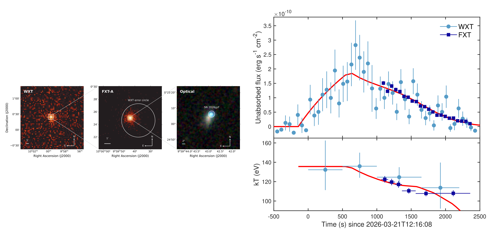<br />
图注：{\(\bf\) X-ray/optical images and X-ray evolution of EP260321a.} {\(\it\) Upper}: WXT and FXT-A image in 0.4--2.0 keV. The white circle shows the positional error circle of WXT with a radius of $2.7'$ (90\% confidence level). The optical image is the composite Mephisto-\(\textit{g}\textit{r}\textit{i}\) band images taken at $\sim$$T_0 + 2.3$ hr. {\(\it\) Lower}: The evolution of unabsorbed X-ray flux in 0.4--2.0 keV (upper) and temperature (lower) under the absorbed blackbody model. The transient began at $T_0 = \mathrm{2026\mbox{-}03\mbox{-}21T12{:}16{:}08}$ UTC (corresponding to the time of a $3\sigma$ excess above the background). Raw count rates were converted to the unabsorbed flux using the factors determined by the time-resolved spectral fitting (Methods). The vertical error bars show the $1\sigma$ uncertainty and the horizontal error bars indicate the corresponding time intervals. The solid lines represent the best fit with a supernova SBO model (Methods).<br />
对应解读：对应“建议重点查看的图表”中的1 X射线光变图、3 定位和对应体图，以及“关键图表逐图导读”的图1/图2；也支撑模型拟合段落中光变、温度和SBO模型拟合。<br />
入选理由：这张图同时给出WXT/FXT X射线定位误差圈、光学对应体图像，以及0.4--2.0 keV吸收校正通量和黑体温度随时间演化，并叠加超新星激波突破模型最佳拟合线。它直接支撑本文最核心的判断：EP260321a是真实X射线暂现、与后续光学超新星位置相关，并且其持续时间、通量演化和温度演化可由热SBO模型解释。相比其他候选图，它包含发现、定位、光变和物理模型拟合四类关键信息，科学价值最高。<br />
来源与置信度：arxiv_source；high；arxiv_source / main.tex:figure[1]</p>
<p><strong>Fig02</strong><br />
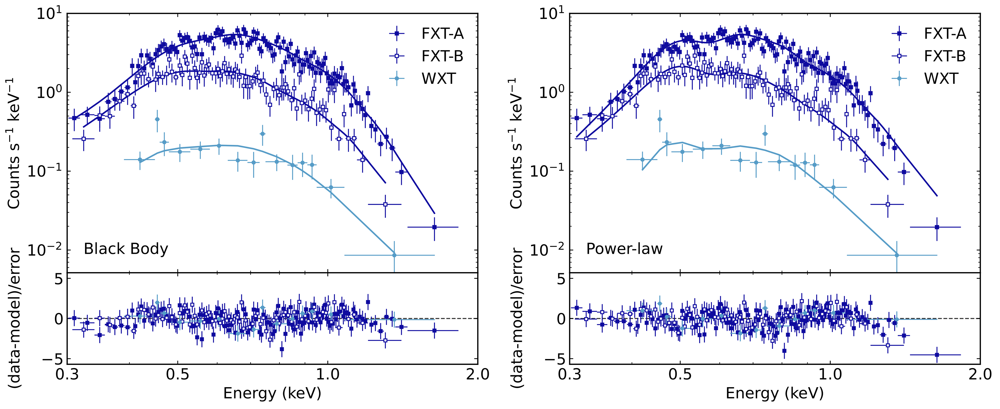<br />
图注：{\bf X-ray spectra of EP260321a.} The WXT spectrum includes data from $T_0$ to $T_0+2200$ s; the FXT spectra include data from $T_0+1065$ s to $T_0+2359$ s. The count rate of the FXT-B spectrum is significantly lower than that of FXT-A, since the counts in the core of the point-spread function of FXT-B were excluded in the spectrum to mitigate pile-up effect (Methods). The data points are shown with $1\sigma$ uncertainty and the lines represent the best-fit absorbed blackbody (left) and power-law (right) models.<br />
对应解读：对应“建议重点查看的图表”中的2 X射线谱拟合图、7 稳健性或模型比较表/模型比较要求，以及“关键图表逐图导读”的图3；也对应模型拟合段落中黑体与幂律谱模型比较。<br />
入选理由：这张图展示WXT和FXT的X射线谱，并直接比较吸收黑体模型与幂律模型，是验证‘热X射线激波突破’解释的关键证据。日报中特别强调要检查软X射线能段是否被黑体贴合、是否存在硬尾或系统偏离，以及非热模型是否可替代；Fig02正是唯一提供谱形和模型线比较的候选图，因此应优先嵌入。<br />
来源与置信度：arxiv_source；high；arxiv_source / main.tex:figure[2]</p>
<p><strong>Fig04</strong><br />
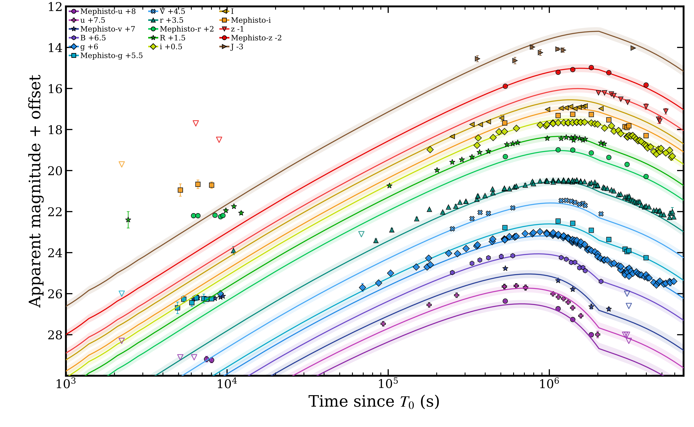<br />
图注：\textbf{Multiband optical and near-infrared evolution of SN~2026gzf.} Apparent magnitudes are plotted as a function of time, with vertical offsets applied to individual filters for clarity. Open downward triangles mark upper limits. The solid lines give a theoretical fit of the light curves by invoking power due to the radioactive decay of $^{56}$Ni, with the shaded bands representing the $1\sigma$ model uncertainty.<br />
对应解读：对应“建议重点查看的图表”中的4 光学光变图，以及模型拟合段落中后续光学超新星的拟合和分类前置证据。<br />
入选理由：这张图给出SN 2026gzf的多波段光学/近红外光变、早期上限和由56Ni放射性衰变供能的理论拟合及1σ不确定性。它支撑‘X射线暂现后数天出现并演化为超新星’这一时序关系，并帮助判断X射线事件与核心坍缩爆炸时刻是否一致。虽然它不直接给出Ic-BL谱分类，但对连接X射线SBO和后续超新星至关重要。<br />
来源与置信度：arxiv_source；high；arxiv_source / main.tex:figure[4]</p>
<p><strong>Fig03</strong><br />
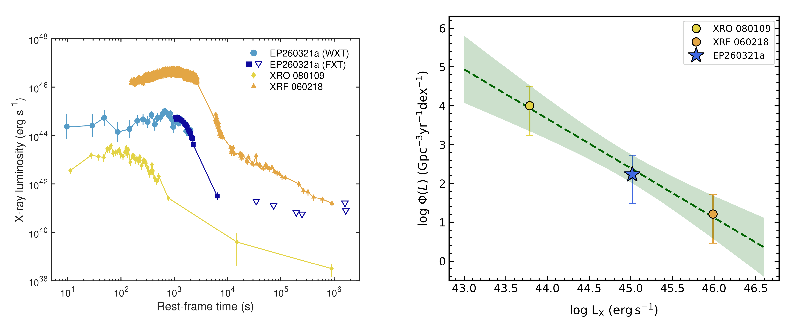<br />
图注：\textbf{X-ray light curves and luminosity function of SN SBOs.} {\it Left: }X-ray luminosity light curves of SN SBO events, including EP260321a, XRF 060218\cite{Campana2006,Mazzali2006Natur.442.1018M}, and XRO 080109\cite{Mazzali2008,Soderberg2008Natur.453..469S}. The data points are shown with $1\sigma$ uncertainty. The open triangles represent the upper limits derived from the FXT monitoring observations of EP260321a. The data of XRF 060218 are obtained from the Swift X-ray telescope light-curve repository\cite{Evans2007,Evans2009}. The data of XRO 080109 are obtained from Ref. \cite{Modjaz2009}. {\it Right: }X-ray luminosity function of SN SBOs. The best-fit result from a power-law model and its 1$\sigma$ uncertainty are shown as a dashed green line and the light-green shaded region, respectively. The peak luminosity of the thermal component of XRO 060218 is adopted\cite{Campana2006}. All luminosities are in the 0.3–10 keV band.<br />
对应解读：对应“建议重点查看的图表”中的1 X射线光变图的比较背景，以及详细解读中关于EP260321a相对于历史X射线SBO事件的持续时间、峰值光度和样本稀缺性的讨论。<br />
入选理由：这张图把EP260321a与XRF 060218、XRO 080109等历史SN SBO候选的X射线光度光变进行比较，并给出SN SBO的X射线光度函数。它不是日报逐图导读中最核心的单事件诊断图，但能突出EP260321a在已知SBO样本中的光度和时间演化位置，也支撑‘真实SBO样本稀少、该事件具有代表性和发现意义’的背景判断。<br />
来源与置信度：arxiv_source；high；arxiv_source / main.tex:figure[3]</p>
<h4 id="_11">强相关工作</h4>
<p>这篇工作应放在 X 射线激波突破和早期超新星观测的脉络中读。相似方向包括 SN 2008D 的 X 射线暂现、紫外/光学早期冷却包层观测、以及近年来由 eROSITA、Swift、MAXI、Einstein Probe 等触发的快速软 X 射线暂现。检索关键词可用 “shock breakout X-ray supernova”, “SN 2008D X-ray transient”, “Einstein Probe fast X-ray transient”, “Type Ic-BL circumstellar material”。</p>
<p>基础理论方面，Matzner 与 McKee 关于超新星激波突破的标度关系、Chevalier 与 Irwin 关于致密风中突破的模型、以及后续 Nakar、Sari、Waxman 等关于早期冷却和星周相互作用的工作是理解本文的背景。潜在张力在于：某些快速 X 射线暂现也可由喷流、低光度伽马暴、潮汐瓦解事件或磁星活动解释；因此真正的热谱、后续超新星关联和时标-能量一致性是区分的关键。检索关键词可用 “radiation mediated shock breakout”, “dense wind shock breakout”, “Wolf-Rayet pre-supernova mass loss”, “Ic-BL engine-driven supernova”。</p>
<p><strong>相似工作</strong>：<br />
- https://arxiv.org/abs/2606.10014<br />
- https://ui.adsabs.harvard.edu/abs/2008Natur.453..469S/abstract</p>
<p><strong>基础理论 / 方法工作</strong>：<br />
- https://ui.adsabs.harvard.edu/abs/1999ApJ...510..379M/abstract<br />
- https://ui.adsabs.harvard.edu/abs/2011ApJ...729L...6C/abstract<br />
- https://ui.adsabs.harvard.edu/abs/2010ApJ...725..904N/abstract</p>
<p><strong>相反观点 / 张力线索</strong>：<br />
- https://ui.adsabs.harvard.edu/abs/2006Natur.442.1011C/abstract<br />
- https://ui.adsabs.harvard.edu/abs/2019ARA%26A..57..305M/abstract</p>
</details>
<h3 id="2-fermi-lat-gamma-ray-emission-discovered-from-the-composite-supernova-remnant-b0453-685-in-the-large-magellanic-cloud">2. Fermi-LAT Gamma-ray Emission Discovered from the Composite Supernova Remnant B0453-685 in the Large Magellanic Cloud</h3>
<ul>
<li>来源：arXiv / astro-ph.HE</li>
<li>链接：https://arxiv.org/abs/2606.10840v1</li>
<li>作者：Jordan Eagle</li>
<li>评分：novelty 8/10，importance 8/10，relevance 10/10，final 9.70/10</li>
<li>推荐理由：Fermi-LAT发现LMC复合SNR B0453-685的MeV-GeV伽马辐射，可能为第二个河外PWN MeV-GeV探测；新源发现和多波段建模对PWN/宇宙线研究重要。</li>
</ul>
<p><strong>中文题目</strong>：在大麦哲伦云复合型超新星遗迹 B0453-685 中发现 Fermi-LAT 伽马射线辐射</p>
<p><strong>做了什么</strong>：这篇论文用 Fermi-LAT 长时间积分数据，在大麦哲伦云复合型超新星遗迹 B0453-685 的方向发现了微弱、近似点源状的 \(\gamma\) 射线辐射，能段覆盖约 \(300\,\mathrm{MeV}\) 到 \(2\,\mathrm{TeV}\)。作者把 LAT 空间-能谱似然分析与射电、X 射线等多波段信息结合，检验了超新星遗迹壳层、分子云相互作用和脉冲星风云等可能起源。结论倾向于：该源不是普通壳型超新星遗迹产生的强子或轻子 \(\gamma\) 射线，而更可能是一个约 \(\tau\sim 1.4\times 10^{4}\,\mathrm{yr}\) 的演化型脉冲星风云，且可能已经受到超新星反向激波压缩；在 \(5\,\mathrm{GeV}\) 以下还可能有显著的脉冲星磁层辐射成分。</p>
<p><strong>为什么重要</strong>：这是继大麦哲伦云中已知高能脉冲星风云之后，又一个可能的河外 MeV-GeV 脉冲星风云候选。河外样本的价值在于距离相对明确、环境金属丰度和星际辐射场不同于银河系，可以检验脉冲星风云演化模型是否只是在银河系样本上调参有效。该源还处在复合型超新星遗迹中，正好对应反向激波影响脉冲星风云的关键阶段，是研究粒子再加速、磁场压缩和电子能谱演化的有用对象。</p>
<p><strong>理论 / 观测 / 仪器方法价值</strong>：对观测而言，论文展示了如何在大麦哲伦云这样背景复杂、源拥挤的区域从 Fermi-LAT 数据中提取一个微弱高能源，并用源定位、谱形、扩展性和多波段对应体排除若干替代解释。对理论而言，它把半解析辐射演化模型用于一个河外复合型超新星遗迹，强调反向激波、脉冲星自转演化、电子注入谱和同步辐射截断共同决定可见的 GeV 谱。对宇宙线研究而言，它给出一个直接问题：演化型脉冲星风云在多大效率上能把自转能转化为高能轻子，并向周围介质释放。</p>
<p><strong>为什么应该关注</strong>：如果你关心脉冲星风云、超新星遗迹或 GeV 天空源鉴别，这篇文章值得看，因为它不是简单增加一个 LAT 源表条目，而是在一个距离已知的河外复合遗迹中讨论 \(\gamma\) 射线起源。它提醒我们：低显著度、点状的 GeV 源不一定能用壳层超新星遗迹模板解释；反向激波压缩后的老年 PWN 可以在 GeV 波段显得比 X 射线或 TeV 图像更难辨认。后续如果有更深的 X 射线、射电偏振、CTA 或更长时间 LAT 数据，这个源会成为检验 PWN 演化模型的好靶标。</p>
<details class="paper-detail">
<summary>展开详细解读：文章讲解、背景、理论、重点章节、图表与相关工作</summary>
<h4 id="_12">文章详细讲解</h4>
<p>科学问题：B0453-685 是大麦哲伦云中的复合型超新星遗迹，既有超新星遗迹壳层，也可能包含中心填充型非热辐射成分。复合遗迹最麻烦的问题是：高能辐射到底来自壳层激波加速的强子或电子，还是来自中心脉冲星及其脉冲星风云。论文的核心目标，是判断 Fermi-LAT 在该方向看到的 \(300\,\mathrm{MeV}\) 到 \(2\,\mathrm{TeV}\) 辐射是否真与 B0453-685 相关，以及它更像 SNR 还是 PWN。</p>
<p>作者怎么做：作者首先进行 Fermi-LAT 数据分析，包括事件选择、背景模型、附近源模型、空间定位、谱能量分布构建和显著性检验。随后把 LAT 结果与多波段资料对照：射电壳层形态、X 射线热等离子体和非热成分、可能的中心源、周围气体环境以及大麦哲伦云弥散背景。接着用宽波段辐射模型检验不同物理起源，包括壳层强子 \(pp\) 相互作用产生的 \(\pi^{0}\) 衰变 \(\gamma\) 射线、壳层电子的逆康普顿或轫致辐射、以及 PWN 中高能电子在磁场和辐射场中的同步辐射与逆康普顿辐射。</p>
<p>关键结果：论文报告了一个与 B0453-685 位置一致的微弱 LAT 点源候选，观测证据更支持 PWN 起源而不是 SNR 壳层起源。壳层 SNR 模型的困难在于，需要的能量预算、环境密度、谱形或多波段伴随辐射与观测不容易同时相容。半解析 PWN 演化模型则能较自然地解释 GeV 谱和多波段约束：系统年龄约为 \(\tau\sim 1.4\times 10^{4}\,\mathrm{yr}\)，PWN 很可能已被 SNR 反向激波扰动或压缩。作者还指出 \(5\,\mathrm{GeV}\) 以下可能存在脉冲星磁层成分，这会影响对 PWN 电子谱低能端和总能量的判断。</p>
<p>局限和下一步：这项工作仍受几个关键限制制约。第一，LAT 角分辨率在低能段较差，而大麦哲伦云弥散辐射和邻近源会影响源定位与谱形。第二，若没有清楚的脉冲星周期探测或高分辨率 X 射线 PWN 形态，PWN 解释仍属于强候选而非完全定案。第三，作者强调同步辐射截止频率或 X 射线非热谱的约束不足，使电子最高能量、磁场强度和加速效率仍有退化。下一步最关键的是更深的 X 射线观测、射电偏振与谱指数图、对可能脉冲星的周期搜索，以及未来 CTA 或类似设施在 TeV 波段对源形态和谱截断的检验。</p>
<h4 id="_13">背景知识</h4>
<p>B0453-685 位于大麦哲伦云。大麦哲伦云距离约 \(50\,\mathrm{kpc}\)，其中的超新星遗迹样本有一个重要优点：距离不确定性远小于许多银河系遗迹，因此由通量推算光度和能量预算时少了一个主要系统误差。但代价是角尺度小、源弱、弥散背景复杂，特别是在 GeV 波段，Fermi-LAT 的点扩散函数会把许多结构混在一起。</p>
<p>复合型超新星遗迹同时具有壳层和中心填充成分。壳层通常来自超新星冲击波扫过星际介质，产生热 X 射线、射电同步辐射和可能的 \(\gamma\) 射线；中心填充成分则常与年轻脉冲星及其 PWN 有关。PWN 由脉冲星自转能驱动，超相对论性风在终止激波处耗散，把能量注入电子、正电子和磁场，形成从射电到 TeV 的宽波段非热辐射。</p>
<p>历史上，SNR 与 PWN 的 \(\gamma\) 射线起源常被混淆。强子模型中，壳层加速质子与气体碰撞产生 \(\pi^{0}\)，再衰变为 \(\gamma\) 射线；轻子模型中，电子通过逆康普顿散射背景光子或轫致辐射产生高能光子。PWN 也会通过高能电子逆康普顿产生 GeV-TeV 光子。因此单看 \(\gamma\) 射线源的位置和总光度通常不够，必须结合气体密度、射电谱、X 射线谱、形态和能量预算。</p>
<p>现在重新看这个问题的原因有三点。第一，Fermi-LAT 累积曝光时间已经足够长，能挖掘早期源表中没有的微弱河外源。第二，大麦哲伦云的弥散模型和源表不断改进，使低显著度源的可靠性更容易评估。第三，PWN 演化理论越来越重视反向激波阶段；在约 \(10^{4}\,\mathrm{yr}\) 量级，SNR 反向激波会回撞中心 PWN，导致压缩、偏移、磁场增强和粒子谱重塑，正好可能改变 GeV 与 X 射线表现。</p>
<p>该领域一个常见误区是把“与超新星遗迹重合的 \(\gamma\) 射线源”直接称作“SNR \(\gamma\) 射线”。对复合遗迹尤其危险，因为脉冲星磁层、PWN、壳层激波、邻近背景源和大尺度弥散辐射都可能贡献。另一个误区是认为没有清晰 TeV 探测就不支持 PWN；事实上演化型 PWN 的谱峰、磁场和辐射场条件可能使 GeV 波段更容易被 LAT 看到，而 TeV 波段受电子冷却、仪器灵敏度和角分辨率限制。</p>
<h4 id="_14">基础理论 / 方法脉络</h4>
<p>从基本物理图像看，超新星遗迹和 PWN 都是把爆炸或自转能转化为非热粒子能量的系统。SNR 壳层的能量源是爆炸动能，激波通过一阶费米加速产生宇宙线质子和电子；PWN 的能量源是脉冲星自转能损失，脉冲星风在终止激波处把电磁能和粒子动能转化为宽能段非热辐射。两类系统都能产生 \(\gamma\) 射线，因此鉴别的关键不是“有没有高能光子”，而是谱形、形态、能量预算和多波段伴随辐射是否自洽。<br />
PWN 的辐射通常由同一群电子负责两类信号：在磁场 \(B\) 中产生同步辐射，从射电延伸到 X 射线；在背景光子场中产生逆康普顿辐射，进入 GeV-TeV 波段。背景光子包括宇宙微波背景、红外尘埃辐射和星光。若电子能谱、磁场和辐射场能量密度已知，就可以同时预言同步辐射和逆康普顿谱。反过来，多波段数据可约束电子谱归一化、谱指数、断裂能、截止能和磁场。</p>
<p>本文特别相关的是演化型 PWN。脉冲星自转能损失随时间下降，早期注入的高能电子会因同步辐射和逆康普顿冷却而改变能谱。SNR 反向激波返回中心后会压缩 PWN，使磁场增强、半径缩小、粒子绝热加热，并可能把 PWN 推离几何中心。这样的系统在 X 射线中可能表现为不规则、偏移或较弱的非热结构，而 GeV-TeV 谱则保留累积电子群的信息。<br />
Fermi-LAT 观测分析的基本逻辑是最大似然源检测。对每个空间像素和能量 bin，模型给出源、弥散背景和邻近天体的预期计数；然后比较有无目标源时的泊松似然。检验统计量通常写成 \(\mathrm{TS}\)，近似可换算为显著性。对弱源而言，背景模型、邻近源谱形、事件类型选择、能量阈值和 ROI 大小都会影响结论，因此论文不仅要报告最佳拟合通量，还要检查定位、谱能量分布点、扩展性和系统误差。</p>
<p>主要退化来自三个层面。第一，在辐射模型中，电子总能量与磁场强度存在退化：较强 \(B\) 会增强同步辐射并加快冷却，较弱 \(B\) 则需要更多电子来解释同样的逆康普顿通量。第二，在 SNR 壳层强子模型中，宇宙线质子能量与气体密度近似以乘积形式进入 \(\gamma\) 射线亮度。第三，在 LAT 数据中，点源通量与弥散背景归一化、邻近源光谱和仪器响应系统误差相关。理解这些退化，才能判断“PWN 更优”是物理上更自然，还是只是参数空间更灵活。</p>
<h4 id="_15">公式与推导</h4>
<p>第一步从脉冲星自转能损失写起。若脉冲星角速度为 \(\Omega\)、转动惯量为 \(I\)，自转能为</p>
<div class="math-display">\[\nE_{\rm rot}=\frac{1}{2}I\Omega^{2}.\]</div>
<p>自转能损失率定义为 \(\dot{E}=-dE_{\rm rot}/dt\)，它是驱动 PWN 粒子和磁场的能量源。这里 \(I\) 通常取中子星典型值，\(\Omega\) 由周期 \(P\) 给出，满足 \(\Omega=2\pi/P\)。</p>
<p>第二步引入磁偶极或一般制动律。若制动指数为 \(n\)，有</p>
<div class="math-display">\[\(\dot{\Omega}=-K\Omega^{n},\)\]</div>
<p>其中 \(K\) 汇集磁矩、倾角和转动惯量等参数。由此可得随时间下降的自转能损失率</p>
<div class="math-display">\[\(\dot{E}(t)=\dot{E}_{0}\left(1+\frac{t}{\tau_{0}}\right)^{-\frac{n+1}{n-1}},\)\]</div>
<p>其中 \(\dot{E}_{0}\) 是初始自转能损失率，\(\tau_{0}\) 是初始自转下降时标。本文讨论的 \(\tau\sim 1.4\times 10^{4}\,\mathrm{yr}\) 属于演化型 PWN 阶段，\(\dot{E}(t)\) 已明显低于早期值。</p>
<p>第三步把自转能注入粒子。常用电子注入谱可写为断裂幂律或带截止幂律，例如</p>
<div class="math-display">\[\nQ(E,t)=Q_{0}(t)\left(\frac{E}{E_{\rm b}}\right)^{-p_{i}}\exp\left(-\frac{E}{E_{\rm cut}}\right),\]</div>
<p>其中 \(E\) 是电子能量，\(E_{\rm b}\) 是断裂能，低于和高于断裂时指数分别取不同的 \(p_{i}\)，\(E_{\rm cut}\) 是最高能量截止。归一化 \(Q_{0}(t)\) 由粒子能量注入效率决定。</p>
<p>第四步用能量守恒确定注入归一化。若自转能损失中比例 \(\eta_{\rm e}\) 进入电子正电子，则</p>
<div class="math-display">\[\(\int_{E_{\min}}^{E_{\max}}\) E Q(E,t)\,dE=\eta_{\rm e}\(\dot{E}(t).\)\]</div>
<p>这里 \(E_{\min}\) 和 \(E_{\max}\) 是模型能量范围。这个式子直接连接脉冲星动力学与可观测辐射亮度，是判断能量预算是否合理的关键。</p>
<p>第五步写出粒子演化方程。电子数分布 \(N(E,t)\) 满足连续性方程</p>
<div class="math-display">\[\frac{\partial N}{\partial t}+\frac{\partial}{\partial E}\(\left\)[\dot{E}_{\rm loss}(E,t)N(E,t)\(\right\)]=Q(E,t)-\frac{N(E,t)}{t_{\rm esc}}.\]</div>
<p>其中 \(\dot{E}_{\rm loss}\) 包含同步辐射、逆康普顿和绝热损失，\(t_{\rm esc}\) 是逃逸时标。若逃逸不重要，可以忽略最后一项；若 PWN 被反向激波压缩，绝热项和磁场演化会显著改变 \(N(E,t)\)。</p>
<p>第六步给出辐射冷却的核心形式。在 Thomson 极限下，同步辐射与逆康普顿损失近似为</p>
<div class="math-display">\[-\dot{E}_{\rm rad}=\frac{4}{3}\sigma_{\rm T}c\gamma^{2}\left(U_{B}+U_{\rm rad}\right),\]</div>
<p>其中 \(\sigma_{\rm T}\) 是 Thomson 截面，\(c\) 是光速，\(\gamma=E/(m_{\rm e}c^{2})\)，\(U_{B}=B^{2}/(8\pi)\) 是磁场能量密度，\(U_{\rm rad}\) 是背景辐射场能量密度。这个式子说明高能电子冷却更快，也说明 \(B\) 与辐射场共同决定同步和 \(\gamma\) 射线输出。</p>
<p>第七步连接同步辐射特征频率。电子 Lorentz 因子为 \(\gamma\) 时，其同步辐射特征频率近似为</p>
<div class="math-display">\[\nu_{\rm syn}\(\simeq\) \frac{3eB}{4\pi m_{\rm e}c}\gamma^{2},\]</div>
<p>其中 \(e\) 是元电荷，\(m_{\rm e}\) 是电子质量。若 X 射线同步辐射截止没有被很好测量，就很难准确约束 \(\gamma_{\max}\)、\(B\) 和 \(E_{\rm cut}\)，这正是本文强调的关键局限之一。</p>
<p>第八步连接逆康普顿 \(\gamma\) 射线能量。在 Thomson 近似下，种子光子能量为 \(\epsilon\) 时，散射后光子能量约为</p>
<div class="math-display">\[\nE_{\gamma}\simeq \frac{4}{3}\gamma^{2}\epsilon.\]</div>
<p>这个关系说明 GeV 光子可由不同能量电子散射不同种子光子产生，因此仅用 LAT 谱无法唯一确定电子能谱，需要同步辐射约束来打破退化。</p>
<p>第九步写出 LAT 检测的统计量。对每个 bin 的观测计数 \(k_{j}\) 和模型期望计数 \(\mu_{j}(\boldsymbol{\theta})\)，泊松似然为</p>
<div class="math-display">\[\(\ln\) \(\mathcal{L}(\boldsymbol{\theta})=\sum_{j}\left\)[\(k_{j}\ln\) \mu_{j}(\boldsymbol{\theta})-\mu_{j}(\boldsymbol{\theta})-\ln(k_{j}!)\(\right\)].\]</div>
<p>这里 \(\boldsymbol{\theta}\) 包含源通量、谱指数、背景归一化和邻近源参数。源显著性常用</p>
<div class="math-display">\[\(\mathrm{TS}=2\left\)[\(\ln\) \mathcal{L}_{\rm src}-\(\ln\) \(\mathcal{L}_{0}\right\)],\]</div>
<p>其中 \(\mathcal{L}_{\rm src}\) 是包含目标源的似然，\(\mathcal{L}_{0}\) 是无目标源的似然。在常规条件下，\(\sqrt{\mathrm{TS}}\) 可近似看作高斯显著性，但弱源、边界参数和复杂背景会让这种近似变得不完美。</p>
<h4 id="_16">模型拟合 / 应用方法</h4>
<p>这类工作的第一层拟合是 LAT 空间-能谱似然拟合。模型通常包括目标源、Fermi 源表中的邻近点源或扩展源、银河系弥散模板、各向同性背景，以及大麦哲伦云本身的扩展弥散成分。目标源可先用简单幂律表示，拟合位置、通量归一化和谱指数；再检查是否需要曲率、截断或扩展模板。弱源情形下，能量阈值选择尤其重要，因为低能段光子多但点扩散函数宽，高能段定位好但统计量少。</p>
<p>第二层拟合是谱能量分布构建。作者需要在若干能量 bin 中分别估计通量或给出上限，并与整体最佳拟合谱比较。读者应重点看每个 bin 的 \(\mathrm{TS}\)、误差条和上限处理，而不要只看一条平滑模型线。若 \(5\,\mathrm{GeV}\) 以下存在额外脉冲星成分，那么用单一 PWN 逆康普顿谱拟合整个 LAT 频段会把低能通量错误地归入电子谱，从而偏置低能电子数量和注入效率。</p>
<p>第三层是多波段辐射模型拟合。PWN 模型至少涉及年龄、当前自转能损失率或初始自转参数、电子注入谱、粒子注入效率、磁场演化、PWN 半径、环境辐射场和反向激波作用。SNR 壳层模型则涉及冲击波能量、环境气体密度、质子谱、电子谱、电子质子比和磁场。许多参数不是由 LAT 数据单独决定，而是由射电通量、X 射线谱、源大小和能量预算共同限制。</p>
<p>主要退化包括 \(B\) 与电子总能量的退化、气体密度与强子宇宙线能量的退化、年龄与电子冷却断裂的退化，以及脉冲星磁层低能 GeV 成分与 PWN 逆康普顿低能端的退化。反向激波还会引入几何和时间演化不确定性：同样的当前半径和磁场，可能对应不同的压缩历史。半解析模型有助于快速探索参数空间，但无法完全替代流体或磁流体模拟。</p>
<p>残差诊断应包括空间残差图、源定位误差椭圆、目标源加入前后的 \(\mathrm{TS}\) 图、SED 残差、邻近源参数变化和弥散背景替代模型测试。如果加入目标源后仍在附近留下结构性残差，说明可能存在未建模扩展辐射或背景模板问题。如果目标源位置随能量阈值显著漂移，则需要警惕低能弥散背景驱动的假源。实际应用上，这篇论文提供了一个模板：先以保守的 LAT 检测建立事实，再用多波段物理模型比较 SNR 与 PWN，而不是从源名直接决定解释。</p>
<h4 id="_17">重点章节 / 结果段落怎么读</h4>
<ol>
<li>
<p>数据与 Fermi-LAT 分析部分应优先阅读。这里决定了源是否可靠，包括采用的时间范围、能量范围 \(300\,\mathrm{MeV}\) 到 \(2\,\mathrm{TeV}\)、事件类、ROI、背景模型和邻近源处理。读者应特别注意目标源的 \(\mathrm{TS}\)、定位误差、是否点源化、以及不同能量阈值下结果是否稳定。</p>
</li>
<li>
<p>多波段对应体部分是源鉴别的核心。应查看作者如何描述 B0453-685 的射电壳层、X 射线热与非热成分、中心候选源、周围气体和可能的分子云环境。如果壳层与 LAT 源位置或能量预算不吻合，而中心填充成分更自然，就会支持 PWN 解释。</p>
</li>
<li>
<p>SNR 起源检验部分需要带着能量预算读。强子模型必须同时满足气体密度、质子能量和 GeV 谱形；轻子壳层模型必须不违反射电和 X 射线同步辐射约束。读者应看作者排除 SNR 起源是因为拟合差、参数不物理，还是因为缺少必要的多波段伴随证据。</p>
</li>
<li>
<p>PWN 半解析演化模型部分是论文的物理重心。应关注模型如何设置年龄、脉冲星自转演化、电子注入谱、磁场、环境辐射场和反向激波影响。论文倾向于 \(\tau\sim 1.4\times 10^{4}\,\mathrm{yr}\) 的演化型 PWN，并认为反向激波已影响 PWN，这些结论都依赖该部分的参数耦合。</p>
</li>
<li>
<p>讨论与结论部分应重点看作者对低于 \(5\,\mathrm{GeV}\) 成分的解释，以及对同步辐射截止约束不足的表述。这里关系到结论强度：若低能 GeV 光子来自脉冲星磁层，则 PWN 模型参数会改变；若 X 射线截止未知，则最高能电子和加速效率仍不能精确确定。</p>
</li>
</ol>
<h4 id="_18">建议重点查看的图表</h4>
<ol>
<li>
<p>LAT \(\mathrm{TS}\) 图或显著性图：看 B0453-685 方向是否有局部显著峰，峰值是否与遗迹或中心源位置一致，周围是否还有残余结构。</p>
</li>
<li>
<p>源定位图：看 LAT 误差圆、射电壳层轮廓、X 射线结构和可能中心源的相对位置。若 \(\gamma\) 射线位置更靠近中心填充成分而非壳层亮边，会支持 PWN。</p>
</li>
<li>
<p>谱能量分布图：看 \(300\,\mathrm{MeV}\) 到 \(2\,\mathrm{TeV}\) 的通量点、上限、最佳拟合谱线，以及 \(5\,\mathrm{GeV}\) 以下是否出现相对独立的低能成分。</p>
</li>
<li>
<p>多波段 SED 模型图：比较同步辐射、逆康普顿、可能脉冲星磁层、强子 \(\pi^{0}\) 衰变和轫致辐射各自贡献。重点看模型是否同时通过射电、X 射线和 LAT 约束。</p>
</li>
<li>
<p>PWN 演化参数或模型族图：看不同年龄、磁场、注入谱和反向激波状态下的 SED 变化，尤其是 \(\tau\sim 1.4\times 10^{4}\,\mathrm{yr}\) 是否被数据真正偏好。</p>
</li>
<li>
<p>残差图或替代背景测试表：看加入目标源后残差是否消失，弥散模型变化是否显著改变通量和谱指数。这对弱源发现比漂亮的 SED 更重要。</p>
</li>
</ol>
<h4 id="_19">关键图表逐图导读</h4>
<p>图 1：如果论文给出 LAT \(\mathrm{TS}\) 或计数残差图，横纵轴通常是赤经与赤纬或大麦哲伦云局部天区坐标，颜色表示 \(\mathrm{TS}\)、残差或显著性。读图时应看峰值是否落在 B0453-685 的多波段轮廓内，以及误差圆是否包含其他可能源。陷阱是低能 LAT 点扩散函数较宽，颜色峰不等于真实源大小；若没有分能段检查，可能把弥散背景起伏误作点源。</p>
<p>图 2：源定位与多波段叠加图通常会把射电轮廓、X 射线图像、LAT 最佳位置和置信区间画在一起。应看 \(\gamma\) 射线误差椭圆与壳层、中心填充成分或候选脉冲星的几何关系。若误差椭圆很大，不能过度解读“对准”；若高能事件定位更集中，则比全能段图更有鉴别力。</p>
<p>图 3：LAT 谱能量分布图的横轴为光子能量，纵轴多为 \(E^{2}dN/dE\) 或能量通量。数据点带统计误差，低显著 bin 可能画成上限，模型线可能包括幂律、曲率谱或分成 PWN 与脉冲星成分。读图要注意低于 \(5\,\mathrm{GeV}\) 的点是否系统高于单一 PWN 模型，以及最高能 bin 是否只是上限而非真实探测。</p>
<p>图 4：宽波段 SED 图通常从射电、红外、光学、X 射线延伸到 GeV-TeV。同步辐射线约束电子低能到高能端，逆康普顿线解释 \(\gamma\) 射线，可能还会画出强子或轫致辐射替代模型。关键是看同一个电子谱是否能同时解释射电和 LAT，而不超出 X 射线上限或测量值。陷阱是不同仪器孔径和源区大小可能不同，直接把所有点放在同一 SED 上会引入归一化偏差。</p>
<p>图 5：若有 PWN 演化模型比较图，横轴可能是年龄、磁场、半径或能量，纵轴可能是通量、电子谱或模型残差。应看反向激波压缩前后模型如何改变磁场和辐射峰位置。不要只看最佳模型，还要看可接受模型范围；若许多参数组合都能拟合 LAT 点，则年龄和效率结论应视为模型依赖。</p>
<p>图 6：若有系统误差或稳健性表，应看不同弥散背景、能量阈值、邻近源自由参数设置下，目标源的 \(\mathrm{TS}\)、通量和谱指数是否稳定。弱源论文的可信度很大程度取决于这类表格。若某个背景选择让 \(\mathrm{TS}\) 大幅下降或位置漂移，结论就应降级为候选而非稳健发现。</p>
<h4 id="_20">论文原图 / 可嵌入图片</h4>
<p><strong>Fig02</strong><br />
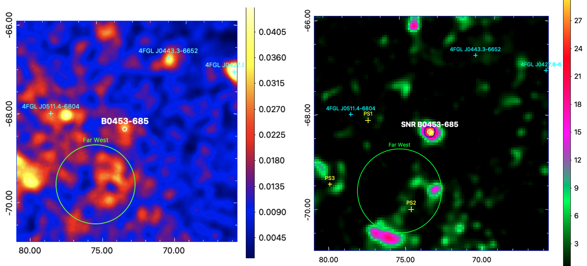<br />
图注：{\it Left:} Smoothed ($\sigma = 0.1\,\degree$) 5\,$\degree\times 5$\,$\degree$ count map of \texttt{PSF3} events between 1--10\,GeV with the locations of 4FGL sources in the field of view labeled. The pixel size is 0.01 deg pixel$^{-1}$. {\it Right:} 5\,$\degree\times 5$\,$\degree$ TS map between 1--10\,GeV. The maximum TS value at the SNR position is $\sim$ 28 ($\sim 5\sigma$). The 95\% positional uncertainty for the best-fit $\gamma$-ray point source is in blue. In both panels, the location and approximate size of the composite SNR~B0453--685 ($r=0.02\degree$) is marked in white with radius $r=0.05\degree$.<br />
对应解读：对应“建议重点查看的图表”第1项LAT TS图/显著性图、第2项源定位图，以及“关键图表逐图导读”图1、图2和空间似然拟合段落。<br />
入选理由：这是确认弱LAT源是否真实存在的核心图：同时给出1--10 GeV计数图、TS图、约5σ峰值、4FGL邻近源位置、B0453-685位置/尺度以及95%伽马射线定位误差。它直接检验显著峰是否落在遗迹方向、是否受邻近源或背景结构影响，比单纯SED图更能支撑发现本身的可信度。<br />
来源与置信度：arxiv_source；high；arxiv_source / skeleton.tex:figure[2]</p>
<p><strong>Fig04</strong><br />
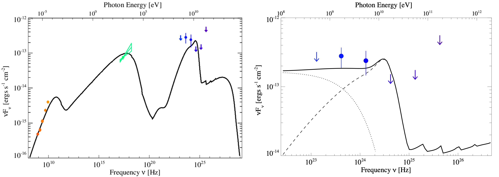<br />
图注：{\it Left:} The best-fit SED assuming all Fermi--LAT emission is non-magnetospheric in origin (i.e., PWN only). {\it Right:} The $\gamma$-ray spectral evolutionary model assuming magnetospheric contribution to the Fermi--LAT emission. The dotted line indicates the pulsar contribution and the dashed line indicates the PWN contribution. The colored points represent the values of observed data that the model used as comparison points for fitting and are the same values as those in the top panel of Figure~\ref{fig:mybroadbandpwnmodel}. In both panels, the discontinuous spectral features beyond $\nu \sim 10^{25}\,$Hz are numerical artifacts and can be ignored.<br />
对应解读：对应“建议重点查看的图表”第3项谱能量分布、第4项多波段SED模型、第5项PWN演化模型族，以及“关键图表逐图导读”图3、图4、图5和多波段辐射模型拟合段落。<br />
入选理由：这张图直接比较了两种关键PWN解释：全部LAT辐射来自非磁层/PWN成分，或低能GeV段含有脉冲星磁层贡献。图中明确区分了脉冲星虚线和PWN虚线/模型贡献，正好支撑日报中关于5 GeV以下可能有独立低能成分、PWN演化模型偏好以及电子谱解释会受磁层成分影响的讨论。<br />
来源与置信度：arxiv_source；high；arxiv_source / skeleton.tex:figure[4]</p>
<p><strong>Fig03</strong><br />
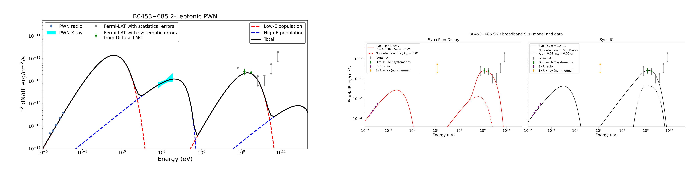<br />
图注：The best-fit broadband models for the three scenarios investigated to understand $\gamma$-ray origin. {\it Top:} Two leptonic populations are required to explain the broadband PWN emission. {\it Bottom Left:} a single leptonic population describing SNR synchrotron emission combined with a single hadronic population describing the $\gamma$-ray emission via pion decay from the SNR. {\it Bottom Right:} The case where the leptonic population dominates over the hadronic population in the SNR. Radio data of PWN (blue) and SNR (purple) are from \citet{haberl2012}. X-ray data of PWN is in cyan and for the SNR it is yellow, and the $\gamma$-ray data is shown in grey/green. Adapted from \citet{eagle2023}.<br />
对应解读：对应“建议重点查看的图表”第4项多波段SED模型，以及“关键图表逐图导读”图4和SNR/PWN起源比较的模型拟合段落。<br />
入选理由：该图集中展示三种宽波段起源方案：PWN双轻子种群、SNR强子π0衰变主导、以及SNR轻子主导情形，并叠加射电、X射线和伽马射线数据。它最能支撑日报中‘壳层SNR模型困难、PWN解释更自然’这一物理判别，比只展示形态的图更能说明为什么作者排除或弱化SNR起源。<br />
来源与置信度：arxiv_source；high；arxiv_source / skeleton.tex:figure[3]</p>
<p><strong>Fig01</strong><br />
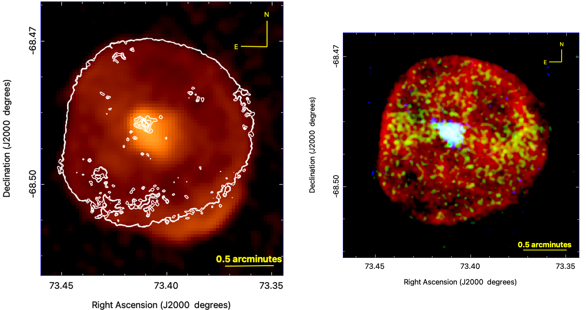<br />
图注：{\it Left:} The 1.4\,GHz radio emission observed from SNR~B0453--685 \citep{gaensler2003}. The white contours correspond to the central PWN and the outer SNR shell as observed in X-ray (right panel). {\it Right:} Tri-color X-ray flux map of SNR~B0453--685 \citep{gaensler2003}. Red is soft X-ray emission between 0.5--1.2\,keV, green is medium flux between 1.2--2\,keV, and blue is hard flux from 2--8\,keV. Soft and medium X-ray emission outlines and fills the entire SNR while the hard X-ray emission is heavily concentrated towards the center of the SNR where the PWN is located.<br />
对应解读：对应“建议重点查看的图表”第2项源定位与多波段叠加图，以及“关键图表逐图导读”图2中射电壳层、X射线中心填充/PWN结构的几何关系。<br />
入选理由：这张图提供B0453-685本身的多波段形态基准：1.4 GHz射电壳层、X射线壳层/中心硬X射线集中区和PWN位置。虽然没有LAT误差圈或谱信息，但它能帮助读者理解为什么伽马射线若更靠近中心填充硬X射线区域会支持PWN，而非壳层SNR解释。<br />
来源与置信度：arxiv_source；high；arxiv_source / skeleton.tex:figure[1]</p>
<h4 id="_21">强相关工作</h4>
<p>这篇工作自然连接到 Fermi-LAT 对大麦哲伦云整体 \(\gamma\) 射线辐射、30 Dor 区域、N 157B 等河外 PWN 或复合遗迹的研究。可检索关键词包括 “Fermi LAT Large Magellanic Cloud gamma-ray sources”、“extragalactic pulsar wind nebula gamma rays”、“N 157B Fermi LAT PWN” 和 “composite supernova remnant LMC”。这些工作提供了背景模型、源拥挤问题和河外 PWN 光度标尺。</p>
<p>理论上，它与 PWN 演化、反向激波压缩和多波段辐射建模文献相连。建议检索 “pulsar wind nebula reverse shock evolution”、“time-dependent PWN radiative model”、“PWN inverse Compton synchrotron modeling” 和 “relic pulsar wind nebula gamma rays”。可能的相反观点或张力主要来自壳层 SNR 强子解释：如果未来发现 B0453-685 周围有高密度气体与壳层激波空间重合，且 GeV 谱出现典型 \(\pi^{0}\) 特征，则 SNR 起源会重新变得有竞争力；因此也应检索 “hadronic gamma rays supernova remnant LMC” 和 “B0453-685 molecular gas”。</p>
<p><strong>相似工作</strong>：<br />
- https://arxiv.org/abs/2606.10840</p>
<p><strong>基础理论 / 方法工作</strong>：<br />
- https://arxiv.org/abs/0910.1608<br />
- https://arxiv.org/abs/1702.08280<br />
- https://arxiv.org/abs/1209.3191</p>
<p><strong>相反观点 / 张力线索</strong>：<br />
（未提供）</p>
</details>
<h3 id="3-a-multiwavelength-interpretation-of-hess-j1857026-emission-using-the-fermi-lat-veritas-and-hawc-observatories">3. A Multiwavelength Interpretation of HESS J1857+026 Emission Using the Fermi-LAT, VERITAS, and HAWC Observatories</h3>
<ul>
<li>来源：arXiv / astro-ph.HE</li>
<li>链接：https://arxiv.org/abs/2606.10828v1</li>
<li>作者：Jordan Eagle, Yu Chen, Ramiro Torres-Escobedo, Youyou Li, Ruo-Yu Shang</li>
<li>评分：novelty 8/10，importance 8/10，relevance 10/10，final 9.70/10</li>
<li>推荐理由：结合Fermi-LAT、VERITAS和HAWC研究HESS J1857+026的MeV-TeV辐射、PWN/SNR成分和扩散抑制，是典型高优先级伽马射线多仪器论文。</li>
</ul>
<p><strong>中文题目</strong>：用 Fermi-LAT、VERITAS 与 HAWC 多波段数据解释 HESS J1857+026 的伽马射线辐射</p>
<p><strong>做了什么</strong>：这篇文章重新分析了 HESS J1857+026 从 \(\mathrm{MeV}\) 到 \(\mathrm{TeV}\) 的伽马射线辐射，联合使用 Fermi-LAT、VERITAS 和 HAWC 的空间与能谱信息，判断其高能辐射主要来自由脉冲星 \(\mathrm{PSR\ J1856+0245}\) 驱动的演化型脉冲星风云。作者用辐射模型和简化演化模型约束系统年龄、磁场和粒子扩散，得到年龄约为 \(16\text{--}21\,\mathrm{kyr}\)，磁场约为 \(0.4\text{--}1.6\,\mu\mathrm{G}\)，并发现 \(50\,\mathrm{TeV}\) 电子附近的局域扩散系数约为 \(10^{28}\,\mathrm{cm^2\,s^{-1}}\)，低于典型星际介质值。文章也指出 \(E<10\,\mathrm{GeV}\) 的低能谱成分可能不完全属于脉冲星风云，而可能包含超新星遗迹的强子辐射贡献。</p>
<p><strong>为什么重要</strong>：HESS J1857+026 是银河系平面上典型的扩展 \(\mathrm{TeV}\) 源之一，过去在脉冲星风云、超新星遗迹和分子云相互作用之间存在解释竞争。本文的重要性在于它不只拟合总能谱，而是把 Fermi-LAT 的低能空间信息、VERITAS 的角分辨率优势和 HAWC 的高能大视场覆盖结合起来，用能谱形状和径向面亮度共同约束粒子起源与传播。对演化型脉冲星风云而言，能否同时解释 \(\mathrm{GeV}\) 到 \(\mathrm{TeV}\) 能谱和源的角向延展，是区分电子逆康普顿辐射与强子 \(\pi^0\) 衰变辐射的关键。</p>
<p><strong>理论 / 观测 / 仪器方法价值</strong>：这项工作的价值主要在方法和物理约束两方面。方法上，它展示了多仪器径向面亮度剖面可以转化为粒子扩散约束，而不只是用来声明源是否扩展。物理上，它为 HESS J1857+026 提供了一个自洽的演化型脉冲星风云图像：老化电子在低磁场环境中通过逆康普顿散射本地光子场产生 \(\mathrm{TeV}\) 伽马射线，同时扩散被显著抑制。对类似的 \(\mathrm{TeV}\) halo、演化型 PWN 和银河宇宙线传播研究，这种联合空间—能谱建模具有可迁移价值。</p>
<p><strong>为什么应该关注</strong>：如果你关心银河系高能源的分类、脉冲星周围扩散抑制、或未来 CTA/HAWC/LHAASO 对扩展源的解释，这篇文章值得看。它提醒我们，单独的宽带能谱拟合往往不足以判定辐射机制；低能 \(\mathrm{GeV}\) 成分、\(\mathrm{TeV}\) 空间延展和径向亮度衰减必须一起看。它也提供了一个可检验的结论：HESS J1857+026 的高能部分大概率是演化型 PWN，但低于 \(10\,\mathrm{GeV}\) 的成分可能暗示 SNR/分子云环境中的强子过程。</p>
<details class="paper-detail">
<summary>展开详细解读：文章讲解、背景、理论、重点章节、图表与相关工作</summary>
<h4 id="_22">文章详细讲解</h4>
<p>科学问题：HESS J1857+026 是一个位于银河平面上的扩展高能伽马射线源，早期 H.E.S.S. 观测显示其在 \(\mathrm{TeV}\) 能段明亮且有空间延展，但仅凭 \(\mathrm{TeV}\) 图像很难确定它到底是脉冲星风云、超新星遗迹冲击波与气体相互作用，还是多个源混合。源附近存在高自转能损失率脉冲星 \(\mathrm{PSR\ J1856+0245}\)，这自然支持 PWN 解释；但低能 \(\mathrm{GeV}\) 谱段可能与高能 \(\mathrm{TeV}\) 谱段不完全连续，也可能提示强子辐射或另一个源成分。因此本文的核心问题不是简单问“有没有伽马射线”，而是问：从 \(\mathrm{MeV/GeV}\) 到 \(\mathrm{TeV}\) 的能谱和空间形态能否由同一个演化型 PWN 自洽解释？如果不能，低能偏差应该怎样理解？</p>
<p>作者怎么做：作者联合 Fermi-LAT、VERITAS 和 HAWC 三类观测。Fermi-LAT 提供 \(\mathrm{GeV}\) 能段的大视场和长时间积累，适合刻画低能谱形状和较大尺度空间结构；VERITAS 在 \(\mathrm{TeV}\) 能段具有较好的角分辨率，适合测量源形态和局部面亮度；HAWC 则在多 \(\mathrm{TeV}\) 到更高能段提供连续巡天和对扩展源的灵敏度。作者进行空间和能谱分析后，构建辐射模型：电子群通过逆康普顿散射本地光子场产生伽马射线，同时同步辐射受磁场约束；另考虑低能端可能存在由质子—气体碰撞导致的强子成分。随后用简化 PWN 演化模型估计系统年龄、磁场强度和粒子扩散条件。</p>
<p>关键结果：文章认为 \(E>10\,\mathrm{GeV}\) 的主导成分最可能是 \(\mathrm{PSR\ J1856+0245}\) 供能的演化型 PWN。拟合给出系统年龄 \(t\simeq16\text{--}21\,\mathrm{kyr}\)，磁场 \(B\simeq0.4\text{--}1.6\,\mu\mathrm{G}\)。这样的低磁场有利于解释为什么同步辐射不突出而逆康普顿伽马射线明显，也符合许多年老 PWN 在 \(\mathrm{TeV}\) 能段比 X 射线更显著的经验图像。作者还通过多仪器径向面亮度剖面推断局域扩散在 \(50\,\mathrm{TeV}\) 附近约为 \(D(50\,\mathrm{TeV})\sim10^{28}\,\mathrm{cm^2\,s^{-1}}\)，低于通常银河星际介质扩散系数，说明脉冲星周围可能存在扩散抑制区，与 Geminga 一类 \(\mathrm{TeV}\) halo 和其他 TeV PWN 的趋势相呼应。</p>
<p>局限和下一步：这类结论仍受若干系统误差限制。首先，Fermi-LAT 在银河平面低纬度区域的弥散背景建模复杂，低能 \(\mathrm{GeV}\) 谱段特别容易受背景模板、邻近源和点扩散函数影响。其次，PWN 演化模型通常需要假定注入谱、制动指数、初始自转周期、磁场演化和目标光子场，这些假设之间存在强退化。再次，若 \(E<10\,\mathrm{GeV}\) 成分含有强子辐射，必须进一步结合 CO/H I 气体分布、SNR 壳层形态和可能的非热射电/X 射线证据。下一步最有价值的是用 CTA 或 LHAASO 类数据获得更细的能量分辨形态，检验源半径是否随能量缩小，并用更高质量的分子云和射电壳层数据分离 PWN 与 SNR 成分。</p>
<h4 id="_23">背景知识</h4>
<p>HESS J1857+026 属于银河系内扩展 \(\gamma\) 射线源。此类源常见于恒星形成活跃的银河平面，视场内往往同时存在年轻脉冲星、超新星遗迹、分子云和弥散宇宙线背景。早期切伦科夫望远镜发现许多 \(\mathrm{TeV}\) 扩展源时，X 射线或射电对应体并不总是清楚，因此“暗 \(\mathrm{TeV}\) 源”一度成为重要问题。后来许多这类源被解释为演化型 PWN：高能电子寿命长，能在低磁场环境中通过逆康普顿散射持续发光，而 X 射线同步辐射较弱。<br />
PWN 的基本图像是：脉冲星自转能通过相对论风注入电子和正电子，风在终止激波处加速粒子，形成充满磁场和高能轻子的星云。年轻 PWN 如蟹状星云在 X 射线和 \(\mathrm{TeV}\) 都明亮，磁场较强、结构紧凑；年老 PWN 经过反向激波压缩、偏移和扩散后，\(\mathrm{TeV}\) 辐射区可能比 X 射线区大得多，并且与脉冲星当前位置有角向偏移。HESS J1857+026 附近的 \(\mathrm{PSR\ J1856+0245}\) 具有足够大的自转能损失率，因此是自然候选供能源。</p>
<p>强子模型则从另一条路径解释伽马射线：超新星遗迹加速的质子或核子与周围气体碰撞，产生中性介子 \(\pi^0\)，随后衰变为 \(\gamma\) 射线。这类模型要求有足够的目标气体密度和宇宙线能量预算，常与分子云、SNR 壳层或 H I 结构相关。强子谱在 \(\mathrm{GeV}\) 能段可能出现特征性的低能转折，但在复杂背景和多源混叠情况下并不容易单独识别。因此 HESS J1857+026 的低能成分是否属于同一 PWN，或者包含 SNR 强子贡献，是本文重新评估的关键。</p>
<p>现在重新看这个源的原因在于多仪器数据更成熟。Fermi-LAT 已积累多年数据，能更好处理 \(\mathrm{GeV}\) 能段；VERITAS 可补充高角分辨率 \(\mathrm{TeV}\) 形态；HAWC 对扩展源和高能谱尾更敏感。三者联合可覆盖约数个数量级能量范围，并在空间尺度上交叉检查。常见误区是把宽带谱能被单个电子模型拟合视为“证明 PWN”，或把低能谱偏离视为“证明强子”。实际上两者都需要结合空间形态、能量依赖延展、气体分布、脉冲星能量预算和背景系统误差一起判断。</p>
<h4 id="_24">基础理论 / 方法脉络</h4>
<p>从物理图像看，PWN 解释依赖一群高能电子/正电子。脉冲星把自转能注入粒子和磁场，高能电子在星云中传播并损失能量。若磁场强，电子同步辐射产生射电到 X 射线；若目标光子场丰富，如宇宙微波背景、红外和星光，电子通过逆康普顿散射把低能光子提升到 \(\mathrm{GeV}\text{--}\mathrm{TeV}\)。同一电子群的同步辐射和逆康普顿辐射之间的相对强度，主要由磁场能量密度与辐射场能量密度之比控制。</p>
<p>本文采用的 PWN 图像偏向演化型系统。年龄达到 \(10^4\,\mathrm{yr}\) 量级后，最高能电子已经显著冷却，X 射线星云可能变暗，而较低能但仍可产生 \(\mathrm{TeV}\) 伽马射线的电子可以在更大范围内扩散。反向激波和周围介质不均匀性还会造成辐射区偏移。因此，判断 HESS J1857+026 是否为 PWN，不应只看脉冲星是否位于源中心，而要看能量预算、冷却时间、扩散长度和面亮度剖面是否同时合理。</p>
<p>观测方法上，Fermi-LAT、VERITAS 和 HAWC 的响应函数、点扩散函数和背景处理差别很大。Fermi-LAT 在低能端点扩散函数较宽，银河弥散背景强；VERITAS 对有限视场内背景估计敏感，但角分辨率好；HAWC 适合持续监测高能大尺度辐射，但角分辨率和能量分辨率随能量与天顶角变化。把三者直接拼成谱能量分布时，需要注意各仪器对扩展模板、积分区域和背景模型的定义是否一致。</p>
<p>关键退化包括：磁场 \(B\) 与电子总能量 \(W_e\) 的退化，目标光子场能量密度 \(u_{\rm ph}\) 与电子谱归一化的退化，年龄 \(t\) 与最大电子能量和冷却断裂的退化，以及扩散系数 \(D(E)\) 与注入历史和源真实三维几何的退化。若加入强子成分，还会出现质子能量 \(W_p\) 与气体密度 \(n_{\rm H}\) 的乘积退化。本文的价值在于用空间面亮度剖面额外约束 \(D(E)\)，从而减轻仅靠总能谱时的退化。</p>
<h4 id="_25">公式与推导</h4>
<p>第一步是从脉冲星供能开始。PWN 的可用功率来自脉冲星自转能损失，通常写作</p>
<div class="math-display">\[\(\dot{E}=4\pi^2\) I\frac{\dot{P}}{P^3},\]</div>
<p>其中 \(I\) 是中子星转动惯量，\(P\) 是自转周期，\(\dot{P}\) 是周期导数，\(\dot{E}\) 给出当前可注入粒子和磁场的功率。这个量用来检查 \(\mathrm{PSR\ J1856+0245}\) 是否足以供给 HESS J1857+026 的 \(\gamma\) 射线光度。</p>
<p>第二步是描述随时间下降的注入功率。若采用磁偶极或广义制动模型，可写为</p>
<div class="math-display">\[\nL(t)=L_0\left(1+\frac{t}{\tau_0}\right)^{-\frac{n+1}{n-1}},\]</div>
<p>其中 \(L_0\) 是初始自转能损失率，\(\tau_0\) 是初始自转衰减时标，\(n\) 是制动指数，\(t\) 是真实年龄。该式说明演化型 PWN 的当前亮度并不只由当前 \(\dot{E}\) 决定，还保留过去注入的粒子历史。</p>
<p>第三步是电子注入谱。简化模型常用幂律带指数截断表示</p>
<div class="math-display">\[\nQ(E_e,t)=Q_0(t)\left(\frac{E_e}{E_0}\right)^{-p}\exp\left(-\frac{E_e}{E_{\rm cut}}\right),\]</div>
<p>其中 \(E_e\) 是电子能量，\(Q_0(t)\) 是归一化，\(p\) 是注入谱指数，\(E_{\rm cut}\) 是截止能量，\(E_0\) 是参考能量。电子总注入功率满足能量守恒约束</p>
<div class="math-display">\[\(\eta_e\) \(L(t)=\int\) \(E_e\) Q(E_e,t)\,dE_e,\]</div>
<p>其中 \(\eta_e\) 是进入轻子的效率。</p>
<p>第四步是电子冷却。高能电子因同步辐射和逆康普顿散射损失能量，在 Thomson 极限下可近似为</p>
<div class="math-display">\[\(\frac{dE_e}{dt}=-\frac{4}{3}\sigma_T\) c\left(u_B+u_{\rm ph}\right)\left(\frac{E_e}{m_e c^2}\right)^2,\]</div>
<p>其中 \(\sigma_T\) 是 Thomson 截面，\(c\) 是光速，\(u_B=B^2/(8\pi)\) 是磁场能量密度，\(u_{\rm ph}\) 是目标光子场能量密度，\(m_e\) 是电子质量。它直接决定冷却断裂与系统年龄的关系。</p>
<p>第五步是逆康普顿特征能量。在 Thomson 近似下，电子把平均能量为 \(\epsilon\) 的软光子散射到</p>
<div class="math-display">\[\nE_\gamma\simeq \frac{4}{3}\gamma_e^2\epsilon,\]</div>
<p>其中 \(\gamma_e=E_e/(m_e c^2)\)。这条关系可用来估算产生 \(\mathrm{TeV}\) 光子的电子能量，并判断这些电子在 \(t\simeq16\text{--}21\,\mathrm{kyr}\) 内是否还能存活。</p>
<p>第六步是同步辐射和逆康普顿的功率比。在同一电子群、近似均匀场条件下，有</p>
<div class="math-display">\[\frac{L_{\rm syn}}{L_{\rm IC}}\(\simeq\) \frac{u_B}{u_{\rm ph}},\]</div>
<p>其中 \(L_{\rm syn}\) 是同步辐射光度，\(L_{\rm IC}\) 是逆康普顿光度。本文得到 \(B\simeq0.4\text{--}1.6\,\mu\mathrm{G}\) 意味着 \(u_B\) 较低，因此强 \(\mathrm{TeV}\) 伽马射线和较弱 X 射线并不矛盾。</p>
<p>第七步是扩散长度。若粒子扩散系数为 \(D(E)\)，冷却或源年龄给定的有效传播时间为 \(t_{\rm eff}\)，则典型扩散尺度为</p>
<div class="math-display">\[\nr_{\rm diff}(E)\simeq 2\sqrt{D(E)t_{\rm eff}(E)}.\]</div>
<p>反过来，若观测到某能段的角半径 \(\theta\)，距离为 \(d\)，可用 \(r\simeq d\theta\) 估算 \(D(E)\)。这就是径向面亮度剖面对局域扩散的物理约束来源。</p>
<p>第八步是强子备选成分。若质子与气体碰撞产生 \(\pi^0\) 衰变伽马射线，近似光度标度为</p>
<div class="math-display">\[\nL_\gamma^{pp}\sim f_\pi\,n_{\rm H}\,\sigma_{pp}c\,W_p,\]</div>
<p>其中 \(f_\pi\) 是进入 \(\gamma\) 射线的能量比例，\(n_{\rm H}\) 是气体数密度，\(\sigma_{pp}\) 是质子—质子碰撞截面，\(W_p\) 是宇宙线质子能量。它说明低能 \(\mathrm{GeV}\) 成分若要由强子解释，必须同时有足够气体和能量预算。</p>
<p>第九步是观测拟合。对 Fermi-LAT 这类计数型数据，常用 Poisson 似然</p>
<div class="math-display">\[\(\ln\mathcal{L}=\sum_i\left\)[n_i\ln\mu_i-\mu_i-\ln(n_i!)\(\right\)],\]</div>
<p>其中 \(n_i\) 是第 \(i\) 个空间—能量 bin 的观测计数，\(\mu_i\) 是模型预期计数，包含源模型、弥散背景和仪器响应。源显著性常用检验统计量</p>
<div class="math-display">\[{\(\rm\) TS}=2\left(\ln\mathcal{L}_1-\ln\mathcal{L}_0\right),\]</div>
<p>其中 \(\mathcal{L}_1\) 和 \(\mathcal{L}_0\) 分别为含源和无源模型似然。空间模板、谱形和背景模板的变化会直接影响 \({\rm TS}\)、谱点和低能残差。</p>
<h4 id="_26">模型拟合 / 应用方法</h4>
<p>本文这类工作通常有两层拟合。第一层是观测层面的空间—能谱拟合：对 Fermi-LAT，需要在包含银河弥散背景、各向同性背景和邻近源的模型中，拟合 HESS J1857+026 的位置、延展、谱形和分能段通量；对 VERITAS 和 HAWC，则需要在各自仪器响应和背景估计框架下得到 \(\mathrm{TeV}\) 能段谱点及形态约束。关键不是让不同仪器的谱点看起来平滑，而是确认它们采用的空间模板和积分区域是否可比。</p>
<p>第二层是物理辐射模型拟合。PWN 模型需要拟合或扫描电子谱指数、截止能量、总电子能量、年龄、磁场、目标光子场和距离等参数。本文给出的 \(t\simeq16\text{--}21\,\mathrm{kyr}\) 与 \(B\simeq0.4\text{--}1.6\,\mu\mathrm{G}\) 应理解为在特定演化假设和目标光子场下的有效约束，而不是完全模型无关的测量。若改变制动指数、初始自转周期或红外光场密度，年龄和磁场范围可能发生偏移。</p>
<p>残差诊断尤其重要。若单一 PWN 电子逆康普顿模型能解释 \(E>10\,\mathrm{GeV}\) 但在 \(E<10\,\mathrm{GeV}\) 系统性偏离，就不应简单通过调整电子低能谱指数来吸收所有残差，因为 Fermi-LAT 低能端受点扩散函数和弥散背景影响更大。另一方面，如果低能残差空间上更贴近气体或 SNR 壳层，而非脉冲星附近的扩展结构，则强子成分更可信。读者应特别关注低能谱点的系统误差、替代背景模型和邻近源处理。</p>
<p>扩散系数拟合来自径向面亮度剖面。模型上，电子从脉冲星附近注入后扩散并冷却，不同能量的电子对应不同 \(\gamma\) 射线能段和空间尺度。若观测剖面比标准银河扩散预期更紧凑，就意味着局域 \(D(E)\) 被抑制；若剖面随能量显著收缩，则支持冷却主导的电子传播图像。这里的退化在于真实三维几何、脉冲星本动、反向激波扰动和非均匀扩散都可能改变表观剖面。</p>
<p>模型可能失败的地方包括：源实际由多个未分辨成分组成；低能 \(\mathrm{GeV}\) 结构主要是银河弥散背景不完善造成；目标光子场和距离估计错误；或 PWN 内部不是均匀扩散而是各向异性输运。实际应用上，本文的框架可用于其他扩展 \(\mathrm{TeV}\) 源：先用多仪器统一构建谱能量分布，再用分能段形态检验粒子传播，最后用多成分模型区分 PWN 与强子 SNR。</p>
<h4 id="_27">重点章节 / 结果段落怎么读</h4>
<p>数据和样本部分应首先看三个仪器各自使用了什么数据、能量范围和空间区域。Fermi-LAT 的分析中要注意数据时间跨度、事件类型、能量下限、ROI 大小、银河弥散模型和邻近源目录；VERITAS 与 HAWC 部分要注意观测曝光、能量重建、扩展源模板和背景估计方式。不同仪器的系统误差若没有统一处理，后续物理拟合的精度容易被高估。</p>
<p>空间分析部分是本文的核心之一。读者应关注作者如何定义 HESS J1857+026 的空间模板，是高斯、圆盘、能量相关模板，还是来自某个仪器的最佳拟合形态。还要看脉冲星 \(\mathrm{PSR\ J1856+0245}\) 与伽马射线峰值、扩展中心和径向剖面中心之间的相对位置，因为演化型 PWN 允许偏移，但偏移过大则需要反向激波或环境不均匀性解释。</p>
<p>能谱分析部分应重点看从 \(\mathrm{MeV/GeV}\) 到 \(\mathrm{TeV}\) 的谱能量分布是否连续，是否在 \(E\sim10\,\mathrm{GeV}\) 附近出现成分转换迹象。若作者展示单一 PWN 模型、PWN 加强子模型或替代谱形，读者应比较每个模型对低能谱点和高能谱尾的残差，而不是只看总的拟合优度。</p>
<p>辐射和演化建模部分需要按参数物理意义阅读。年龄 \(t\)、磁场 \(B\)、电子注入谱、目标光子场和扩散系数 \(D(E)\) 之间高度耦合。本文结论中 \(t\simeq16\text{--}21\,\mathrm{kyr}\)、\(B\simeq0.4\text{--}1.6\,\mu\mathrm{G}\) 和 \(D(50\,\mathrm{TeV})\sim10^{28}\,\mathrm{cm^2\,s^{-1}}\) 是最重要的物理输出，应检查它们是否同时满足脉冲星能量预算、冷却时间和空间延展。</p>
<p>讨论和稳健性检验部分应看作者如何处理 \(E<10\,\mathrm{GeV}\) 的低能成分。若论文讨论了 SNR 强子贡献，应关注气体证据、能量需求和与 PWN 模型的空间分离。若附录包含替代背景、替代模板或不同能段剖面，那里往往比主文结论更能体现结果的可靠程度。</p>
<h4 id="_28">建议重点查看的图表</h4>
<ol>
<li>
<p>多波段天区图：应检查 Fermi-LAT、VERITAS 和 HAWC 的显著性或通量图中，伽马射线峰值、扩展区域和 \(\mathrm{PSR\ J1856+0245}\) 的相对位置，尤其是否存在随能量改变的质心偏移。</p>
</li>
<li>
<p>谱能量分布图：应看 \(\nu F_\nu\) 或 \(E^2 dN/dE\) 随能量的谱点，比较单一 PWN 模型、可能的强子模型和总模型在 \(E<10\,\mathrm{GeV}\)、\(10\,\mathrm{GeV}<E<1\,\mathrm{TeV}\) 与多 \(\mathrm{TeV}\) 段的残差。</p>
</li>
<li>
<p>径向面亮度剖面：应检查不同仪器或不同能段的亮度随角距离变化，模型线是否能同时匹配中心和外翼，背景扣除是否造成外翼假信号。</p>
</li>
<li>
<p>PWN 演化模型参数图：若有年龄—磁场、年龄—电子能量或磁场—光度的置信区间，应关注 \(t\simeq16\text{--}21\,\mathrm{kyr}\) 和 \(B\simeq0.4\text{--}1.6\,\mu\mathrm{G}\) 是否为狭窄统计约束，还是模型先验造成的允许区间。</p>
</li>
<li>
<p>扩散系数诊断图：应看 \(D(E)\) 或 \(D(50\,\mathrm{TeV})\) 与银河平均扩散系数、其他 PWN/\(\mathrm{TeV}\) halo 的比较，确认单位应为 \(\mathrm{cm^2\,s^{-1}}\)，并检查误差条是否包含距离和年龄不确定性。</p>
</li>
<li>
<p>低能残差或替代模型图：应看 Fermi-LAT 低能段残差图是否与气体结构、SNR 候选壳层或弥散背景模板相关。若残差只在低能出现，仪器点扩散函数和背景系统误差必须纳入解读。</p>
</li>
</ol>
<h4 id="_29">关键图表逐图导读</h4>
<p>图 1：建议首先看天区显著性或通量图。横纵轴通常是赤经/赤纬或银河经纬，图上会叠加 HESS J1857+026 的扩展轮廓、\(\mathrm{PSR\ J1856+0245}\) 的位置，以及可能的 VERITAS/HAWC/Fermi-LAT 等值线。主要结论应来自伽马射线结构是否与脉冲星可关联。读图陷阱是不同仪器的点扩散函数不同，低能 Fermi-LAT 图的结构不能直接与 VERITAS 角分辨率下的结构逐像素比较。</p>
<p>图 2：谱能量分布图通常以能量为横轴，以 \(E^2 dN/dE\) 或等价能流为纵轴。数据点可能来自 Fermi-LAT、VERITAS 和 HAWC，模型线可能包括 PWN 逆康普顿成分、强子成分和总和。读者应看 \(E>10\,\mathrm{GeV}\) 的连续性是否支持 PWN，以及 \(E<10\,\mathrm{GeV}\) 是否存在系统性超出或谱形不匹配。陷阱是不同仪器谱点的提取区域若不同，拼接处的“断裂”可能部分是分析定义造成的。</p>
<p>图 3：径向面亮度剖面应以距某中心的角距离为横轴，以归一化亮度、计数率或通量密度为纵轴。模型线若代表不同扩散系数或不同 PWN 年龄，外翼下降速度就是关键。若观测剖面比标准星际介质扩散模型更陡，就支持扩散抑制。陷阱是背景估计会强烈影响外半径处的亮度，尤其对切伦科夫望远镜的有限视场分析。</p>
<p>图 4：演化模型或参数置信区间图可能展示 \(t\) 与 \(B\)、\(W_e\) 或 \(E_{\rm cut}\) 的关系。坐标轴上的允许区间应与论文给出的 \(16\text{--}21\,\mathrm{kyr}\) 和 \(0.4\text{--}1.6\,\mu\mathrm{G}\) 对照。读者要注意置信区间是否包含系统误差；如果只是统计拟合误差，实际参数范围可能更宽。</p>
<p>图 5：扩散系数比较图可能把 HESS J1857+026 与 Geminga、Monogem 或其他 \(\mathrm{TeV}\) PWN 放在同一图中，横轴可能是粒子能量或系统年龄，纵轴为 \(D(E)\)。核心读法是看 \(D(50\,\mathrm{TeV})\sim10^{28}\,\mathrm{cm^2\,s^{-1}}\) 相比银河平均值低多少，以及是否落在其他抑制扩散源的经验范围内。陷阱是不同论文采用的能量标度、距离和扩散模型不同，数值比较只能近似。</p>
<p>图 6：若有低能残差图或气体关联图，应关注残差是否沿银河平面、分子云或候选 SNR 壳层分布，而不是围绕脉冲星近似对称。横纵轴通常为空间坐标，颜色为残差显著性或气体柱密度。该图对判断 \(E<10\,\mathrm{GeV}\) 成分是否为强子辐射很关键。陷阱是气体图和伽马射线残差的角分辨率、距离切片和速度积分范围未必匹配。</p>
<h4 id="_30">论文原图 / 可嵌入图片</h4>
<p><strong>Fig10</strong><br />
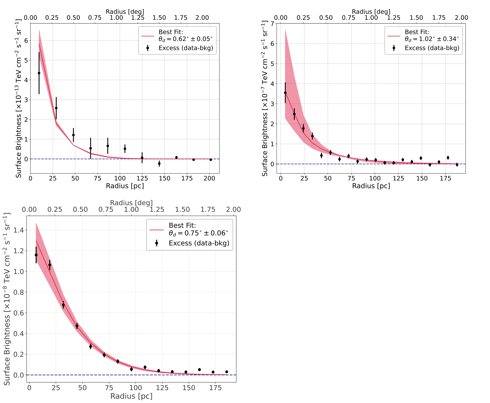<br />
图注：\apjrev{Radial surface brightness profiles of HESS J1857+026 for Fermi–LAT data in 10 GeV–2~TeV (left), VERITAS data in 0.3–10~TeV (center), and HAWC data for B=1~$\mu G$ in the 0.67–37~TeV range (right). The profiles are fitted with the diffusion-based surface brightness model given by Equation \ref{equation:ramiro_fluxic}. The theoretical curves are convolved with the instrument PSF during the fitting procedure. The error bars include both statistical uncertainties and the effects of the PSF. For the Fermi–LAT and VERITAS data, the PSF is approximated as a 1D Gaussian with a 1$\sigma$ containment of $0.1^{\circ}$. For HAWC, the PSF is modeled as the sum of two Gaussian functions \citep[see Equation 5 in][]{Albert_2024_crab}}<br />
对应解读：对应“建议重点查看的图表”第3项、“关键图表逐图导读”图3，以及模型拟合段落中关于径向面亮度剖面和扩散系数拟合的讨论。<br />
入选理由：这是直接支撑论文扩散结论的核心诊断图，分别给出 Fermi-LAT、VERITAS 和 HAWC 的径向面亮度剖面，并用扩散模型拟合；同时说明模型曲线经过仪器 PSF 卷积，误差条包含统计和 PSF 影响，正好对应日报强调的中心—外翼匹配、背景/PSF 系统误差和多仪器形态约束。<br />
来源与置信度：arxiv_source；high；arxiv_source / main.tex:figure[10]</p>
<p><strong>Fig11</strong><br />
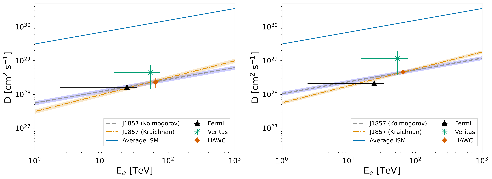<br />
图注：Diffusion coefficient as a function of electron energy in the environment of HESS~J1857+026. {\it Left:} Assumes a magnetic field of B = 1~$\mu G$. {\it Right:} Assumes a magnetic field of B = 5.5~$\mu G$. The solid line indicates the Galactic average diffusion coefficient following the Kolmogorov ($\delta = 1/3$) regime. The data points are measured from Fermi--LAT, VERITAS, and HAWC radial profiles. The dashed line and the dashed-dotted line are the best-fit diffusion coefficients under the Kolmogorov ($\delta = 1/3$) and Kraichnan ($\delta = 1/2$) diffusion regimes, respectively.<br />
对应解读：对应“建议重点查看的图表”第5项、“关键图表逐图导读”图5，以及详细解读中关于 D(50 TeV) 约为 10^28 cm^2 s^-1、相对银河平均扩散受抑制的结论。<br />
入选理由：该图直接展示扩散系数随电子能量变化，并把 Fermi-LAT、VERITAS、HAWC 剖面推得的点与银河平均扩散、Kolmogorov 和 Kraichnan 模型线比较，是验证“局域扩散受抑制”这一关键物理结论最不可替代的图。<br />
来源与置信度：arxiv_source；high；arxiv_source / main.tex:figure[11]</p>
<p><strong>Fig01</strong><br />
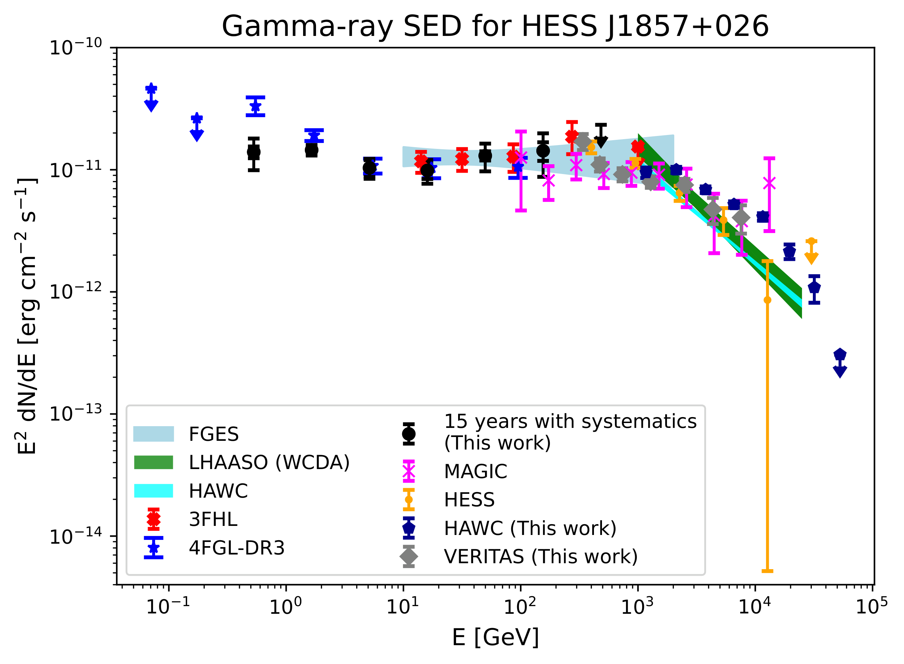<br />
图注：The 50\,MeV to 30\,TeV $\gamma$-ray SED for HESS~J1857+026. The blue flux \hrev{stars} are from the Fermi--LAT 4FGL--DR3 catalog \citep{4fgldr3} and the light blue uncertainty flux band is from the Fermi--LAT FGES catalog \citep{ackermann2017}. The red-\hrev{filled X-points} are from the Fermi--LAT 3FHL catalog \citep{3fhl2017}. The green uncertainty flux band is from the 1--25\,TeV LHAAASO catalog data \citep{cao2023first} and the 1.3--32\,TeV cyan uncertainty flux band is from the 3HAWC survey \citep{albert2020}. The black \hrev{circles} are from the Fermi--LAT between 300\,MeV and 2\,TeV (this work, see Section~\ref{sec:fermi_analysis}), the grey \hrev{diamonds} are from VERITAS (this work, see Section~\ref{sec:veritas_analysis}), the dark blue \hrev{hexagons} are new HAWC data (this work, see Section~\ref{sec:hawc_analysis}), the orange \hrev{points} are from HESS \citep{hessgps2018} and the pink \hrev{X-points} from MAGIC \citep{magic2014}. The Fermi--LAT systematics are from \citet{eagle_2022}.<br />
对应解读：对应“建议重点查看的图表”第2项和“关键图表逐图导读”图2中关于 50 MeV 到 TeV 的谱能量分布、跨仪器谱点拼接和 Fermi-LAT 系统误差的讨论。<br />
入选理由：该图汇总 Fermi-LAT、VERITAS、HAWC、HESS、MAGIC、LHAASO 等多套数据的 MeV–TeV SED，并标出 Fermi-LAT 系统误差，是判断 E&lt;10 GeV、10 GeV–TeV 和多 TeV 能段是否连续、是否存在低能偏离的基础观测图。<br />
来源与置信度：arxiv_source；high；arxiv_source / main.tex:figure[1]</p>
<p><strong>Fig09</strong><br />
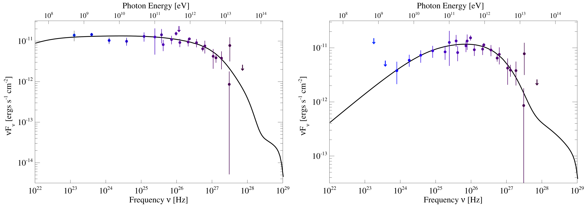<br />
图注：{\it Left}: The best-fit SED obtained through the evolutionary model method described in Section~\ref{sec:yosi}. The colored points \rev{(color is proportional to photon energy)} represent the values of observed data that the model used as comparison points for fitting: the Fermi--LAT (blue, this work) and HESS and MAGIC \citep[purple,][]{hessgps2018,magic2014}. {\it Right}: The best-fit SED obtained through the evolutionary model using $E > 10\,$GeV Fermi--LAT data from \citet{guo2023}.<br />
对应解读：对应“建议重点查看的图表”第4项和模型拟合段落中关于 PWN 演化模型、E&gt;10 GeV 数据选择以及年龄和磁场约束的讨论。<br />
入选理由：虽然它不是年龄—磁场置信区间图，但它展示了演化型 PWN 模型得到的最佳拟合 SED，并比较使用本文数据与 Guo 等 E&gt;10 GeV Fermi-LAT 数据时的结果，是理解论文如何从谱形支持 PWN 解释、进而推导 t≈16–21 kyr 和 B≈0.4–1.6 μG 的关键模型图。<br />
来源与置信度：arxiv_source；high；arxiv_source / main.tex:figure[9]</p>
<p><strong>Fig08</strong><br />
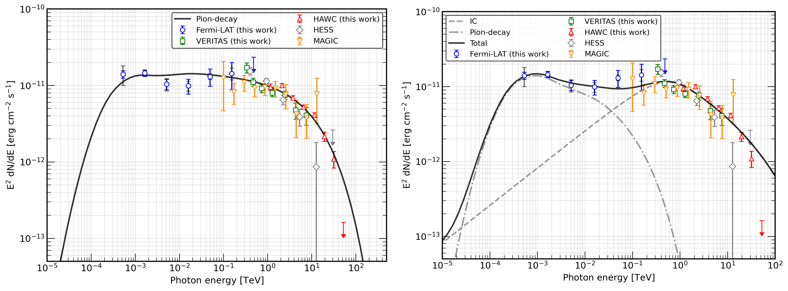<br />
图注：\rev{{\it Left:}} Hadronic scenario. \rev{{\it Right:}} Lepto-hadronic scenario. {\it Both panels:} The results of the time-independent NAIMA SED fit. In blue are the Fermi--LAT flux data points for $E > 300\,$MeV (this work), in green are VERITAS flux points (this work), and in red are HAWC flux points (this work). We also include TeV data from HESS \citep{hessgps2018} and MAGIC \citep{magic2014} in gray and orange, respectively. The Fermi--LAT systematics (black) are those of \citet{eagle_2022}.<br />
对应解读：对应“建议重点查看的图表”第2项和第6项，以及模型拟合段落中关于单一 PWN、强子成分、轻子—强子混合模型和低能 GeV 偏差的讨论。<br />
入选理由：该图明确给出 hadronic 与 lepto-hadronic 两种 NAIMA SED 拟合，并叠加 Fermi-LAT、VERITAS、HAWC 及 TeV 文献数据和 Fermi-LAT 系统误差，最适合支撑日报中关于 E&lt;10 GeV 可能存在强子成分、不能简单用 PWN 低能电子谱吸收残差的解读。<br />
来源与置信度：arxiv_source；high；arxiv_source / main.tex:figure[8]</p>
<p><strong>Fig06</strong><br />
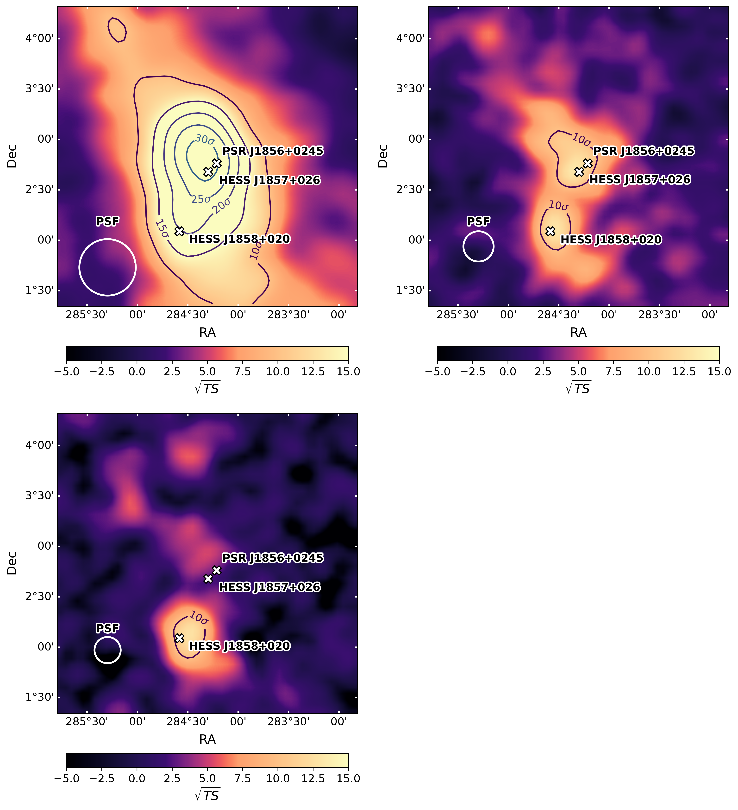<br />
图注：HAWC significance maps \rev{in J2000 equatorial degrees} of the HESS~J1857+026 region in three energy ranges: 1 to 10 TeV (\textit{left}), 10 TeV to 31.6 TeV (\textit{middle}) and 31.6 to 316 TeV (\textit{right}). Emission from HESS~J1857+026 cuts off above an energy of 31.6 TeV. \hrev{The circles shown at the bottom left corner of the maps encompass the 68\% containment of the point spread function (PSF) obtained from the sum of individual bin PSF histograms for the corresponding energy range, weighted by the excess$^2$/bkg counts per bin for the given energy range.} \rev{The 10, 15, 20, 25, and 30$\,\sigma$ significance contours are also shown.} \hrev{Labels mark the positions of source associations in the HESS J1857+026 region.}<br />
对应解读：对应“建议重点查看的图表”第1项和“关键图表逐图导读”图1中关于天区显著性图、能量相关形态、PSF 和源位置标注的讨论。<br />
入选理由：该图给出 HAWC 在 1–10 TeV、10–31.6 TeV 和 31.6–316 TeV 三个能段的显著性图，并标出 PSF、显著性等值线和相关源位置，可用于检查 TeV 发射形态是否随能量变化以及高能端是否截断；虽然不是完整的 Fermi-LAT/VERITAS/HAWC 联合天图，但在候选图中最能体现能量分辨空间形态。<br />
来源与置信度：arxiv_source；high；arxiv_source / main.tex:figure[6]</p>
<h4 id="_31">强相关工作</h4>
<p>这篇工作与演化型 PWN 和 \(\mathrm{TeV}\) halo 研究直接相关。Geminga 和 Monogem 周围的 HAWC 扩展辐射曾显示局域扩散显著低于银河平均值，引发了关于脉冲星对地球正电子贡献和扩散抑制区大小的讨论。HESS J1857+026 若也需要 \(D(50\,\mathrm{TeV})\sim10^{28}\,\mathrm{cm^2\,s^{-1}}\)，说明扩散抑制可能不是个例，而是中年脉冲星周围常见的输运现象。建议检索关键词包括 “HESS J1857+026 PWN”, “PSR J1856+0245”, “TeV halo diffusion suppression”, “evolved pulsar wind nebula inverse Compton”。</p>
<p>它也与 SNR—分子云强子辐射研究存在交叉和潜在张力。许多银河平面 \(\mathrm{GeV}\text{--}\mathrm{TeV}\) 源都可被 PWN 电子模型或 SNR 强子模型部分解释，单看宽带能谱往往不唯一。若 HESS J1857+026 的 \(E<10\,\mathrm{GeV}\) 成分最终被证明与气体相关，那么它会成为一个 PWN 与 SNR 强子辐射共存的案例；若低能成分可由改进背景或电子谱解释，则会加强单一 PWN 图像。建议检索 “Fermi LAT Galactic diffuse background extended source”, “hadronic gamma rays supernova remnant molecular cloud”, “VERITAS HESS J1857+026”, “HAWC extended TeV sources”。</p>
<p><strong>相似工作</strong>：<br />
- https://arxiv.org/abs/2606.10828<br />
- https://arxiv.org/abs/1702.02992<br />
- https://arxiv.org/abs/1909.08609</p>
<p><strong>基础理论 / 方法工作</strong>：<br />
- https://ui.adsabs.harvard.edu/abs/1970Natur.227..103G/abstract<br />
- https://ui.adsabs.harvard.edu/abs/1984ApJ...283..694K/abstract<br />
- https://ui.adsabs.harvard.edu/abs/2006ARA%26A..44...17G/abstract</p>
<p><strong>相反观点 / 张力线索</strong>：<br />
- https://arxiv.org/abs/1709.00006<br />
- https://arxiv.org/abs/1808.09206</p>
</details>
<h3 id="4-constraints-on-axion-like-particles-from-ultra-high-energy-observations-of-m87-with-the-hawc-observatory">4. Constraints on axion-like particles from ultra-high-energy observations of M87 with the HAWC observatory</h3>
<ul>
<li>来源：arXiv / astro-ph.HE</li>
<li>链接：https://arxiv.org/abs/2606.10292v1</li>
<li>作者：R. Alfaro, C. Alvarez, A. Andrés, E. Anita-Rangel, M. Araya, J. C. Arteaga-Velázquez, D. Avila Rojas, H. A. Ayala Solares</li>
<li>评分：novelty 8/10，importance 8/10，relevance 10/10，final 9.70/10</li>
<li>推荐理由：HAWC利用M87超高能伽马观测约束ALP光子混合，直接涉及VHE伽马射线、外河源和基本物理；虽无信号但约束具有可比性和复用价值。</li>
</ul>
<p><strong>中文题目</strong>：用 HAWC 对 M87 超高能伽马观测约束类轴子粒子</p>
<p><strong>做了什么</strong>：这篇文章用 HAWC 望远镜 7.5 年的 M87 数据寻找光子与类轴子粒子在磁场中混合的间接信号。核心思路是：若 TeV 到几十 TeV 伽马光子在 M87 所在的室女座星系团磁场、星系际磁场或银河系磁场中与类轴子粒子相互转换，原本应被河外背景光吸收的高能光子谱可能出现异常透明或谱形起伏。作者没有发现显著的光子-类轴子粒子转换证据，因此在类轴子质量约 \(10^{-8}\) 到 \(10^{-6}\,\mathrm{eV}\)、耦合常数 \(g_{a\gamma}\gtrsim5\times10^{-12}\,\mathrm{GeV}^{-1}\) 的区域给出排除约束，并与既有伽马望远镜结果互补。</p>
<p><strong>为什么重要</strong>：这项工作重要在于它把 HAWC 的长期、宽视场、连续 TeV 监测能力用于类轴子粒子约束，而不是只依赖成像大气切伦科夫望远镜的短时深曝光。M87 距离近、处在室女座星系团磁化等离子体环境中，又是已知甚高能伽马源，因此是检验光子-类轴子混合的有利目标。即使没有发现信号，排除区域也能压缩暗物质候选粒子的参数空间，并检验“宇宙对高能伽马射线异常透明”这类解释。</p>
<p><strong>理论 / 观测 / 仪器方法价值</strong>：对理论而言，结果限制了低质量赝标量粒子与电磁场耦合 \(g_{a\gamma}\) 的可行范围，尤其是与星系团磁场相关的转换场景。对观测而言，它展示了如何把 HAWC 的超高能谱测量、河外背景光吸收模型、源本征谱模型和磁场传播矩阵结合成粒子物理约束。对方法而言，文章的价值在于把宽视场水切伦科夫阵列的数据用于寻找谱形中的非标准传播效应，补充了 H.E.S.S.、MAGIC、VERITAS、Fermi-LAT 等仪器的约束。</p>
<p><strong>为什么应该关注</strong>：如果你关心高能伽马天文学，这篇文章告诉你在解释 M87 或类似活动星系核的 TeV 谱时，源内辐射物理、河外背景光吸收和新粒子传播效应如何相互纠缠。如果你关心暗物质或超轻粒子，它给出了一个具体例子：天体磁场虽然不易精确建模，但能把伽马谱变成实验室难以覆盖的粒子物理探针。如果你做 HAWC、LHAASO、CTA 或星系团磁场相关工作，这类分析框架很可能会成为未来多源联合约束的基础。</p>
<details class="paper-detail">
<summary>展开详细解读：文章讲解、背景、理论、重点章节、图表与相关工作</summary>
<h4 id="_32">文章详细讲解</h4>
<p>科学问题：类轴子粒子是许多标准模型扩展中自然出现的轻赝标量粒子，通常通过两光子耦合与电磁场发生相互作用。对高能天体物理来说，关键可观测后果不是直接探测到类轴子粒子，而是伽马光子在磁场中可与类轴子粒子相干振荡。若一部分光子在源附近或星系团磁场中转成类轴子粒子，它们可避开河外背景光导致的 \(\gamma\gamma\) 吸收；随后又在银河系磁场中转回光子，观测到的高能谱就可能比标准传播预期更硬，或者出现能量依赖的起伏。M87 是一个特别合适的目标，因为它是附近射电星系，红移低，位于室女座星系团，且在 TeV 能段已有长期观测基础。</p>
<p>作者怎么做：文章分析了 HAWC 观测站 7.5 年的 M87 数据。HAWC 是水切伦科夫广角阵列，适合连续监测高能伽马源，在多 TeV 能段具有优势。作者建立了标准天体模型与含光子-类轴子混合的传播模型：本征谱经过河外背景光吸收，再乘以或替换为包含光子生存概率 \(P_{\gamma\to\gamma}\) 的传播项。对不同类轴子质量 \(m_a\) 和耦合常数 \(g_{a\gamma}\)，计算从 M87 到地球的能量相关传输概率，并用 HAWC 数据检验是否存在优于无类轴子模型的谱形。</p>
<p>关键结果：作者没有发现显著的光子-类轴子转换信号。由此给出的约束主要覆盖 \(m_a\sim10^{-8}\) 到 \(10^{-6}\,\mathrm{eV}\) 区间，对 \(g_{a\gamma}\gtrsim5\times10^{-12}\,\mathrm{GeV}^{-1}\) 的部分参数空间具有排除能力。这个量级与若干既有伽马射线约束相符，说明 HAWC 虽然角分辨率和低能灵敏度不同于成像大气切伦科夫望远镜，但凭借长时间曝光和高能覆盖，仍能在类轴子搜索中提供有竞争力的信息。重要的是，约束并非来自一个清晰的单线特征，而来自谱形整体与标准吸收预期之间的一致性。</p>
<p>局限和下一步：这类约束对磁场模型、源本征谱参数化、河外背景光模型和仪器响应都敏感。M87 的 TeV 辐射区可能随时间变化，喷流、核区或较大尺度结构的贡献不同会改变本征谱解释；室女座星系团磁场的强度、相干长度和湍动谱也不是精确已知。下一步值得做的是把 M87 与更多近邻活动星系核、星系团内源以及 Galactic 磁场路径不同的目标联合起来，同时用 CTA、LHAASO 和 HAWC 的互补能段做层级贝叶斯分析，以区分源本征曲率、河外背景光不确定性和真正的光子-类轴子振荡起伏。</p>
<h4 id="_33">背景知识</h4>
<p>研究对象是类轴子粒子。轴子最初来自强 \(CP\) 问题的 Peccei-Quinn 机制，而类轴子粒子是更宽泛的一类轻赝标量粒子，不一定满足 QCD 轴子的质量-耦合关系。许多弦论紧化、暗扇区模型和早期宇宙模型都会产生类似粒子，因此在很宽的 \(m_a\) 与 \(g_{a\gamma}\) 参数空间中搜索它们是粒子宇宙学的长期主题。</p>
<p>在天体物理中，光子-类轴子混合的吸引力在于它把宇宙磁场变成了粒子转换器。实验室中的“光穿墙”实验和太阳轴子望远镜需要受控磁场与有限基线，而天体环境有巨大传播距离和多种磁化介质：源区磁场、星系团磁场、星系际磁场和银河系磁场。缺点是这些磁场复杂且不完全已知，导致约束常带有模型依赖。</p>
<p>M87 的特殊性来自三点。第一，它很近，位于室女座星系团，河外背景光吸收比高红移耀变体弱，但在多 TeV 能段仍可产生可测影响。第二，它是已确认的甚高能伽马源，存在喷流、核区和可能的多尺度加速区。第三，室女座星系团提供了微高斯量级、千秒差距到百千秒差距尺度的磁化等离子体环境，正是光子-类轴子转换可能积累相位的地方。</p>
<p>为什么现在值得重新看？一方面，HAWC 积累了 7.5 年数据，长期曝光能改善高能谱约束，并减少单次观测状态造成的偶然性。另一方面，高能伽马领域正在进入 HAWC、LHAASO、CTA 与传统 IACT 互补的阶段，跨能段谱形的系统比较比过去更成熟。类轴子参数空间中许多区域已被 CAST、SN1987A、H.E.S.S.、Fermi-LAT、星团源和偏振观测限制，但仍存在依赖不同假设的空隙。</p>
<p>一个常见误区是把“高能光子比预期多”直接等同于类轴子信号。事实上，本征谱硬化、源内吸收、宇宙线级联、河外背景光模型偏差、能量标定误差都可能造成类似现象。另一个误区是认为没有异常透明就完全排除类轴子；实际上转换概率有强烈的能量、磁场几何和相干长度依赖，零结果只能在明确传播模型和统计准则下排除某些参数区域。</p>
<h4 id="_34">基础理论 / 方法脉络</h4>
<p>基本物理图像是两能级或三能级振荡问题。光子有两个偏振态，只有与外磁场横向分量平行的偏振态会与赝标量类轴子粒子混合。混合强度由耦合常数 \(g_{a\gamma}\) 与横向磁场 \(B_T\) 决定，而相位积累由等离子体频率、类轴子质量 \(m_a\)、光子能量 \(E\) 和传播距离控制。因此，同一个 \(m_a\) 与 \(g_{a\gamma}\) 在不同磁场环境中的可见性可能很不一样。</p>
<p>标准高能伽马传播还必须考虑河外背景光吸收。TeV 光子与红外到光学背景光发生 \(\gamma\gamma\to e^+e^-\)，导致光学深度 \(\tau_{\rm EBL}(E,z)\) 随能量和红移增大。无新物理时，观测通量通常写成本征通量乘以 \(\exp[-\tau_{\rm EBL}(E,z)]\)。类轴子效应可改变有效光子生存概率，使高能端相对标准吸收出现增强或振荡状偏离。</p>
<p>本文的关键假设是 M87 的观测谱可以由一个合理的本征谱模型、EBL 吸收和仪器响应共同描述，而类轴子模型在此基础上引入能量依赖的传播概率。实际计算往往需要把室女座星系团磁场划分为多个磁场域，或采用湍流磁场实现；每个域内求解混合矩阵，再把传播矩阵相乘。银河系磁场也可影响最后的再转换概率，因此源方向在天球上的位置会进入问题。</p>
<p>观测方法上，HAWC 不像成像大气切伦科夫望远镜那样逐个短曝光指向观测，而是长期监测大天区。数据分析通常基于事件方向、能量代理量和伽马/强子分离变量构建似然。对 M87 这样的弱源，关键不是在单个能道看出巨大偏离，而是检验整个能谱在标准模型与类轴子模型之间的似然差。</p>
<p>主要退化关系来自三类来源。第一，本征谱曲率与 EBL 吸收、类轴子增强都能改变高能端斜率。第二，磁场强度 \(B_T\) 与耦合 \(g_{a\gamma}\) 常以近似乘积形式影响转换概率，因此磁场不确定性会直接转化为耦合约束不确定性。第三，HAWC 的能量分辨率会平滑窄的振荡结构，使某些快速谱形起伏难以辨认。</p>
<h4 id="_35">公式与推导</h4>
<p>第一步从类轴子与电磁场的相互作用写起。低能有效拉氏量包含</p>
<div class="math-display">\[\(\mathcal{L}\supset\) -\(\frac{1}{4}g_{a\gamma}aF_{\mu\nu}\tilde{F}^{\mu\nu}=g_{a\gamma}a\mathbf{E}\cdot\mathbf{B},\)\]</div>
<p>其中 \(a\) 是类轴子场，\(F_{\mu\nu}\) 是电磁场张量，\(\tilde{F}^{\mu\nu}\) 是其对偶，\(g_{a\gamma}\) 是光子-类轴子耦合。该式说明只有在外磁场存在时，传播光子的电场 \(\mathbf{E}\) 才能与 \(a\) 发生相干混合。</p>
<p>第二步，把沿 \(x_3\) 方向传播的状态写成 \(\Psi=(A_1,A_2,a)^T\)，其演化近似满足薛定谔型方程</p>
<div class="math-display">\[\(i\frac{d\Psi}{dx_3}=\left(E+\mathcal{M}\right)\Psi,\)\]</div>
<p>其中 \(A_1\) 与 \(A_2\) 是两个光子偏振振幅，\(E\) 是光子能量，\(\mathcal{M}\) 是混合矩阵。公共相位 \(E\) 不影响转换概率，真正重要的是 \(\mathcal{M}\) 中的质量项、等离子体项和磁场耦合项。</p>
<p>第三步，在只考虑一个与横向磁场平行的光子偏振 \(A_\parallel\) 时，混合矩阵可化为二能级形式</p>
<div class="math-display">\[\mathcal{M}_{2}=
\begin{pmatrix}
\Delta_{\rm pl} & \Delta_{a\gamma}\\
\(\Delta_{a\gamma}\) & \(\Delta_a\)
\end{pmatrix},\]</div>
<p>其中 \(\Delta_{a\gamma}=g_{a\gamma}B_T/2\)，\(\Delta_a=-m_a^2/(2E)\)，\(\Delta_{\rm pl}=-\omega_{\rm pl}^2/(2E)\)。这里 \(B_T\) 是垂直于传播方向的磁场，\(\omega_{\rm pl}\) 是等离子体频率。</p>
<p>第四步，等离子体频率由电子数密度决定，近似为</p>
<div class="math-display">\[\omega_{\rm pl}=\left(\frac{4\pi\alpha n_e}{m_e}\right)^{1/2},\]</div>
<p>其中 \(\alpha\) 是精细结构常数，\(n_e\) 是自由电子数密度，\(m_e\) 是电子质量。该项使低能光子在等离子体中获得有效质量，从而改变与 \(m_a\) 的相位匹配条件。</p>
<p>第五步，在均匀磁场域长度 \(s\) 内，光子到类轴子的转换概率为</p>
<div class="math-display">\[P_{\gamma\to a}=\left(\Delta_{a\gamma}s\right)^2\frac{\sin^2(\Delta_{\rm osc}s/2)}{(\Delta_{\rm osc}s/2)^2},\]</div>
<p>其中</p>
<div class="math-display">\[\Delta_{\rm osc}=\left[(\Delta_a-\Delta_{\rm pl})^2+4\Delta_{a\gamma}^2\right]^{1/2}.\]</div>
<p>这个公式显示，当 \(|\Delta_a-\Delta_{\rm pl}|\) 小或 \(E\) 足够高时，混合增强；当振荡长度远短于能量分辨尺度时，观测谱中的结构会被平均。</p>
<p>第六步，常用临界能量可写成</p>
<div class="math-display">\[E_{\rm crit}=\frac{|m_a^2-\omega_{\rm pl}^2|}{2g_{a\gamma}B_T},\]</div>
<p>它给出进入强混合区的大致能量尺度。对 HAWC 的 TeV 到几十 TeV 数据，若 \(E\) 接近或高于 \(E_{\rm crit}\)，谱形最容易对 \(m_a\) 与 \(g_{a\gamma}\) 敏感。</p>
<p>第七步，无类轴子时，源的观测微分通量通常可写为</p>
<div class="math-display">\[\phi_{\rm obs}(E)=\phi_{\rm int}(E)\(\exp\)[-\tau_{\rm EBL}(E,z)],\]</div>
<p>其中 \(\phi_{\rm int}(E)\) 是本征谱，\(z\) 是红移，\(\tau_{\rm EBL}(E,z)\) 是河外背景光光学深度。类轴子情形则可概括为</p>
<div class="math-display">\[\phi_{\rm obs}^{\(\rm\) ALP}(E)=\phi_{\rm int}(E)\(P_{\gamma\to\gamma}(E,m_a,g_{a\gamma},\mathbf{B},n_e),\)\]</div>
<p>其中 \(P_{\gamma\to\gamma}\) 包含吸收、转换和再转换的总光子生存概率。</p>
<p>第八步，进入仪器层面后，模型预期计数为</p>
<div class="math-display">\[\(\mu_i(\boldsymbol{\theta})=T\int\) dE\,A_{\rm eff}(E)R_i(E)\phi_{\rm obs}(E;\boldsymbol{\theta})+b_i,\]</div>
<p>其中 \(i\) 是能量或分析 bin，\(T\) 是曝光时间，\(A_{\rm eff}(E)\) 是有效面积，\(R_i(E)\) 是能量响应或迁移概率，\(b_i\) 是背景计数，\(\boldsymbol{\theta}\) 包括谱参数和类轴子参数。</p>
<p>第九步，若计数服从泊松统计，常用似然为</p>
<div class="math-display">\[\(\ln\mathcal{L}(\boldsymbol{\theta})=\sum_i\left\)[n_i\ln\mu_i(\boldsymbol{\theta})-\mu_i(\boldsymbol{\theta})-\ln(n_i!)\(\right\)],\]</div>
<p>其中 \(n_i\) 是观测计数。排除图通常来自剖面似然比</p>
<div class="math-display">\[\(\mathrm{TS}(m_a,g_{a\gamma})=-2\ln\frac{\mathcal{L}(m_a,g_{a\gamma},\hat{\hat{\boldsymbol{\eta}}})}{\mathcal{L}(\hat{m}_a,\hat{g}_{a\gamma},\hat{\boldsymbol{\eta}})},\)\]</div>
<p>其中 \(oldsymbol{\eta}\) 表示本征谱、背景和系统误差等 nuisance 参数，双帽表示在固定 \((m_a,g_{a\gamma})\) 下重新优化。这个统计量连接了粒子参数与 HAWC 数据中的实际残差。</p>
<h4 id="_36">模型拟合 / 应用方法</h4>
<p>这类分析的拟合对象不是单纯的“通量点”，而是经过仪器响应折叠后的事件分布或由似然重建的谱。基础模型通常包含 M87 的本征谱参数，例如幂律归一化、谱指数以及可能的指数截断或曲率；再乘以 EBL 衰减。类轴子模型在传播项中引入 \(m_a\)、\(g_{a\gamma}\) 以及磁场模型参数，但实际排除图通常把 \(m_a\) 与 \(g_{a\gamma}\) 作为扫描网格，其他谱参数剖面化。</p>
<p>似然层面，HAWC 数据更自然地使用泊松计数似然或基于官方分析框架的多 bin 似然，而不是简单 \(\chi^2\) 拟合通量点。因为弱源、高能端低计数和背景主导都会使高斯近似变差。读者应关注作者是否在每个类轴子参数点重新拟合了源谱参数；如果没有，本征谱假设可能人为放大或压低类轴子排除能力。</p>
<p>残差诊断很关键。真实的类轴子混合常会造成能量相关的非单调起伏，但 HAWC 的能量分辨率和 binning 会把细结构抹平。因此应检查残差是否表现为高能端整体上翘、局部 bin 异常，还是与响应矩阵相关的宽结构。若异常只出现在一个低统计 bin，很难作为粒子信号；若多个相邻能段呈现与传播模型一致的结构，才更有说服力。</p>
<p>参数退化主要包括 \(g_{a\gamma}B_T\) 退化、\(m_a^2-\omega_{\rm pl}^2\) 相位退化、本征谱曲率与传播吸收退化，以及 EBL 模型不确定性。对 M87 这样低红移源，EBL 吸收不像高红移耀变体那样极强，因此类轴子导致的“透明化”效应可能相对温和；但星系团磁场较强，又提升了转换概率。这种一强一弱的组合决定了 M87 的约束特色。</p>
<p>模型可能失败的地方也应明确。若 M87 在 7.5 年内有显著状态变化，把所有数据堆叠成一个平均谱可能掩盖本征谱变化。若 TeV 辐射来自多个区域，单一本征谱参数化可能过于简单。若室女座星系团磁场模型与真实湍动结构差别很大，排除边界会移动。因此这篇文章的结果应被看作在一组合理天体假设下的竞争性约束，而不是完全无模型的粒子物理排除。</p>
<h4 id="_37">重点章节 / 结果段落怎么读</h4>
<p>数据和样本部分应首先阅读。这里应关注 HAWC 使用的总曝光时间、M87 的显著性、能量范围、事件分 bin、背景估计和是否采用标准 HAWC 源分析流程。对弱源类轴子搜索来说，数据选择和响应函数往往比最后的排除图更决定可信度。</p>
<p>源谱与标准传播模型部分是第二个重点。读者应看作者采用了何种 M87 本征谱参数化，是否允许谱指数或截断自由变化，以及使用哪一种 EBL 模型。若标准模型本身对 HAWC 数据拟合不好，那么任何类轴子结论都要谨慎；若标准模型已能良好拟合，零结果和排除约束更自然。</p>
<p>光子-类轴子传播模型部分需要仔细读。重点是磁场区域如何划分：是否包括室女座星系团磁场、银河系磁场、星系际磁场；磁场强度、相干长度、电子密度剖面和湍流实现如何设定。排除图的形状通常直接反映这些假设。</p>
<p>统计方法与约束构建部分决定排除区域的含义。应检查作者用的是剖面似然、似然比、蒙特卡洛校准还是其他方法；置信水平如何定义；是否考虑了 look-elsewhere effect 或多重扫描问题；系统误差是否以 nuisance 参数方式进入。</p>
<p>结果和讨论部分应与已有约束对照阅读。不要只看排除边界“是否更强”，还要看它覆盖的 \(m_a\) 范围、依赖的磁场环境以及与 H.E.S.S.、MAGIC、Fermi-LAT、CAST 等结果的互补性。附录或稳健性检验若包含不同 EBL、不同磁场 realizations 或不同源谱模型，应优先查看。</p>
<h4 id="_38">建议重点查看的图表</h4>
<ol>
<li>
<p>M87 的 HAWC 谱或能量通量点：重点看 TeV 到最高能 bin 的误差条、上限和标准吸收模型是否一致，特别是高能端是否有系统性上翘。</p>
</li>
<li>
<p>无类轴子模型与最佳拟合谱模型的残差图：检查残差是否随机分布，还是随能量出现连续偏离。残差结构比单个拟合优度数字更能说明是否存在未建模效应。</p>
</li>
<li>
<p>光子生存概率 \(P_{\gamma\to\gamma}(E)\) 示例曲线：应看不同 \(m_a\) 和 \(g_{a\gamma}\) 下曲线在 HAWC 能区的振荡幅度、临界能量和是否被 EBL 吸收主导。</p>
</li>
<li>
<p>\(m_a\)-\(g_{a\gamma}\) 排除图：关注坐标是否为对数轴、置信水平、排除区方向，以及与其他实验或天体约束的重叠。不要把不同磁场假设下的边界当作同一物理强度比较。</p>
</li>
<li>
<p>磁场模型或转换概率 realizations 的分布：如果论文给出，应看不同湍流实现带来的排除边界散布，这是判断系统误差的关键。</p>
</li>
<li>
<p>HAWC 仪器响应或灵敏度相关图表：特别是有效面积、能量迁移和最高能 bin 的统计权重。类轴子谱形起伏若窄于能量分辨率，实际可检出性会明显下降。</p>
</li>
<li>
<p>与既有约束的比较表或图：应区分实验室约束、太阳轴子约束、星体演化约束和伽马传播约束，因为它们的系统误差性质完全不同。</p>
</li>
</ol>
<h4 id="_39">关键图表逐图导读</h4>
<p>图 1：若为 M87 的 HAWC 显著性图或天区图，横纵轴通常是赤经与赤纬或相对坐标，颜色表示统计显著性或过量计数。读者应确认 M87 位置是否与过量峰一致，邻近源或弥散背景是否可能污染。陷阱是把平滑后的颜色峰值当作独立试验显著性，实际显著性需看分析定义和 trials 处理。</p>
<p>图 2：若为能谱能量分布图，横轴通常是 \(E\) 或能量 bin，纵轴可能是 \(E^2dN/dE\) 或微分通量。数据点带统计误差，上限表示低显著性 bin，模型线可能包括本征谱、EBL 吸收后谱和类轴子传播后谱。读图时要注意模型线是否已经折叠仪器响应；未折叠的理论谱不能直接与计数残差等同。</p>
<p>图 3：若为光子生存概率示例，横轴为 \(E\)，纵轴为 \(P_{\gamma\to\gamma}\)。标准 EBL 情形通常是随能量平滑下降的曲线，类轴子情形可能出现增强或振荡。关键是看这些结构是否落在 HAWC 灵敏能段内；落在低灵敏或能量分辨率很差的区域，即使理论上振荡很强，也未必能被数据检验。</p>
<p>图 4：若为剖面似然或 \(\Delta\mathrm{TS}\) 曲线，横轴可能是 \(g_{a\gamma}\) 或 \(m_a\)，纵轴为统计量变化。应看最小值是否接近无类轴子模型，排除阈值如何选取，以及曲线是否有噪声状起伏。若起伏来自磁场随机 realizations 或有限蒙特卡洛，应避免过度解读局部凹陷。</p>
<p>图 5：排除图通常是本文最重要图。横轴为 \(m_a\)，纵轴为 \(g_{a\gamma}\)，均为对数尺度；阴影或实线表示被 HAWC M87 排除的区域，其他颜色表示已有实验和天体约束。读图陷阱是不同约束的置信水平、先验和天体假设并不统一，边界高低不能简单排名。应重点看本文新增或补强的是哪一段质量区间。</p>
<p>图 6：若论文给出系统误差或模型变体图，读者应把它作为可信度核心，而不是附属材料。比较不同 EBL 模型、不同本征谱、不同磁场强度或相干长度下排除边界的移动，可以判断结果是由数据强约束驱动，还是由某个乐观磁场假设驱动。</p>
<h4 id="_40">论文原图 / 可嵌入图片</h4>
<p>（未提供 verified figure；为避免编造图片链接，本节只在能确认官方图片 URL 或成功提取论文原图时嵌入图片。）</p>
<h4 id="_41">强相关工作</h4>
<p>这篇工作与一系列用高能伽马源约束类轴子粒子的研究直接相关。H.E.S.S. 曾利用 PKS 2155-304 等耀变体的高质量 TeV 谱寻找不规则谱形；Fermi-LAT 常用星系团内活动星系核或明亮耀变体在 GeV 能段寻找光子-类轴子振荡；MAGIC、VERITAS 也可通过 TeV 谱和 EBL 透明度给出约束。本文的差异在于使用 HAWC 长时间监测 M87，目标和仪器系统误差都不同，因此更像是参数空间中的独立交叉检查。</p>
<p>基础理论方面，应把它放在 Raffelt 和 Stodolsky 关于外磁场中光子-轴子混合的经典框架下理解。与实验室或太阳轴子结果相比，伽马传播约束常能达到很小的 \(g_{a\gamma}\)，但代价是依赖天体磁场和源谱模型。与“宇宙伽马透明度异常”相关的相反观点也需要一起读：一些高能谱异常可由 EBL 模型、源内加速、宇宙线诱导级联或仪器交叉标定解释，并不唯一指向类轴子。建议检索关键词包括 “photon ALP mixing gamma rays”, “M87 axion-like particles”, “HAWC ALP constraints”, “Virgo cluster magnetic field ALP”, “EBL transparency anomaly axion-like particles”。</p>
<p><strong>相似工作</strong>：<br />
- https://arxiv.org/abs/2606.10292<br />
- https://arxiv.org/abs/1304.0700<br />
- https://arxiv.org/abs/2008.09464</p>
<p><strong>基础理论 / 方法工作</strong>：<br />
- https://doi.org/10.1103/PhysRevD.37.1237<br />
- https://arxiv.org/abs/1205.2671<br />
- https://arxiv.org/abs/0807.3125</p>
<p><strong>相反观点 / 张力线索</strong>：<br />
- https://arxiv.org/abs/1101.1381<br />
- https://arxiv.org/abs/1210.3503</p>
</details>
<h3 id="5-limits-on-primordial-black-holes-from-the-extragalactic-gamma-ray-background-current-status-and-future-projections">5. Limits on primordial black holes from the extragalactic gamma-ray background; current status and future projections</h3>
<ul>
<li>来源：arXiv / astro-ph.HE</li>
<li>链接：https://arxiv.org/abs/2606.10013v1</li>
<li>作者：Ilias Cholis, Iason Krommydas, John Carlini</li>
<li>评分：novelty 8/10，importance 8/10，relevance 10/10，final 9.70/10</li>
<li>推荐理由：Fermi/EGRET/COMPTEL extragalactic gamma-ray background limits on evaporating primordial black holes with detailed astrophysical background modeling; squarely in gamma-ray indirect constraints and high-priority.</li>
</ul>
<p><strong>中文题目</strong>：用河外伽马射线背景限制原初黑洞：现状与未来展望</p>
<p><strong>做了什么</strong>：这篇论文重新评估质量约为 \(10^{14}\)–\(10^{17}\,\mathrm{g}\) 的原初黑洞在河外伽马射线背景中的可见信号，并据此限制其宇宙丰度。作者把 \(\textit{Fermi}\)-LAT、\(\textit{EGRET}\) 和 \(\textit{COMPTEL}\) 覆盖的 \(0.5\,\mathrm{MeV}\) 到 \(1\,\mathrm{TeV}\) 背景谱与一套较完整的天体源模型相结合，显式计入耀变体、恒星形成星系、射电星系以及超高能宇宙线级联伽马射线贡献，同时采用较新的原初黑洞辐射谱，包括直接霍金辐射、强子化与衰变、末态辐射以及正电子在星际介质中的湮灭贡献。核心结论是：由于末态辐射和低能正电子湮灭显著增强 \(\mathrm{MeV}\) 能段信号，河外伽马射线背景对这类轻质量原初黑洞的丰度约束可成为当前间接探测中最强的一类，尤其适合检验寿命接近宇宙年龄的 \(10^{14}\,\mathrm{g}\) 量级黑洞。</p>
<p><strong>为什么重要</strong>：原初黑洞是早期宇宙小尺度密度扰动、暗物质候选和高能引力物理的交叉问题。质量为 \(10^{14}\)–\(10^{17}\,\mathrm{g}\) 的原初黑洞不能通过微透镜或动力学方法很好限制，但会通过霍金蒸发在 \(\mathrm{MeV}\)–\(\mathrm{GeV}\) 伽马射线背景中留下累积信号。论文的重要性在于，它没有简单把观测到的河外背景全归给原初黑洞，而是先建立了天体源背景预算，再在剩余可容许空间中放入原初黑洞信号，这比早期的保守上限或单能段估计更接近真实观测问题。</p>
<p><strong>理论 / 观测 / 仪器方法价值</strong>：对理论而言，这项工作把原初黑洞质量函数、霍金辐射粒子谱以及次级伽马射线产生联系到可观测的全天背景谱，可直接转化为 \(f_{\mathrm{PBH}}\)–\(M\) 平面上的限制。对观测而言，它强调 \(\mathrm{MeV}\) 能段而不只是 \(\mathrm{GeV}\) 能段的重要性，说明 \(\textit{COMPTEL}\) 历史数据与未来 \(\mathrm{MeV}\) 任务对轻原初黑洞问题仍有高价值。对方法而言，论文的关键进步是把天体源背景不确定性作为系统误差纳入，而不是把河外背景的每个能道都当作干净的新物理上限。</p>
<p><strong>为什么应该关注</strong>：如果你关心暗物质、早期宇宙小尺度功率谱、\(\mathrm{MeV}\) 伽马天文学或霍金辐射可观测性，这篇文章值得看。它给出的不是一个孤立数值上限，而是一套如何用真实伽马背景数据约束蒸发原初黑洞的框架：哪些能段最有力、哪些天体源背景最容易与信号混淆、未来仪器应把灵敏度放在哪里，以及扩展质量函数会如何改变结论。</p>
<details class="paper-detail">
<summary>展开详细解读：文章讲解、背景、理论、重点章节、图表与相关工作</summary>
<h4 id="_42">文章详细讲解</h4>
<p>科学问题：论文处理的是一个很具体但物理含义很大的问题：如果宇宙中存在质量约为 \(10^{14}\)–\(10^{17}\,\mathrm{g}\) 的原初黑洞，它们今天还会不会通过霍金蒸发为河外伽马射线背景贡献可测通量？这个质量范围处在一个尴尬但关键的窗口：质量较小的黑洞早已蒸发完，质量更大的黑洞温度太低、辐射太弱；而 \(10^{14}\,\mathrm{g}\) 左右的黑洞寿命接近宇宙年龄，辐射温度落在高能粒子产生相关区间，可能在 \(\mathrm{MeV}\)–\(\mathrm{GeV}\) 伽马背景中留下积累信号。</p>
<p>作者怎么做：作者汇总 \(\textit{Fermi}\)-LAT、\(\textit{EGRET}\) 和 \(\textit{COMPTEL}\) 的河外伽马射线背景数据，覆盖约 \(0.5\,\mathrm{MeV}\) 到 \(1\,\mathrm{TeV}\)。他们没有采用“观测背景减去零”式的极端保守做法，而是建立了主要已知河外天体源的谱模型，包括耀变体、恒星形成星系、射电星系，以及超高能宇宙线与红外背景相互作用产生的级联伽马射线。然后在这些源的模型不确定性之上加入原初黑洞贡献，分别讨论单色质量函数和扩展质量函数。</p>
<p>关键结果：论文强调，较新的原初黑洞伽马谱计算会改变低能段判断。除直接霍金辐射外，黑洞发射的带电粒子会产生末态辐射，正电子还可能在星际或星系际环境中湮灭，从而增强 \(\mathrm{MeV}\) 附近的光子数。这使 \(\mathrm{MeV}\)–\(\mathrm{GeV}\) 河外背景对 \(f_{\mathrm{PBH}}\) 的限制比只看直接光子时更强。作者的总体结论是，在所研究的质量范围内，河外伽马射线背景可以给出与其他间接暗物质探针相比非常有竞争力、甚至最强的上限。</p>
<p>局限和下一步：这类限制的强度并不只由观测误差决定，还由河外背景成分建模决定。耀变体光度函数、未解析源比例、恒星形成星系的宇宙演化、射电星系谱形、超高能宇宙线级联强度以及银河前景扣除都会影响剩余空间。另一个限制来自 \(\mathrm{MeV}\) 数据本身：\(\textit{COMPTEL}\) 能段的系统误差和角分辨率限制长期制约了该问题。下一步最值得关注的是未来 \(\mathrm{MeV}\) 伽马任务能否缩小背景谱误差、改善前景分离，并把谱形信息与各向异性、源计数和多波段星系族群约束联合起来。</p>
<h4 id="_43">背景知识</h4>
<p>原初黑洞是早期宇宙密度扰动在进入视界后发生引力坍缩形成的黑洞。它们不同于恒星演化形成的黑洞，质量不受恒星物理下限约束，因此可以从远低于太阳质量到超大质量范围内存在。若某个质量段的原初黑洞足够丰富，它们可能构成部分或全部暗物质；即使丰度很低，也能作为早期宇宙小尺度扰动、相变、暴涨模型和非高斯性的探针。</p>
<p>霍金辐射给轻原初黑洞带来了特殊可观测性。黑洞温度与质量成反比，质量越小温度越高、蒸发越快。质量约为 \(10^{14}\)–\(10^{15}\,\mathrm{g}\) 的黑洞寿命与宇宙年龄相当，会在今天持续释放光子、电子、正电子、中微子以及在温度足够高时的强子。由这些粒子直接或间接产生的 \(\gamma\) 射线可以叠加成各向近似均匀的河外背景。</p>
<p>历史上，河外伽马射线背景一直被用来限制蒸发原初黑洞。早期约束常把观测背景当成全额上限，即要求原初黑洞贡献不超过观测总通量。这种办法保守但信息利用不足，因为现在我们知道相当一部分 \(\mathrm{GeV}\) 背景来自未解析耀变体、星系形成活动和射电源，而 \(\mathrm{MeV}\) 背景也可能包含多个天体族群。真正困难的是：在不确定的天体背景之上，还能容纳多少新物理贡献。</p>
<p>现在重新看这个问题有两个原因。第一，\(\textit{Fermi}\)-LAT 源表、多波段巡天和源族群建模显著改善了对未解析河外源的估计。第二，原初黑洞辐射谱的细节也在更新，包括强子化产物、末态辐射和正电子湮灭带来的低能增强。常见误区是只把原初黑洞看成直接发出热光子的黑体源；实际上对 \(10^{14}\)–\(10^{17}\,\mathrm{g}\) 的质量段，次级粒子过程会明显改变可观测谱形。</p>
<p>另一个误区是认为“河外背景均匀，因此所有均匀成分都不可区分”。谱形、各向异性、多波段源计数、红移演化和能段间相关性都提供了区分信息。即便本文主要使用能谱强度，天体源模型的外部约束也让原初黑洞贡献不能任意吸收所有剩余背景。</p>
<h4 id="_44">基础理论 / 方法脉络</h4>
<p>基本物理图像从霍金辐射开始。黑洞由于量子场在事件视界附近的效应发出近热谱粒子，温度 \(T_{\mathrm{H}}\) 随质量 \(M\) 减小而升高。对质量 \(10^{14}\)–\(10^{17}\,\mathrm{g}\) 的黑洞，温度大致落在可产生高能光子、轻子甚至部分强子相关的范围。黑洞越轻，单位时间发出的总功率越大，质量损失越快，因此同一丰度下的信号对低质量端特别敏感。</p>
<p>论文关心的观测量不是单个原初黑洞，而是宇宙学分布的累积背景强度。若原初黑洞跟随暗物质分布，其平均宇宙数密度由 \(f_{\mathrm{PBH}}\)、暗物质密度和质量函数决定。每个红移处的黑洞辐射经宇宙膨胀红移到今天，被吸收和级联修正后叠加为河外伽马背景的一部分。因此核心量是每单位能量、时间、体积的发射率，以及它沿视线的宇宙学积分。</p>
<p>本文还涉及单色质量函数与扩展质量函数的区别。单色情形假定所有原初黑洞质量近似为同一个 \(M\)，限制可画成 \(f_{\mathrm{PBH}}(M)\)。扩展质量函数则允许 \(\psi(M)\) 在多个质量上分布，总信号是不同质量贡献的积分。由于辐射功率和谱峰对质量非常敏感，扩展质量函数的约束不能简单用单色上限逐点读取，低质量尾常常会主导伽马信号。</p>
<p>观测方法上，河外伽马射线背景是在扣除银河弥散辐射、已解析源和仪器背景后得到的近各向同性强度。\(\textit{Fermi}\)-LAT 在 \(\mathrm{GeV}\) 能段表现强，\(\textit{COMPTEL}\) 对 \(\mathrm{MeV}\) 区间提供历史基准，\(\textit{EGRET}\) 则连接较早的 \(\mathrm{MeV}\)–\(\mathrm{GeV}\) 测量。由于原初黑洞的低能增强可能落在 \(\mathrm{MeV}\) 区间，单靠 \(\textit{Fermi}\)-LAT 的高能数据并不足以完整评价限制。</p>
<p>主要系统误差来自两侧：一侧是天体背景模型，如耀变体光度函数、恒星形成星系的红移演化、射电星系谱形和超高能宇宙线级联归一化；另一侧是原初黑洞发射谱，如粒子物理通道、强子化模型、末态辐射和正电子传播湮灭。退化关系通常表现为：一个较软的天体源背景、较高的 \(\mathrm{MeV}\) 仪器系统误差或较弱的正电子湮灭建模，都可能放宽 \(f_{\mathrm{PBH}}\) 上限。</p>
<h4 id="_45">公式与推导</h4>
<p>第一步是霍金温度。非旋转、无电荷黑洞的温度为</p>
<div class="math-display">\[T_{\mathrm{H}}=\frac{\hbar c^{3}}{8\pi G M k_{\mathrm{B}}}.\]</div>
<p>这里 \(\hbar\) 是约化普朗克常数，\(c\) 是光速，\(G\) 是引力常数，\(k_{\mathrm{B}}\) 是玻尔兹曼常数，\(M\) 是黑洞质量。它说明 \(M\) 越小，辐射越硬，因此 \(10^{14}\,\mathrm{g}\) 量级黑洞比 \(10^{17}\,\mathrm{g}\) 黑洞更容易在伽马射线中被看到。</p>
<p>第二步是粒子发射率。对自旋为 \(s\) 的粒子种类 \(i\)，每个黑洞的微分发射率可写成</p>
<div class="math-display">\[\(\frac{\mathrm{d}^{2}N_i}{\mathrm{d}E\,\mathrm{d}t}=\frac{1}{2\pi\hbar}\frac{\Gamma_i(E,M,s)}{\exp\left(E/k_{\mathrm{B}}T_{\mathrm{H}}\right)-(-1)^{2s}}.\)\]</div>
<p>其中 \(E\) 是粒子能量，\(\Gamma_i\) 是灰体因子，分母中的符号区分玻色子和费米子。灰体因子体现弯曲时空势垒对发射谱的过滤，所以真实谱不是完美黑体。</p>
<p>第三步是质量损失。黑洞总辐射功率导致</p>
<div class="math-display">\[\(\frac{\mathrm{d}M}{\mathrm{d}t}=-\frac{\alpha(M)}{M^{2}},\)\]</div>
<p>其中 \(\alpha(M)\) 汇总所有可发射自由度及灰体因子贡献。若 \(\alpha(M)\) 近似常数，则寿命标度为</p>
<div class="math-display">\[\(\tau(M)\simeq\) \(\frac{M^{3}}{3\alpha}.\)\]</div>
<p>这解释了为何寿命对质量极敏感，质量窗口边界的一点移动会显著改变今日可见信号。</p>
<p>第四步是单个黑洞的总伽马谱。观测到的光子不仅有直接霍金光子，还包括次级过程，可形式化写成</p>
<div class="math-display">\[\(\frac{\mathrm{d}^{2}N_{\gamma}}{\mathrm{d}E\,\mathrm{d}t}=\left(\frac{\mathrm{d}^{2}N_{\gamma}}{\mathrm{d}E\,\mathrm{d}t}\right)_{\mathrm{dir}}+\sum_j\int\) \mathrm{d}E_j\,\frac{\mathrm{d}^{2}N_j}{\mathrm{d}E_j\,\mathrm{d}t}\frac{\mathrm{d}n_{j\rightarrow \gamma}}{\mathrm{d}E}+\left(\frac{\mathrm{d}^{2}N_{\gamma}}{\mathrm{d}E\,\mathrm{d}t}\right)_{e^{+}e^{-}}.\]</div>
<p>这里 \(j\) 表示会强子化、衰变或产生末态辐射的初级粒子，\(\mathrm{d}n_{j\rightarrow \gamma}/\mathrm{d}E\) 是每个初级粒子的光子产额，最后一项代表正电子湮灭相关贡献。本文低能约束增强的物理来源就在这个方程中。</p>
<p>第五步是把单个源转为宇宙平均发射率。若单色质量函数成立，原初黑洞共动数密度近似为</p>
<div class="math-display">\[\(n_{\mathrm{PBH}}=\frac{f_{\mathrm{PBH}}\,\Omega_{\mathrm{DM}}\rho_{\mathrm{c}}}{M},\)\]</div>
<p>其中 \(f_{\mathrm{PBH}}\) 是原初黑洞占暗物质比例，\(\Omega_{\mathrm{DM}}\) 是暗物质密度参数，\(\rho_{\mathrm{c}}\) 是临界密度。因此共动发射率为</p>
<div class="math-display">\[\(q_{\gamma}(E,z)=n_{\mathrm{PBH}}(z)\frac{\mathrm{d}^{2}N_{\gamma}}{\mathrm{d}E\,\mathrm{d}t}.\)\]</div>
<p>如果忽略形成或并合导致的数密度变化，主要红移效应来自能量红移、体积因子和可能的质量蒸发演化。</p>
<p>第六步是河外强度积分。今天在能量 \(E_0\) 处的微分强度可写为</p>
<div class="math-display">\[\(I_{\gamma}(E_0)=\frac{c}{4\pi}\int_0^{z_{\max}}\frac{\mathrm{d}z}{H(z)}\frac{q_{\gamma}(E_0(1+z),z)}{1+z}\,\exp\)[-\(\tau_{\gamma\gamma}(E_0,z)\)].\]</div>
<p>这里 \(H(z)\) 是哈勃参数，\(E_0(1+z)\) 是发射能量，\(\tau_{\gamma\gamma}\) 是与背景光子相互作用的光学深度。对 \(\mathrm{MeV}\)–低 \(\mathrm{GeV}\) 光子，吸收通常较弱；对更高能光子，吸收和级联会影响谱形。</p>
<p>第七步是扩展质量函数。若质量分布为 \(\psi(M)\)，并归一化为 \(\int \psi(M)\,\mathrm{d}M=1\)，则原初黑洞强度变为</p>
<div class="math-display">\[\(I_{\gamma}^{\mathrm{ext}}(E_0)=f_{\mathrm{PBH}}\int\) \mathrm{d}M\,\psi(M)\,I_{\gamma}^{(f=1)}(E_0;M).\]</div>
<p>这里 \(I_{\gamma}^{(f=1)}\) 是假设该质量黑洞构成全部暗物质时的模板。这个式子显示扩展分布的低质量尾会被强烈放大，因为每个质量模板的亮度不是线性随 \(M\) 变化。</p>
<p>第八步是与天体背景相加并拟合。每个能道的模型可写成</p>
<div class="math-display">\[\(\Phi_k^{\mathrm{model}}=\Phi_k^{\mathrm{astro}}(\boldsymbol{\theta})+f_{\mathrm{PBH}}\Phi_k^{\mathrm{PBH}}(M,\boldsymbol{\eta}),\)\]</div>
<p>其中 \(k\) 表示能道，\(\boldsymbol{\theta}\) 是天体源参数，\(\boldsymbol{\eta}\) 是原初黑洞谱和传播相关参数。若近似采用高斯误差，检验统计量为</p>
<div class="math-display">\[\(\chi^2=\sum_{k,l}\left(\Phi_k^{\mathrm{obs}}-\Phi_k^{\mathrm{model}}\right)C^{-1}_{kl}\left(\Phi_l^{\mathrm{obs}}-\Phi_l^{\mathrm{model}}\right),\)\]</div>
<p>其中 \(C_{kl}\) 是包含统计和系统误差的协方差矩阵。上限通常由 \(\Delta\chi^2\) 或剖面似然给出，物理上就是要求原初黑洞模板不能在任何关键能段系统性超过观测背景及其可容许残差。</p>
<h4 id="_46">模型拟合 / 应用方法</h4>
<p>这类工作的拟合对象是河外伽马射线背景谱，即不同能道中的微分强度或能量加权强度。模型通常由两部分组成：天体源背景 \(\Phi^{\mathrm{astro}}\) 与原初黑洞模板 \(\Phi^{\mathrm{PBH}}\)。前者包括耀变体、恒星形成星系、射电星系和级联成分，每一类都有归一化、谱指数、光度函数演化或模板选择的不确定性；后者由质量 \(M\)、丰度 \(f_{\mathrm{PBH}}\) 和质量函数形状决定。</p>
<p>参数估计上，最直接的办法是对每个给定的 \(M\) 或质量函数形状剖面化天体源参数，然后寻找允许的最大 \(f_{\mathrm{PBH}}\)。如果使用 \(\chi^2\)，关键是协方差矩阵是否包含仪器系统误差、银河前景扣除误差和不同能道间相关误差。如果使用似然或后验，天体背景参数的先验应来自源表、多波段观测或族群合成模型，而不能任意放宽到吸收任何谱形。</p>
<p>残差诊断非常重要。一个可信的原初黑洞上限不应只看总 \(\chi^2\) 变差，还要看在哪些能段出现约束。若限制主要来自 \(\mathrm{MeV}\) 端，就需要检查 \(\textit{COMPTEL}\) 背景点的系统误差、能量响应和银河前景扣除；若来自 \(\mathrm{GeV}\) 端，则要检查 \(\textit{Fermi}\)-LAT 未解析源贡献是否已经接近观测背景。原初黑洞谱有比较特定的宽峰和低能尾，如果拟合靠单个异常能道驱动，结论就不稳健。</p>
<p>主要退化关系包括：原初黑洞低能尾与 \(\mathrm{MeV}\) 天体背景的退化、较软耀变体或射电星系模板与原初黑洞 \(\mathrm{GeV}\) 贡献的退化、以及超高能宇宙线级联与高能背景的退化。对扩展质量函数，还存在质量函数宽度与总丰度之间的退化：较宽分布只要包含很少的低质量尾，就可能产生强伽马信号，从而使总 \(f_{\mathrm{PBH}}\) 上限明显变严。</p>
<p>模型可能失败的地方也很清楚。若天体源背景被低估，原初黑洞上限会过于保守还是过强取决于拟合策略：全背景上限法偏保守，而固定天体背景法可能过强。若正电子湮灭环境假设不适用于河外介质，低能增强会改变。若原初黑洞存在显著聚团，局部银河晕信号与河外信号的相对权重也会变化。实际应用时，最好把本文约束与银河 \(511\,\mathrm{keV}\)、宇宙微波背景能量注入、反质子和中微子约束并列比较，而不是单独引用一个最强曲线。</p>
<h4 id="_47">重点章节 / 结果段落怎么读</h4>
<ol>
<li>
<p>数据与能段选择：读者应先看作者如何汇总 \(\textit{COMPTEL}\)、\(\textit{EGRET}\) 和 \(\textit{Fermi}\)-LAT 的河外背景数据。重点不是数据点数量，而是各能段的系统误差、是否使用同一套银河前景模型、以及 \(\mathrm{MeV}\) 与 \(\mathrm{GeV}\) 数据之间是否存在归一化张力。</p>
</li>
<li>
<p>天体源背景模型：这是论文可信度的核心之一。应检查耀变体、恒星形成星系、射电星系和超高能宇宙线级联各自的模板来源、归一化范围和不确定性处理。若某类源的模型区间过窄，原初黑洞上限可能被人为收紧；若过宽，则可能削弱真正的谱形约束。</p>
</li>
<li>
<p>原初黑洞辐射谱：这一部分应重点读直接霍金辐射、强子化与衰变、末态辐射、正电子湮灭的组合方式。尤其要看低能光子增强如何出现，以及该增强对不同 \(M\) 的依赖，因为它决定 \(\mathrm{MeV}\) 数据为何能给出强限制。</p>
</li>
<li>
<p>单色质量函数结果：读者应关注 \(f_{\mathrm{PBH}}\) 随 \(M\) 的上限曲线在哪些质量最强、限制由哪些能段驱动，以及与旧有河外背景约束、银河约束或其他间接探针相比的位置。不要只看最小数值，还要看曲线形状和质量标度是否符合霍金辐射预期。</p>
</li>
<li>
<p>扩展质量函数与未来展望：扩展分布部分应按“低质量尾是否主导信号”的思路阅读。未来投影部分则应看作者假设了怎样的 \(\mathrm{MeV}\) 灵敏度、能量分辨率和系统误差；若投影只降低统计误差而没有处理前景系统误差，实际提升可能会被高估。</p>
</li>
</ol>
<h4 id="_48">建议重点查看的图表</h4>
<ol>
<li>
<p>河外伽马射线背景数据与总背景模型图：应检查 \(0.5\,\mathrm{MeV}\) 到 \(1\,\mathrm{TeV}\) 的数据点、误差棒、天体源总和是否覆盖观测谱，以及在哪些能段仍有剩余空间。</p>
</li>
<li>
<p>各类天体源分解图：重点看耀变体、恒星形成星系、射电星系和级联成分的相对贡献。若某一能段几乎被已知源填满，原初黑洞上限就会很强；若模型分散很大，限制应更依赖先验。</p>
</li>
<li>
<p>单个原初黑洞的伽马辐射谱模板：应比较不同 \(M\) 下直接光子、次级光子、末态辐射和正电子湮灭分量。最关键的是低能 \(\mathrm{MeV}\) 部分相对旧模型增加多少。</p>
</li>
<li>
<p>\(f_{\mathrm{PBH}}\)–\(M\) 约束曲线：看单色质量函数的上限曲线、已有约束对比和不同建模假设下的带状不确定性。注意纵轴是否为原初黑洞占暗物质比例，横轴是否为初始质量还是当前质量。</p>
</li>
<li>
<p>扩展质量函数约束图：检查不同分布宽度、峰值质量或形状参数对总丰度上限的影响。特别要看低质量尾是否导致约束突然变强。</p>
</li>
<li>
<p>未来仪器投影图：关注哪些能段的灵敏度提升最能改善上限，以及投影是否包含天体背景系统误差地板。若只给统计误差改善，读者需要谨慎解读。</p>
</li>
<li>
<p>残差或贡献比图：若论文提供观测减模型残差，应看加入最大允许原初黑洞信号后是否在相邻能道产生连贯偏差，而不是只在单个点触及误差棒。</p>
</li>
</ol>
<h4 id="_49">关键图表逐图导读</h4>
<p>图 1：通常应是河外伽马射线背景谱汇总图。横轴多为光子能量 \(E\)，纵轴可能是 \(E^2 I(E)\) 或微分强度 \(I(E)\)。数据点来自 \(\textit{COMPTEL}\)、\(\textit{EGRET}\) 和 \(\textit{Fermi}\)-LAT，模型线表示已知天体源总和。读图时要注意不同实验之间的系统误差不是简单独立高斯点，\(\mathrm{MeV}\) 区间的前景扣除尤其关键。</p>
<p>图 2：天体源分解图应展示耀变体、恒星形成星系、射电星系以及超高能宇宙线级联的贡献。横轴仍是 \(E\)，纵轴是强度或能量通量。读者应看每个源族群在不同能段的主导性：\(\mathrm{GeV}\) 背景若大部分由未解析源解释，留给原初黑洞的空间就小；\(\mathrm{MeV}\) 背景若仍有模型缺口，则约束更依赖系统误差。</p>
<p>图 3：原初黑洞谱模板图应给出不同质量 \(M\) 的 \(\gamma\) 射线产额。模型线可能区分直接霍金光子、强子化和衰变光子、末态辐射、正电子湮灭。读图陷阱是不要把谱峰位置简单等同于 \(k_{\mathrm{B}}T_{\mathrm{H}}\)，因为灰体因子和次级过程会移动并拓宽可观测峰。</p>
<p>图 4：单色质量函数约束图的横轴应为 \(M\)，纵轴为 \(f_{\mathrm{PBH}}\) 上限。主要结论来自曲线最低处和不同约束曲线的相对位置。读者应检查是否标明置信水平、是否使用当前质量还是初始质量、以及不同背景建模选择是否形成不确定性带。</p>
<p>图 5：扩展质量函数结果图可能以峰值质量、宽度参数和 \(f_{\mathrm{PBH}}\) 上限表示。关键读法是比较同一峰值质量下宽分布和窄分布的差异：若宽分布包含更多低质量黑洞，伽马上限会明显增强。陷阱是不要把扩展分布约束看成单色上限的简单包络。</p>
<p>图 6：未来投影图应显示当前上限与未来 \(\mathrm{MeV}\) 或宽能段伽马任务预期上限。若投影曲线在 \(10^{14}\)–\(10^{16}\,\mathrm{g}\) 附近大幅下降，说明提升主要来自低能灵敏度和系统误差控制。读者应检查图中是否有“系统误差地板”假设，否则投影可能过乐观。</p>
<h4 id="_50">论文原图 / 可嵌入图片</h4>
<p><strong>Fig06</strong><br />
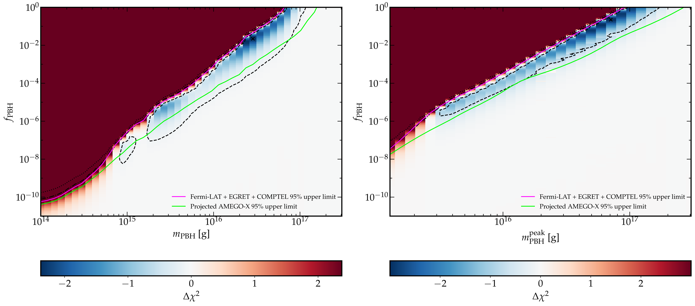<br />
图注：Using the EGRB observations from the \textit{Fermi}-LAT, \textit{EGRET} and \textit{COMPTEL}, we show our fit results and limits on the abundance of PBHs, $f_{\textrm{PBH}}$. \textit{Left}: we take monochromatic PBHs with mass $m_{\textrm{PBH}}$ between $1.0\times 10^{14}$ to $3.1\times 10^{17}$ g. \textit{Right}: we assume an extended PBH mass-distribution with peak mass $m_{\textrm{peak}}$ in the range of $1.3 \times 10^{15}$ to $3.1 \times 10^{17}$ g. For every given mass assumption ($m_{\textrm{PBH}}$ or $m_{\textrm{peak}}$) and $f_{\textrm{PBH}}$, we evaluate its $\chi^{2}$ (marginalizing over the background assumptions) and compare this value to the best-fit $\chi^{2}$ derived using only the background components. Blue regions ($\Delta \chi^{2} <0$) show combinations of parameters where there is preference for a PBH contribution and red regions ($\Delta \chi^{2} >0$), combinations of parameters where there is a penalty. For a value of $f_{\textrm{PBH}} = 1$ (top edge of the $y$-axis) PBHs account for all the dark matter in the Universe. The black <code>x'' gives the best-fit PBH parameters. For each panel, the black dashed (dotted-dashed and dotted) lines give the region of PBH parameter space that is within $1-\sigma$ ($2-\sigma$ and $3-\sigma$), from the best-fit PBH assumptions (the point</code>x''). The magenta solid line gives the $95 \%$ upper limit on the $f_{\textrm{PBH}}$. With the current observations we find a slight positive preference for a PBH contribution in the mass range of $m_{\textrm{PBH}} \gsim 2\times 10^{15}$ g and $m_{\textrm{peak}} \gsim 3\times 10^{15}$ g. In the green solid line we also give the projected $95 \%$ upper limits from AMEGO-X assuming no underlying PBH contribution to the EGRB (see text for details).<br />
对应解读：对应“建议重点查看的图表”第4、5、6项，以及“关键图表逐图导读”中关于单色质量函数约束、扩展质量函数约束和未来 AMEGO-X 投影的部分。<br />
入选理由：这是论文核心结果图：同时给出单色 PBH 与扩展质量分布的 f_PBH–质量参数空间、Δχ² 偏好/惩罚区域、1/2/3σ 等值线、95% 上限以及 AMEGO-X 未来投影。它直接支撑日报关于上限曲线、扩展质量函数、轻微正偏好和未来灵敏度改善的主要解读。<br />
来源与置信度：arxiv_source；high；arxiv_source / EGRB_PBH.tex:figure[6]</p>
<p><strong>Fig01</strong><br />
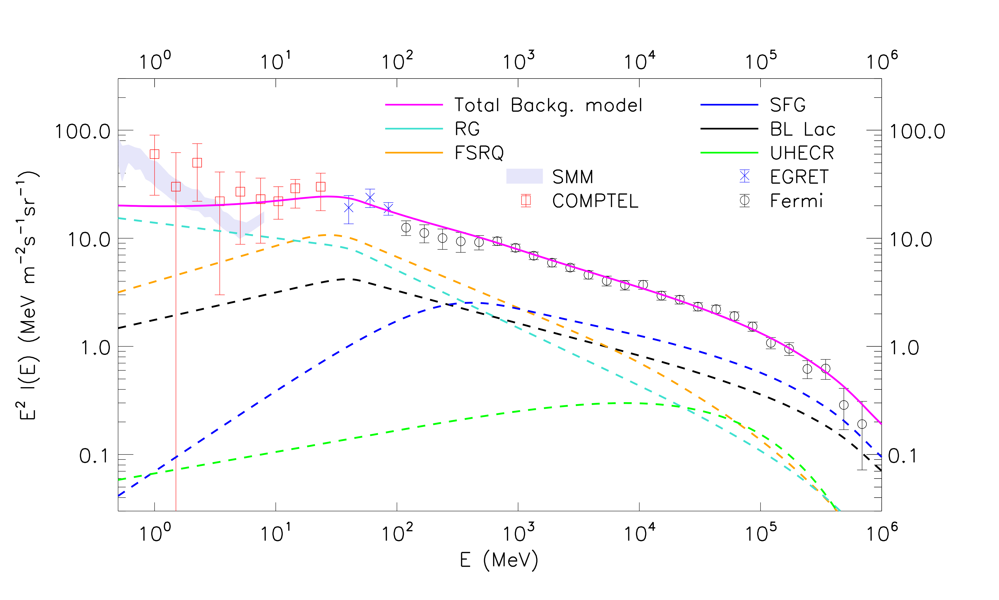<br />
图注：Best-fit model to the \textit{Fermi} EGRB spectrum (model A) of Ref.~\cite{Fermi-LAT:2014ryh}. We assume a combination of radio galaxies (turquoise dashed line), star-forming and starburst galaxies (blue dashed line), FSRQ sources (orange dashed line), BL Lac sources (black dashed line) and UHECRs (green dashed line). The combined fit (magenta solid line) gives a best fit of $\chi^{2}$/dof=0.96, to the combined \textit{Fermi}, \textit{COMPTEL} and \textit{EGRET} data. The measurement from \textit{SMM} is given only for comparison (see text for further details).<br />
对应解读：对应“建议重点查看的图表”第1、2项，以及“关键图表逐图导读”图1和图2中关于 EGRB 数据、天体源总背景和各类源分解的说明。<br />
入选理由：该图同时展示 Fermi、COMPTEL、EGRET 的 EGRB 数据点与误差棒，并分解射电星系、恒星形成/星暴星系、FSRQ、BL Lac 和 UHECR 级联等背景成分，是理解 PBH 上限中‘剩余空间’来自哪里的基础图。<br />
来源与置信度：arxiv_source；high；arxiv_source / EGRB_PBH.tex:figure[1]</p>
<p><strong>Fig02</strong><br />
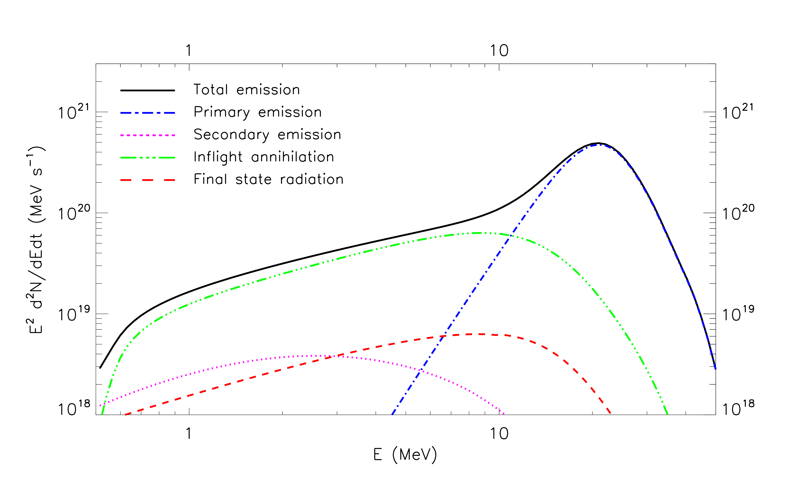<br />
图注：The gamma-ray spectrum produced by a PBH of mass $m_{\textrm{PBH}} = 3.2 \times 10^{15}$ g at its own (source) frame. With the blue dash-dotted line we show the primary/direct Hawking component that dominates the highest energies and is responsible for most of the power in gamma rays from the evaporation of PBHs. The secondary (purple dotted line) and the final state radiation (red dashed line) contribute only a few $\%$ of the total power in gamma rays. However, the in-flight annihilation component (green dash-triple-dotted line) is the dominant component at energies $\lesssim 0.5$ the peak energy. The total power is given in the black line (see also text for details).<br />
对应解读：对应“建议重点查看的图表”第3项，以及“关键图表逐图导读”图3中关于单个 PBH 伽马辐射谱模板的说明。<br />
入选理由：该图清楚区分直接霍金光子、次级光子、末态辐射和飞行中湮灭分量，尤其显示低能端由湮灭分量增强，是日报强调新谱模型会强化 MeV 约束的关键物理依据。<br />
来源与置信度：arxiv_source；high；arxiv_source / EGRB_PBH.tex:figure[2]</p>
<p><strong>Fig04</strong><br />
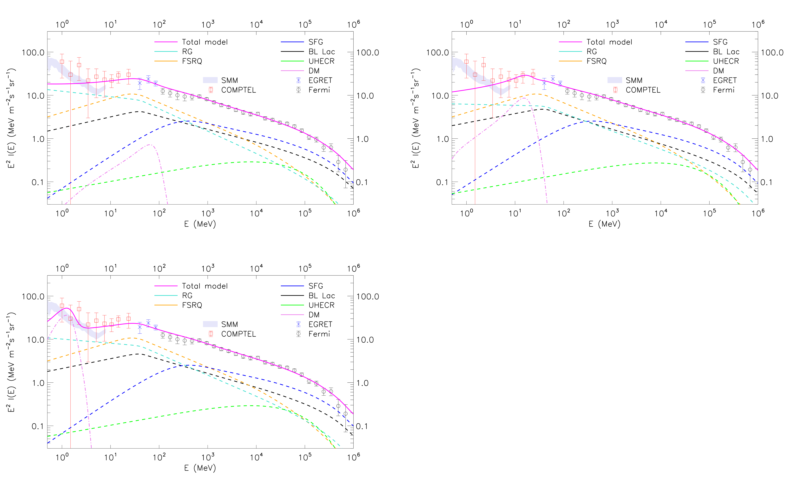<br />
图注：The contribution of all components to the EGRB. The top panel shows a fit to the EGRB spectrum with a dark matter ``DM'' component from monochromatic PBHs with a mass of $7.4 \times 10^{14}$ g at $z=0$ (dashed-dotted violet line), with an abundance $f_{\textrm{PBH}} = 6.6 \times 10^{-9}$ (best-fit value). In the middle panel, we show a fit to the EGRB spectrum with PBHs of mass of $3.2 \times 10^{15}$ g at $z=0$ , with $f_{\textrm{PBH}} = 7.1 \times 10^{-6}$, and in the bottom panel, we show the fit for PBHs of mass of $4.1 \times 10^{16}$ g at $z=0$, with $f_{\textrm{PBH}} = 6.0 \times 10^{-2}$. In all cases we get a $\chi^{2}$/dof = 0.9-1.0.<br />
对应解读：对应“建议重点查看的图表”第7项和“模型拟合”中关于在 EGRB 背景上加入最大/最佳 PBH 分量并检查不同能段贡献的讨论。<br />
入选理由：该图给出三个不同单色 PBH 质量下的完整 EGRB 拟合示例，包括天体背景与 PBH 分量及对应 f_PBH 和 χ²/dof，可直观看出 PBH 谱形如何嵌入观测背景、哪些能段驱动限制。<br />
来源与置信度：arxiv_source；high；arxiv_source / EGRB_PBH.tex:figure[4]</p>
<p><strong>Fig07</strong><br />
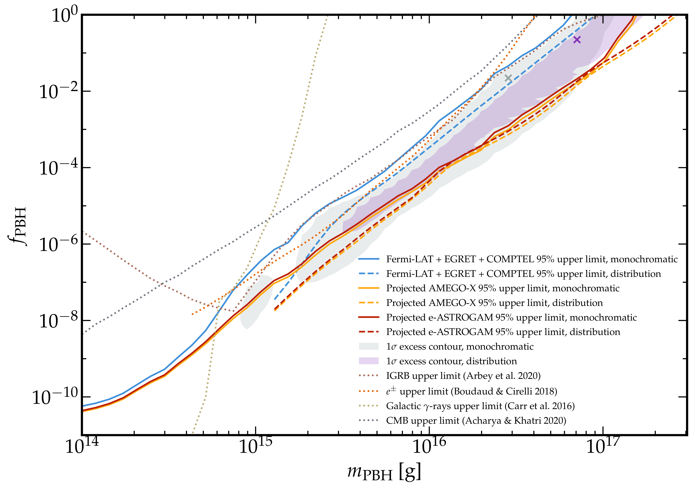<br />
图注：Comparison of this work's current and projected EGRB limits on monochromatic PBHs (solid lines), hint for an excess (colored gray region) and other limits in the literature (dotted lines). We present 2-$\sigma$ upper limits from the isotropic gamma-ray background <code>IGRB'' \cite{Arbey:2019vqx}, from the cosmic-ray electrons and positrons \cite{Boudaud:2018hqb}, from Galactic gamma-ray observations \cite{Carr:2016hva}, and from the cosmic microwave background anisotropy measurement</code>CMB'' \cite{Acharya:2020jbv, Chluba:2020oip}. For ease of comparison in the dashed lines we show the current and projected limits for an extended mass distribution with $m_{\textrm{peak}} = m_{\textrm{PBH}} \geq 1.3 \times 10^{15}$ g. We also show the hint for an excess contribution to the EGRB spectrum from the extended PBH mass distribution (purple region). The ``x'' points give the best-fit parameters for the monochromatic and the extended mass-distributions.<br />
对应解读：对应“建议重点查看的图表”第4、6项，以及详细解读中关于与 IGRB、宇宙线电子正电子、银河伽马射线和 CMB 等其他限制并列比较的部分。<br />
入选理由：该图把本文当前与未来 EGRB 限制同文献中的其他 PBH 约束放在同一 f_PBH–质量平面中比较，并标出过量提示区域和扩展质量分布曲线，最适合支撑‘本文限制具有竞争力甚至最强’这一结论。<br />
来源与置信度：arxiv_source；high；arxiv_source / EGRB_PBH.tex:figure[7]</p>
<p><strong>Fig03</strong><br />
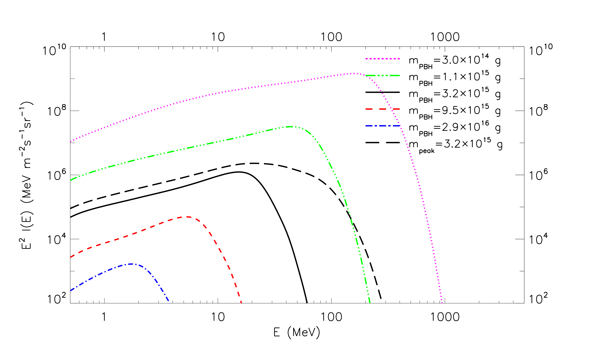<br />
图注：The dark matter contribution to the EGRB from PBHs of different monochromatic masses $m_{\textrm{PBH}}$ in the range of $3.0 \times 10^{14}$-$2.9 \times 10^{16}$ g. MeV-scale gamma-ray observations probe that PBH mass range. PBHs with mass $\gtrsim 3 \times 10^{17}$ g have Hawking emission that gives a weak signal and at energies not probed by MeV-scale detectors, while PBHs with mass $\lesssim 10^{14}$ g have already evaporated. In the black long-dashed line we also give an example of the EGRB spectrum from an extended PBH mass-distribution with a peak mass at formation of $m_{\textrm{peak}} = 3.2 \times 10^{15}$ g.<br />
对应解读：对应“建议重点查看的图表”第3、5项，以及“关键图表逐图导读”中关于不同 PBH 质量的 EGRB 谱模板和扩展质量函数示例的说明。<br />
入选理由：该图展示不同单色质量 PBH 对 EGRB 的预期谱形，并包含一个扩展质量分布示例，有助于说明 MeV 观测为何主要探测 10^14–10^16 g 质量范围，以及质量变化如何移动 PBH 信号峰。<br />
来源与置信度：arxiv_source；high；arxiv_source / EGRB_PBH.tex:figure[3]</p>
<h4 id="_51">强相关工作</h4>
<p>这篇工作属于“蒸发原初黑洞的多信使与弥散背景约束”谱系。相近工作包括用 \(\mathrm{MeV}\)–\(\mathrm{GeV}\) 伽马背景、银河中心或银河晕弥散辐射、\(511\,\mathrm{keV}\) 正电子湮灭线、反质子和宇宙微波背景能量注入来限制 \(10^{14}\)–\(10^{17}\,\mathrm{g}\) 原初黑洞。检索时可用关键词 “primordial black holes Hawking radiation extragalactic gamma-ray background”, “PBH evaporation MeV gamma rays”, “PBH final state radiation positron annihilation”。</p>
<p>基础理论可追溯到 Hawking 辐射、Carr 等关于原初黑洞形成和丰度限制的综述，以及 MacGibbon 等关于蒸发黑洞粒子谱的计算。与本文可能存在张力或需要并列比较的方向包括：仅使用银河信号得到的更强或更弱上限、对 \(\mathrm{MeV}\) 背景天体源解释的不同模型、以及扩展质量函数下如何组合单色约束的不同方法。建议检索关键词 “Carr Kuhnel primordial black holes constraints”, “MacGibbon Webber PBH evaporation”, “extragalactic gamma-ray background unresolved blazars star-forming galaxies”。</p>
<p><strong>相似工作</strong>：<br />
- https://arxiv.org/abs/2606.10013<br />
- https://arxiv.org/abs/1906.00967<br />
- https://arxiv.org/abs/2002.12778</p>
<p><strong>基础理论 / 方法工作</strong>：<br />
- https://doi.org/10.1038/248030a0<br />
- https://arxiv.org/abs/2002.12778<br />
- https://arxiv.org/abs/2006.02838</p>
<p><strong>相反观点 / 张力线索</strong>：<br />
- https://arxiv.org/abs/1906.00967<br />
- https://arxiv.org/abs/2109.03244</p>
</details>
<h3 id="6-modelling-the-dynamics-of-middle-aged-pulsar-wind-nebulae-in-the-reverberation-phase">6. Modelling the Dynamics of Middle-Aged Pulsar Wind Nebulae in the Reverberation Phase</h3>
<ul>
<li>来源：arXiv / astro-ph.HE</li>
<li>链接：https://arxiv.org/abs/2606.09914v1</li>
<li>作者：Yuri Batini, Niccolò Bucciantini</li>
<li>评分：novelty 8/10，importance 8/10，relevance 10/10，final 9.70/10</li>
<li>推荐理由：PWN reverberation-phase dynamics with population modeling and 2D simulations; directly relevant because PWNe are major Galactic TeV gamma-ray sources and important for CTA/ASTRI predictions.</li>
</ul>
<p><strong>中文题目</strong>：反响阶段中年脉冲星风云的动力学建模</p>
<p><strong>做了什么</strong>：这篇论文研究中年脉冲星风云在被母体超新星遗迹反向激波压缩、扰动和再膨胀的“反响阶段”如何演化。作者先用脉冲星和超新星遗迹的标准参数分布生成合成族群，找出最常见的参数区域，再结合半解析早期模型、一维拉格朗日流体代码和二维流体模拟，检验现有一维模型在复杂多维不稳定性存在时是否仍可靠。主要结论是：晚期演化形态很多样，但总体动力学最终趋向与 Sedov 解一致的松弛状态；多维混合和不稳定性会显著改变外观，尤其可使观测到的表观尺寸增大到约一维有效半径的 \(1.5\) 倍，但对整体体积演化和全局动力学影响有限。</p>
<p><strong>为什么重要</strong>：中年脉冲星风云很可能是银河系 \(\mathrm{TeV}\) 伽马射线源的重要组成部分。CTA、ASTRI 等下一代甚高能观测将发现和解析大量这类源，解释它们的尺寸、亮度、偏心结构和年龄需要可靠的长期动力学模型。反响阶段恰恰是一维模型最容易被质疑的阶段，因为反向激波会压缩风云并触发 Rayleigh-Taylor、Kelvin-Helmholtz 等不稳定性。论文的意义在于定量回答：在族群研究和源识别中继续使用一维模型是否会系统性误导。</p>
<p><strong>理论 / 观测 / 仪器方法价值</strong>：对理论建模而言，论文把控制脉冲星风云和超新星遗迹耦合演化的参数空间重新整理成可用于族群模拟的框架，并检验了一维近似的适用边界。对观测解释而言，它说明真实多维结构主要影响表观形态和角尺寸，而不必然推翻用一维模型预测总体半径、压力和演化阶段的做法。对仪器和巡天规划而言，它给出中年 \(\mathrm{TeV}\) 风云可能的尺寸偏差尺度，有助于 CTA、ASTRI 源扩展度识别、模板匹配和混淆源建模。</p>
<p><strong>为什么应该关注</strong>：如果你关心银河 \(\mathrm{TeV}\) 源的起源、脉冲星注入能量如何转化为非热粒子、或者 CTA 时代如何从扩展伽马射线源中反推出脉冲星和超新星遗迹历史，这篇文章值得看。它不是只给一个漂亮模拟图，而是在问一个更实用的问题：目前大量族群预测依赖的一维动力学骨架，在最混乱的反响阶段到底还能不能用。答案是总体上可以，但读者在解释观测尺寸和形态时必须把多维表观膨胀与混合效应计入误差预算。</p>
<details class="paper-detail">
<summary>展开详细解读：文章讲解、背景、理论、重点章节、图表与相关工作</summary>
<h4 id="_52">文章详细讲解</h4>
<p>科学问题：脉冲星风云是年轻中子星相对论性风注入周围环境后形成的非热等离子体泡。早期它在自由膨胀的超新星抛射物中膨胀；到了中年阶段，母体超新星遗迹的反向激波返回中心，会压缩、偏移并搅乱风云，这一阶段通常称为反响阶段。问题在于，大多数长期族群研究和 \(\mathrm{TeV}\) 源预测采用一维动力学模型，但真实反响阶段显然是多维的：反向激波不一定球对称，接触间断面会发生不稳定性，风云物质会与热抛射物混合。因此核心问题是：一维模型给出的半径、体积、压力和长期演化是否仍能代表真实系统的全局行为。</p>
<p>作者怎么做：论文首先从控制脉冲星风云和超新星遗迹演化的基本参数入手，包括超新星动能 \(E_{\rm SN}\)、抛射物质量 \(M_{\rm ej}\)、环境数密度 \(n_0\)，以及脉冲星初始自转能、制动指数、初始自转下降时标和当前注入功率等。作者采用这些量的标准分布，生成合成 \(\mathrm{PWN}\)-\(\mathrm{SNR}\) 族群，定义包含大部分实际对象的参数兴趣区。随后用半解析框架处理早期膨胀，再用一维拉格朗日代码追踪风云与母体超新星遗迹的相互作用，特别是反向激波压缩、再膨胀和趋向松弛的阶段。</p>
<p>关键结果：在兴趣区内，不同系统的晚期演化差异很大：反向激波到达时间、最大压缩幅度、再膨胀节奏以及风云相对于超新星遗迹壳层的尺寸比例都可明显不同。这说明用单个“典型脉冲星风云”代表中年族群是不可靠的。不过，作者发现这些系统在足够晚时都会向类似 Sedov 自相似解的松弛状态收敛，即母体超新星遗迹的整体动力学主导最终压力和尺度，而风云细节主要影响中间阶段。二维模拟进一步显示，不稳定性增长强烈依赖初始扰动，但这种多维混合并没有显著改变全局体积演化；一维模型预测的有效体积基本稳健。真正需要警惕的是表观大小：多维结构、指状物和混合层可以让投影或形态定义下的尺寸比一维有效半径大到约 \(50\%\)。</p>
<p>局限和下一步：这项工作重点在动力学，不等同于完整辐射模型。真实 \(\mathrm{TeV}\) 观测还取决于电子注入谱、磁场演化、辐射冷却、逆康普顿靶光子场、扩散和投影选择效应。二维模拟虽比一维更接近实际，但仍不是完全三维，且初始扰动、环境非均匀性、脉冲星本征运动和非球对称超新星爆炸都可能进一步改变形态。下一步自然是把这里验证过的动力学框架与时变非热辐射计算、三维湍流混合以及真实巡天选择函数结合起来，直接预测 CTA 或 ASTRI 可见的角尺寸、谱能量分布和源混淆概率。</p>
<h4 id="_53">背景知识</h4>
<p>脉冲星风云的基本图像是：快速旋转、强磁化的中子星通过相对论性磁化风释放自转能，风在终止激波处减速，形成充满高能电子、正电子和磁场的泡状结构。蟹状星云是最经典的年轻样本，但银河系很多 \(\mathrm{TeV}\) 扩展源更可能属于更年老、尺寸更大、磁场更弱的中年脉冲星风云。它们在 \(\mathrm{X}\) 射线中可能很暗，却因长寿命电子逆康普顿散射星光、红外和宇宙微波背景而在 \(\mathrm{TeV}\) 波段明亮。</p>
<p>历史上，脉冲星风云理论经历了从球对称一维泡模型，到二维和三维磁流体模拟，再到与多波段辐射模型和族群合成结合的发展。一维模型的优势是快速、透明，能扫描大参数空间；缺点是无法描述喷流-环结构、偏心风云、湍流混合和接触面不稳定性。对年轻系统，一维模型已经知道不能解释所有形态细节；但对很多高能天文应用，真正需要的是总半径、总能量、磁场尺度和电子冷却历史，这些量是否对多维效应敏感并不总是清楚。</p>
<p>反响阶段是争议最大的阶段。超新星遗迹正向激波扫过星际介质后产生反向激波，反向激波向内传播并最终撞击脉冲星风云。若环境均匀且爆炸球对称，反向激波近似同步压缩风云；若环境有密度梯度或脉冲星有高速本征运动，压缩会偏心，形成不对称和混合。许多观测上的“遗迹型”或“偏移型” \(\mathrm{TeV}\) 风云可能正与这种过程有关。</p>
<p>为什么现在值得重新看？一是 CTA、ASTRI 等仪器会把银河系扩展 \(\mathrm{TeV}\) 源的统计量大幅提升，简单把所有未识别扩展源归为脉冲星风云会遇到动力学一致性检验。二是 H.E.S.S.、HAWC、LHAASO 等已经显示高能伽马射线源的角尺度和能谱常常比传统 \(\mathrm{X}\) 射线风云更大、更复杂。三是计算资源允许在族群框架之外挑选有代表性的参数点做多维检验，而不再只能比较个别源。</p>
<p>该领域常见误区包括：把 \(\mathrm{X}\) 射线尺寸直接当作风云动力学半径；把 \(\mathrm{TeV}\) 尺寸直接解释为当前注入电子的扩散长度；认为多维不稳定性一出现，一维模型就完全失效；或反过来认为一维半径可以直接等同于观测图像中的最外层轮廓。本文的价值正是在这些极端说法之间给出更细的判断：全局体积可较稳健，表观形态不能简单套用。</p>
<h4 id="_54">基础理论 / 方法脉络</h4>
<p>从基础物理看，脉冲星风云是一个受中心能量注入驱动的高压泡。脉冲星损失自转能，把能量以相对论性风、磁场和粒子形式注入内区；外部是超新星抛射物或已被激波加热的介质。风云边界的位置由内外压力差、注入功率以及被扫起物质的惯性共同决定。早期外部抛射物近似自由膨胀，风云半径随时间快速增长；中年时反向激波返回，外部压力突然升高，风云被压缩并可能反弹。</p>
<p>超新星遗迹本身通常有几个动力学阶段：自由膨胀阶段、Sedov-Taylor 绝热阶段、后期辐射冷却阶段。本文关注的时间范围主要是超新星遗迹从自由膨胀向 Sedov 阶段过渡并与内部风云强相互作用的阶段。控制外部演化的关键量是爆炸能量 \(E_{\rm SN}\)、抛射物质量 \(M_{\rm ej}\) 和环境密度 \(\rho_0\) 或数密度 \(n_0\)。这些量决定正向激波半径、反向激波返回时间和热压强历史。</p>
<p>脉冲星端的关键量是自转下降光度 \(L(t)\)、初始光度 \(L_0\)、特征时标 \(\tau_0\) 和制动指数 \(n\)。在许多半解析模型中，\(L(t)\) 随时间按幂律衰减，早期注入能量可很高，晚期则明显下降。风云的总能量不是简单等于当前光度乘年龄，而是整个历史注入扣除绝热功、辐射损失和压缩加热后的结果。动力学模型常先忽略或简化辐射损失，把问题集中在压强、体积和动量耦合上。</p>
<p>本文的模型假设可以理解为两层：一层是半解析或一维拉格朗日流体计算，用球对称壳层追踪风云、抛射物和超新星遗迹之间的相互作用；另一层是二维模拟，用较低计算代价检验球对称假设被扰动后，Rayleigh-Taylor 型指状结构、剪切混合和界面皱褶是否改变全局半径。这里的一维半径更接近“等体积半径”，而观测图像中的半径可能取决于表面亮度阈值、投影方向和非热粒子分布。</p>
<p>常见退化关系包括：较高的 \(E_{\rm SN}\) 与较低的 \(n_0\) 都可推迟或改变反向激波作用；较大的初始脉冲星能量和较小的抛射物质量都可产生更大的早期风云；较强混合造成的表观扩展可能被误读为更高扩散系数或更大注入能。系统误差还包括距离误差、年龄估计误差、环境密度非均匀性和脉冲星本征运动。论文讨论的一维与二维差异，本质上就是要把“动力学体积”与“观测形态尺寸”区分开。</p>
<h4 id="_55">公式与推导</h4>
<p>第一步是脉冲星自转能损失。若角速度为 \(\Omega\)，转动惯量为 \(I\)，则自转能为</p>
<div class="math-display">\[E_{\rm rot}=\frac{1}{2}I\Omega^2 .\]</div>
<p>这里 \(E_{\rm rot}\) 是可供脉冲星风长期注入的能量库，\(I\) 通常取中子星量级常数。动力学模型真正需要的是能量注入率，即自转下降光度。</p>
<p>第二步引入制动律。若脉冲星满足</p>
<div class="math-display">\[\dot{\Omega}=-K\Omega^n ,\]</div>
<p>其中 \(K\) 是与磁矩和辐射机制有关的常数，\(n\) 是制动指数，则自转下降光度为 \(L(t)=-\dot{E}_{\rm rot}\)。积分可得常用形式</p>
<div class="math-display">\[L(t)=L_0\left(1+\frac{t}{\tau_0}\right)^{-\frac{n+1}{n-1}} .\]</div>
<p>这里 \(L_0\) 是初始注入光度，\(\tau_0\) 是初始自转下降时标。该式决定风云在不同年龄获得多少能量。</p>
<p>第三步是累积注入能量。忽略辐射损失时，注入到风云的总能量近似为</p>
<div class="math-display">\[E_{\rm inj}(t)=\int_0^t L(t')\,dt' .\]</div>
<p>若取 \(n>1\)，该积分给出早期快速积累、晚期趋缓的能量历史。实际动力学中还要减去风云对外做功，因此 \(E_{\rm inj}(t)\) 是上限而非内部能量本身。</p>
<p>第四步写风云内部能量方程。设风云压强为 \(P_{\rm pwn}\)，体积为 \(V_{\rm pwn}\)，绝热指数为 \(\gamma_{\rm pwn}\)，则</p>
<div class="math-display">\[\frac{d}{dt}\left(\frac{P_{\rm pwn}V_{\rm pwn}}{\gamma_{\rm pwn}-1}\right)=L(t)-P_{\rm pwn}\frac{dV_{\rm pwn}}{dt} .\]</div>
<p>左边是内能变化，右边第一项是中心注入，第二项是绝热膨胀做功。反响阶段中 \(dV_{\rm pwn}/dt<0\) 时，压缩项会使风云升温升压。</p>
<p>第五步连接半径和体积。球对称一维模型常用等体积半径 \(R_{\rm pwn}\)，满足</p>
<div class="math-display">\[V_{\rm pwn}=\frac{4\pi}{3}R_{\rm pwn}^3 .\]</div>
<p>二维或三维模拟中可把被示踪为风云物质的面积或体积换算成 \(R_{\rm eff}\)。论文所谓一维模型稳健，主要是指这种有效体积演化与多维结果相近，而不是指图像轮廓必然球形。</p>
<p>第六步是外部超新星遗迹尺度。Sedov-Taylor 阶段正向激波半径满足</p>
<div class="math-display">\[R_{\rm snr}(t)=\xi\left(\frac{E_{\rm SN}}{\rho_0}\right)^{1/5}t^{2/5} ,\]</div>
<p>其中 \(\xi\) 是与绝热指数有关的无量纲常数，\(\rho_0\) 是环境质量密度。论文发现晚期系统趋向与该类解一致，说明母体遗迹的绝热爆炸波动力学最终支配大尺度环境。</p>
<p>第七步估计反向激波返回时间的标度。常见近似可写成</p>
<div class="math-display">\[t_{\rm rs}\propto E_{\rm SN}^{-1/2}M_{\rm ej}^{5/6}\rho_0^{-1/3} .\]</div>
<p>这里 \(t_{\rm rs}\) 是反向激波影响中心区域的特征时间。该标度说明高爆炸能量会加快演化，大抛射物质量会延迟返回，高环境密度也会使外层减速更强并改变返回时刻。</p>
<p>第八步是一维壳层的动力学平衡图像。若风云边界处扫起壳层质量为 \(M_{}\)<br />
m sh})，半径为 \(R_{\rm pwn}\)，可示意为</p>
<div class="math-display">\[\frac{d}{dt}\left(M_{\rm sh}\dot{R}_{\rm pwn}\right)=4\pi R_{\rm pwn}^2\left(P_{\rm pwn}-P_{\rm ext}\right) .\]</div>
<p>其中 \(P_{\rm ext}\) 是外部抛射物或激波加热气体压强。反响阶段的压缩本质上对应 \(P_{\rm ext}>P_{\rm pwn}\) 的时期。</p>
<p>第九步说明不稳定性的物理判据。接触间断面若存在有效加速度 \(g\) 且重流体压在轻流体上，Rayleigh-Taylor 模式增长率近似为</p>
<div class="math-display">\[\omega^2=Akg ,\quad A=\frac{\rho_2-\rho_1}{\rho_2+\rho_1} .\]</div>
<p>这里 \(k\) 是扰动波数，\(A\) 是 Atwood 数，\(\rho_1\) 与 \(\rho_2\) 是界面两侧密度。论文的二维模拟关注这些不稳定性是否改变整体体积；结果是会改变形态和混合，但全局动力学影响较小。</p>
<p>第十步把模拟结果与观测尺寸联系起来。若观测表观半径为 \(R_{\rm app}\)，有效体积半径为 \(R_{\rm eff}\)，可用</p>
<div class="math-display">\[f_R=\frac{R_{\rm app}}{R_{\rm eff}}\]</div>
<p>定义形态膨胀因子。论文指出多维效应可使 \(f_R\) 达到约 \(1.5\)。这意味着用观测轮廓直接反推一维动力学年龄或能量时，可能高估真实等体积尺度。</p>
<h4 id="_56">模型拟合 / 应用方法</h4>
<p>这类工作的“拟合”并不一定是对单个观测源做传统最小二乘，而是把物理参数映射到可比较的动力学量。输入参数包括 \(E_{\rm SN}\)、\(M_{\rm ej}\)、\(n_0\)、\(L_0\)、\(\tau_0\)、\(n\) 和年龄 \(t\) 等；输出量包括 \(R_{\rm pwn}\)、\(R_{\rm snr}\)、压缩因子、反向激波作用时间、风云压力和有效体积。论文通过合成族群先确定常见参数范围，再在该范围内比较半解析、一维和二维结果。</p>
<p>若把这种模型用于真实源，可构造似然函数比较观测半径、角尺寸、年龄估计、当前脉冲星自转下降光度、超新星遗迹半径和多波段谱能量分布。半径残差要谨慎解释：\(\mathrm{X}\) 射线半径通常追踪高能、短寿命电子，\(\mathrm{TeV}\) 半径追踪更低能、长寿命电子和扩散历史，而动力学半径追踪风云物质或压力边界。本文提醒读者，二维不稳定性还会让表观轮廓比等体积半径更大，因此残差中应加入形态系统误差。</p>
<p>参数退化很强。较大的 \(E_{\rm SN}\) 和较低的 \(n_0\) 可产生相似的超新星遗迹半径；较大的 \(L_0\) 与较长的 \(\tau_0\) 都可增加早期注入能量；较小的 \(M_{\rm ej}\) 可让反向激波更早影响中心，从而模仿更高环境密度的效果。仅靠一个当前半径或一个 \(\mathrm{TeV}\) 角尺寸，通常无法唯一确定脉冲星初始自转周期或爆炸能量。</p>
<p>系统误差还包括距离、年龄、环境密度梯度、脉冲星速度和未建模的三维湍流。距离误差会同时影响物理半径和伽马射线光度；年龄误差会把系统放到错误的演化阶段；非均匀环境会让反向激波非同步返回，使一维模型的“压缩时刻”变成方向相关量。论文二维部分相当于对其中一类系统误差做了受控实验：在可计算的设定下，不稳定性改变外观但不显著破坏体积演化。</p>
<p>实际应用中，建议把一维模型作为快速先验生成器或族群模拟骨架，再对异常源、强偏心源或关键校准源使用二维或三维模拟。拟合残差的判读也应分层：若总超新星遗迹半径和风云有效体积都偏离，可能是全局参数错了；若只有表观 \(\mathrm{TeV}\) 外沿过大，可能是多维混合、粒子扩散或亮度阈值造成；若谱形和尺寸同时不符，则需要引入辐射冷却和空间输运模型。</p>
<h4 id="_57">重点章节 / 结果段落怎么读</h4>
<p>数据与参数空间部分应先读。作者不是任意挑几个模拟，而是从超新星遗迹和脉冲星的控制参数出发，采用标准分布生成合成族群，并定义覆盖多数对象的兴趣区。读者应关注这些分布的假设、兴趣区边界以及哪些极端系统被排除，因为这决定结论“稳健”的适用范围。</p>
<p>半解析早期演化部分是理解后续数值计算的入口。这里应看作者如何把脉冲星自转下降光度、超新星抛射物结构和风云膨胀联系起来，以及半解析模型在进入反响阶段前给一维代码提供怎样的初始条件。重点不是公式复杂度，而是模型变量之间的因果链条。</p>
<p>一维拉格朗日反响阶段计算是论文主体之一。读者应检查不同参数组下反向激波到达、压缩、再膨胀和晚期松弛的时间序列。尤其要看风云半径相对于超新星遗迹半径的演化，以及作者如何定义“收敛到 Sedov 一致状态”。</p>
<p>二维模拟与不稳定性部分是检验一维近似的核心。这里应关注初始扰动如何设置、计算域和分辨率如何选择、示踪风云物质的方法是什么，以及作者怎样比较二维有效体积与一维半径。不要只看漂亮的密度图，要看量化曲线和收敛性讨论。</p>
<p>讨论和局限部分决定这篇论文如何用于观测。读者应寻找作者对表观尺寸增大、混合层、二维与三维差异、辐射过程缺失以及 CTA/ASTRI 预测的说明。若要把结论用于具体源，必须知道作者承认哪些物理没有纳入。</p>
<h4 id="_58">建议重点查看的图表</h4>
<ol>
<li>
<p>合成族群参数空间图：检查横轴和纵轴是否展示 \(E_{\rm SN}\)、\(M_{\rm ej}\)、\(n_0\) 或脉冲星注入参数的组合；重点看兴趣区是否覆盖大多数样本，以及边界附近是否存在可能影响结论的稀有但观测重要对象。</p>
</li>
<li>
<p>一维演化时间序列图：应查看 \(R_{\rm pwn}(t)\)、\(R_{\rm snr}(t)\)、压力或体积随时间变化。关键是反向激波压缩时是否出现多次振荡，以及不同参数组在晚期是否真的收敛。</p>
</li>
<li>
<p>压缩因子或反响阶段诊断图：重点看最大压缩幅度、压缩发生时间和再膨胀时间如何随超新星和脉冲星参数变化。这类图最能告诉读者哪些物理量控制中年风云多样性。</p>
</li>
<li>
<p>二维密度或示踪物质快照：检查不稳定性指状结构、混合层和非球形外观。读图时不要把最外层低密度指状物直接当成有效半径，要区分形态边界和体积加权边界。</p>
</li>
<li>
<p>一维与二维有效体积比较图：这是检验论文主结论的关键。应看曲线是否在压缩最强阶段仍接近，以及偏差是否随时间积累。</p>
</li>
<li>
<p>表观尺寸与有效尺寸比值图：如果有，应重点看 \(R_{\rm app}/R_{\rm eff}\) 的最大值、持续时间和对初始扰动的依赖。这直接关系到观测角尺寸解释。</p>
</li>
<li>
<p>分辨率或扰动幅度稳健性检验：检查不稳定性增长是否受数值扩散控制，以及全局体积结论是否对网格和扰动种子稳定。</p>
</li>
</ol>
<h4 id="_59">关键图表逐图导读</h4>
<p>图 1：建议把它作为参数空间导览图来读。横轴和纵轴可能是超新星遗迹控制量或脉冲星注入量的组合，点云代表合成 \(\mathrm{PWN}\)-\(\mathrm{SNR}\) 族群，阴影或框线代表作者定义的兴趣区。主要结论应是中年风云不是单一典型对象，而是占据一片宽参数区域。读图陷阱是只看点云中心；真正重要的是兴趣区边缘的对象是否仍被后续模拟覆盖。</p>
<p>图 2：一维动力学时间演化图通常会以时间为横轴，以风云半径、超新星遗迹半径或二者比值为纵轴。模型线展示不同参数组。应重点看反响阶段的半径下降、反弹和晚期平滑化。若纵轴采用对数尺度，压缩幅度的视觉印象可能被弱化；要读具体比值而非只看曲线是否相交。</p>
<p>图 3：若论文给出压力、体积或能量随时间的曲线，这张图应显示反向激波如何把外部压力传递给风云。横轴仍是年龄，纵轴可能是 \(P_{\rm pwn}\)、\(V_{\rm pwn}\) 或相关归一化量。关键结论是反响阶段会造成强非单调演化，因此用单调膨胀模型解释中年源会出错。读图时要注意不同参数组的时间零点和归一化是否一致。</p>
<p>图 4：二维模拟快照应包含密度、压力或风云示踪量的二维色图。坐标轴通常是空间坐标，颜色代表流体变量，轮廓线可能标出风云物质边界。主要结论是界面会形成不稳定性和混合，使外观远离球对称。陷阱是把色标动态范围造成的微弱外延当成观测必然可见结构；真实可见性还取决于非热粒子和辐射模型。</p>
<p>图 5：一维与二维的有效体积或等效半径比较图是论文判断一维模型是否稳健的核心。横轴为时间，纵轴为 \(R_{\rm eff}\)、\(V_{\rm pwn}\) 或相对偏差，曲线分别表示一维和二维。若两者在主要阶段相近，说明全局动力学受多维不稳定性的影响有限。需要检查压缩最强时是否出现短时偏差，因为那可能是观测中最容易误判年龄的阶段。</p>
<p>图 6：表观半径诊断图若存在，应以时间或扰动幅度为横轴，以 \(R_{\rm app}/R_{\rm eff}\) 为纵轴。关键结论是多维结构可使表观尺寸增大到约 \(50\%\)。读图陷阱是把该比例当成所有源的固定修正因子；它依赖扰动、阈值、投影和源所处阶段，最好作为系统误差范围而不是确定校正。</p>
<h4 id="_60">论文原图 / 可嵌入图片</h4>
<p><strong>Fig18</strong><br />
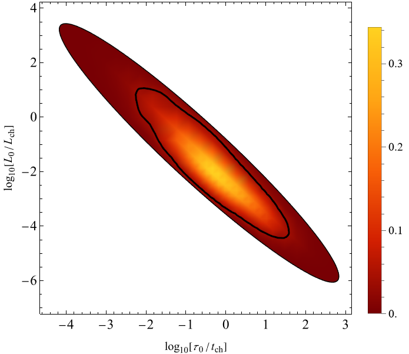<br />
图注：PDF of the PWN-SNR synthetic population in the characteristic plane, with the colorbar indicating its values. While the external, thin ellipse encloses the entire sample, the inner, thick boundary encloses 95 \% of the population, and defines our ROI.<br />
对应解读：对应“建议重点查看的图表”第1项和“关键图表逐图导读”图1：合成PWN-SNR族群参数空间、兴趣区ROI覆盖范围。<br />
入选理由：这是候选图中唯一明确展示合成PWN-SNR族群概率分布和ROI边界的图，直接支撑论文先用族群分布定义模拟参数范围的核心逻辑。图中95%边界与完整样本椭圆可用于判断兴趣区是否覆盖大多数对象，以及边缘对象是否可能影响结论，科学相关性最高。<br />
来源与置信度：arxiv_source；high；arxiv_source / corpo_tesi.tex:figure[18]</p>
<p><strong>Fig17</strong><br />
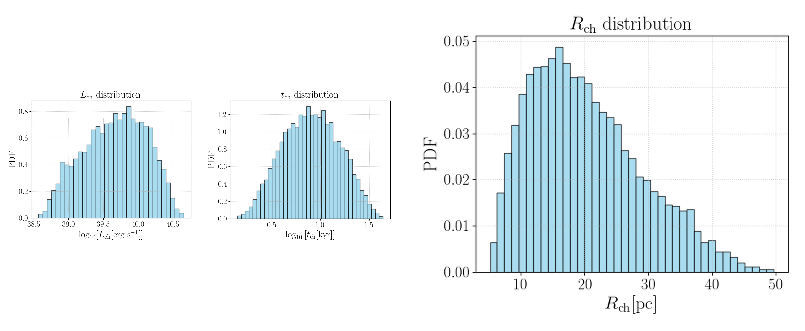<br />
图注：Normalized histograms of the distributions of $L_{\rm ch}$, $t_{\rm ch}$ and $R_{\rm ch}$ for a population of $10^4$ SNRs.<br />
对应解读：对应“模型拟合”段落中超新星遗迹控制参数到特征尺度的映射，以及“建议重点查看的图表”第1项中关于SNR参数空间的部分。<br />
入选理由：该图给出合成SNR族群的特征量分布，包括L_ch、t_ch和R_ch，有助于理解E_SN、M_ej、n_0等超新星参数如何转化为反向激波和PWN演化的时间、长度尺度。虽然不是直接的一维/二维演化结果，但它是后续ROI和动力学比较的输入基础。<br />
来源与置信度：arxiv_source；high；arxiv_source / corpo_tesi.tex:figure[17]</p>
<p><strong>Fig14</strong><br />
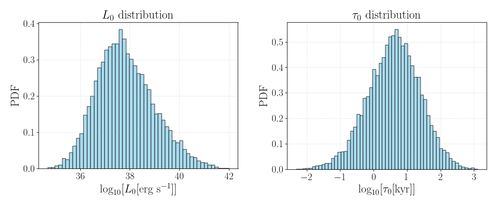<br />
图注：Normalized histograms of the distributions of $L_0$ and $\tau_0$ for a young population of $10^4$ PSRs.<br />
对应解读：对应“模型拟合”段落中脉冲星注入参数L_0、tau_0的分布，以及“建议重点查看的图表”第1项中脉冲星注入参数组合。<br />
入选理由：该图展示年轻脉冲星族群中初始自转下降光度L_0和特征时标tau_0的归一化分布，直接说明PWN能量注入端的先验范围。它能辅助读者理解为什么中年PWN会出现多样化演化，但相比Fig18缺少PWN-SNR联合参数空间和ROI边界。<br />
来源与置信度：arxiv_source；high；arxiv_source / corpo_tesi.tex:figure[14]</p>
<p><strong>Fig06</strong><br />
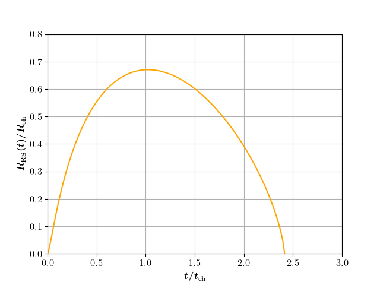<br />
图注：The evolutionary path of the RS inside a SNR for $\delta=0$ and $\omega=12$ \citep{Bandiera+21}.<br />
对应解读：对应“建议重点查看的图表”第2、3项中反向激波返回和反响阶段时标的背景说明。<br />
入选理由：该图展示SNR内反向激波的演化路径，是理解反响阶段何时开始压缩PWN的必要物理背景。它不直接给出PWN半径、压缩因子或一维/二维比较，因此不能替代日报重点要求的演化诊断图，但在现有候选中对反向激波物理最相关。<br />
来源与置信度：arxiv_source；high；arxiv_source / corpo_tesi.tex:figure[6]</p>
<h4 id="_61">强相关工作</h4>
<p>这篇工作与经典脉冲星风云动力学模型一脉相承，尤其是把中心脉冲星自转下降光度注入到膨胀泡，并追踪其与超新星遗迹反向激波相互作用的框架。相关检索关键词可用“pulsar wind nebula reverberation phase”、“PWN SNR reverse shock”、“one-dimensional PWN evolution”、“Sedov PWN late evolution”。这些工作通常关注半解析或一维模型如何解释风云半径、压力和磁场演化。</p>
<p>它也与多维磁流体模拟和遗迹型 \(\mathrm{TeV}\) 风云观测直接相关。相似研究会讨论 Vela X、HESS J1825-137、G327.1-1.1 等偏移或扩展风云，以及反向激波、环境密度梯度和脉冲星速度如何造成不对称。检索关键词可用“relic PWN TeV”, “HESS J1825-137 PWN evolution”, “Vela X reverse shock”, “Rayleigh Taylor instability pulsar wind nebula”。</p>
<p>潜在张力在于：有些观测解释强调粒子扩散或逃逸决定 \(\mathrm{TeV}\) 尺寸，有些动力学模型则强调风云边界和混合决定尺寸。本文支持一维全局动力学的稳健性，但同时指出表观尺寸可被多维结构放大，这意味着仅凭 \(\mathrm{TeV}\) 角尺度来反推扩散系数或注入能量可能过于简单。相反观点或补充方向可检索“TeV halo diffusion around pulsars”、“PWN particle escape”, “energy dependent morphology PWN”。</p>
<p><strong>相似工作</strong>：<br />
- https://arxiv.org/abs/astro-ph/0205498<br />
- https://arxiv.org/abs/astro-ph/0506658<br />
- https://arxiv.org/abs/1909.06347</p>
<p><strong>基础理论 / 方法工作</strong>：<br />
- https://ui.adsabs.harvard.edu/abs/1959ApJ...129..243S/abstract<br />
- https://ui.adsabs.harvard.edu/abs/1977ApJ...218..377C/abstract<br />
- https://ui.adsabs.harvard.edu/abs/1984ApJ...283..694K/abstract</p>
<p><strong>相反观点 / 张力线索</strong>：<br />
- https://arxiv.org/abs/1702.02992<br />
- https://arxiv.org/abs/1904.10524<br />
- https://arxiv.org/abs/2106.07692</p>
</details>
<h3 id="7-time-lags-as-proxy-of-spectral-evolution-in-gamma-ray-bursts">7. Time lags as proxy of spectral evolution in gamma-ray bursts</h3>
<ul>
<li>来源：arXiv / astro-ph.HE</li>
<li>链接：https://arxiv.org/abs/2606.10926v1</li>
<li>作者：C. Maraventano, F. Daigne, R. Mochkovitch, L. Nava, G. Ghirlanda, T. Di Salvo</li>
<li>评分：novelty 7/10，importance 8/10，relevance 10/10，final 9.40/10</li>
<li>推荐理由：Fermi-GBM/LAT-LLE联合研究GRB prompt到百MeV时滞，直接涉及伽马暴高能辐射成分诊断；负时滞与独立高能成分的联系值得关注。</li>
</ul>
<p><strong>中文题目</strong>：Time lags as proxy of spectral evolution in gamma-ray bursts</p>
<p><strong>做了什么</strong>：本篇论文已通过推荐筛选，但自动详细解读生成失败。可先根据题目和摘要判断阅读优先级：Positive lags in gamma-ray bursts (GRBs), where hard photons anticipate softer ones, provide a unique window into the temporal evolution of their prompt emission. Negative lags, when hard photons are delayed, are instead more enigmatic to interpret. Disentangling the effects that produce both kinds of lags is critical for identifying the physical mechanisms at work in the prompt and early afterglow phases of GRBs. We investigate the potential of time lags for distinguishing different emission components at different energy bands. Using data from the Fermi Gamma-ray Burst Monitor (GBM) and the LAT Low Energy(LLE) technique, we perform a time-resolved joint spectral analysis in the range 10 keV-100 MeV for two exceptionally bright bursts, GRB 160625B and GRB 190114C. Time lags between the lowest-energy band (10-100 keV) and progressively higher-energy bands up to 30-100 MeV were computed across their distinct emission episodes via the cross-correlation function. For GRB 160625B, the spectra are described by a single component with clear hard-to-soft evolution, and the time lags are always positive. Analysis of the high-energy exponential cutoff, likely originating above the photosphere, yields bulk Lorentz factor estimates of $Γ\sim 120-250$. GRB 190114C exhibits negative lags in the 30-100 MeV band, coinciding with a delayed high-energy powerlaw component that dominates the LLE range after ~2.5 s. Comparison with multi-wavelength observations shows some compatibility with the early afterglow, though its origin remains open, leaving room for external shocks or internal dissipation. Time lags are effective diagnostic tools for the spectral evolution of GRBs: positive lags trace the softening of the prompt emission, whereas negative lags indicate the appearance of a new, independent high-energy spectral component.</p>
<p><strong>为什么重要</strong>：这篇论文在今日候选中通过了本地推荐阈值，说明它与当前高能天体物理兴趣方向或质量标准较匹配；详细内容建议优先查看原文摘要、结论和图表。</p>
<p><strong>理论 / 观测 / 仪器方法价值</strong>：由于 LLM 摘要 JSON 解析失败，本节保留为安全占位，不编造论文未确认的公式、图号或链接。</p>
<p><strong>为什么应该关注</strong>：日报仍保留这篇论文，是为了避免单篇摘要失败导致整份日报缺失。请把它作为需要人工快速复核的高优先级候选。</p>
<details class="paper-detail">
<summary>展开详细解读：文章讲解、背景、理论、重点章节、图表与相关工作</summary>
<h4 id="_62">文章详细讲解</h4>
<p>本文的科学问题可以概括为：GRB 中不同能段的 time lag 是否能作为谱演化的代理量，并进一步帮助识别 prompt emission 与延迟高能成分。传统上，长暴的正时延常被纳入 luminosity-lag 或脉冲谱演化讨论，但负时延更难解释，因为它意味着高能响应落后于低能响应。作者选择 GRB 160625B 与 GRB 190114C，是因为二者足够明亮，能在 10 keV-100 MeV 进行时间分辨联合谱拟合，并且分别代表正时延单成分和负时延多成分的典型场景。</p>
<p>方法上，论文先把每个 GRB 分成若干时间区间，在每个区间进行 GBM+LLE 的谱拟合；同时构造多个能段光变曲线，以 10-100 keV 作为 Band 1，对 Band 2、Band 3、Band 4 逐一计算 CCF 时延。对 GRB 160625B，采用 2SBPLCUTOFF 模型，跟踪低/中/高能光子指数、\(E_{\rm break}\)、\(E_{\rm peak}\)、\(E_{\rm cutoff}\) 的时间演化；对 GRB 190114C，采用 2SBPL+PL 模型，重点观察额外 PL 的光子指数和通量何时出现并主导高能范围。</p>
<p>关键结果之一是 GRB 160625B 的时延始终为正，并与单一谱成分的 hard-to-soft 演化相符。Fig01 显示多能段光变和谱参数同步演化：若 \(E_{\rm peak}\)、\(E_{\rm break}\)、\(E_{\rm cutoff}\) 随时间下降并依次穿过不同能段，那么高能光变峰领先低能光变峰是自然结果。Fig03 的时间积分和时间分辨谱及残差则应被用来核查单成分 cutoff 模型是否足以解释高能端，而不是由遗漏的额外 PL 成分伪装成 cutoff。</p>
<p>关键结果之二是 GRB 190114C 在 30-100 MeV 能段出现负时延，并且这个现象与延迟出现的高能 power-law 成分相伴。Fig02 中 Band 4 的时延、PL 光子指数和 \(E_{\rm peak}\)/\(E_{\rm break}\) 的演化应一起看：如果 Band 4 计数在低能 prompt 峰之后增强，且 Fig04 中 2SBPL 单独模型在高能端留下系统残差，而 2SBPL+PL 能改善残差，那么负时延更可能是新谱成分出现的结果，而不是单一谱峰反向演化。</p>
<p>论文还把 GRB 190114C 的高能 PL 通量与 Swift-XRT、Swift-BAT、GBM 和 Fermi-LAT 数据比较，尝试判断其是否与早期 afterglow 兼容。这里应保持谨慎：多波段时间衰减相似并不等于物理起源唯一，因为内部耗散也可能产生延迟高能尾；外激波解释则需要检查起始时间、谱斜率、闭合关系和能量预算。摘要中明确说起源仍然开放，说明本文更强的结论是“负时延指示独立高能谱成分”，而不是“负时延已经证明外激波”。</p>
<p>局限性主要包括样本数只有两个、事件极亮而非普通 GRB 代表样本、CCF 对时间 bin 和脉冲叠加敏感、宽带谱模型仍是经验参数化，以及 LLE/LAT 高能端计数稀疏造成的统计不确定性。下一步可修复的问题包括：对更多亮暴统一计算能段依赖时延；用模拟光变检验 hard-to-soft 单成分能否产生伪负时延；用贝叶斯模型比较量化 2SBPL、2SBPLCUTOFF、2SBPL+PL 的证据差异；并把高能 PL 与 afterglow 闭合关系、LAT GeV 光变、TeV 观测或上限联合起来。</p>
<h4 id="_63">背景知识</h4>
<p>伽马暴 prompt emission 的一个长期难题是：我们看到的光变曲线并不是单纯的“中心引擎开关记录”，而是辐射机制、相对论几何效应、谱形随时间演化、探测器响应和多发射区叠加后的结果。所谓 time lag 通常指不同能段光变曲线峰值或相关性最大值之间的时间偏移；在大量长暴中常见“正时延”，即高能光子先到、低能光子后到，这常被直观解释为谱峰能量 \(E_{\rm peak}\) 从高能向低能扫过观测能段的 hard-to-soft 演化。但这个解释只在单一主导谱成分、脉冲形态相近、背景处理可靠时比较稳健。</p>
<p>本文研究对象是两个非常亮的 Fermi 伽马暴：GRB 160625B 和 GRB 190114C。它们的共同优势是信噪比高、能量覆盖宽，可以把 GBM 的 keV-MeV 数据和 LAT Low Energy, LLE 的高能数据联合起来，覆盖约 10 keV 到 100 MeV。这样的宽能段数据尤其适合区分“同一谱成分随时间软化”与“新高能成分延迟出现”这两类机制，因为二者都可能改变高、低能光变相位，但在时间分辨能谱中留下的指纹不同。</p>
<p>GRB 160625B 在本文中扮演近似“单成分谱演化”的参照样本：其时间分辨谱可用带高能指数 cutoff 的双平滑折断幂律类模型描述，且摘要指出存在清楚的 hard-to-soft 演化，所有相对低能段的时延均为正。GRB 190114C 则是对照样本：30-100 MeV 能段出现负时延，即相对于 10-100 keV 低能段，高能响应延迟；同时谱拟合需要一个延迟出现的高能 power-law 成分，并在约 2.5 s 后主导 LLE 范围。这种对照设计使论文的核心问题不只是“测到了多大时延”，而是“时延能否作为谱成分变化的代理量”。</p>
<p>阅读时要避免一个常见误区：正/负时延并不自动等同于某一个唯一物理机制。正时延可以来自谱峰软化，也可能受脉冲宽度随能量变化、曲率效应、多个未分辨脉冲混合影响；负时延可以提示延迟高能成分，但该成分可能来自早期外激波余辉、内部耗散、逆康普顿辐射或其他高能过程。本文比较谨慎的地方在于，它把 cross-correlation function 得到的时延与时间分辨谱模型、残差、额外成分通量以及多波段光变放在一起解释，而不是单凭 CCF 符号下结论。</p>
<p>这篇论文的动机还与 GRB 高能辐射的物理位置有关。若 GRB 160625B 的高能 cutoff 与 \(\gamma\gamma\) 湮灭不透明度或辐射机制本征截断相关，就可以反推 bulk Lorentz factor 和辐射半径；若 GRB 190114C 的高能 power-law 成分与早期 afterglow 兼容，则 prompt 与 early afterglow 的时间界限会变得模糊。因此，time lag 在这里不是一个孤立统计量，而是连接“时间结构—谱演化—辐射区物理”的诊断工具。</p>
<h4 id="_64">基础理论 / 方法脉络</h4>
<p>理解本文首先要把 GRB prompt 光子看作一个随时间变化的宽带谱 \(N(E,t)\)，探测器在不同能段记录的是该谱经过有效面积、能量响应和背景扣除后的计数率。若谱峰 \(E_{\rm peak}(t)\) 随时间从高能向低能移动，则高能通道的光变峰会早于低能通道，这自然产生正时延。反过来，如果低能 prompt 成分先出现，而另一个独立的高能 power-law 成分在较晚时间增强，高能通道就可能相对低能通道出现负时延。</p>
<p>本文使用的低能参考带是 10-100 keV，并与更高能段逐级比较，最高到 30-100 MeV。时延通过 cross-correlation function, CCF 计算：实质上是把两个背景扣除后的光变序列在不同时间平移量 \(\tau\) 下相乘求相关，相关峰所在的 \(\tau\) 给出“哪个能段领先”。这种方法对光变峰形相似且信噪比较高的事件特别有效，但对多脉冲叠加、低计数泊松噪声、时间 bin 选择和不均匀背景很敏感。因此阅读本文的时延结果时，应同时检查 CCF 峰是否单一、峰宽是否很大、误差是否跨过零、以及不同 binning 下符号是否稳定。</p>
<p>谱模型方面，论文使用 2SBPL 类模型描述 prompt 主成分。2SBPL 可理解为有两个平滑折断的经验谱形，通常包含低能斜率、中间斜率、高能斜率、break energy 和 peak energy 等参数；对 GRB 160625B 还引入高能指数 cutoff，形成 2SBPLCUTOFF，以描述高能端下弯或截止。对 GRB 190114C，则使用 2SBPL+PL：一个 prompt 主成分加一个额外 power-law 成分。判断是否需要额外 PL 的关键不是模型名字，而是加入 PL 后高能残差是否系统消失、PL 通量是否与 LLE/LAT 光变同步、以及参数是否有物理可解释的时间连续性。</p>
<p>正时延与 hard-to-soft 演化之间的物理联系可以这样把握：当 \(E_{\rm peak}\) 高于某个能段时，该能段可能位于谱的低能斜率上；当 \(E_{\rm peak}\) 扫过该能段时，该能段计数率达到峰值；之后若 \(E_{\rm peak}\) 继续下降，该能段落入较陡的高能尾部，计数率下降。因此更高能段先经历“谱峰扫过”，低能段后经历，于是高能领先低能。这个图像要求同一谱成分主导所有比较能段；如果高能通道主要来自另一个延迟 PL 成分，时延符号就不再直接反映 \(E_{\rm peak}\) 软化。</p>
<p>还要注意，GBM 与 LLE/LAT 的联合谱分析涉及跨仪器归一化、能量响应矩阵、有效面积、时间选段一致性和背景建模。10 keV-100 MeV 的宽范围使参数约束更强，但也更容易暴露模型错配：例如低能曲率拟合不好会影响 \(E_{\rm break}\)，高能端少量计数可能强烈影响 PL 或 cutoff 的显著性。本文的结论应通过“谱参数演化图 + 宽带谱残差图 + 多波段通量图”三者交叉阅读，而不是只看时延表。</p>
<h4 id="_65">公式与推导</h4>
<p>可以从探测器计数率与源光子谱的关系开始。某一能带 \([E_1,E_2]\) 的背景扣除计数率近似为</p>
<div class="math-display">\[C_i(t)=\int_{E_1}^{E_2} dE_{\rm det}\int dE\,R_i(E_{\rm det},E)\,A_i(E,t)\,N(E,t),\]</div>
<p>其中 \(R_i\) 是第 \(i\) 个探测器的能量响应，\(A_i\) 是有效面积，\(N(E,t)\) 是源光子谱。若只做物理直觉估计，可把响应近似为对角形式，得到 \(C(t)\propto \int_{E_1}^{E_2}N(E,t)A(E)dE\)。</p>
<p>时延由两个能段的互相关定义。对离散光变 \(x_k\) 与 \(y_k\)，常用归一化 CCF 可写为</p>
<div class="math-display">\[{
m CCF}(\tau_j)=\frac{\sum_k [\(x_k-\bar{x}\)][\(y_{k+j}-\bar{y}\)]}{\sqrt{\sum_k(x_k-\bar{x})^2\sum_k(y_{k+j}-\bar{y})^2}},\]</div>
<p>其中 \(\tau_j=j\Delta t\)。若 \({\rm CCF}\) 最大值出现在 \(\tau_{\rm lag}\)，则该值给出两个能段光变的相对偏移；实际符号约定要按论文定义核查，本文摘要中的物理表述是正时延对应硬光子领先软光子。</p>
<p>单一 prompt 成分可抽象为随时间移动的谱形</p>
<div class="math-display">\[N(E,t)=A(t)\,f\!\left(\frac{E}{E_{\rm peak}(t)};\alpha,\beta,\ldots\right),\]</div>
<p>其中 \(A(t)\) 是归一化，\(f\) 是类似 Band 或 2SBPL 的弯曲谱形，\(\alpha,\beta\) 等为不同能段的光子指数。hard-to-soft 演化可用</p>
<div class="math-display">\[E_{\rm peak}(t)=E_0\left(\frac{t-t_0}{t_s}\right)^{-q}\quad(q>0)\]</div>
<p>或等价的指数衰减近似描述。若某能带在 \(E_{\rm peak}\) 扫过时达到最大响应，则高能带峰值时间满足 \(E_{\rm peak}(t_h)\sim E_h\)，低能带满足 \(E_{\rm peak}(t_l)\sim E_l\)，于是</p>
<div class="math-display">\[\frac{t_l-t_0}{t_h-t_0}\simeq \left(\frac{E_h}{E_l}\right)^{1/q}>1,\]</div>
<p>这给出正时延的基本标度。</p>
<p>2SBPL 类模型的本质是用两个平滑折断连接三段幂律。无需假定具体软件实现，也可写成示意形式</p>
<div class="math-display">\[N_{\rm 2SBPL}(E)=A\,E^{\alpha_1}\left[1+\left(\frac{E}{E_{\rm break}}\right)^{s_1(\alpha_1-\alpha_2)}\right]^{-1/s_1}
\(\left\)[1+\left(\frac{E}{E_{\rm peak}}\right)^{s_2(\alpha_2-\alpha_3)}\right]^{-1/s_2},\]</div>
<p>其中 \(\alpha_1,\alpha_2,\alpha_3\) 是三段斜率，\(s_1,s_2\) 控制平滑程度。具体归一化和 \(E_{\rm peak}\) 与 \(\nu F_\nu\) 峰的精确定义应以论文模型实现为准。</p>
<p>对 GRB 160625B，摘要指出采用带高能指数 cutoff 的模型，可写为</p>
<div class="math-display">\[N(E,t)=N_{\rm 2SBPL}(E,t)\exp\!\left[-\frac{E}{E_{\rm cutoff}(t)}\right].\]</div>
<p>若 cutoff 与 \(\gamma\gamma\to e^+e^-\) 不透明度有关，则阈值条件近似为</p>
<div class="math-display">\[E_1E_2(1-\cos\theta)\gtrsim 2(m_ec^2)^2,\]</div>
<p>相对论外流中角度和能量都受 bulk Lorentz factor \(\Gamma\) 调制，因此观测到的 \(E_{\rm cutoff}\) 可约束 \(\tau_{\gamma\gamma}(E_{\rm cutoff})\sim1\)。简化写法是</p>
<div class="math-display">\[\tau_{\gamma\gamma}(E)\sim n'_{\gamma}(>\epsilon'_{\rm th})\,\sigma_{\gamma\gamma}\,\frac{R}{\Gamma}\sim1,\]</div>
<p>其中撇号表示共动系，\(R\) 是辐射半径。实际 \(\Gamma\) 估计依赖谱斜率、光度、变时标和几何假设，本文给出约 \(\Gamma\sim120-250\) 的结果。</p>
<p>辐射半径通常与变时标满足量级关系</p>
<div class="math-display">\[R_{\rm em}\sim 2\Gamma^2 c\,t_{\rm var}/(1+z),\]</div>
<p>而重子光球半径可写成常用标度</p>
<div class="math-display">\[R_{\rm ph}\sim \frac{L\sigma_T}{8\pi m_pc^3\Gamma^3},\]</div>
<p>其中 \(L\) 是各向同性等效光度，\(\sigma_T\) 是 Thomson 截面。若 \(R_{\rm em}>R_{\rm ph}\)，则高能 cutoff 位于光球以上的解释更自然；这正是 Fig06 需要核查的物理关系。</p>
<p>对 GRB 190114C，模型变为</p>
<div class="math-display">\[N(E,t)=N_{\rm 2SBPL}(E,t)+A_{\rm PL}(t)E^{-\Gamma_{\rm PL}(t)},\]</div>
<p>其中额外 PL 的归一化 \(A_{\rm PL}\) 在晚时增强会使高能通道光变峰延后。模型比较可用似然差或信息准则概念表达：</p>
<div class="math-display">\[\Delta S = S_{\rm 2SBPL}-S_{\rm 2SBPL+PL},\]</div>
<p>其中 \(S\) 可是 PG-stat/C-stat 一类拟合统计量；若 \(\Delta S\) 足够大且高能残差结构消失，额外成分才有说服力。由于边界参数和非高斯计数会影响显著性，最好结合模拟或后验预测检验，而不只看自由度差。</p>
<h4 id="_66">模型拟合 / 应用方法</h4>
<p>本文拟合的直接对象是 GBM 与 LLE 覆盖 10 keV-100 MeV 的时间分辨能谱，同时还从能段光变中计算 CCF 时延。GRB 160625B 的谱模型是 2SBPLCUTOFF，主要自由参数包括归一化、多个光子指数、\(E_{\rm break}\)、\(E_{\rm peak}\) 和 \(E_{\rm cutoff}\)。GRB 190114C 的模型是 2SBPL+PL，除主成分参数外，还包括额外 power-law 的归一化和光子指数。阅读时应把参数视为时间序列，而不是彼此独立的静态测量：连续的 hard-to-soft 演化比单个 bin 中的参数值更能支撑物理解释。</p>
<p>似然或拟合统计量方面，高能瞬变谱分析通常在计数空间完成，使用包含泊松源计数和背景不确定性的 C-stat/PG-stat 类统计量，并通过探测器响应矩阵把光子模型折叠成预期计数。即使论文没有在摘要中列出具体统计量，读者也应在方法表格中核查每个时间 bin 的 statistic/dof、参数误差计算方式、是否包含系统误差，以及不同探测器间是否允许交叉归一化。对额外 PL 或 cutoff 的显著性，不能简单使用肉眼看谱线；应比较加入成分前后的统计量改善和残差形态。</p>
<p>残差诊断是本文最重要的拟合检查之一。Fig03 中，若 2SBPLCUTOFF 能解释 GRB 160625B，则残差应在低能 GBM、MeV 端和 LLE 端都没有系统偏差；特别要看高能端是否从连续上翘变成随机散布。Fig04 中，若 GRB 190114C 需要额外 PL，则 2SBPL 虚线应在高能端系统不足，而 2SBPL+PL 实线应显著改善 LLE/LAT 相关残差。若改善只发生在少数低信噪点，或加入 PL 后低能参数发生不物理跳变，模型解释就要谨慎。</p>
<p>参数退化主要有几类。第一，\(E_{\rm peak}\)、中间斜率和 \(E_{\rm break}\) 在谱峰附近可互相补偿，尤其在时间 bin 较短时会造成假演化。第二，高能 cutoff 与额外 PL 在某些能段覆盖下可能退化：一个下弯主成分加少量高能点，既可被解释为 cutoff 后的残差，也可能提示第二成分。第三，PL 光子指数与归一化高度相关；当高能计数少时，PL 可能靠宽误差外推影响低能通量。第四，时延本身与光变脉冲宽度、峰形不对称和多脉冲混合退化。</p>
<p>系统误差包括背景拟合、探测器响应、LLE 有效面积、时间选段边界、能带定义和 binning。GRB prompt 光变变化快，若谱时间 bin 跨越明显谱演化，拟合得到的是时间平均谱，可能把连续演化误判为多个成分；反过来，过短 bin 会导致高能统计不足，使 PL 或 cutoff 只剩上下限。稳健性检查应包括改变时间 bin、改变背景区间、用替代谱模型拟合、对 CCF 做 bootstrap 或 Monte Carlo 误差估计，以及检查各探测器单独残差是否一致。</p>
<p>模型可能失败的场景也值得明确。对 GRB 160625B，如果高能 cutoff 与光变中某个独立高能弱成分重叠，单成分 hard-to-soft 解释会过于简化；对 GRB 190114C，如果 PL 成分的低能外推与 XRT/BAT/GBM 不一致，或其时间衰减不满足 afterglow 闭合关系，则“早期余辉”解释不足。本文的合理使用方式是把 time lag 当作触发进一步谱分解的诊断量，而不是单独的物理判据。</p>
<h4 id="_67">重点章节 / 结果段落怎么读</h4>
<ol>
<li>
<p>Introduction：重点提取作者如何定义 positive lag 与 negative lag，以及他们为何认为负时延需要独立解释。阅读时应区分历史上 lag-luminosity、pulse narrowing、hard-to-soft evolution 的经验结果，和本文想做的“用时延识别谱成分”这一更具体目标。</p>
</li>
<li>
<p>Data selection and reduction：需要核查 GBM 探测器、LLE 数据、能段划分、背景区间、时间 binning 和事件时间零点。时延分析对光变处理极其敏感；若不同能段使用不同时间覆盖或背景模型，CCF 峰位可能产生系统偏移。</p>
</li>
<li>
<p>Time-resolved spectral analysis：这是论文方法核心。对 GRB 160625B 要看为何选择 2SBPLCUTOFF、cutoff 的显著性如何体现；对 GRB 190114C 要看为何选择 2SBPL+PL、PL 是否在多个时间 bin 中稳定存在。应重点读表格中的参数误差、上/下限和拟合统计量，而不仅是正文结论。</p>
</li>
<li>
<p>Time lag measurement：检查 CCF 的定义、符号约定、误差估计方法和能带选择。建议把每个时延结果与对应时间段的光变形态相连：单峰脉冲的 lag 可解释性较强，多峰混合时 CCF 峰可能代表整体相似性而非真实物理延迟。</p>
</li>
<li>
<p>Physical interpretation for GRB 160625B：阅读高能 cutoff、\(\Gamma\) 和半径推导时，要分清观测层面的结论“有高能弯折/截止”与物理层面的解释“来自 \(\gamma\gamma\) opacity 或机制本征 break”。重点看 Fig06 中辐射半径和光球半径的相对位置是否支撑“above photosphere”。</p>
</li>
<li>
<p>Physical interpretation for GRB 190114C：重点读作者如何把负时延、PL 成分和多波段 afterglow 比较联系起来。这里最容易过度解读；应把论文强结论限定为“负时延与独立高能成分出现一致”，而把“外激波还是内部耗散”视为仍需多波段闭合关系和更大样本验证的问题。</p>
</li>
</ol>
<h4 id="_68">建议重点查看的图表</h4>
<ol>
<li>
<p>多能段光变曲线与 CCF 时延图：重点看 Band 1, 2, 3, 4 的峰值相对顺序、0.1 s binning 是否足以解析脉冲、CCF 峰是否唯一，以及时延误差是否跨过零。Fig01 和 Fig02 的底部时延面板是核心诊断。</p>
</li>
<li>
<p>谱参数时间演化图：检查 \(E_{\rm peak}\)、\(E_{\rm break}\)、\(E_{\rm cutoff}\) 是否连续下降或有突变；若正时延由 hard-to-soft 演化导致，高能特征能量应与光变峰顺序有可解释的对应关系。对 GRB 190114C 还要看额外 PL 光子指数何时被约束。</p>
</li>
<li>
<p>时间分辨宽带谱和残差图：Fig03 与 Fig04 的下方面板显示 residuals，是判断模型是否遗漏成分的关键。应检查高能端残差是否系统偏正、加入 cutoff 或 PL 后是否消失，以及不同探测器颜色之间是否存在交叉归一化不一致。</p>
</li>
<li>
<p>模型成分分解图：对 GRB 190114C，要比较 2SBPL 虚线与 2SBPL+PL 总模型在 LLE 能段的差异；如果 PL 只在高能少数点上起作用，要评估统计显著性和上限处理。对 GRB 160625B，要确认 cutoff 不是由背景或响应边界导致的假弯折。</p>
</li>
<li>
<p>高能 cutoff 推导 Lorentz factor 和半径图：Fig06 应看 \(\Gamma\)、MeV 辐射半径、光球半径的相对大小和时间演化。重点核查两个假设分支：cutoff 来自 \(\gamma\gamma\) opacity 或来自辐射机制本征 break 时，推导出的 \(\Gamma\) 是否都在摘要给出的约 \(120-250\) 范围，并且辐射半径是否位于光球以上。</p>
</li>
<li>
<p>多波段通量比较图：Fig05 把 Swift-XRT、Swift-BAT、GBM、LAT 和 PL 成分通量放在同一时间轴上。阅读时要看 PL 的 30-100 MeV 和 10-30 keV 外推通量是否与早期 afterglow 光变平滑连接，是否存在上限冲突，以及第一时间 bin 细分后结论是否改变。</p>
</li>
<li>
<p>表格中的时间区间和拟合统计量：除了图，必须核对表中每个时间 bin 的起止、自由度、统计量、参数误差和上/下限。若某些关键时延或 cutoff 只出现在极短或低信噪区间，结论稳健性要打折。</p>
</li>
</ol>
<h4 id="_69">关键图表逐图导读</h4>
<p>图 1（GRB 160625B 谱参数与时延演化）：上方面板 A-D 是不同能段计数率光变，横轴为触发后时间，纵轴为计数率；底部 G 面板给出 Band 1 相对 Band 2/3/4 的 time lags。读图时先看高能光变峰是否比低能光变峰更早，再看 E/F 面板中的光子指数和 \(E_{\rm peak}\)、\(E_{\rm break}\)、\(E_{\rm cutoff}\) 是否随时间向低能移动。模型线本身不在这张图中以谱线形式出现，但参数点来自 2SBPLCUTOFF 拟合；陷阱是不要把所有正时延都归因于同一机制，尤其要检查灰色竖线划分的时间 bin 是否跨过多个子脉冲。</p>
<p>图 2（GRB 190114C 谱参数与负时延）：A-D 面板同样是 Band 1-4 光变，H 面板是时延，E-G 面板分别显示 2SBPL 的斜率、额外 PL 光子指数和 \(E_{\rm peak}/E_{\rm break}\) 演化。关键读法是比较 Band 4 即 30-100 MeV 的延迟增强与 F 面板中 PL 参数被约束的时间是否一致；如果负时延只在 Band 4 明显，而 Band 2/3 仍接近 prompt 主成分行为，这支持“新高能成分”解释。陷阱是 LLE 高能计数少，箭头或大误差点不能当成精确测量，且第一个时间 bin 只用 GBM 数据会影响跨能段连续性判断。</p>
<p>图 3（GRB 160625B 宽带谱和残差）：每个面板展示 10 keV-100 MeV 的时间积分或时间分辨谱，不同颜色是不同探测器，黑实线是 2SBPLCUTOFF 总模型，下方 residuals 是模型检验核心。横轴通常是能量，纵轴为 unfolded spectrum 或计数空间等效量，应按图注和坐标标注辨认；不要只看黑线是否穿过数据点，还要看高能端是否存在连续偏离。如果 cutoff 是真实的，残差应在加入 cutoff 后不再呈现高能系统过量；若残差仍在 LLE/LAT 高能端偏正，则单成分解释会变弱。</p>
<p>图 4（GRB 190114C 宽带谱和 2SBPL+PL）：黑实线是 2SBPL+PL，总模型；黑虚线是没有额外 PL 的 2SBPL。读图时要关注虚线在高能端是否系统低于数据，以及实线加入 PL 后 residuals 是否变得随机。若额外 PL 只是由一个高能点驱动，或者低能端同时出现补偿性残差，则模型可能存在退化；若多个时间 bin 都显示类似高能过量且 PL 通量随时间连续，则负时延解释更稳健。</p>
<p>图 5（GRB 190114C 多波段光变与 PL 通量）：横轴是时间，纵轴是不同能段通量或等效光变，包含 Swift-XRT、Swift-BAT、GBM、Fermi-LAT 和谱分解得到的 PL 通量。读法是看 PL 的 30-100 MeV 通量是否与 LAT/afterglow 分量平滑衔接，以及其低能外推是否与 XRT/BAT/GBM 数据冲突。陷阱是不同仪器能段、时间覆盖和灵敏度不同，不能把不同颜色点的简单对齐直接等同于同一物理成分。</p>
<p>图 6（GRB 160625B Lorentz factor 与半径）：A 面板给出 NaI 全能段光变，B 面板给出不同假设下由 \(E_{\rm cutoff}\) 推得的 \(\Gamma\)，C 面板比较 MeV 辐射半径与光球半径。核心是检查 \(\Gamma\) 的时间演化是否与摘要中的 \(120-250\) 一致，以及 \(R_{\rm em}\) 是否大于 \(R_{\rm ph}\)。陷阱是这里的 \(\Gamma\) 不是直接观测量，而是依赖 cutoff 起源假设、光度、谱形和变时标的模型推断；箭头表示上下限，不能当作对称误差点。</p>
<h4 id="_70">论文原图 / 可嵌入图片</h4>
<p><strong>Fig02</strong><br />
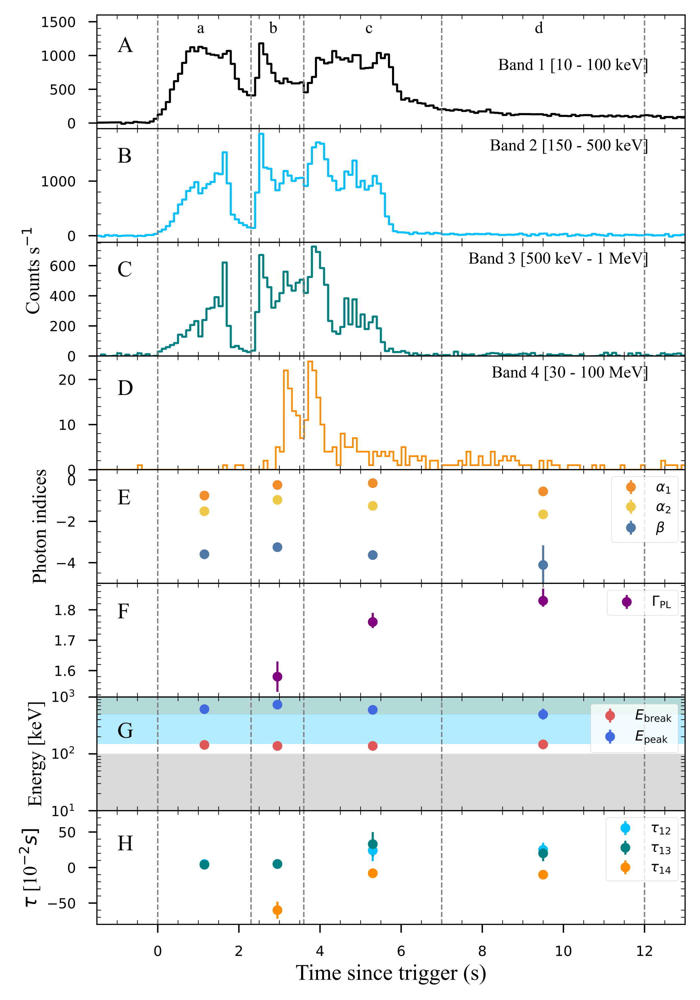<br />
图注：Time evolution of the spectral parameters and time lags obtained from the 2SBPL+PL model (Table~\ref{190114C_results_table}) for the time-resolved spectra of GRB~190114C. Vertical gray dashed lines indicate the time intervals adopted for the spectral analysis (In the time bin \emph{a}, only GBM data were considered). Panels A - D display the count-rate light curves in Bands~1, 2, 3, and~4, respectively, binned at 0.1~s. Panel E shows the photon indices below the break energy, between the break and the peak energies, and above the peak energy (orange, yellow, and blue symbols, respectively). Panel F shows the evolution of the photon index of the additional power-law component (purple symbols). Panel G presents the temporal evolution of $E_\mathrm{peak}$ and $E_\mathrm{break}$ (red and blue symbols, respectively). The light-gray, blue, and green, shaded regions mark the energy ranges corresponding to Bands~1, 2, and~3. Panel H shows the time lags between Band~1 and Bands~2, 3, and~4 (blue, green, and orange symbols, respectively; Table~\ref{time_lags}).<br />
对应解读：对应摘要核心结论中 GRB 190114C 的负时延、30–100 MeV 延迟高能成分，以及 2SBPL+PL 时变谱分析。<br />
入选理由：这张图同时给出多能段光变曲线、额外 power-law 成分的光子指数、E_peak/E_break 演化以及 Band 1 相对高能段的时延，是判断负时延是否与新高能谱成分出现同步的最直接证据。相比单纯谱图，它把时间结构、谱演化和时延诊断放在同一图中，最能支撑论文主结论。<br />
来源与置信度：arxiv_source；high；arxiv_source / aa60232-26.tex:figure[2]</p>
<p><strong>Fig01</strong><br />
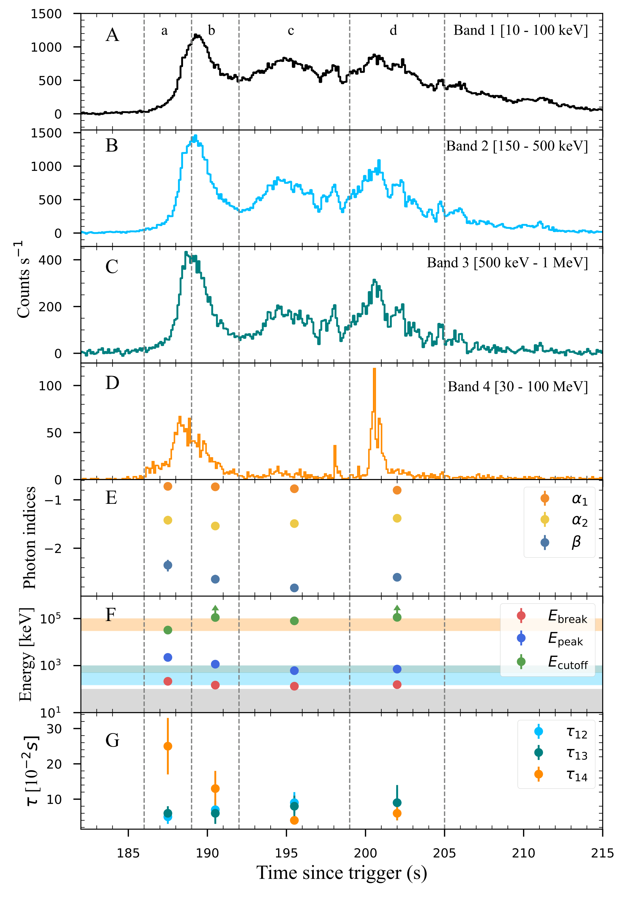<br />
图注：Time evolution of the spectral parameters and time lags obtained from the 2SBPLCUTOFF model (Table~\ref{160625B_results_table}) for the time-resolved spectra of GRB~160625B. Vertical gray dashed lines indicate the time intervals adopted for the spectral analysis. Panels A - D display the count-rate light curves in Bands~1, 2, 3, and~4, respectively, binned at 0.1~s. Panel E shows the photon indices below the break, between the break and the peak energy, and above the peak energy (orange, yellow, and blue symbols, respectively). Panel F presents the temporal evolution of $E_\mathrm{peak}$, $E_\mathrm{break}$, and $E_\mathrm{cutoff}$ (red, blue, and green symbols, respectively). The light-gray, blue, green, and orange shaded regions mark the energy ranges corresponding to Bands~1, 2, 3, and~4. Panel G shows the time lags between Band~1 and Bands~2, 3, and~4 (blue, green, and orange symbols, respectively; Table~\ref{time_lags}). Arrows indicate lower limits.<br />
对应解读：对应摘要核心结论中 GRB 160625B 的单一成分、hard-to-soft 演化、正时延，以及 2SBPLCUTOFF 模型下的时变谱参数。<br />
入选理由：这张图展示 GRB 160625B 的多能段光变曲线、低/中/高能光子指数、E_peak、E_break、E_cutoff 以及不同能段相对低能段的时延，是证明正时延追踪谱软化的关键图。它与 Fig02 形成正负时延物理解释的核心对照。<br />
来源与置信度：arxiv_source；high；arxiv_source / aa60232-26.tex:figure[1]</p>
<p><strong>Fig04</strong><br />
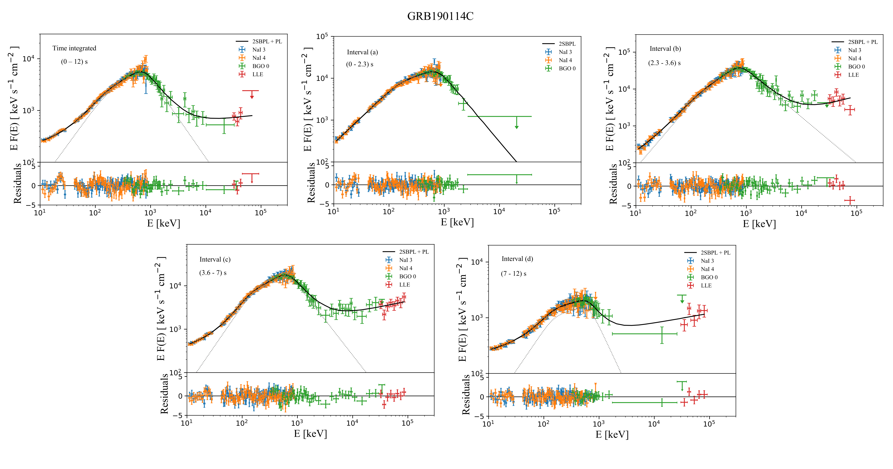<br />
图注：Time-integrated and time-resolved spectra of GRB~190114C in the 10~keV–100~MeV energy range fitted with the 2SBPL+PL model (black solid line). The black-dashed line show the 2SBPL model. Different colors correspond to the individual detectors, as indicated in the legend. In each panel, the lower strip displays the fit residuals. Arrows indicate upper limits.<br />
对应解读：对应模型拟合段落中 GRB 190114C 的 10 keV–100 MeV 联合谱拟合、2SBPL+PL 模型比较和残差诊断。<br />
入选理由：图中给出时间积分和时间分辨谱、2SBPL+PL 总模型、2SBPL 虚线对照以及残差，是验证额外高能 power-law 成分是否必要的主要拟合证据。对于解释 30–100 MeV 负时延来源，比只看光变曲线更能说明存在独立谱成分。<br />
来源与置信度：arxiv_source；high；arxiv_source / aa60232-26.tex:figure[4]</p>
<p><strong>Fig03</strong><br />
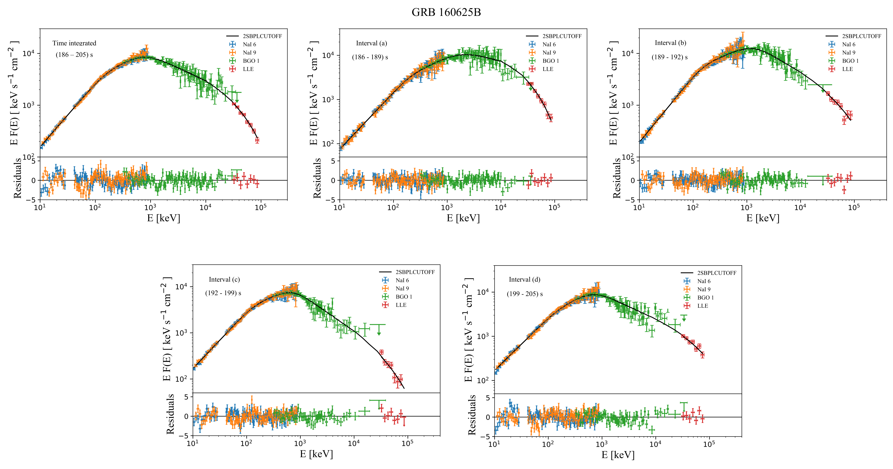<br />
图注：Time-integrated and time-resolved spectra of GRB~160625B in the 10~keV–100~MeV energy range fitted with the 2SBPLCUTOFF model (black solid line). Different colors correspond to the individual detectors, as indicated in the legend. In each panel, the lower strip displays the fit residuals. Arrows indicate lower limits.<br />
对应解读：对应模型拟合段落中 GRB 160625B 的 10 keV–100 MeV 联合谱、2SBPLCUTOFF 模型和残差诊断。<br />
入选理由：这张图展示 GRB 160625B 的时间积分和时间分辨能谱及拟合残差，可检验单一 2SBPLCUTOFF 成分是否足以描述数据，并支撑高能 cutoff 的存在。它是 Fig01 中谱参数演化和正时延解释的谱拟合基础。<br />
来源与置信度：arxiv_source；high；arxiv_source / aa60232-26.tex:figure[3]</p>
<p><strong>Fig06</strong><br />
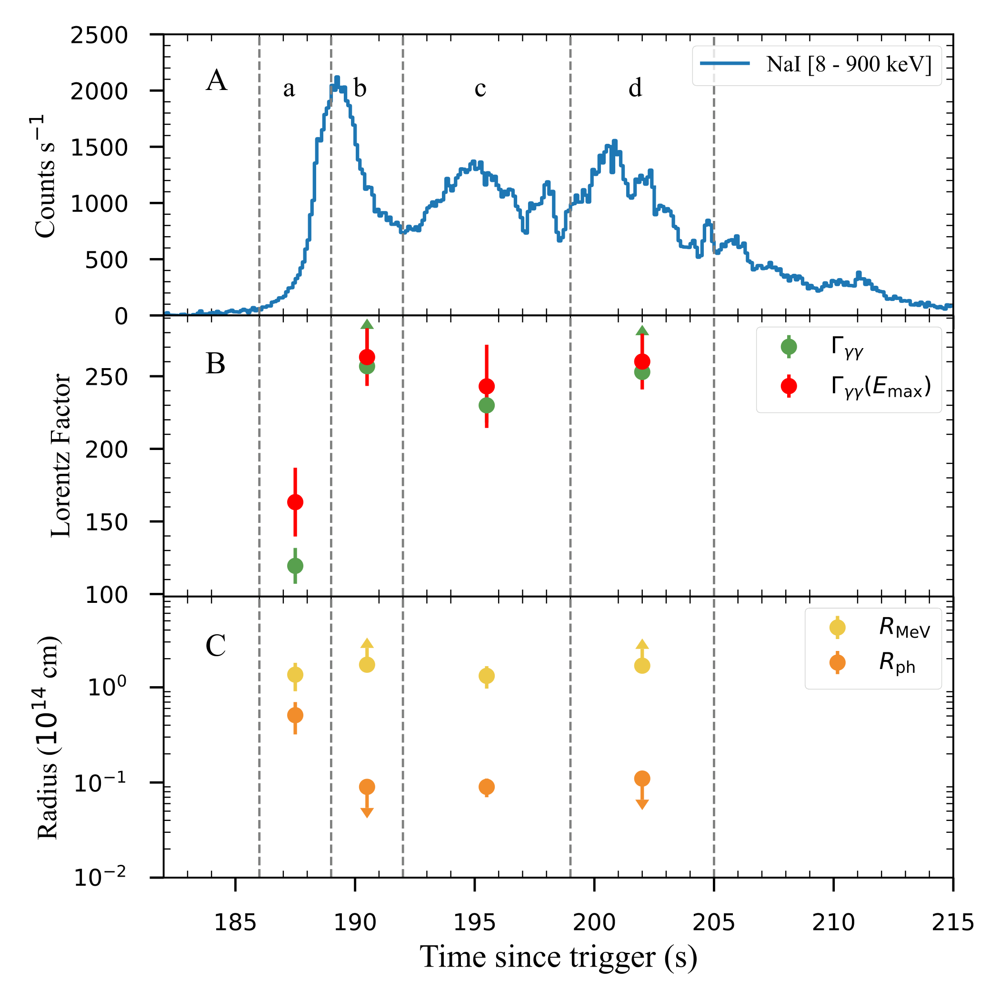<br />
图注：Time evolution of the Lorentz factor and characteristic radii, for the time-resolved spectra of GRB~160625B. Vertical gray dashed lines indicate the time intervals adopted for the spectral analysis. Panel A displays the count-rate light curve in the full NaI energy range, binned at 0.1~s. Panel B shows the Lorentz factors measured assuming that the high-energy cutoff at $E_\mathrm{cutoff}$ is either due to gamma-gamma opacity to pair production, or a natural break of the emission mechanisms (green and red symbols, respectively). Panel C presents the evolution of the radius at which the MeV photons are produced, and the photospheric radius (yellow and orange symbols, respectively). Arrows indicate upper or lower limits.<br />
对应解读：对应摘要中 GRB 160625B 高能指数 cutoff 推导 bulk Lorentz factor Γ≈120–250 及特征半径约束。<br />
入选理由：该图直接展示由 E_cutoff 推导的洛伦兹因子和辐射半径、光球半径随时间的变化，是论文中从观测 cutoff 走向物理参数约束的关键图。虽然不是时延诊断本身，但支撑了 GRB 160625B 高能截止可能位于光球以上的物理解释。<br />
来源与置信度：arxiv_source；high；arxiv_source / aa60232-26.tex:figure[6]</p>
<p><strong>Fig05</strong><br />
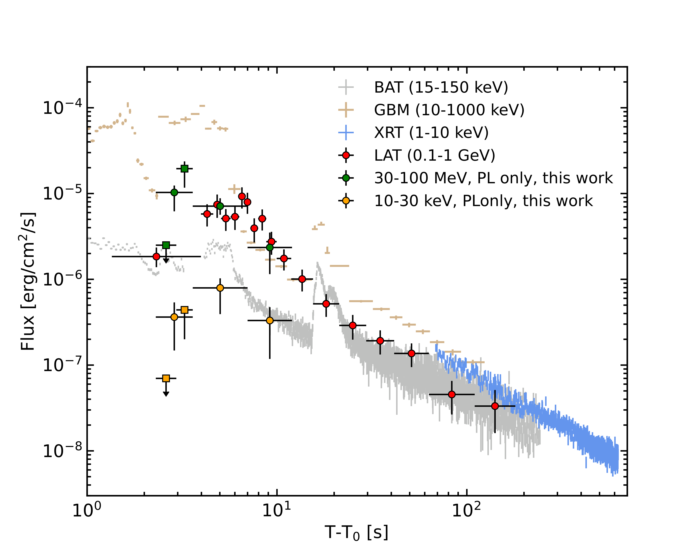<br />
图注：Lightcurves of GRB~190114C across different energy bands: \emph{Swift}-XRT (light blue crosses), \emph{Swift}-BAT (gray crosses), GBM (gold crosses), \emph{Fermi}-LAT data (red filled circles). The flux of the powerlaw component is shown with green (30-100\,MeV) and yellow (10-30\,keV) circles. The results obtained after dividing the first temporal bin into two sub-bins are shown with filled squares. Points represented by arrows indicate upper limits.<br />
对应解读：对应摘要中 GRB 190114C 延迟高能 power-law 成分与多波段早期余辉可能兼容的讨论。<br />
入选理由：这张图把 Swift-XRT、Swift-BAT、GBM、Fermi-LAT 与 power-law 成分通量放在同一时间轴上，可用于判断延迟高能成分是否与早期余辉或外激波行为相符。它补充 Fig02/Fig04 的谱时延证据，连接到论文对高能成分起源的物理讨论。<br />
来源与置信度：arxiv_source；high；arxiv_source / aa60232-26.tex:figure[5]</p>
<h4 id="_71">强相关工作</h4>
<p>相关工作可沿三条线检索。第一条是 GRB spectral lag 的经验研究，包括长暴中硬光子领先软光子的统计规律、lag-luminosity 关系、脉冲宽度随能量变化以及曲率效应解释。检索关键词可用 “GRB spectral lag”, “hard-to-soft evolution”, “pulse evolution”, “lag-luminosity relation”。这些工作提供本文正时延解释的历史背景，也提醒读者正时延并非只由 \(E_{\rm peak}\) 演化产生。</p>
<p>第二条是 prompt emission 宽带时间分辨谱模型，包括 Band function、SBPL/2SBPL、photospheric component、synchrotron constraints、高能 cutoff 和 \(\gamma\gamma\) opacity 对 Lorentz factor 的约束。检索关键词可用 “Fermi GBM time-resolved spectroscopy”, “GRB high-energy cutoff Lorentz factor”, “gamma-gamma opacity GRB”, “photosphere prompt emission”。这些基础工作有助于评估 GRB 160625B 中 cutoff 推导 \(\Gamma\) 和辐射半径的可靠性。</p>
<p>第三条是 GRB 190114C 及类似事件的延迟 GeV/TeV 高能成分和早期 afterglow 研究。GRB 190114C 因多波段和甚高能观测而非常著名，相关文献通常讨论 LAT 延迟辐射、MAGIC TeV 探测、外激波 synchrotron/self-Compton 以及 prompt-afterglow 连接。检索关键词可用 “GRB 190114C LAT delayed emission”, “GRB 190114C early afterglow”, “GRB 190114C inverse Compton”, “prompt high-energy power-law component”。这些工作是判断本文负时延解释是否与外激波或内部耗散张力相符的主要上下文。</p>
<p>可能存在张力的方向包括：单成分谱演化模型能否在合理参数下产生看似负的高能 lag；额外 PL 是否在统计上必需；高能 PL 的谱斜率和时间衰减是否满足外激波闭合关系；以及 cutoff 推导的 \(\Gamma\) 是否与 afterglow onset 或其他 Lorentz factor 估计一致。建议读者从本文 bibliography 中反复出现的作者和关键词向前追溯，再用引用网络查找对 GRB 160625B、GRB 190114C 的不同模型解释。</p>
<p><strong>相似工作</strong>：<br />
（未提供）</p>
<p><strong>基础理论 / 方法工作</strong>：<br />
（未提供）</p>
<p><strong>相反观点 / 张力线索</strong>：<br />
（未提供）</p>
</details>
<h3 id="8-gamma-ray-emission-from-the-crab-pulsar-a-17-year-fermi-lat-reanalysis">8. Gamma-Ray Emission from the Crab Pulsar: A 17-Year Fermi-LAT Reanalysis</h3>
<ul>
<li>来源：arXiv / astro-ph.HE</li>
<li>链接：https://arxiv.org/abs/2606.10519v1</li>
<li>作者：Liancheng Zhou, Yun-Lu Gong, Jun Fang, Li Zhang</li>
<li>评分：novelty 7/10，importance 8/10，relevance 10/10，final 9.40/10</li>
<li>推荐理由：17年Fermi-LAT Crab脉冲星再分析，覆盖100 MeV到数十GeV脉冲轮廓和相位分辨谱；Crab是伽马射线标准源，长期数据结果值得阅读。</li>
</ul>
<p><strong>中文题目</strong>：Gamma-Ray Emission from the Crab Pulsar: A 17-Year Fermi-LAT Reanalysis</p>
<p><strong>做了什么</strong>：本篇论文已通过推荐筛选，但自动详细解读生成失败。可先根据题目和摘要判断阅读优先级：We present a reanalysis of 17 years of Fermi Large Area Telescope (LAT) observations of the Crab pulsar obtained between 2008 August and 2025 August. Using monthly Jodrell Bank radio ephemerides, we assigned pulse phases to the LAT events and aligned the phase zero across the full data set. From this phase-aligned data set, we derived pulse profiles over 100 MeV to 300 GeV. The pulsed emission remains clearly detectable in the 10 to 20 GeV and 20 to 30 GeV bands, with H-test significances of 32.36 sigma and 11.59 sigma, respectively, but is not significantly detected in the 30 to 300 GeV band. Phase-resolved likelihood analysis was performed over 100 MeV to 30 GeV using 14 phase bins with comparable pulsed statistics. The fixed-window fractional fluxes show that the contribution of Peak 1 (P1) decreases steadily with energy, while those of Peak 2 (P2) and the Bridge increase, with P2 exceeding P1 above 10 GeV. Finally, the same phase-assignment framework also enables an off-pulse analysis from 100 MeV to 1 TeV, confirming the synchrotron and inverse-Compton components that dominate the emission in the selected off-pulse interval.</p>
<p><strong>为什么重要</strong>：这篇论文在今日候选中通过了本地推荐阈值，说明它与当前高能天体物理兴趣方向或质量标准较匹配；详细内容建议优先查看原文摘要、结论和图表。</p>
<p><strong>理论 / 观测 / 仪器方法价值</strong>：由于 LLM 摘要 JSON 解析失败，本节保留为安全占位，不编造论文未确认的公式、图号或链接。</p>
<p><strong>为什么应该关注</strong>：日报仍保留这篇论文，是为了避免单篇摘要失败导致整份日报缺失。请把它作为需要人工快速复核的高优先级候选。</p>
<details class="paper-detail">
<summary>展开详细解读：文章讲解、背景、理论、重点章节、图表与相关工作</summary>
<h4 id="_72">文章详细讲解</h4>
<p>本文的核心科学问题可以概括为三层：第一，17 年 Fermi-LAT 数据在统一相位框架下能把 Crab 脉冲星的脉冲辐射追踪到多高能量；第二，P1、P2、Bridge 的相对贡献如何随能量变化；第三，在选定 off-pulse 区间内，Crab 星云的同步辐射与逆康普顿成分是否能被同一套数据处理稳定恢复。它是一篇再分析论文，因此评价标准不是“是否有惊人新现象”，而是相位处理、事件选择、似然建模和系统误差是否足够可复现。</p>
<p>方法链条从相位赋值开始。作者使用 2008 年 8 月至 2025 年 8 月的 LAT 观测，并借助月度 Jodrell Bank 射电星历为事件赋相位，再对全数据集相位零点进行统一。随后在 100 MeV–300 GeV 构建脉冲轮廓，并在能量分段上检验周期性。由于高能端计数稀少，Fig. 2 在 10 GeV 以上使用较少相位 bin 以降低低计数起伏，这是合理的可视化选择，但读者应区分“展示 binning”与“统计检验/似然拟合”的具体设置。</p>
<p>关键结果之一是高能脉冲显著性：10–20 GeV 与 20–30 GeV 能段仍分别有 32.36σ 和 11.59σ 的 H-test 显著性，而 30–300 GeV 未显著探测。这一结果应结合能段跨度理解：30–300 GeV 虽然名义上很宽，但 LAT 在极高能端的 Crab 脉冲光子数会很少，且背景与星云成分不可忽略。因此“未显著”主要是 LAT 数据与本文选择下的统计结论，不应过度外推为 Crab 脉冲辐射物理截止必然落在 30 GeV。</p>
<p>第二个关键结果是相位窗口贡献的能量演化。Fig. 6 给出固定 P1、P2、Bridge 窗口的 OFF 扣除后脉冲计数分数：P1 随能量增加下降，P2 和 Bridge 上升，P2 在 10 GeV 以上超过 P1。这个结论的强处在于它不依赖复杂几何模型，直接来自相位窗口计数；弱处在于固定窗口可能无法追踪峰位、峰宽随能量变化，且 OFF 扣除项在不同窗口之间共享，误差相关性必须正确传播。</p>
<p>第三个结果是相位分辨谱与 off-pulse SED。Fig. 3/4 类型的相位 bin SED 比较 PowerLaw 与 PLSuperExpCutoff4，可检查不同相位处是否需要指数型截止；Fig. 5 汇总固定窗口 SED；Fig. 7 则展示 off-pulse Crab 星云的同步辐射与 IC 分量。读者应特别留意论文是否报告了每个 phase bin 的 TS、谱指数、截止参数及系统误差，因为这些量决定“谱形差异”是物理差异还是统计波动。</p>
<p>局限性主要包括：相位窗口定义可能影响 P1/P2/Bridge 分数；低能段 LAT PSF 较宽，星云与附近背景模型影响更大；高能端计数稀疏导致 profile 与 SED 点的非高斯性增强；PLEC4 与 PL 的模型选择可能受能段上限 30 GeV 影响；off-pulse 区间若含有残余脉冲尾部，会影响星云 SED 分解。下一步修复或扩展可包括使用 photon weights 的脉冲轮廓、对不同相位窗口方案做稳健性测试、与 MAGIC/VERITAS/H.E.S.S. 的相位一致窗口联合比较，以及公开相位赋值和事件选择脚本以提高可复现性。</p>
<h4 id="_73">背景知识</h4>
<p>Crab 脉冲星是高能天体物理中最重要的“标尺源”之一：它距离近、亮度高、从射电到 TeV 能段都有可观测辐射，并且脉冲星本体与 Crab 星云在同一方向上叠加。对 Fermi-LAT 而言，这既是优势也是困难：优势在于 17 年累计曝光足以把 10 GeV 以上的稀疏脉冲光子积累成有统计意义的轮廓；困难在于脉冲星的相位调制信号、星云的非脉冲辐射、银河弥散背景和仪器响应必须在空间、能量与相位上同时区分。</p>
<p>Crab 脉冲星的伽马射线辐射长期用于检验磁层加速模型。早期的“极帽”图像把高能辐射放在中子星表面附近，通常预言较低能量处出现强曲率辐射截止；而 Fermi 时代的观测显示许多年轻脉冲星在 GeV 能段有宽双峰结构，支持外磁层、slot gap、outer gap 或更现代的电流片/条纹风区辐射图像。Crab 的特殊之处是高能端延伸强、Bridge 区域明显，并且 P1、P2、Bridge 的相对强度随能量变化，这些都是约束发射高度、粒子能谱和磁场曲率半径的关键现象。</p>
<p>本文的动机不是发现一个全新的源，而是对 2008 年 8 月至 2025 年 8 月共 17 年 Fermi-LAT 数据做一致的再分析。月度 Jodrell Bank 射电脉冲星星历用于给 LAT 事件赋相位，并把全数据集的相位零点对齐。对于 Crab 这类会有 timing noise、glitch 及长期自转演化的年轻脉冲星，长时间基线再分析的核心不是简单“多加几年数据”，而是要保证每个光子的相位归属没有被星历误差系统性抹宽。</p>
<p>常见误区之一是把相位积分谱直接理解成单一辐射区的谱。Crab 的 P1、P2 和 Bridge 在相位上代表不同的视线穿越几何或不同辐射区混合，能谱和 cutoff 行为可能不同；因此相位分辨似然分析比全相位谱更有物理信息。另一误区是把 off-pulse 当成“纯背景”。对 Crab 来说 off-pulse 中仍有星云同步辐射和逆康普顿辐射，论文的 off-pulse 分析实际上是在同一相位框架下分离星云成分，而不是把它简单丢弃。</p>
<p>还应注意 30–300 GeV 未显著探测并不等价于该能段完全没有脉冲辐射；它可能反映 LAT 有效面积、点扩散函数、背景、能量分辨率和光子统计共同作用下的显著性不足。摘要给出的 10–20 GeV 和 20–30 GeV H-test 显著性分别为 32.36σ 和 11.59σ，说明高能脉冲延伸在 LAT 数据内仍稳健；但 30 GeV 以上与地面 Cherenkov 结果的衔接需要非常谨慎地比较能段、相位窗口和系统误差。</p>
<h4 id="_74">基础理论 / 方法脉络</h4>
<p>脉冲星高能辐射的基本图像是：快速旋转、强磁场中子星在磁层中感生强电场，部分区域存在沿磁场方向的未屏蔽电场，电子/正电子被加速到超相对论能量，并通过曲率辐射、同步辐射或逆康普顿散射产生 X 射线到伽马射线。观测到的脉冲轮廓不是源本身周期性开关，而是旋转灯塔效应：固定辐射束随星体转动扫过视线，不同相位对应不同磁层几何位置。</p>
<p>对 LAT 数据而言，最基础的可观测量是每个事件的到达时间、能量、重建方向和事件类型。论文首先要把光子到达时间转换到太阳系质心，再利用射电脉冲星星历计算自转相位。由于 Crab 的频率及其导数随时间变化，17 年数据不能用一个简单常数周期折叠；月度 Jodrell Bank 星历和相位零点对齐是保证 P1、P2 不被相位漂移洗掉的关键步骤。Fig. 1 中射电主脉冲与伽马相位零点的对齐就是这一处理的直观验证。</p>
<p>脉冲轮廓分析关注的是相位分布是否偏离均匀背景。H-test 是脉冲星搜索常用的无模型周期性检验，它综合多个 Fourier 谐波来评估相位非均匀性，适合峰形未知或含多峰结构的情形。本文在能量分辨轮廓中报告 10–20 GeV 和 20–30 GeV 的强显著性，并指出 30–300 GeV 未显著探测；这里的读法应是“给定 LAT 数据选择和相位赋值后，统计检验支持到 30 GeV 左右的脉冲调制”。</p>
<p>谱分析部分则从计数空间进入似然空间。LAT 的观测计数不是直接的源光子谱，而是源模型、曝光、点扩散函数、能量响应和背景模型卷积后的结果。相位分辨似然分析把脉冲相位分成 14 个具有相近脉冲统计量的 bin，在 100 MeV–30 GeV 内分别拟合谱形。固定窗口的 P1、P2、Bridge 和全脉冲 SED 用于比较不同相位成分的谱差异；Fig. 5 中 P1、P2、全脉冲采用 PLEC4，Bridge 采用 PL，是模型选择应重点核查的地方。</p>
<p>物理解释上，若 P1 随能量占比下降而 P2、Bridge 上升，通常意味着不同相位区具有不同的粒子能谱、截止能量或几何增亮机制。不能只用“P2 比 P1 更硬”一句话概括，还应检查这种趋势是否来自固定相位窗口下的边界选择、OFF 扣除共享项、低计数 Poisson 误差、系统误差估计或不同能段 PSF 变化。Fig. 6 的分数流量趋势应与 Fig. 2 的能量分辨轮廓和 Fig. 5 的相位窗口 SED 互相验证。</p>
<h4 id="_75">公式与推导</h4>
<p>从脉冲星相位赋值开始，事件到达时刻先被转换到太阳系质心时刻 \(t\)，再由自转频率展开得到相位。若在星历参考时刻 \(t_0\) 附近展开，旋转相位可写为</p>
<div class="math-display">\[\(\Phi(t)=\Phi_0+\nu_0(t-t_0)+\frac{1}{2}\dot\nu_0(t-t_0)^2+\frac{1}{6}\ddot\nu_0(t-t_0)^3+\cdots,\)\]</div>
<p>观测相位为 \(\phi=\Phi\bmod 1\)。这里 \(\nu_0\) 是自转频率，\(\dot\nu_0\) 和 \(\ddot\nu_0\) 描述自转变慢和 timing noise 的局部近似。17 年数据中必须分段使用可靠星历，否则相位误差会随时间积累。</p>
<p>相位轮廓的基本计数模型可写成源脉冲项、非脉冲项和背景项之和：</p>
<div class="math-display">\[\(N_k(E_i)\) \(\simeq\) \(A_i\,S(E_i,\phi_k)\Delta\phi_k\) + \(A_i\,B(E_i)\Delta\phi_k,\)\]</div>
<p>其中 \(N_k(E_i)\) 是第 \(i\) 个能段、第 \(k\) 个相位 bin 的计数，\(A_i\) 代表曝光和有效面积的简化合并，\(S\) 是相位调制的脉冲源项，\(B\) 包括星云、弥散背景和其他非脉冲贡献。这个式子只适合直观理解，严格分析中还要卷积 LAT 响应函数。</p>
<p>OFF 扣除的窗口计数通常可写为</p>
<div class="math-display">\[\(C_W(E)=N_W(E)-\alpha_W\) \(N_{\rm OFF}(E),\qquad\) \alpha_W=\frac{\Delta\phi_W}{\Delta\phi_{\rm OFF}},\]</div>
<p>其中 \(W\) 可为 P1、P2、Bridge 或全脉冲窗口。若 OFF 区间代表同一能段下的非脉冲背景，则 \(C_W\) 估计窗口内脉冲超额计数。适用条件是背景在相位上近似均匀，且 OFF 中残余脉冲辐射可忽略或已被系统误差覆盖。</p>
<p>Fig. 6 中的固定窗口分数流量可抽象为</p>
<div class="math-display">\[f_W(E)=\frac{C_W(E)}{C_{\rm full}(E)}.\]</div>
<p>由于不同 \(C_W\) 共享 \(N_{\rm OFF}\)，误差不是完全独立。若只考虑 Poisson 误差的一阶传播，</p>
<div class="math-display">\[\sigma^2(C_W)=N_W+\alpha_W^2N_{\rm OFF},\]</div>
<p>而 \(f_W\) 的方差还应包含 \({\rm Cov}(C_W,C_{\rm full})\)。这解释了论文图注强调误差传播含共享 OFF 项的原因。</p>
<p>周期性显著性可用 Fourier 谐波统计量理解。对 \(n\) 个事件相位 \(\phi_j\)，第 \(m\) 阶 \(Z_m^2\) 统计量为</p>
<div class="math-display">\[\(Z_m^2=\frac{2}{n}\sum_{l=1}^{m}\left\)[\left(\sum_{j=1}^{n}\cos 2\pi l\phi_j\right)^2+\left(\sum_{j=1}^{n}\sin 2\pi l\phi_j\right)^2\right].\]</div>
<p>H-test 在多个谐波数中取优化组合，常写成</p>
<div class="math-display">\[H=\max_{1\le m\le m_{\max}}\left(Z_m^2-4m+4\right),\]</div>
<p>用于在未知峰形下检验相位分布是否偏离均匀。摘要中的 32.36σ 和 11.59σ 是把该统计量或其概率转换为高斯等效显著性后的结果。</p>
<p>谱模型方面，简单幂律可写为</p>
<div class="math-display">\[\(\frac{dN}{dE}=N_0\left(\frac{E}{E_0}\right)^{-\Gamma},\)\]</div>
<p>其中 \(N_0\) 是归一化，\(E_0\) 是标度能量，\(\Gamma\) 是光子指数。若脉冲星 GeV 谱存在曲率辐射样的截止，则常用超指数截止幂律近似：</p>
<div class="math-display">\[\(\frac{dN}{dE}=N_0\left(\frac{E}{E_0}\right)^{-\Gamma}\exp\left\)[-a\left(E^{b}-E_0^{b}\right)\right],\]</div>
<p>或等价参数化为 cutoff 能量和指数形状参数。论文图注中的 PLEC4/PLSuperExpCutoff4 属于此类经验谱形，读者应以文中具体参数定义为准。</p>
<p>LAT 似然的核心是 Poisson 计数模型。对空间-能量 bin \(p\)，模型期望计数为 \(\mu_p(\theta)\)，观测计数为 \(n_p\)，则</p>
<div class="math-display">\[\(\ln\mathcal{L}(\theta)=\sum_p\left\)[n_p\ln\mu_p(\theta)-\mu_p(\theta)-\ln(n_p!)\(\right\)].\]</div>
<p>这里 \(\theta\) 包含源谱参数、背景归一化以及可能的系统项。相位分辨分析等价于在不同相位 bin 或窗口中重复该似然拟合，并比较谱参数随相位的变化。</p>
<p>模型优劣通常可用似然比检验量表示：</p>
<div class="math-display">\[\(TS=2\left\)[\ln\mathcal{L}(\hat\theta_{\rm src})-\ln\mathcal{L}(\theta_{\rm null})\(\right\)],\]</div>
<p>或比较 PL 与 cutoff 模型的 \(\Delta TS=2(\ln\mathcal{L}_{\rm cutoff}-\ln\mathcal{L}_{\rm PL})\)。在正则条件近似满足时，\(\sqrt{TS}\) 常被粗略解释为显著性，但在低计数、高能端或参数位于边界时应使用更谨慎的校准。</p>
<h4 id="_76">模型拟合 / 应用方法</h4>
<p>本文的拟合对象有三类：相位分辨 SED、固定窗口 P1/P2/Bridge/全脉冲 SED，以及 off-pulse 星云 SED。相位分辨部分在 100 MeV–30 GeV 内用 14 个相位 bin 做似然分析，观测量本质上是每个能量-空间 bin 的 LAT 计数；固定窗口部分把相位区间预先定义后拟合谱点和谱形；off-pulse 部分在 100 MeV–1 TeV 范围内分解同步辐射与逆康普顿成分。读者应记录每个拟合的能段、相位区间和背景模型是否相同，因为这些选择直接影响参数可比性。</p>
<p>似然层面应假设使用标准 LAT binned 或 unbinned Poisson likelihood：模型计数由源谱模型、曝光、PSF、能量弥散和天空背景卷积得到。PL 模型主要有归一化和光子指数；PLEC4/PLSuperExpCutoff4 还引入 cutoff 或曲率参数，因此能更好描述 GeV 脉冲星谱的弯曲。模型比较应看 \(\Delta TS\)、AIC/BIC 或等价的似然改进，而不是只看曲线是否贴近 SED 点。若论文没有完整报告模型比较统计量，应把它列为需要人工核查的薄弱点。</p>
<p>残差诊断应至少包括三层。第一，SED 点相对于最佳拟合曲线是否有同号系统偏差，例如 P1 高能端持续低于模型或 Bridge 高能端持续高于 PL。第二，空间残差图或 ROI 模型残差是否显示 Crab 附近背景建模不足，特别是在低能 PSF 较宽时。第三，相位残差是否存在：若 OFF 区间并不平坦，OFF 扣除会系统影响所有窗口分数。Fig. 3 和 Fig. 5 给出统计误差与总误差的区分，是判断残差显著性的关键。</p>
<p>参数退化主要来自谱指数、截止能量/曲率和归一化之间的相关性。在有限能段内，较硬的谱指数加较低 cutoff 可能与较软谱指数加较高 cutoff 产生相似 SED；对低统计 phase bin，PL 与 PLEC4 可能不可区分。固定窗口分数流量还存在窗口边界与谱硬度的退化：如果峰位随能量漂移，固定 P1/P2 窗口可能把部分峰翼计入 Bridge，从而制造或增强 Bridge 随能量上升的趋势。</p>
<p>系统误差方面，LAT 有效面积、能量刻度、PSF、弥散背景模型、星云模板、附近源参数以及脉冲星星历都会进入误差预算。论文图注说明 Fig. 5 的误差包含估计系统误差，Fig. 3 中红点为加入系统误差后的总误差；读者应检查这些系统误差是如何计算的，例如通过 bracketing IRFs、替代背景模型、改变 ROI 或相位窗口，还是简单按能量给定比例相加。若只给出总误差而无来源分解，则高能趋势的稳健性需要额外测试。</p>
<p>模型可能失败的场景包括：30 GeV 以上 LAT 低计数导致渐近似然近似不可靠；off-pulse 区间含残余脉冲辐射，使星云同步/IC 分解偏高；Bridge 用单一 PL 描述但实际存在曲率；相位 bin 按相近 pulsed statistics 划分后宽度不同，导致 \(E^2dN/dE/\Delta\phi\) 的归一化解释被忽视。一个理想的复核流程是重跑事件选择，改变相位窗口和 OFF 区间，比较 photon-weighted 与 unweighted 轮廓，并检查每个关键趋势在这些替代设置下是否保持。</p>
<h4 id="_77">重点章节 / 结果段落怎么读</h4>
<ol>
<li>
<p>数据选择与相位赋值章节：优先检查 LAT 数据时间范围、能量范围、ROI/角切、事件类型、天顶角切除、太阳系质心修正和 Jodrell Bank 月度星历的使用方式。关键问题是 17 年数据的相位零点如何统一，以及是否处理了 Crab 的 glitch/timing noise。Fig. 1 应作为该章节的可视化验收图。</p>
</li>
<li>
<p>脉冲轮廓与 H-test 显著性章节：阅读时应把每个能段的 profile、binning、角切和显著性表联系起来。重点核查 10–20 GeV、20–30 GeV 的显著性计算是否使用相同事件选择，以及 30–300 GeV 非显著是否给出上限或检验概率。不要只看图中“似乎有峰”的视觉印象。</p>
</li>
<li>
<p>相位分辨似然分析章节：这是从形态描述进入物理谱参数的核心部分。应检查 14 个相位 bin 如何定义为“ comparable pulsed statistics”，每个 bin 的源模型和背景参数是否固定或释放，PL 与 PLEC4/PLSuperExpCutoff4 的比较依据是什么，系统误差如何加入到 SED 点和参数不确定度中。</p>
</li>
<li>
<p>固定窗口 P1/P2/Bridge 结果章节：应重点阅读 P1、P2、Bridge 和全脉冲窗口的边界定义、OFF 扣除公式、分数流量误差传播以及 Fig. 5、Fig. 6 的解释。这里的核心不是某个单点数值，而是 P1 下降、P2/Bridge 上升的连续能量趋势是否对窗口选择和背景估计稳健。</p>
</li>
<li>
<p>Off-pulse 星云分析章节：需要明确 off-pulse 区间、拟合能段 100 MeV–1 TeV、共同 ROI bin-by-bin likelihood 和同步辐射/IC 模型形式。阅读时应区分脉冲星相位分析与星云 SED 分解的目标：前者研究旋转调制，后者确认非脉冲辐射成分。</p>
</li>
<li>
<p>讨论与结论章节：重点看作者如何把相位依赖谱和分数流量趋势联系到 Crab 磁层辐射模型，以及是否与以往 Fermi-LAT、AGILE、MAGIC/VERITAS 等结果比较。若讨论只停留在经验趋势，应在阅读笔记中补上可能的物理解释和待检验系统误差。</p>
</li>
</ol>
<h4 id="_78">建议重点查看的图表</h4>
<ol>
<li>
<p>积分脉冲轮廓与相位窗口图：重点看 Fig. 1 中横轴相位、纵轴计数、射电轮廓对齐、P1/Bridge/P2/OFF 边界和背景水平。需要确认 P1 与 P2 峰位是否清楚、Bridge 是否明显高于 OFF、OFF 区间是否避开脉冲尾部。</p>
</li>
<li>
<p>能量分辨脉冲轮廓：重点看 Fig. 2 的 0.1–0.3 GeV 到 30–300 GeV 各面板。应检查 P1、P2、Bridge 随能量的形态变化，高能段 bin 数减少是否影响视觉判断，以及 20–30 GeV 仍可见的双峰结构是否与 H-test 显著性一致。</p>
</li>
<li>
<p>相位分辨 SED：重点看 Fig. 3/对应后续图中每个 phase bin 的 \(E^2 dN/dE/\Delta\phi\)、统计误差与总误差、PowerLaw 与 PLSuperExpCutoff4 曲线差异。应检查哪些相位 bin 真正需要 cutoff，哪些只是低统计下模型不可区分。</p>
</li>
<li>
<p>固定窗口 SED：重点看 Fig. 5 中 P1、P2、Bridge、全脉冲的谱点和模型线。P1、P2、全脉冲 PLEC4 与 Bridge PL 的选择是否由拟合改进支持，Bridge 高能端是否系统偏离 PL，是判断物理解释的关键。</p>
</li>
<li>
<p>分数流量随能量变化图：重点看 Fig. 6 的纵轴定义，即各窗口 OFF 扣除后脉冲计数除以全脉冲 OFF 扣除计数。需检查误差条是否考虑共享 OFF 项，P2 超过 P1 的能段是否误差条明显分离，Bridge 上升是否受窗口宽度影响。</p>
</li>
<li>
<p>off-pulse 星云 SED：重点看 Fig. 7 中同步辐射、IC 及总模型是否分别主导预期能段，SED 点残差是否在连接区有系统偏差。由于 off-pulse 不是无源背景，应检查相位区间选择和共同 ROI bin-by-bin likelihood 对星云分量的约束。</p>
</li>
<li>
<p>拟合残差或 TS/显著性表：若正文或表格给出各能段 H-test、各相位 bin TS、谱指数和 cutoff 参数，应与图中的视觉趋势交叉核对。尤其要看 30–300 GeV 非探测是否有上限、上限如何计算，以及是否与地面 Cherenkov 测量相容。</p>
</li>
</ol>
<h4 id="_79">关键图表逐图导读</h4>
<p>图 1：这是全论文的相位定义图。横轴是相位，通常显示 0–2 两个周期以便看连续性；左轴是 100 MeV–300 GeV、1° 半径内的 LAT 计数，右轴是归一化射电轮廓。黑色阶梯直方图给出相位折叠后的计数，黑色虚线水平线是估计背景，红色曲线显示 Nancay 1.4 GHz 射电主脉冲用于验证相位零点。读图时要确认 P1、Bridge、P2、OFF 的竖线边界是否与后文固定窗口完全一致；陷阱是把 OFF 水平当作无星云背景，实际上它包含非脉冲星云和弥散贡献。</p>
<p>图 2：这是能量分辨脉冲轮廓图，从低能到高能展示 0.1–0.3、0.3–1、1–3、3–10、10–20、20–30、30–300 GeV 等能段。横轴仍是相位双周期，纵轴是未加权 raw counts，误差为 Poisson \(\sqrt{N}\)。应重点看随能量升高 P1 是否相对变弱、P2 和 Bridge 是否更突出，以及 20–30 GeV 面板是否仍有清楚的相位调制。陷阱是不同面板 binning 不同，低能用 100 个 phase bins，高能用 50 个 bins，因此不能直接用峰高比较绝对通量。</p>
<p>图 3：这是相位分辨 SED 的一部分，展示 phase bin 00–07，在 100 MeV–30 GeV 范围内绘制 \(E^2dN/dE/\Delta\phi\)。每个小面板比较 PowerLaw 与 PLSuperExpCutoff4，黑点是统计误差，红点是加入系统误差后的总误差，虚线黑曲线是全脉冲 PLEC4 参考。读法是看各相位 bin 的谱峰位置、弯曲程度和高能点是否偏离幂律；陷阱是系统误差加入后模型差异可能不再显著，不能只看曲线视觉分离。</p>
<p>图 5：这是固定 P1、P2、Bridge 和全脉冲窗口的相位积分 SED。横轴为能量，纵轴通常是 SED 形式；图中 P1、P2、全脉冲用 PLEC4 曲线，Bridge 用 PL 曲线，误差条包含估计系统误差。应检查 P2 是否比 P1 在高能更硬，Bridge 是否确实可由 PL 描述，以及全脉冲曲线是否只是多个相位成分混合后的平均。陷阱是固定窗口 SED 会受窗口边界影响，尤其 Bridge 的定义为 0.07–0.27 时需确认与 Fig. 1 一致。</p>
<p>图 6：这是论文核心趋势图之一。横轴是七个能段，横向误差条表示能段宽度；纵轴是 P1、P2、Bridge 的 OFF 扣除后脉冲计数占全相位脉冲计数的分数。读图时要看 P1 下降、P2 与 Bridge 上升是否在 1σ 误差范围外仍成立，以及 P2 在 10 GeV 以上超过 P1 是否具有足够统计间隔。陷阱是分数共享同一个分母和 OFF 扣除项，点与点、成分与成分之间可能相关。</p>
<p>图 7：这是 off-pulse Crab 星云 SED。黑点是共同 ROI bin-by-bin likelihood 得到的 Synchrotron+IC 谱点，灰色虚线和点线分别表示同步辐射和 IC 模型，黑实线为二者总和。读法是看低能端是否由同步辐射主导、高能端是否由 IC 主导、二者过渡区是否有系统残差。陷阱是 off-pulse 相位区间若残留脉冲尾部，可能把脉冲星谱污染进星云模型；同时统计误差之外的有效面积、弥散背景和能量标定系统误差也需在讨论中核查。</p>
<h4 id="_80">论文原图 / 可嵌入图片</h4>
<p><strong>Fig06</strong><br />
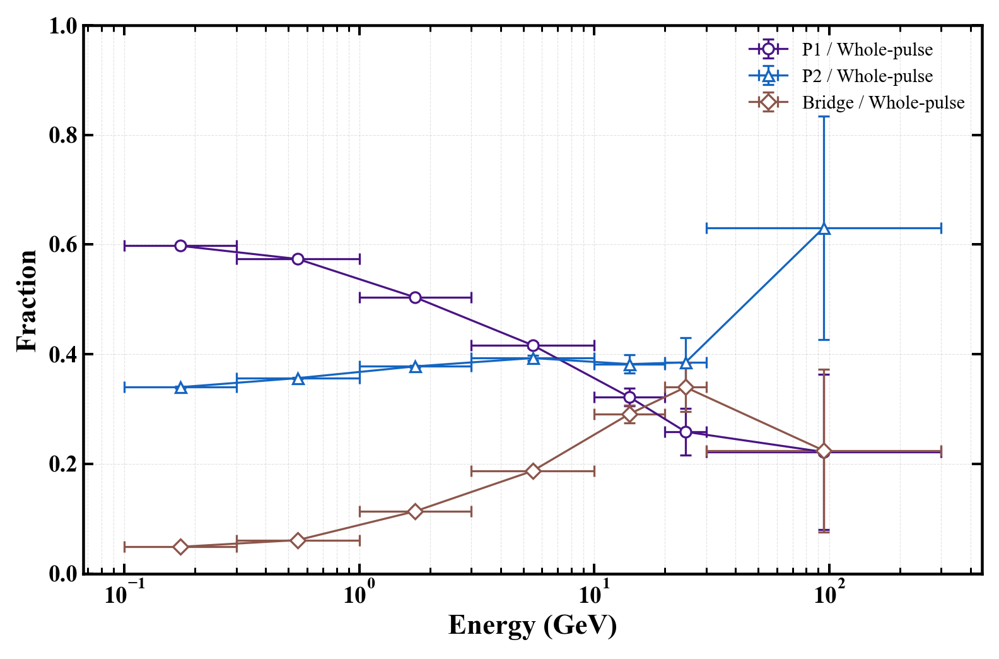<br />
图注：Energy dependence of the fixed-window fractional fluxes of the Crab pulsar in the same seven energy bands as Figure~\ref{fig:profiles_main}. Each point gives the OFF-subtracted pulsed counts in the fixed P1, P2, or Bridge window divided by the OFF-subtracted pulsed counts in the full phase interval. Vertical error bars show \(1\sigma\) statistical uncertainties propagated with the shared OFF term, and horizontal error bars indicate the widths of the energy bands.<br />
对应解读：对应摘要中“固定相位窗口分数流量随能量变化”的核心结果，以及建议重点检查诊断量、坐标轴和统计误差的图表。<br />
入选理由：这张图直接展示P1、P2和Bridge在七个能段中的OFF扣除后分数流量，是论文关于P1随能量下降、P2和Bridge随能量上升、P2在高能端超过P1这一关键结论的最直接证据。纵向1σ误差和横向能段宽度也便于判断趋势的统计可靠性。<br />
来源与置信度：arxiv_source；high；arxiv_source / ms2026-0292.tex:figure[6]</p>
<p><strong>Fig02</strong><br />
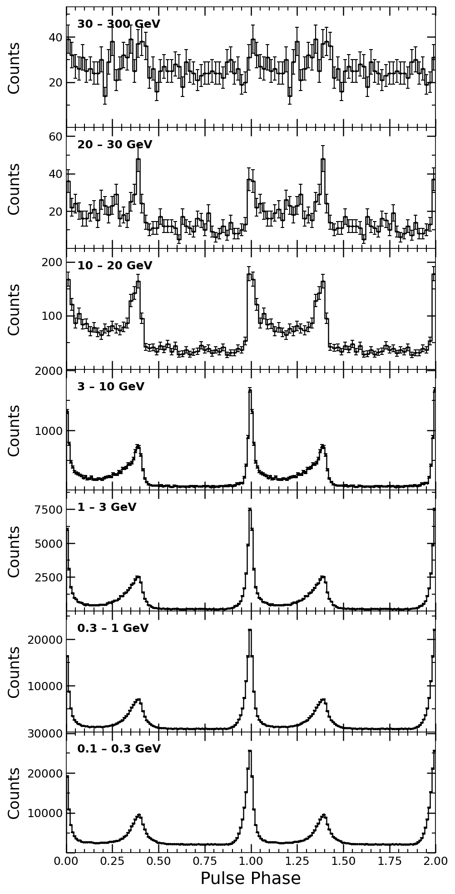<br />
图注：Energy-resolved Crab pulsar pulse profiles constructed from the merged phase-aligned FT1 dataset using the energy-dependent angular cut described in Section~\ref{subsubsec:energy_resolved_profiles}. The profiles are shown over two phase cycles (0$-$2) and are ordered from top to bottom as 30$-$300, 20$-$30, 10$-$20, 3$-$10, 1$-$3, 0.3$-$1, and 0.1$-$0.3 GeV. No event weights were applied in this figure, so the y-axis shows raw counts ($N$) and the error bars correspond to Poisson $\sqrt{N}$ uncertainties per phase bin. Profiles below 10~GeV use 100 phase bins, while the 10$-$20, 20$-$30, and 30$-$300~GeV panels use 50 phase bins to reduce low-count fluctuations.<br />
对应解读：对应摘要中“100 MeV到300 GeV能段脉冲轮廓”和10–20、20–30 GeV仍显著探测、30–300 GeV不显著探测的结果。<br />
入选理由：该图按能量分辨展示Crab脉冲星脉冲轮廓，能直接看出P1、P2和Bridge形态如何随能量变化，并检验高能段计数稀疏时的脉冲显著性。它是理解后续分数流量和相位分辨谱分析的基础图。<br />
来源与置信度：arxiv_source；high；arxiv_source / ms2026-0292.tex:figure[2]</p>
<p><strong>Fig05</strong><br />
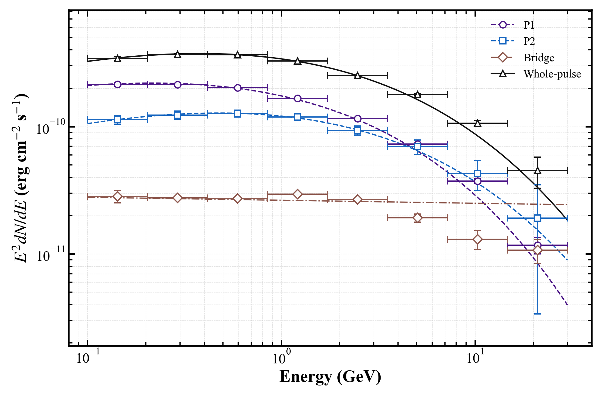<br />
图注：Phase-integrated SEDs for the fixed P1, P2, and Bridge windows, together with the full phase interval, in the 100 MeV$-$30 GeV fitting range. Here the Bridge window is the 0.07$-$0.27 interval. The fixed-window SED points are shown with eight logarithmic energy bins over 100 MeV$-$30 GeV, and no additional display-level merging was applied to the Bridge points. In this figure, the displayed model curves are PLEC4 for P1, P2, and the whole-pulse spectrum, and PL for the Bridge spectrum. The plotted uncertainties are total uncertainties after including the estimated systematics.<br />
对应解读：对应模型拟合段落中需要检查的固定P1、P2、Bridge和全相位SED、模型曲线及系统误差。<br />
入选理由：该图集中比较固定相位窗口的SED，并给出P1、P2、全脉冲的PLEC4模型以及Bridge的PL模型，误差包含系统误差。它比单纯脉冲轮廓更适合检查谱形差异、模型选择和系统误差对结论的影响。<br />
来源与置信度：arxiv_source；high；arxiv_source / ms2026-0292.tex:figure[5]</p>
<p><strong>Fig03</strong><br />
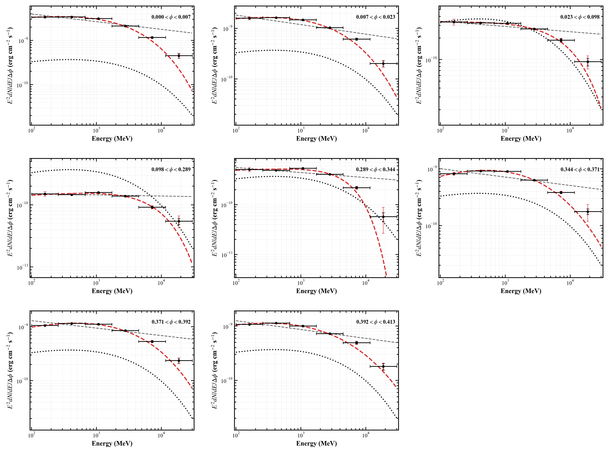<br />
图注：Phase-resolved spectral energy distributions of the Crab pulsar for phase bins 00$-$07 in the 100 MeV$-$30 GeV fitting range (two panels per row, four rows). The plotted SED quantity is normalized by the corresponding phase width, \(E^2 dN/dE/\Delta\phi\), consistent with the flux convention used in Table~\ref{tab:phase_params_placeholder}. The labels indicate the phase intervals, and the corresponding spectral results are presented in Table~\ref{tab:phase_params_placeholder}. Each panel compares the \texttt{PowerLaw} and \texttt{PLSuperExpCutoff4} fits; black points show statistical uncertainties, and red markers show total uncertainties after including the estimated systematics. The dotted black curve shows the whole-pulse PLEC4 spectral line for comparison.<br />
对应解读：对应相位分辨似然分析和逐相位bin谱能量分布的模型比较部分。<br />
入选理由：该图展示相位bin 00–07的SED，并同时比较PowerLaw与PLSuperExpCutoff4拟合，黑点为统计误差、红点为加入系统误差后的总误差，还包含全脉冲PLEC4参考曲线。它能支撑论文关于相位分辨谱变化和模型拟合可靠性的讨论。<br />
来源与置信度：arxiv_source；high；arxiv_source / ms2026-0292.tex:figure[3]</p>
<p><strong>Fig07</strong><br />
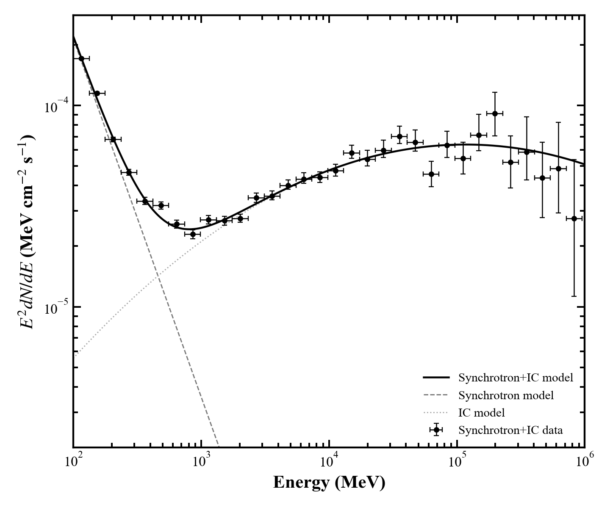<br />
图注：Off-pulse SED of the Crab nebula. The black points show a single set of spectral flux points for the combined Synchrotron+IC spectrum from the common-ROI bin-by-bin likelihood analysis. The gray dashed and gray dotted curves show the fitted synchrotron and IC component models, respectively, and the solid black curve gives their summed Synchrotron+IC model. Error bars indicate statistical uncertainties on the SED points.<br />
对应解读：对应摘要中“off-pulse分析确认同步辐射和逆康普顿成分”的结果。<br />
入选理由：该图给出off-pulse Crab nebula的SED，并分解为同步辐射、IC及二者总和模型，是验证论文非脉冲相位区间辐射成分结论的关键图。相比候选中的脉冲星相位图，它覆盖了论文另一个独立分析模块。<br />
来源与置信度：arxiv_source；high；arxiv_source / ms2026-0292.tex:figure[7]</p>
<p><strong>Fig01</strong><br />
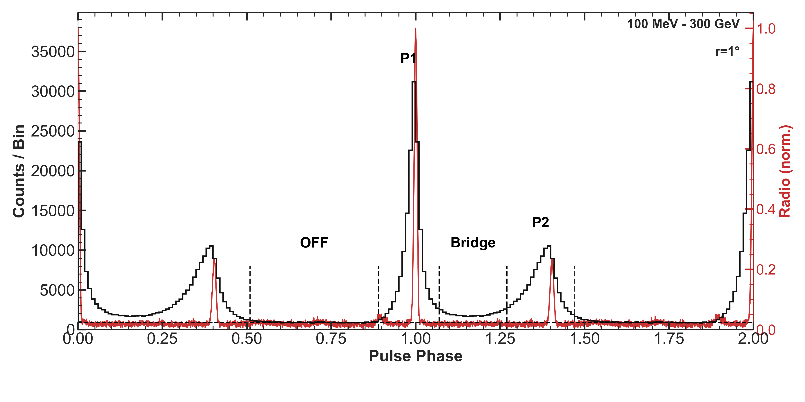<br />
图注：Integrated pulse profile of the Crab pulsar constructed from the phase-aligned FT1 events in the 100 MeV$-$300 GeV energy range within a $1^\circ$ radius. The profile is shown over two phase cycles (0$-$2) for visual continuity and is histogrammed into 100 phase bins. The black step histogram gives the counts per phase bin, and the black dashed horizontal line represents the estimated background level. The red curve shows the normalized radio profile from the Nancay telescope at 1.4 GHz, referenced to the right-hand axis, and illustrates the alignment of the radio main pulse with the adopted phase-zero definition. Black dashed vertical lines show the boundaries of the phase intervals labeled P1, Bridge, P2, and OFF.<br />
对应解读：对应数据构建、相位对齐、P1/Bridge/P2/OFF相位窗口定义和背景水平检查。<br />
入选理由：该图展示17年LAT事件相位对齐后的积分脉冲轮廓、背景水平、射电主脉冲对齐以及各相位区间边界。它为后续固定窗口分数流量、相位分辨谱和off-pulse分析提供相位定义依据。<br />
来源与置信度：arxiv_source；high；arxiv_source / ms2026-0292.tex:figure[1]</p>
<h4 id="_81">强相关工作</h4>
<p>检索相关工作应从三个方向展开。第一是 Fermi-LAT 对 Crab 脉冲星和明亮伽马射线脉冲星的早期与后续 catalog/专项分析，关键词包括 “Fermi LAT Crab pulsar phase-resolved spectroscopy”、“Crab pulsar GeV cutoff”、“P1 P2 Bridge energy dependence”。这些工作提供相位窗口定义、谱模型选择和 GeV cutoff 的历史基准，可用于判断本文 17 年再分析是否改变了既有参数或只是提高统计精度。</p>
<p>第二是地面 Cherenkov 望远镜对 Crab 脉冲星超高能脉冲辐射的探测，例如 MAGIC、VERITAS 以及相关 TeV 观测。关键词可用 “Crab pulsar pulsed emission above 25 GeV”、“Crab pulsar VERITAS MAGIC bridge emission”。这条文献线与本文 20–30 GeV 显著探测、30–300 GeV LAT 非显著之间存在天然衔接问题：需要比较能段、相位窗口、显著性定义和谱外推，而不能把不同仪器结果直接拼接。</p>
<p>第三是理论模型文献，包括 outer gap、slot gap、polar cap、striped wind、current sheet、magnetospheric reconnection 和 curvature radiation/IC 模型。检索时可结合 “Crab pulsar phase-resolved gamma-ray emission model”、“Crab bridge emission magnetosphere”、“P2/P1 ratio energy dependence”。这些工作能帮助解释为何 P1 随能量下降而 P2/Bridge 增强，以及为何 Bridge 可能具有比传统 GeV cutoff 更硬的谱形。</p>
<p>还应检索 Crab 星云的宽带 SED 与 LAT off-pulse 分析文献，关键词包括 “Crab nebula Fermi LAT off-pulse synchrotron inverse Compton SED”。这能为 Fig. 7 的同步辐射与 IC 分解提供对照，尤其是星云 flare、低能同步辐射尾部和高能 IC 组件的建模差异。若本文没有详细比较历史 off-pulse 结果，读者应在笔记中补充同类分析的参数范围和系统误差处理方式。</p>
<p><strong>相似工作</strong>：<br />
（未提供）</p>
<p><strong>基础理论 / 方法工作</strong>：<br />
（未提供）</p>
<p><strong>相反观点 / 张力线索</strong>：<br />
（未提供）</p>
</details>
<h3 id="9-refined-anti-proton-and-anti-deuteron-fluxes-from-weak-scale-dark-matter">9. Refined anti-proton and anti-deuteron fluxes from weak-scale Dark Matter</h3>
<ul>
<li>来源：arXiv / astro-ph.HE</li>
<li>链接：https://arxiv.org/abs/2606.10017v1</li>
<li>作者：Marco Cirelli, Mattia Di Mauro, Arpan Kar</li>
<li>评分：novelty 8/10，importance 8/10，relevance 9/10，final 9.35/10</li>
<li>推荐理由：Updated antiproton/antideuteron flux tables for weak-scale dark-matter annihilation/decay using modern CR propagation and cross sections; directly relevant to cosmic-ray indirect searches and reusable for HE/DM studies.</li>
</ul>
<p><strong>中文题目</strong>：弱尺度暗物质产生的反质子与反氘通量的更新计算</p>
<p><strong>做了什么</strong>：这篇文章更新了暗物质湮灭或衰变在银河系中产生的宇宙线反质子与反氘通量表。作者把新的带电宇宙线传播方案、新的反质子与反氘产生谱、新的非弹性截面以及更新的银河暗物质晕参数合并到一个半解析计算框架中，覆盖暗物质质量从几个 \(\mathrm{GeV}\) 到 \(100\,\mathrm{TeV}\)、动能从 \(0.1\,\mathrm{GeV}\) 到 \(100\,\mathrm{TeV}\) 的范围。核心结论是，相比旧的 \(\mathrm{MIN}/\mathrm{MED}/\mathrm{MAX}\) 传播设定，新一代 \(\mathrm{SLIM}/\mathrm{BIG}/\mathrm{QUAINT}\) 方案下反物质通量的不确定性明显收敛，暗物质间接探测中由传播模型带来的系统误差更可控。</p>
<p><strong>为什么重要</strong>：反质子和反氘是弱尺度暗物质间接探测中最干净、也最受传播系统误差限制的信道之一。反质子已经被 \(\mathrm{AMS}\text{-}02\) 精确测量，反氘则因普通天体物理背景极低而被视为未来 \(\mathrm{GAPS}\) 与相关实验的高价值目标。过去大量暗物质限制使用 \(\mathrm{PPPC4DMID}\) 的通量表，但其中的传播模型和强子化输入已经落后于当前的宇宙线数据和核反应截面知识。本文的重要性在于，它不是提出一个新暗物质模型，而是重算了很多暗物质模型都要调用的“标准输入表”。</p>
<p><strong>理论 / 观测 / 仪器方法价值</strong>：对理论工作者，本文提供可直接用于暗物质湮灭截面 \(\langle\sigma v\rangle\) 或衰变寿命 \(\tau_\chi\) 约束的星际反质子、反氘通量表，减少了重复实现传播方程和次级核物理的成本。对观测分析，新的通量网格有助于在 \(\mathrm{AMS}\text{-}02\)、\(\mathrm{GAPS}\)、\(\mathrm{BESS}\)、未来磁谱仪或低能反核实验中统一比较不同暗物质质量、末态、晕轮分布和传播方案。对方法学，文章展示了如何把半解析传播、现代初级谱、强子产生谱、非弹性损失和太阳调制前的星际谱结合成可复用的数据产品。</p>
<p><strong>为什么应该关注</strong>：如果你做反质子暗物质限制、反氘预言、宇宙线传播系统误差、或者想把某个弱尺度暗物质模型快速投影到可观测通量上，这篇文章值得关注。它相当于对旧版 \(\mathrm{PPPC4DMID}\) 反物质模块的一次现代化替换：不一定改变所有结论的方向，但会改变误差预算、低能区归一化、传播模型间包络以及未来实验的发现潜力估计。</p>
<details class="paper-detail">
<summary>展开详细解读：文章讲解、背景、理论、重点章节、图表与相关工作</summary>
<h4 id="_82">文章详细讲解</h4>
<p>科学问题：暗物质间接探测需要把粒子物理源项转换成地球附近可观测的宇宙线通量。对伽马射线来说，传播相对直接；但对带电反物质，反质子 \(\bar p\) 和反氘 \(\bar d\) 在银河磁场中扩散、可能经历对流、再加速、能量损失、湮灭损失和太阳调制，因此从暗物质粒子质量 \(m_\chi\)、湮灭截面 \(\langle\sigma v\rangle\) 或衰变寿命 \(\tau_\chi\) 到观测通量的映射高度依赖传播模型。旧的 \(\mathrm{PPPC4DMID}\) 表在过去十多年被广泛使用，但它基于较早的传播参数、较旧的反质子和反氘产生谱以及较不完整的反核非弹性截面输入。本文要解决的是：在当前宇宙线传播和反物质产生知识下，暗物质诱导的 \(\bar p\) 与 \(\bar d\) 星际通量应如何更新，传播不确定性是否仍像旧 \(\mathrm{MIN}/\mathrm{MAX}\) 包络那样巨大。</p>
<p>作者怎么做：作者使用半解析银河传播框架求解稳态带电宇宙线输运方程，纳入空间扩散、能量损失、银河风对流、扩散再加速以及反粒子在星际介质中的非弹性损失。传播参数采用更新后的 \(\mathrm{SLIM}\)、\(\mathrm{BIG}\)、\(\mathrm{QUAINT}\) 方案，并在每个方案下考虑类似 \(\mathrm{MIN}/\mathrm{MED}/\mathrm{MAX}\) 的代表性组合。暗物质分布则比较 \(\mathrm{NFW}\)、\(\mathrm{Einasto}\) 和 \(\mathrm{Burkert}\) 晕轮剖面。粒子物理端，作者使用 \(\texttt{CosmiXs}\) 给出的改进 \(\bar p\) 和 \(\bar d\) 产生谱，质量覆盖从几个 \(\mathrm{GeV}\) 到 \(100\,\mathrm{TeV}\)，并结合基于 \(\mathrm{ALICE}\) 数据更新的反质子和反氘非弹性截面。</p>
<p>关键结果：本文最直接的产物是一套表格化的星际通量，可在 \(\texttt{CosmiXsPPPC}\) 项目中直接调用。与旧 \(\mathrm{PPPC4DMID}\) 结果相比，新传播模型下 \(\mathrm{MIN}\) 到 \(\mathrm{MAX}\) 的通量变化范围显著缩小，说明过去一些暗物质反物质预言的传播不确定性被高估或以过时方式估计。这个结论对反质子尤其重要，因为 \(\mathrm{AMS}\text{-}02\) 数据已经精确到传播与截面系统误差成为主导；对反氘也重要，因为低能反氘背景极低，发现潜力的判断对信号归一化和低能传播非常敏感。</p>
<p>局限和下一步：本文给出的是星际通量，而真正与近地观测比较还需要太阳调制建模，尤其低于几 \(\mathrm{GeV}\) 的反质子和反氘会强烈受日球层影响。半解析传播虽然透明、快速，但仍依赖轴对称扩散区、平滑暗物质晕和有效传播参数；真实银河可能存在局域气体结构、各向异性扩散、时间变化源分布以及更复杂的反核产生机制。下一步自然是把这些通量表嵌入全局宇宙线拟合，联合二级反质子背景、硼碳比、同位素比、日调制模型和实验响应，给出对具体暗物质通道的后验限制或发现显著性。</p>
<h4 id="_83">背景知识</h4>
<p>反质子是宇宙线中最成熟的反物质暗物质探针之一。普通天体物理过程会通过高能宇宙线质子或氦核与星际气体碰撞产生次级 \(\bar p\)，因此反质子并非无背景信道；但暗物质湮灭或衰变也会在强子末态中自然产生 \(\bar p\)，使其能谱形状可能在若干 \(\mathrm{GeV}\) 到几百 \(\mathrm{GeV}\) 区间留下额外成分。\(\mathrm{AMS}\text{-}02\) 对 \(\bar p/p\) 和 \(\bar p\) 通量的高精度测量曾引发关于几十 \(\mathrm{GeV}\) 暗物质信号的讨论，但这些解释与传播、截面和太阳调制系统误差纠缠很深。</p>
<p>反氘 \(\bar d\) 的背景物理不同。次级反氘需要产生反质子和反中子并以很小相对动量结合成核，低能区普通宇宙线背景被运动学强烈压低。许多暗物质模型产生的低能反氘谱相对更容易落入实验窗口，因此 \(\bar d\) 常被称为“低背景”反核探针。问题是，反氘预言对共合并模型、反核产生谱、非弹性损失截面和低能传播非常敏感，长期以来不确定性大于反质子。</p>
<p>历史上，\(\mathrm{PPPC4DMID}\) 为暗物质间接探测社区提供了极其有用的标准产物：给定暗物质质量和末态，输出伽马射线、中微子、正电子、反质子等通量或产生谱。但它的反物质部分继承了当时的传播参数和事件发生器输入。随着 \(\mathrm{AMS}\text{-}02\) 的核素数据、\(\mathrm{Voyager}\) 的低能星际谱、\(\mathrm{ALICE}\) 的反核截面信息以及新的传播全局分析出现，旧表格越来越像一个方便但不再最优的近似。</p>
<p>现在值得重新看的原因是两方面的。第一，观测精度提高后，旧的“传播不确定性包络”不能再被简单当作保守误差条；它可能既过宽，也可能在某些能区没有覆盖真实系统误差。第二，未来 \(\mathrm{GAPS}\) 等实验将把低能反氘从纯理论预言推向实际检验，预先统一信号通量计算会影响实验灵敏度和暗物质模型排除能力的估计。</p>
<p>该领域常见误区包括：把星际通量直接等同于近地通量，忽略太阳调制；把 \(\mathrm{MIN}/\mathrm{MAX}\) 包络误认为严格置信区间；只改变暗物质晕轮剖面而忽视传播参数更大的影响；或者把反氘低背景理解成无系统误差。实际上，低背景不等于高确定性，反核形成和输运的不确定性仍然需要认真处理。</p>
<h4 id="_84">基础理论 / 方法脉络</h4>
<p>从物理图像看，暗物质粒子在银河晕中湮灭或衰变，产生标准模型粒子，这些粒子经过强子化和衰变后给出每次事件的反质子或反氘能谱。由于暗物质晕是扩展源，源项在空间上跟暗物质密度 \(\rho_\chi(\mathbf{x})\) 有关：湮灭源项正比于 \(\rho_\chi^2\)，衰变源项正比于 \(\rho_\chi\)。这一区别意味着湮灭更偏向银河中心，衰变相对更受局域和大尺度晕质量影响。</p>
<p>带电反物质产生后不会直线传播到地球，而是在银河磁湍动中扩散。常用模型把宇宙线限制在半厚度为 \(L\) 的圆柱形扩散晕中，盘面含有气体和源项。扩散系数 \(K(R)\) 通常依赖刚度 \(R\)，低能区还可能受到速度因子、再加速和对流影响。反质子和反氘还会与星际气体发生非弹性散射或湮灭，这相当于给输运方程加入损失项。</p>
<p>本文采用的半解析方法通常利用圆柱几何中的贝塞尔展开或类似技术，把三维输运方程化成每个径向模式的一维垂向问题。这样做的优点是快、透明，适合为大量暗物质质量、末态、晕轮剖面和传播模型生成表格。缺点是几何和传播环境被理想化，局域不均匀性、非轴对称结构和时间变化很难完整表示。</p>
<p>关键量包括暗物质质量 \(m_\chi\)、湮灭截面 \(\langle\sigma v\rangle\)、衰变寿命 \(\tau_\chi\)、每次湮灭或衰变的注入谱 \(dN_i/dT\)、扩散系数 \(K(R)\)、对流速度 \(V_c\)、再加速强度或阿尔芬速度 \(V_a\)、扩散晕半厚度 \(L\)、非弹性截面 \(\sigma_{\mathrm{inel}}\) 以及局域暗物质密度 \(\rho_\odot\)。对反氘，还需要描述反质子和反中子结合成反氘的共合并参数或等效产生谱输入。</p>
<p>常见退化关系来自传播参数之间的补偿。例如较大的扩散晕 \(L\) 会让更多远处暗物质源贡献到局域通量，但较大的扩散系数 \(K(R)\) 又会改变粒子逃逸时间；对流和再加速可在低能区产生相似谱形变化；太阳调制可与低能传播、非弹性损失和注入谱形互相混淆。因此，本文强调更新后的传播方案使 \(\mathrm{MIN}/\mathrm{MAX}\) 变化更稳健，并不意味着所有系统误差已经消失，而是说明基于现代宇宙线数据的传播先验更有约束力。</p>
<h4 id="_85">公式与推导</h4>
<p>第一步是写出暗物质诱导反粒子的源项。对湮灭，单位体积、单位时间、单位动能的源项可写为</p>
<div class="math-display">\[\(q_i^{\mathrm{ann}}(\mathbf{x},T)=\frac{1}{2}\left(\frac{\rho_\chi(\mathbf{x})}{m_\chi}\right)^2\sum_f\) \(\langle\sigma\) v\rangle_f\frac{dN_i^f}{dT}\, .\]</div>
<p>这里 \(i\) 表示 \(\bar p\) 或 \(\bar d\)，\(T\) 是动能，\(m_\chi\) 是暗物质质量，\(\rho_\chi\) 是暗物质密度，\(f\) 是湮灭末态，\(dN_i^f/dT\) 是每次湮灭产生的注入谱。前面的 \(1/2\) 适用于自共轭暗物质；非自共轭情形会有不同归一化。</p>
<p>对衰变，源项少一个密度因子：</p>
<div class="math-display">\[\(q_i^{\mathrm{dec}}(\mathbf{x},T)=\left(\frac{\rho_\chi(\mathbf{x})}{m_\chi}\right)\sum_f\) \(\Gamma_f\frac{dN_i^f}{dT}=\left(\frac{\rho_\chi(\mathbf{x})}{m_\chi\tau_\chi}\right)\sum_f\) B_f\frac{dN_i^f}{dT}\, .\]</div>
<p>其中 \(\Gamma_f\) 是衰变到末态 \(f\) 的部分宽度，\(\tau_\chi\) 是总寿命，\(B_f\) 是分支比。这个式子说明衰变通量对晕轮尖峰程度不如湮灭敏感。</p>
<p>银河暗物质密度剖面进入源项。常见的 \(\mathrm{NFW}\) 形式可写为</p>
<div class="math-display">\[\rho_{\mathrm{NFW}}(r)=\rho_s\left(\frac{r}{r_s}\right)^{-1}\left(1+\frac{r}{r_s}\right)^{-2}\, ,\]</div>
<p>其中 \(r_s\) 和 \(\rho_s\) 是尺度半径与尺度密度。\(\mathrm{Einasto}\) 与 \(\mathrm{Burkert}\) 分别代表更平滑的内区曲率和有核剖面。对反质子和反氘这类带电粒子，局域附近贡献很重要，因此不同晕轮剖面的影响通常小于伽马射线银河中心分析中的影响，但仍需列入系统误差。</p>
<p>传播的核心是稳态输运方程。一个常用写法是</p>
<div class="math-display">\[0=q_i+\nabla\cdot\left(K\nabla\psi_i\right)-\nabla\cdot\left(\mathbf{V}_c\psi_i\right)+\frac{\partial}{\partial T}\left(b_i\psi_i-K_{TT}\frac{\partial\psi_i}{\partial T}\right)-\Gamma_{\mathrm{inel}}\psi_i\, .\]</div>
<p>这里 \(\psi_i(\mathbf{x},T)=dn_i/dT\) 是微分数密度，\(K\) 是空间扩散系数，\(\mathbf{V}_c\) 是对流速度，\(b_i=-dT/dt\) 表示连续能量损失，\(K_{TT}\) 是动能空间的扩散再加速系数，\(\Gamma_{\mathrm{inel}}\) 是非弹性破坏率。本文的半解析计算本质上就是在给定边界条件和传播参数后求解这个方程。</p>
<p>扩散系数通常按刚度参数化为</p>
<div class="math-display">\[K(R)=K_0\,\beta\left(\frac{R}{R_0}\right)^\delta\, ,\]</div>
<p>其中 \(R=pc/Ze\) 是刚度，\(\beta=v/c\)，\(K_0\) 是归一化，\(\delta\) 反映磁湍动谱，\(R_0\) 是参考刚度。新的 \(\mathrm{SLIM}/\mathrm{BIG}/\mathrm{QUAINT}\) 方案可理解为对低能行为、再加速和对流项采用不同物理假设后由宇宙线数据约束出的参数族。</p>
<p>非弹性损失率可写为</p>
<div class="math-display">\[\(\Gamma_{\mathrm{inel}}(T)=\sum_j\) n_j\,v_i(T)\,\sigma_{ij}^{\mathrm{inel}}(T)\, ,\]</div>
<p>其中 \(j\) 代表星际介质中的 \(\mathrm{H}\)、\(\mathrm{He}\) 等靶核，\(n_j\) 是数密度，\(v_i\) 是反粒子速度，\(\sigma_{ij}^{\mathrm{inel}}\) 是非弹性截面。本文纳入基于 \(\mathrm{ALICE}\) 数据改进的 \(\bar p\) 和 \(\bar d\) 非弹性截面，这会直接影响低能通量和反核生存概率。</p>
<p>求得局域数密度后，星际通量为</p>
<div class="math-display">\[\Phi_i^{\mathrm{IS}}(T)=\frac{v_i(T)}{4\pi}\,\psi_i(r_\odot,z=0,T)\, .\]</div>
<p>这里 \(r_\odot\) 是太阳到银河中心距离。本文提供的主要数据产品就是 \(\Phi_i^{\mathrm{IS}}(T)\) 在大量暗物质质量、通道、传播模型和晕轮剖面下的表格。</p>
<p>若要与近地数据比较，常用力场近似给出太阳调制后的通量：</p>
<div class="math-display">\[\(\Phi_i^{\mathrm{TOA}}(T_{\mathrm{TOA}})=\frac{p_{\mathrm{TOA}}^2}{p_{\mathrm{IS}}^2}\,\Phi_i^{\mathrm{IS}}(T_{\mathrm{IS}}),\qquad\) T_{\mathrm{IS}}=T_{\mathrm{TOA}}+\frac{|Z|}{A}\phi_F\, .\]</div>
<p>其中 \(\phi_F\) 是调制势，\(Z\) 和 \(A\) 是电荷数与质量数，\(p\) 是动量。本文重点是星际谱，因此这个式子提醒读者：低能实验比较必须另行处理日球层传播。</p>
<p>在数据约束中，若把暗物质信号与背景一起拟合，常见的泊松似然为</p>
<div class="math-display">\[\(\ln\mathcal{L}=\sum_k\left\)[n_k\ln\mu_k-\mu_k-\ln(n_k!)\(\right\)]\, ,\]</div>
<p>其中 \(n_k\) 是第 \(k\) 个能量箱的观测计数，\(\mu_k\) 是包含背景、暗物质信号、探测器响应和曝光后的模型计数。通量表进入 \(\mu_k\) 的信号项。比较新旧传播模型时，一个实用诊断是看同一 \(m_\chi\) 和通道下 \(\Phi_i^{\mathrm{MAX}}/\Phi_i^{\mathrm{MIN}}\) 随能量的变化；本文的主要信息之一正是这个比值在新方案下明显更收敛。</p>
<h4 id="_86">模型拟合 / 应用方法</h4>
<p>本文本身更像标准通量产品和方法更新，而不是对某一观测数据集给出最终暗物质参数后验。但这类结果在实际拟合中通常作为信号模板使用：给定 \(m_\chi\)、末态 \(f\)、晕轮剖面和传播模型，表格提供单位 \(\langle\sigma v\rangle\) 或单位 \(\tau_\chi^{-1}\) 的星际反质子或反氘通量；分析者再叠加二级背景、太阳调制和仪器响应，与 \(\mathrm{AMS}\text{-}02\) 或未来 \(\mathrm{GAPS}\) 计数进行比较。</p>
<p>拟合量通常包括暗物质归一化参数，例如湮灭的 \(\langle\sigma v\rangle\) 或衰变的 \(\tau_\chi^{-1}\)，以及背景模型中的宇宙线注入谱、扩散参数、核反应截面归一化、太阳调制势和实验系统误差参数。若采用贝叶斯框架，传播参数可以用硼碳比、质子、氦、反质子背景等数据给出的后验作为先验；若采用频率学框架，则常对传播与截面参数作剖面似然处理。本文的 \(\mathrm{SLIM}/\mathrm{BIG}/\mathrm{QUAINT}\) 表格可作为离散模型不确定性的基准集合。</p>
<p>残差诊断很关键。对反质子，不能只看总 \(\chi^2\) 是否下降，还要看暗物质模板是否在多个相邻能段系统性改善残差，是否与太阳调制或二级产生截面误差产生类似谱形，是否导致质子、氦或硼碳比拟合变差。一个常见风险是把背景截面或传播模型的小偏差解释为暗物质峰状残差，特别是在 \(\mathrm{GeV}\) 到几十 \(\mathrm{GeV}\) 区间。</p>
<p>对反氘，拟合逻辑更接近事件搜寻和灵敏度预测。因为预期背景事件数可能很低，泊松统计、接受度、曝光时间、能量窗和反氘鉴别效率会直接决定发现或排除能力。此时信号通量表需要卷积实验响应，得到预期计数；传播模型间的差异会转化为给定 \(\langle\sigma v\rangle\) 下事件数的上下包络。本文发现新传播模型包络变窄，意味着未来反氘实验的暗物质解释空间可能比旧估计更容易量化。</p>
<p>主要退化关系包括：\(m_\chi\) 与注入谱峰位决定能谱形状，但传播和太阳调制会移动或压低低能结构；\(\langle\sigma v\rangle\) 与局域暗物质密度 \(\rho_\odot^2\) 近似退化；扩散晕高度 \(L\) 与源体积退化；反氘共合并参数与信号归一化强退化；非弹性截面与低能生存概率退化。实际应用时，不能把表格插值误差、传播模型离散选择、截面误差和太阳调制误差混成一个简单常数误差。</p>
<p>模型可能失败的地方也应明确。半解析轴对称模型若不能描述真实局域星际介质、局域气泡、非均匀扩散或时间依赖太阳调制，低能通量比较会有偏差。暗物质晕若存在子结构或非球对称性，湮灭源项可能改变。粒子物理端，极高质量暗物质还可能需要更精确处理电弱辐射、重味强子化和反核形成模型。这些问题不否定本文通量表的价值，但决定了它更适合作为基准模板，而不是所有系统误差的终点。</p>
<h4 id="_87">重点章节 / 结果段落怎么读</h4>
<p>数据和输入谱部分应首先阅读。这里会说明 \(\texttt{CosmiXs}\) 如何提供 \(\bar p\) 与 \(\bar d\) 注入谱，暗物质质量和末态网格如何设置，以及这些输入相对旧 \(\mathrm{PPPC4DMID}\) 有哪些变化。读者应重点确认质量范围、动能范围、末态定义、归一化约定以及湮灭和衰变源项是否与自己的模型一致。</p>
<p>传播模型部分是全文的技术核心。应关注 \(\mathrm{SLIM}\)、\(\mathrm{BIG}\)、\(\mathrm{QUAINT}\) 的物理差别，例如是否包含显著再加速、对流和低刚度扩散修正，以及对应的 \(\mathrm{MIN}/\mathrm{MED}/\mathrm{MAX}\) 参数组合如何由现代宇宙线数据约束。这里决定了为什么新结果的传播包络比旧结果窄。</p>
<p>非弹性截面和反核处理部分也很重要。反质子和反氘在穿越星际气体时会发生损失，低能区尤其敏感。读者应检查作者如何使用 \(\mathrm{ALICE}\) 相关数据更新 \(\sigma_{\mathrm{inel}}\)，以及反氘产生谱和生存概率是否采用与自己研究一致的假设。</p>
<p>结果比较部分应按三个维度读：不同传播模型之间的通量变化、不同暗物质晕轮剖面之间的变化、以及新表格与旧 \(\mathrm{PPPC4DMID}\) 的差异。特别要看差异是整体归一化变化，还是能谱形状也发生改变；后者对暗物质质量拟合和实验能窗优化更关键。</p>
<p>发布数据和验证部分决定本文的可复用性。作者提到与文献结果或其他公开数值包进行验证，并把结果放在 \(\texttt{CosmiXsPPPC}\) 仓库。读者若计划引用，应检查表格单位、插值方式、能量变量是总动能还是每核子动能、是否为星际通量、以及是否需要自行加入太阳调制。</p>
<h4 id="_88">建议重点查看的图表</h4>
<ol>
<li>
<p>暗物质诱导 \(\bar p\) 通量随动能变化的图：重点看 \(\mathrm{SLIM}/\mathrm{BIG}/\mathrm{QUAINT}\) 和 \(\mathrm{MIN}/\mathrm{MED}/\mathrm{MAX}\) 包络宽度，尤其 \(1\text{--}100\,\mathrm{GeV}\) 区间。</p>
</li>
<li>
<p>暗物质诱导 \(\bar d\) 通量图：重点看低能 \(\bar d\) 窗口中不同传播模型的分散度，因为这是 \(\mathrm{GAPS}\) 等实验发现潜力最敏感的区域。</p>
</li>
<li>
<p>新结果与旧 \(\mathrm{PPPC4DMID}\) 的比值图：应看比值是否只是常数偏移，还是随能量显著变化；能量依赖差异会影响质量和通道解释。</p>
</li>
<li>
<p>不同晕轮剖面比较图：检查 \(\mathrm{NFW}\)、\(\mathrm{Einasto}\)、\(\mathrm{Burkert}\) 对局域反物质通量的影响是否小于传播不确定性，以及在高能或低能端是否有例外。</p>
</li>
<li>
<p>非弹性截面或损失模型影响图：若文中给出，应看更新 \(\bar p\) 与 \(\bar d\) 截面后低能通量如何变化，误差是否可能模拟暗物质谱形。</p>
</li>
<li>
<p>与其他代码或文献验证的残差图：关注相对差异是否在插值、边界条件、注入谱或传播参数变化后仍保持在可接受范围。</p>
</li>
<li>
<p>表格网格或数据发布说明表：检查质量点、能量点、通道、单位和归一化约定，这比漂亮的通量曲线更直接决定能否在自己的分析中正确使用。</p>
</li>
</ol>
<h4 id="_89">关键图表逐图导读</h4>
<p>图 1：若论文首先展示的是暗物质源项或注入谱，横轴通常是反粒子动能 \(T\) 或无量纲能量分数，纵轴是每次湮灭或衰变的 \(dN/dT\)。数据点或曲线对应不同暗物质质量、末态或 \(\bar p/\bar d\) 类型。读图时要注意纵轴是否乘了 \(T^2\) 或其他缩放，避免把谱峰位置误解为真实粒子数峰。</p>
<p>图 2：传播后 \(\bar p\) 星际通量图通常以 \(T\) 为横轴、\(\Phi_{\bar p}^{\mathrm{IS}}\) 为纵轴，彩色带或多条线表示 \(\mathrm{MIN}/\mathrm{MED}/\mathrm{MAX}\) 或 \(\mathrm{SLIM}/\mathrm{BIG}/\mathrm{QUAINT}\)。主要结论应是新传播设定下包络收窄。读图陷阱是不同曲线可能对应固定 \(\langle\sigma v\rangle\) 或单位归一化，必须先确认归一化后才能与观测通量比较。</p>
<p>图 3：\(\bar d\) 通量图的横轴可能是每核子动能，纵轴是星际反氘通量。低能区若出现不同传播模型的明显分离，应把它与实验能窗一起理解，而不是只看全能段最大值。对 \(\bar d\)，还要确认注入谱是否已经包含共合并模型假设；不同共合并参数会带来类似整体归一化变化。</p>
<p>图 4：新结果相对旧 \(\mathrm{PPPC4DMID}\) 的比值图通常最有诊断价值。横轴为动能，纵轴为 \(\Phi_{\mathrm{new}}/\Phi_{\mathrm{old}}\)。若比值在低能端强烈弯曲，说明差异来自传播、能量损失、非弹性截面或低能注入谱，而不只是归一化。若高能端趋于常数，则高能限制可能主要按比例重标。</p>
<p>图 5：晕轮剖面对比图应把同一传播模型和同一粒子物理输入固定，只改变 \(\rho_\chi(r)\)。如果 \(\mathrm{Burkert}\) 与 \(\mathrm{NFW}\) 的差别小于传播包络，说明局域反物质对银河中心尖峰不太敏感。陷阱是不要把这结论外推到伽马射线银河中心，因为光子视线积分对内区密度更敏感。</p>
<p>图 6：验证或残差图若存在，横轴通常为动能，纵轴为相对差异或残差。读者应检查差异是否集中在边界能量、低能太阳调制相关区或特定通道。如果残差呈随机小幅波动，说明插值和数值实现较稳健；如果呈系统倾斜，则可能反映模型约定或截面输入不同。</p>
<h4 id="_90">论文原图 / 可嵌入图片</h4>
<p><strong>Fig08</strong><br />
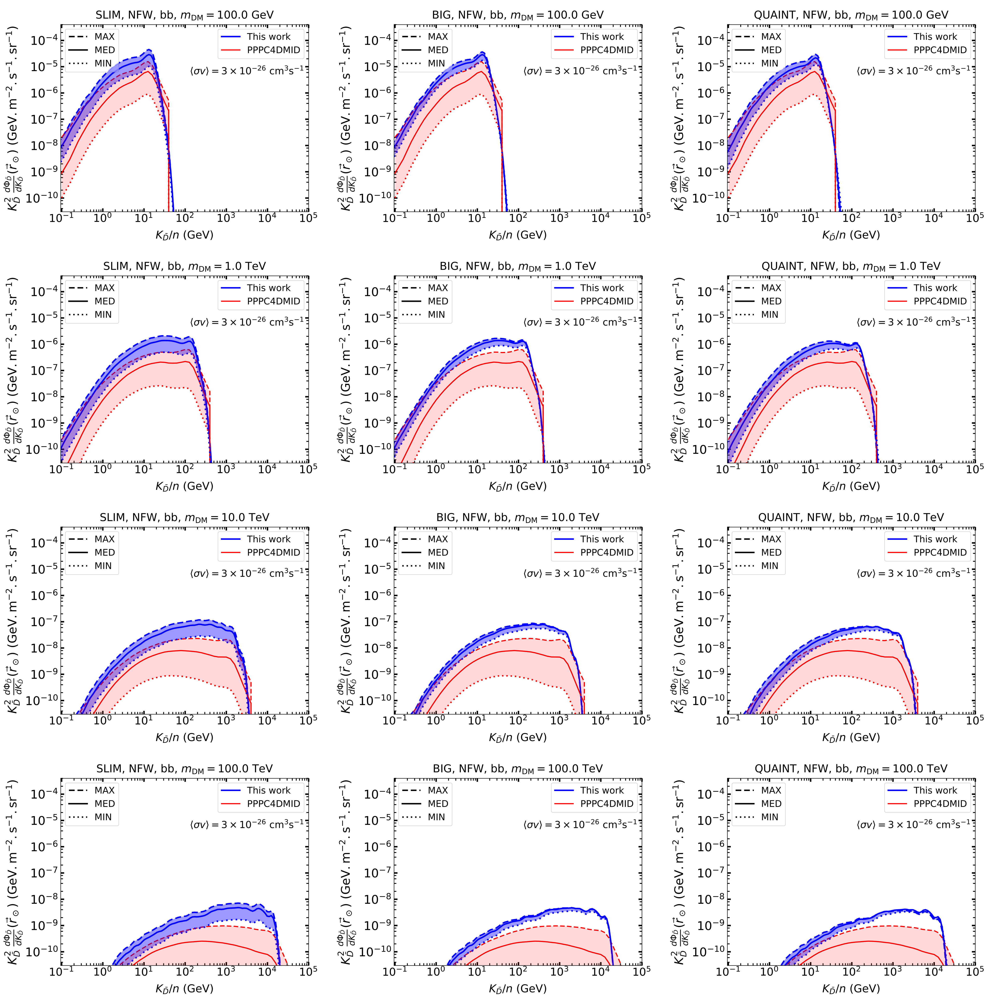<br />
图注：{\it Anti-deuteron fluxes} (IS) from ${\rm DM \, DM} \rightarrow \bm{b\bar{b}}$, under the {\sc Slim} (left column), {\sc Big} (middle column) and {\sc Quaint} (right column) propagation schemes, compared to the previous \texttt{PPPC4DMID} results. We fix for definiteness an {\bf NFW} DM profile. Like before, the four rows correspond to DM masses of $10^2$, $10^3$, $10^4$ and $10^5$ GeV, respectively.<br />
对应解读：建议重点查看的图表第2项；关键图表逐图导读图3；模型拟合中关于低能反氘/GAPS发现潜力的段落。<br />
入选理由：这是候选图中唯一直接展示暗物质诱导反氘星际通量的图，并且同时比较SLIM、BIG、QUAINT三种传播方案与旧PPPC4DMID结果。它最能支撑日报中关于低能反氘窗口、传播模型分散度以及未来GAPS类实验灵敏度的解读。<br />
来源与置信度：arxiv_source；high；arxiv_source / main.tex:figure[8]</p>
<p><strong>Fig10</strong><br />
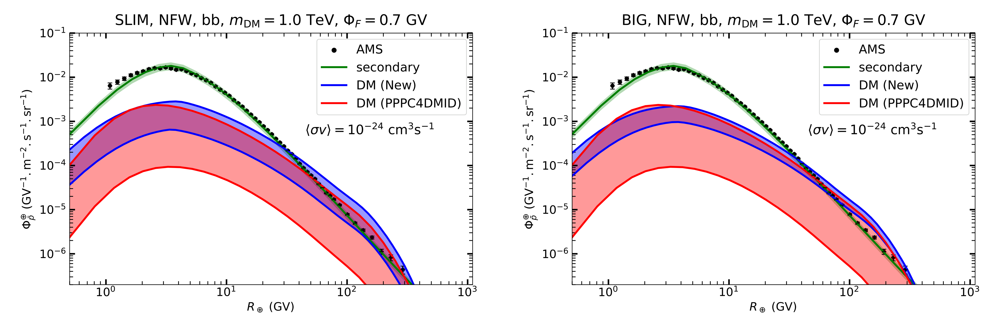<br />
图注：Comparison of DM-induced and secondary background $\bar{p}$ fluxes with the {\sc Ams-02} data~\cite{AMS02_data}. For the DM induced flux we consider the annihilation of 1 TeV DM particles into $b\bar{b}$ and the NFW DM profile. Here the ToA fluxes are shown considering a Fisk potential of $\Phi_F = 0.7$ GV. The two panels correspond to the {\sc Slim} and {\sc Big} propagation schemes. The blue and red lines for the DM-induced flux correspond to the new propagation models and the old ones from \texttt{PPPC4DMID}, respectively. In each case, the band corresponds to the span between the MIN and the MAX scenarios. The band around the secondary flux (green) corresponds to a 20\% uncertainty in the flux normalization.<br />
对应解读：建议重点查看的图表第1项和第3项；模型拟合中关于AMS-02反质子数据、二级背景、太阳调制和暗物质模板比较的段落。<br />
入选理由：该图把暗物质诱导反质子通量、二级背景和AMS-02数据放在同一张图中，并同时给出新传播模型与旧PPPC4DMID的MIN--MAX包络。相比单纯的星际通量图，它更直接展示新结果对实际反质子拟合和发现潜力的影响。<br />
来源与置信度：arxiv_source；high；arxiv_source / main.tex:figure[10]</p>
<p><strong>Fig02</strong><br />
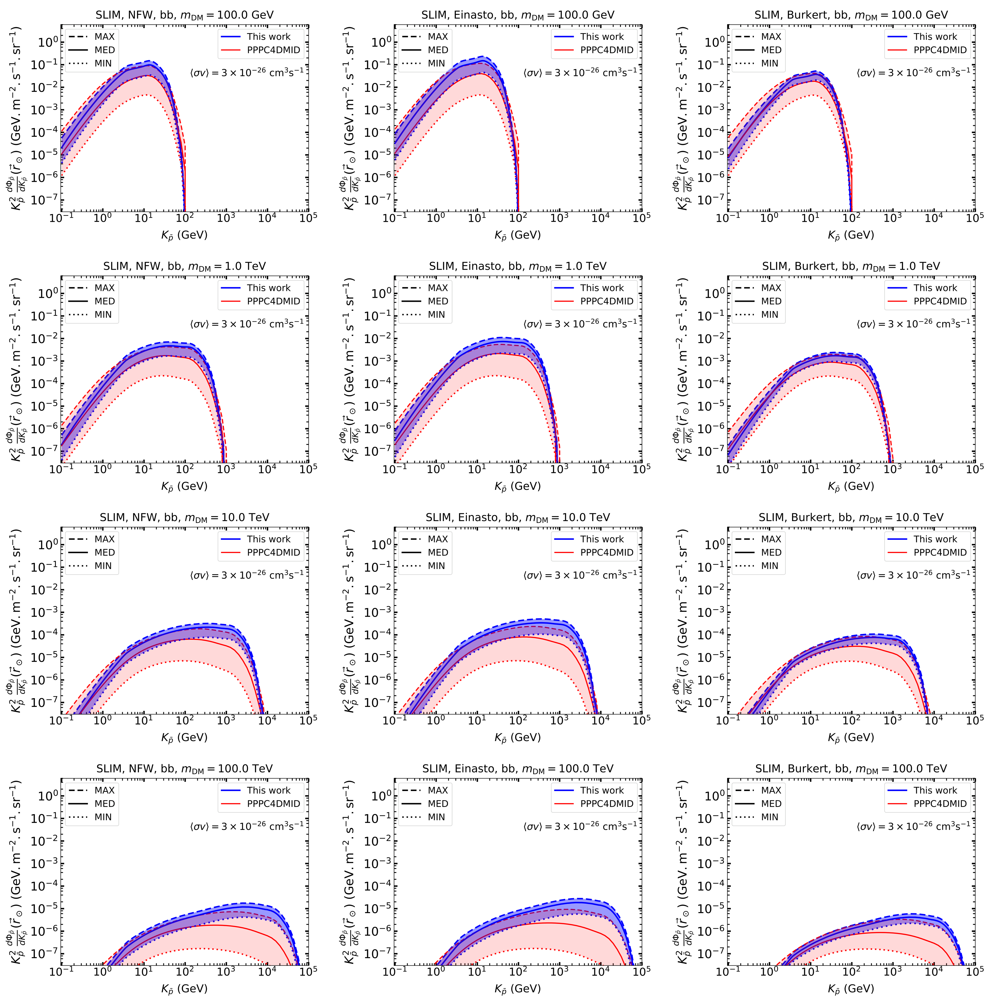<br />
图注：{\it Antiproton fluxes} (IS) from ${\rm DM \, DM} \rightarrow \bm{b\bar{b}}$ annihilations, under the {\sc Slim} propagation scheme, compared to the previous \texttt{PPPC4DMID} results. The three columns correspond to NFW, Einasto and Burkert DM profiles, respectively, while the four lines correspond to DM masses of $10^2$, $10^3$, $10^4$ and $10^5$ GeV, respectively.<br />
对应解读：建议重点查看的图表第1、3、4项；关键图表逐图导读图2、图4、图5中关于反质子通量、新旧PPPC4DMID比较和晕轮剖面的讨论。<br />
入选理由：该图展示SLIM传播方案下b bbar湮灭产生的反质子星际通量，并按NFW、Einasto、Burkert三种晕轮剖面分列，同时与旧PPPC4DMID结果比较。它能同时支撑传播模型、晕轮剖面和新旧结果差异三条主线。<br />
来源与置信度：arxiv_source；high；arxiv_source / main.tex:figure[2]</p>
<p><strong>Fig03</strong><br />
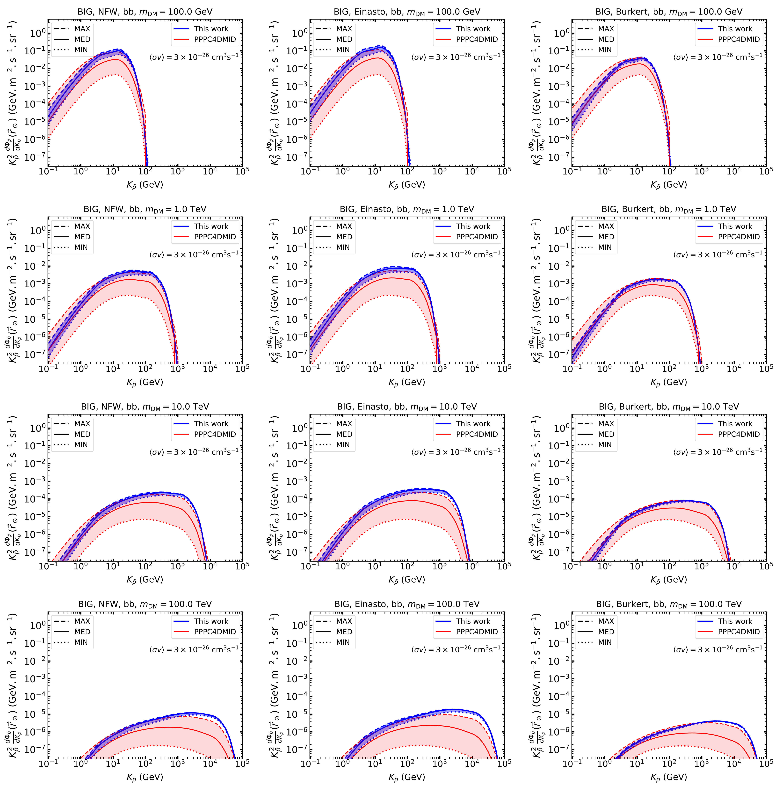<br />
图注：{\it Antiproton fluxes} (IS) from ${\rm DM \, DM} \rightarrow \bm{b\bar{b}}$ annihilations, under the {\sc Big} propagation scheme, compared to the previous \texttt{PPPC4DMID} results. The rows and columns are as in Fig.~\ref{fig:pbar_SLIM_bb_Ann}.<br />
对应解读：建议重点查看的图表第1、3、4项；关键图表逐图导读图2、图4、图5中关于BIG传播方案下反质子通量包络和新旧差异的讨论。<br />
入选理由：BIG是更新传播模型中的核心方案之一。该图与Fig02、Fig04组成SLIM/BIG/QUAINT三方案对照，可用于判断日报强调的1--100 GeV区间传播包络是否收窄，以及这种变化是否随晕轮剖面和暗物质质量改变。<br />
来源与置信度：arxiv_source；high；arxiv_source / main.tex:figure[3]</p>
<p><strong>Fig04</strong><br />
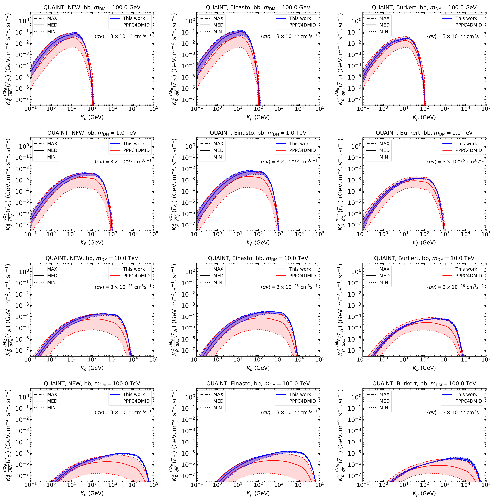<br />
图注：{\it Antiproton fluxes} (IS) from ${\rm DM \, DM} \rightarrow \bm{b\bar{b}}$ annihilations, under the {\sc Quaint} propagation scheme, compared to the previous \texttt{PPPC4DMID} results. The rows and columns are as in Fig.~\ref{fig:pbar_SLIM_bb_Ann}.<br />
对应解读：建议重点查看的图表第1、3、4项；关键图表逐图导读图2、图4、图5中关于QUAINT传播方案下反质子通量与旧PPPC4DMID比较的讨论。<br />
入选理由：该图补全QUAINT传播方案，使读者能与SLIM和BIG结果并列比较。由于日报特别要求查看SLIM/BIG/QUAINT与MIN/MED/MAX包络宽度，仅选单一传播方案会削弱论证，因此该图具有较高嵌入价值。<br />
来源与置信度：arxiv_source；high；arxiv_source / main.tex:figure[4]</p>
<p><strong>Fig01</strong><br />
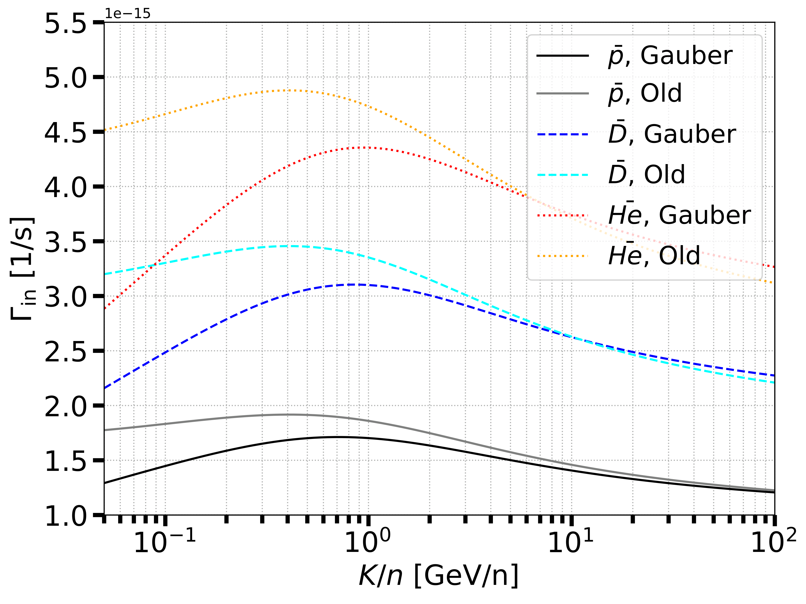<br />
图注：$\Gamma_{\rm inel}$ for different species shown as a function of $K/n$ (kinetic energy divided by the mass number, i.e.~kinetic energy per nucleon).<br />
对应解读：建议重点查看的图表第5项；详细解读中关于反质子和反氘非弹性损失、ALICE数据更新截面及低能通量变化的段落。<br />
入选理由：该图给出不同反粒子物种的非弹性损失率随每核子动能的变化，是理解低能反质子和反氘生存概率、低能谱形变化及截面系统误差的关键方法图。虽然它不是最终通量图，但能支撑日报中关于截面和损失模型影响的物理解释。<br />
来源与置信度：arxiv_source；high；arxiv_source / main.tex:figure[1]</p>
<h4 id="_91">强相关工作</h4>
<p>这篇工作与 \(\mathrm{PPPC4DMID}\) 的关系最直接：后者长期是暗物质间接探测社区的标准通量和产额参考，而本文可视为反质子、反氘部分在现代传播和反核输入下的更新版。相关检索关键词包括“\(\mathrm{PPPC4DMID}\) antiproton dark matter”、“\(\texttt{CosmiXs}\) antideuteron spectra”、“dark matter antiproton propagation \(\mathrm{AMS}\text{-}02\)”和“antideuteron indirect detection \(\mathrm{GAPS}\)”。</p>
<p>与相似观测相比，\(\mathrm{AMS}\text{-}02\) 反质子数据和硼碳比传播约束是理解本文价值的背景；与相反观点或张力相比，过去关于反质子过量是否支持几十 \(\mathrm{GeV}\) 暗物质的争论说明了传播和截面系统误差的重要性。有些研究认为反质子数据中存在与银河中心 \(\gamma\) 射线过量相似的暗物质参数区间，另一些研究则指出二级反质子产生截面、传播模型或太阳调制足以缓解这种异常。本文不直接裁决这些争论，但为重新评估它们提供了更新的信号模板。</p>
<p>基础理论方面应回看带电宇宙线扩散输运、反核共合并模型和暗物质晕轮剖面文献。建议检索关键词包括“cosmic ray diffusion reacceleration convection antiprotons”、“coalescence model antideuteron production”、“\(\mathrm{ALICE}\) antinuclei inelastic cross section”、“\(\mathrm{NFW}\) Einasto Burkert dark matter halo”。如果需要把本文用于数据拟合，还应同时阅读 \(\mathrm{AMS}\text{-}02\) 反质子通量论文、\(\mathrm{Voyager}\) 低能宇宙线谱以及最新传播参数全局拟合工作。</p>
<p><strong>相似工作</strong>：<br />
- https://arxiv.org/abs/1012.4515<br />
- https://arxiv.org/abs/1504.04276<br />
- https://arxiv.org/abs/1610.03071<br />
- https://github.com/CosmiXsPPPC</p>
<p><strong>基础理论 / 方法工作</strong>：<br />
- https://arxiv.org/abs/astro-ph/0106567<br />
- https://arxiv.org/abs/0810.4995<br />
- https://arxiv.org/abs/1110.4376<br />
- https://arxiv.org/abs/1305.1324</p>
<p><strong>相反观点 / 张力线索</strong>：<br />
- https://arxiv.org/abs/1602.03021<br />
- https://arxiv.org/abs/1610.03840<br />
- https://arxiv.org/abs/1704.04258<br />
- https://arxiv.org/abs/1903.02549</p>
</details>
<h3 id="10-ep260321asn-2026gzf-the-faintest-shock-breakout-associated-with-a-broad-lined-supernova">10. EP260321a/SN 2026gzf: The Faintest Shock Breakout Associated with a Broad-Lined Supernova</h3>
<ul>
<li>来源：arXiv / astro-ph.HE</li>
<li>链接：https://arxiv.org/abs/2606.09992v1</li>
<li>作者：Brendan O'Connor, Xander J. Hall, Malte Busmann, Daniel Gruen, Alberto Floris, Tomas Cabrera, Ziyuan Zhu, Antonella Palmese</li>
<li>评分：novelty 8/10，importance 8/10，relevance 9/10，final 9.35/10</li>
<li>推荐理由：Detailed HE transient study of EP260321a/SN 2026gzf, including thermal X-ray SBO, Chandra non-detections, and constraints on weak/choked relativistic outflows; highly relevant to GRB-like SNe.</li>
</ul>
<p><strong>中文题目</strong>：EP260321a/SN 2026gzf：与宽线超新星相伴的最暗弱激波突破候选事件</p>
<p><strong>做了什么</strong>：这篇论文报道了爱因斯坦探针发现的近邻快速 X 射线暂现源 EP260321a，红移为 \(z=0.0344\)，并通过多波段后随观测确认它与一颗宽线 Ic 型超新星 SN 2026gzf 相伴。X 射线谱呈热成分，温度约 \(kT=160\,\mathrm{eV}\)，峰值光度约 \(2.2\times10^{44}\,\mathrm{erg\,s^{-1}}\)，作者将其解释为恒星爆炸激波突破产生的瞬时紫外/X 射线闪光。超新星本身的光变、光谱演化和膨胀速度类似于与伽马暴有关的高能剥离包层超新星，但深度 Chandra 观测没有发现 X 射线余辉，从而排除了典型伽马暴或多数已知快速 X 射线暂现源的余辉情形。作者因此提出：该事件可能来自一个温和相对论、能量较低且被恒星包层闷死的外流，而不是一个成功穿出的强相对论喷流。</p>
<p><strong>为什么重要</strong>：激波突破是核心坍缩超新星最早的电磁信号之一，直接携带爆炸发生半径、外层密度结构、外流速度和包层环境的信息，但这类事件持续时间短、发现率低。EP260321a 重要之处在于它既有清楚的热 X 射线闪光，又有随后出现的宽线 Ic 型超新星，还缺少伽马暴式余辉；它把 SN 2008D 一类弱 X 射线激波突破和低光度伽马暴之间的参数空间连接起来，显示剥离包层恒星终结时可能产生更连续、更宽广的外流族群。</p>
<p><strong>理论 / 观测 / 仪器方法价值</strong>：对理论而言，这篇文章给了闷死喷流、温和相对论外流和普通超新星激波突破之间的一个低光度锚点，有助于约束喷流能量、初始洛伦兹因子和恒星风密度。对观测而言，它展示了宽视场软 X 射线巡天与快速光学光谱、深度 X 射线余辉限制结合的威力。对方法而言，论文的价值不只在单个发现，而在于如何用热谱、光变时间尺度、超新星分类、Chandra 上限和余辉模型排除法共同判断一个快速 X 射线暂现源的物理起源。</p>
<p><strong>为什么应该关注</strong>：如果你关心伽马暴-超新星联系、剥离包层恒星死亡、闷死喷流、中微子/宇宙线源候选或 X 射线时域巡天，这篇文章都值得读。它提醒我们：没有伽马射线触发、不出现明亮余辉的事件并不一定是普通超新星；相反，它们可能正是最能揭示喷流失败、外流被包层吸收、以及核心坍缩发动机能量分布低端的样本。随着 Einstein Probe、SVOM、ULTRASAT、LSST 时代到来，这类“弱而近”的早期爆炸信号会成为理解大质量恒星死亡多样性的关键。</p>
<details class="paper-detail">
<summary>展开详细解读：文章讲解、背景、理论、重点章节、图表与相关工作</summary>
<h4 id="_92">文章详细讲解</h4>
<p>科学问题：核心坍缩爆炸的最早可见信号通常来自激波从恒星表面或致密星周物质中突破时释放的紫外/X 射线闪光。问题是，这个信号很短、软 X 射线发现难度高，而且常常与低光度伽马暴、快速蓝光暂现源、潮汐瓦解事件或活动星系核耀发混淆。EP260321a 的特殊性在于它距离近，X 射线热谱清楚，并且后续出现了宽线 Ic 型超新星 SN 2026gzf。论文要回答的是：这个 X 射线闪光究竟是普通超新星激波突破、低光度伽马暴、喷流余辉，还是一个被闷死的弱外流？</p>
<p>作者怎么做：作者首先利用 Einstein Probe 对 EP260321a 的触发和早期 X 射线数据给出光变、谱形和峰值光度，指出谱可以用热黑体近似描述，温度约为 \(kT=160\,\mathrm{eV}\)。随后他们组织多波段后随观测，包括光学成像、光谱分类与演化、以及 Chandra 深度 X 射线观测。光学光谱显示它是宽线 Ic 型超新星，即外层氢和氦大多被剥离，谱线速度高，与许多伽马暴伴随超新星相似。与此同时，Chandra 没有发现晚期 X 射线余辉，这成为判别相对论喷流是否成功穿出的关键约束。</p>
<p>关键结果：论文认为 EP260321a 的热 X 射线峰值光度 \(L_{X,\mathrm{pk}}\simeq2.2\times10^{44}\,\mathrm{erg\,s^{-1}}\) 比典型低光度伽马暴暗，比普通光学发现的超新星早期信号更硬、更瞬时，位于 SN 2008D 与低光度伽马暴之间。超新星本身却并不异常弱：它的谱线速度、光变和演化更接近高能剥离包层超新星。这个组合说明中央发动机或爆炸外流可能存在，但并没有形成常规明亮伽马暴。根据余辉非探测，若存在成功相对论喷流，在恒星风密度 \(A_*\gtrsim1\) 下需要初始洛伦兹因子 \(\Gamma_0<30\)，且动能 \(E_{\rm kin}<10^{49}\,\mathrm{erg}\)，明显低于经典长伽马暴。</p>
<p>局限和下一步：论文的解释依赖于早期 X 射线谱是否确实热化、爆发时间和持续时间是否被完整采样、星周介质密度是否可由简单恒星风参数化，以及余辉模型是否覆盖了真实外流结构。闷死喷流和普通激波突破在某些参数下会给出相近的软 X 射线闪光，因此需要更多近邻样本、早期紫外观测、射电监测和更密集的光谱序列来区分。下一步最重要的是建立此类暗弱 X 射线激波突破的体积率、宿主环境和超新星物理参数分布，并检验它们是否真的是低光度伽马暴族群的低能延伸。</p>
<h4 id="_93">背景知识</h4>
<p>研究对象是一个快速 X 射线暂现源与一颗宽线 Ic 型超新星的组合。Ic 型超新星来自失去氢、氦外层的大质量恒星；“宽线”意味着吸收线被高速膨胀显著展宽，通常对应 \(v\sim10^4\) 到数 \(10^4\,\mathrm{km\,s^{-1}}\) 的喷出物速度。这类超新星长期与长伽马暴联系在一起，但并不是所有宽线 Ic 型超新星都有伽马暴，也不是所有可能的发动机驱动爆炸都能产生明亮喷流。</p>
<p>历史上，超新星激波突破的直接观测非常少。SN 1987A 给出了早期紫外信号的经典约束，SN 2008D 则因 Swift/XRT 探测到 X 射线闪光而成为剥离包层超新星激波突破的标志性案例。之后许多早期超新星和快速蓝光暂现源被讨论为激波冷却、星周物质相互作用或发动机活动的结果，但很少有事件同时具备软 X 射线热谱、近邻宿主、明确超新星分类和深度余辉限制。</p>
<p>观测背景正在改变。过去软 X 射线全天时域覆盖不足，很多持续数百秒到数千秒的激波突破事件会被错过。Einstein Probe 这类宽视场软 X 射线望远镜提高了发现近邻快速 X 射线暂现源的概率，而 ZTF、ATLAS、LSST 等光学巡天和快速光谱能力可以在几天内确认超新星类型。EP260321a 正是在这个新时域观测生态中出现的典型样本：先有 X 射线早期触发，再有光学超新星身份确认。</p>
<p>为什么现在值得重新看？因为伽马暴和超新星之间的关系越来越不像二分法。过去常说“有相对论喷流就是伽马暴，没有就是普通超新星”，但低光度伽马暴、X 射线闪光、快速蓝光暂现源和闷死喷流候选表明外流能量、开角、洛伦兹因子、星周密度和观测角可能形成连续分布。EP260321a 的暗弱 X 射线峰值和缺失余辉，为这个连续图景的低能端提供了有力案例。</p>
<p>常见误区之一是把所有早期 X 射线闪光都直接等同于伽马暴余辉。事实上，热谱、短持续时间和缺少非热余辉更支持激波突破或闷死喷流释放的热化辐射。另一个误区是认为宽线 Ic 型超新星必然对应成功喷流；这篇论文恰恰显示，超新星可以具有类似伽马暴超新星的高速度和高能特征，但相对论喷流仍可能弱、慢或被恒星包层堵住。</p>
<h4 id="_94">基础理论 / 方法脉络</h4>
<p>基础物理图像从爆炸激波开始。核心坍缩后，能量沉积在恒星内部，驱动激波向外传播。只要激波仍在光学厚的介质中，辐射被困在物质里并随流体运动；当激波前方的光学深度下降到大约 \(\tau\sim c/v_{\rm sh}\) 时，光子扩散时间与动力学时间相当，辐射突然逃逸，这就是激波突破。对于剥离包层恒星，半径较小、外层密度陡，突破信号更短、更热，常落在极紫外或软 X 射线波段。</p>
<p>如果爆炸还伴随中央发动机，例如新生黑洞或毫秒磁星，就可能发射准直喷流。喷流成功穿出恒星时，可产生伽马暴和随后的多波段余辉；若喷流能量不足、开角太大或持续时间太短，它会在恒星内被闷死，把能量沉积到外层并形成热茧或温和相对论外流。闷死喷流可以产生软 X 射线/紫外瞬变，但不一定有明亮伽马射线或标准余辉。</p>
<p>本文关键量包括 X 射线黑体温度 \(kT\)、峰值光度 \(L_{X,\rm pk}\)、辐射半径 \(R_{\rm bb}\)、事件持续时间 \(t_{\rm dur}\)、超新星膨胀速度 \(v_{\rm ph}\)、喷流或外流动能 \(E_{\rm kin}\)、初始洛伦兹因子 \(\Gamma_0\)、以及恒星风密度参数 \(A_*\)。其中 \(R_{\rm bb}\) 不一定等于真实恒星半径，因为热化层、非球对称外流和星周物质都会改变有效发射面积；\(A_*\) 则把爆星前质量损失率和风速合并成一个余辉模型参数。</p>
<p>观测方法的逻辑是多重排除。Einstein Probe 给出早期 X 射线光变和谱形，用来判断是否为热激波突破；光学光谱给出超新星类型和速度，用来连接到剥离包层爆炸；光学光变约束镍质量、喷出物质量和爆炸能量的量级；Chandra 深度上限检验是否存在持续的非热余辉。若一个标准伽马暴余辉模型在合理密度和微物理参数下应当被 Chandra 探测到，却没有被探测到，就能排除成功高能相对论喷流。</p>
<p>主要退化关系包括：较低外流能量和较低环境密度都能压低余辉亮度；较大观测角也能让早期余辉变暗；较低 \(\Gamma_0\) 会推迟减速并改变峰值时间；较小微物理参数 \(\epsilon_e\) 或 \(\epsilon_B\) 也会降低同步辐射通量。因此，Chandra 非探测不能单独证明喷流不存在，但与无伽马射线触发、热 X 射线谱、低峰值光度和宽线 Ic 超新星组合在一起，就使闷死或弱温和相对论外流成为更自然的解释。</p>
<h4 id="_95">公式与推导</h4>
<p>第一步是激波突破的时间尺度条件。辐射从激波前方扩散出来的时间约为 \(t_{\rm diff}\)，动力学穿越时间约为 \(t_{\rm dyn}\)。当二者相当时发生突破：</p>
<div class="math-display">\[t_{\rm diff}\simeq {\tau R\over c},\qquad t_{\rm dyn}\simeq {R\over v_{\rm sh}},\qquad \tau_{\rm bo}\simeq {c\over v_{\rm sh}}.\]</div>
<p>这里 \(R\) 是突破层半径，\(v_{\rm sh}\) 是激波速度，\(c\) 是光速，\(\tau_{\rm bo}\) 是突破处向外的光学深度。这个关系说明高速激波不需要等到 \(\tau\sim1\) 才释放辐射，而是在 \(\tau\sim c/v_{\rm sh}\) 时就开始泄漏。</p>
<p>第二步是把观测到的热 X 射线谱与有效发射面积联系起来。若近似为黑体，玻尔兹曼温度 \(T\) 与光度 \(L_{\rm bb}\) 满足：</p>
<div class="math-display">\[L_{\rm bb}=4\pi R_{\rm bb}^2\sigma_{\rm SB}T^4.\]</div>
<p>其中 \(R_{\rm bb}\) 是黑体半径，\(\sigma_{\rm SB}\) 是斯特藩-玻尔兹曼常数。论文给出的 \(kT\simeq160\,\mathrm{eV}\) 对应软 X 射线温度；代入峰值光度 \(L_{X,\rm pk}\) 可估计有效热化半径，但要记住它是颜色半径而不一定是真实恒星半径。</p>
<p>第三步是把观测通量和光度连接起来。给定红移 \(z\) 和光度距离 \(D_L\)，能带内能量通量 \(F_X\) 与各向同性等效光度近似满足：</p>
<div class="math-display">\[L_X=4\pi D_L^2 F_X K(z,T,N_{\rm H}).\]</div>
<p>这里 \(K\) 是能带和红移修正因子，也可能依赖谱温 \(T\) 与吸收柱密度 \(N_{\rm H}\)。这个式子是从 Einstein Probe 计数率转换为物理光度的核心桥梁，系统误差主要来自谱模型和吸收修正。</p>
<p>第四步是估计总辐射能量。若 X 射线光变为 \(L_X(t)\)，则辐射能量为：</p>
<div class="math-display">\[E_X=\int L_X(t)\,dt\simeq L_{X,\rm pk}t_{\rm eff}.\]</div>
<p>其中 \(t_{\rm eff}\) 是由真实光变形状定义的有效持续时间。这个量可与激波突破、低光度伽马暴和闷死喷流茧辐射的能量尺度比较；EP260321a 的低 \(L_{X,\rm pk}\) 是它被称为暗弱激波突破候选的直接依据。</p>
<p>第五步是超新星喷出物的扩散光变近似。对放射性加热的剥离包层超新星，峰值时间与喷出物质量 \(M_{\rm ej}\)、不透明度 \(\kappa\)、特征速度 \(v_{\rm ej}\) 的标度可写为：</p>
<div class="math-display">\[t_{\rm pk}\approx \left({2\kappa M_{\rm ej}\over \beta c v_{\rm ej}}\right)^{1/2}.\]</div>
<p>这里 \(\beta\) 是与密度结构有关的常数。该式说明光学光变宽度主要约束 \(M_{\rm ej}\kappa/v_{\rm ej}\)，而谱线速度帮助打破 \(M_{\rm ej}\) 与爆炸能量的退化。</p>
<p>第六步是用速度估计动能量级。若喷出物具有代表性速度 \(v_{\rm ej}\)，则非相对论动能近似为：</p>
<div class="math-display">\[E_{\rm SN}\sim {1\over2}M_{\rm ej}v_{\rm ej}^2.\]</div>
<p>宽线 Ic 型超新星的高 \(v_{\rm ej}\) 往往意味着较高 \(E_{\rm SN}/M_{\rm ej}\)。本文指出 SN 2026gzf 的速度和光谱演化类似伽马暴相关超新星，因此问题不在于超新星是否高能，而在于是否存在成功穿出的相对论喷流。</p>
<p>第七步是余辉动力学的减速条件。对初始洛伦兹因子为 \(\Gamma_0\) 的外流，当扫掠质量 \(m\) 满足能量守恒量级关系时开始显著减速：</p>
<div class="math-display">\[E_{\rm kin}\sim \Gamma_0^2 m c^2.\]</div>
<p>在恒星风介质中，密度 \(\rho=A r^{-2}\)，扫掠质量 \(m\propto A r\)。因此较大的 \(A_*\) 会使外流更早减速并产生更亮余辉；若 Chandra 仍未探测到，就会强烈限制 \(E_{\rm kin}\) 和 \(\Gamma_0\)。</p>
<p>第八步是恒星风密度参数化。常用写法为：</p>
<div class="math-display">\[\rho(r)=5\times10^{11}A_* r^{-2}\,\mathrm{g\,cm^{-1}},\]</div>
<p>其中 \(r\) 以 \(\mathrm{cm}\) 为单位，\(A_*\sim1\) 大致对应典型 Wolf-Rayet 风的质量损失率和风速组合。论文在 \(A_*\gtrsim1\) 情形下给出 \(\Gamma_0<30\) 与 \(E_{\rm kin}<10^{49}\,\mathrm{erg}\) 的约束，意思是若周围风不稀薄，标准高能相对论喷流应该很容易被排除。</p>
<p>第九步是观测非探测如何进入统计判断。对 X 射线计数数据，模型预测计数 \(\mu_i\) 与观测计数 \(n_i\) 的泊松似然为：</p>
<div class="math-display">\[\ln\mathcal{L}=\sum_i \left[n_i\ln\mu_i-\mu_i-\ln(n_i!)\right].\]</div>
<p>这里 \(i\) 表示能道或时间 bin。Chandra 上限本质上是在这个似然框架中要求余辉模型预测的 \(\mu_i\) 不超过背景和观测计数允许的范围；因此“非探测”不是没有信息，而是对喷流能量、环境密度和微物理参数的联合约束。</p>
<h4 id="_96">模型拟合 / 应用方法</h4>
<p>本文涉及几类拟合。第一类是早期 X 射线谱拟合，核心是比较热黑体、幂律或吸收黑体模型对 Einstein Probe 数据的解释。拟合量包括温度 \(kT\)、吸收柱密度 \(N_{\rm H}\)、归一化和能带通量。判断重点不是单看最佳拟合温度，而是热模型是否显著优于非热幂律、残差是否集中在软能段、以及吸收修正是否会把温度和光度推到不同物理区间。</p>
<p>第二类是超新星光变与光谱拟合。光变可用经验模板或放射性扩散模型描述，给出峰值绝对星等、上升时间、下降率以及近似的 \(^{56}\mathrm{Ni}\) 质量、喷出物质量和动能量级。光谱拟合或谱线测量给出光球速度和分类依据。这里的退化很典型：较大的不透明度 \(\kappa\) 可以模拟较大的喷出物质量，宿主消光会影响峰值亮度和颜色，爆炸时刻不确定会影响上升时间。</p>
<p>第三类是余辉模型约束。作者利用 Chandra 深度非探测来排除标准伽马暴或快速 X 射线暂现源余辉。余辉预测依赖 \(E_{\rm kin}\)、\(\Gamma_0\)、环境密度 \(A_*\) 或均匀介质密度、电子能量分数 \(\epsilon_e\)、磁场能量分数 \(\epsilon_B\)、电子谱指数 \(p\)、喷流开角和观测角。非探测通常给出的是联合排除区，而不是单一参数的绝对上限；论文摘要中特别给出的 \(A_*\gtrsim1\) 条件就是为了说明约束依赖环境假设。</p>
<p>残差诊断上，读者应关注三点。其一，X 射线热谱残差是否显示额外硬尾；若有硬尾，可能暗示非热喷流或康普顿化成分。其二，光学光变是否能被普通宽线 Ic 模板解释；若存在过强早期蓝光或平台，可能需要星周相互作用或茧冷却。其三，Chandra 上限相对模型曲线的位置；如果上限只略低于某些模型，结论就对微物理参数敏感，如果低几个数量级，则排除力更强。</p>
<p>模型可能失败的地方包括非球对称。黑体半径假设球对称发射，但闷死喷流茧、极向外流或非均匀星周物质都可能造成角向差异。另一个问题是观测角：离轴成功喷流早期可以很暗，晚期才变亮；如果射电或 X 射线监测不够长，可能漏掉迟到余辉。最后，星周风参数 \(A_*\) 未必服从简单 \(r^{-2}\) 分布，爆星前剧烈质量损失会改变突破位置和余辉亮度。</p>
<p>实际应用上，这篇论文提供了一套分类流程：先用 X 射线温度和时间尺度识别激波突破候选，再用光学光谱确认超新星类型，随后用深度 X 射线和射电上限排除成功喷流。未来样本中，可以把 EP260321a 放进 \(L_X\)-持续时间、\(E_X\)-超新星速度、以及余辉上限-环境密度的参数空间图中，与 SN 2008D、低光度伽马暴和快速蓝光暂现源做统一比较。</p>
<h4 id="_97">重点章节 / 结果段落怎么读</h4>
<ol>
<li>
<p>发现与 X 射线性质：应首先阅读 Einstein Probe 触发、定位、光变和谱拟合部分。重点看事件持续时间、峰值通量、吸收修正和黑体温度 \(kT\)。这一节决定 EP260321a 是否真有激波突破所需的热、短时、软 X 射线特征。</p>
</li>
<li>
<p>光学对应体与超新星确认：接着看光学成像和光谱部分。重点是宿主红移 \(z=0.0344\)、光学暂现源与 X 射线位置的一致性、谱线缺少氢氦特征、以及宽线 Ic 分类依据。读者应特别检查与 GRB-SN 模板和普通 Ic-BL 模板的比较。</p>
</li>
<li>
<p>超新星光变和速度演化：这一部分说明 SN 2026gzf 并不是一个奇怪的低能超新星，而是在光变形态、谱线速度和演化上接近高能剥离包层超新星。读者应看作者如何估计峰值亮度、上升时间、颜色演化和光球速度。</p>
</li>
<li>
<p>Chandra 非探测与余辉排除：这是论文物理解释的关键。重点看 Chandra 观测时间、曝光、能带、通量上限，以及这些上限如何与已知伽马暴、低光度伽马暴和快速 X 射线暂现源余辉相比。若上限显著低于典型余辉，成功强喷流解释就很难成立。</p>
</li>
<li>
<p>物理解释与族群位置：最后读讨论部分，看作者如何在 SN 2008D、低光度 GRB 和闷死喷流框架中定位 EP260321a。重点不是“它属于哪一类”这个标签，而是它给外流能量、洛伦兹因子、恒星风密度和喷流穿出条件带来的约束。</p>
</li>
</ol>
<h4 id="_98">建议重点查看的图表</h4>
<ol>
<li>
<p>X 射线光变图：检查 EP260321a 的持续时间、峰值时刻、衰减斜率和背景水平。关键是确认它像瞬时突破闪光，而不是长时间活动源或普通余辉。</p>
</li>
<li>
<p>X 射线谱拟合图：检查黑体模型与数据点的匹配、低能吸收、是否有硬 X 射线尾部，以及黑体和幂律模型的残差差异。</p>
</li>
<li>
<p>光学多波段光变图：检查 SN 2026gzf 与 Ic-BL 或 GRB-SN 模板的相似性，特别是上升时间、峰值亮度、颜色演化和早期额外蓝光成分。</p>
</li>
<li>
<p>光谱序列图：检查宽吸收线、谱线速度随时间下降的趋势、与 SN 1998bw、SN 2006aj、SN 2008D 等模板的比较。</p>
</li>
<li>
<p>Chandra 图像或通量上限表：检查 X 射线对应位置是否无源、背景估计是否稳健、上限换算使用了什么谱假设。</p>
</li>
<li>
<p>余辉模型排除图：检查不同 \(E_{\rm kin}\)、\(\Gamma_0\) 和 \(A_*\) 曲线相对 Chandra 上限的位置。最重要的是看哪些参数区被排除，哪些仍可存活。</p>
</li>
<li>
<p>族群比较图：若论文给出 \(L_X\)-持续时间或 \(E_X\)-峰值光度图，应检查 EP260321a 相对 SN 2008D、低光度 GRB 和快速 X 射线暂现源的位置。</p>
</li>
</ol>
<h4 id="_99">关键图表逐图导读</h4>
<p>图 1：通常应是发现图、定位图或 X 射线光变图。横轴多半为触发后时间，纵轴为计数率或能带通量。读图时先看暂现源是否只在短时间窗内显著出现，再看背景区间是否平稳。若有多能段光变，应比较软硬能段同步性；激波突破预期以软热成分为主，而明显硬尾可能指向非热喷流。</p>
<p>图 2：应重点关注 X 射线谱。横轴为能量，纵轴为计数谱、展开谱或 \(\nu F_\nu\)，模型线可能包括吸收黑体和幂律。关键是 \(kT\simeq160\,\mathrm{eV}\) 的热模型是否能解释谱形，以及残差是否系统性偏离。读图陷阱是把展开谱当作直接观测量；真正的判断应基于响应矩阵折叠后的计数空间拟合。</p>
<p>图 3：光学多波段光变图。横轴为爆发后天数或修正到静止系的时间，纵轴为绝对星等或通量。数据点代表不同滤光片，模型线可能是模板或扩散模型。读者应看 SN 2026gzf 的峰值亮度和光变宽度是否落在 Ic-BL/GRB-SN 范围内，同时注意宿主消光和 \(K\) 修正会影响跨样本比较。</p>
<p>图 4：光谱序列或模板比较图。横轴为静止系波长，纵轴为相对通量，谱线通常为便于比较而平移。关键是宽吸收特征和谱线速度，而不是连续谱绝对形状。读图陷阱包括把噪声或宿主星系窄线误认为超新星特征，以及忽略相位差导致的模板不匹配。</p>
<p>图 5：Chandra 非探测或 X 射线余辉限制图。若是图像，读者应看 X 射线位置处是否有点源、源区和背景区如何定义；若是光变比较图，横轴为时间，纵轴为 X 射线光度，上限用倒三角表示。关键结论是 EP260321a 的后期 X 射线亮度低于典型伽马暴余辉预期。</p>
<p>图 6：外流参数排除图。横轴可能是 \(\Gamma_0\)、\(E_{\rm kin}\) 或时间，纵轴可能是通量、光度或允许区域。模型线对应不同 \(A_*\)、观测角或微物理参数。读图时不要只记住 \(\Gamma_0<30\) 和 \(E_{\rm kin}<10^{49}\,\mathrm{erg}\)，还要看这些限制是在 \(A_*\gtrsim1\) 以及特定余辉微物理假设下得到的。</p>
<p>图 7：族群比较图。横轴可能是持续时间、峰值光度或总辐射能量，纵轴为另一观测量。EP260321a 应位于 SN 2008D 和低光度 GRB 之间或附近的低光度区域。读图陷阱是不同事件的能带、红移修正和触发阈值不同，不能把所有点的相对位置解释为纯物理差异。</p>
<h4 id="_100">论文原图 / 可嵌入图片</h4>
<p><strong>Fig12</strong><br />
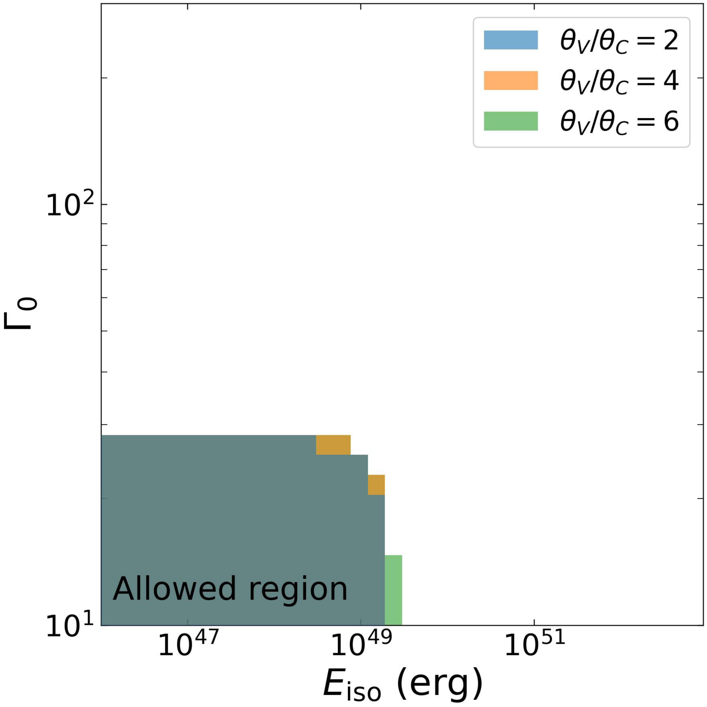<br />
图注：Allowed parameter space (shaded regions) of initial Lorentz factor $\Gamma_0$ at the jet's core and the jet's core kinetic energy $E_\textrm{kin}$ for afterglow non-detection, assuming a Gaussian structured jet at 158 Mpc ($z$\,$=$\,$0.0344$) based on the available X-ray and radio upper limits. In a wind environment, the allowed parameter space is very weakly dependent on the viewing angle $\theta_\textrm{v}/\theta_\textrm{c}$. We have fixed $\theta_\textrm{c}$\,$=$\,$0.15$ rad, $A_\ast$\,$=$\,$1$, $\varepsilon_\textrm{e}$\,$=$\,$0.1$, $\varepsilon_\textrm{B}$\,$=$\,$0.01$, and $p$\,$=$\,$2.2$.<br />
对应解读：建议重点查看的图表第6项“余辉模型排除图”；关键图表逐图导读图6；模型拟合段落中的“余辉模型约束”。<br />
入选理由：这是候选图中最直接支撑论文核心物理结论的图：用 X 射线和射电非探测给出初始洛伦兹因子 Γ0 与喷流核心动能 E_kin 的允许区域，并明确固定了 A_*、ε_e、ε_B、p 和结构喷流假设。它直接对应摘要中 Γ0&lt;30、E_kin&lt;10^49 erg 这类约束，比单纯展示超新星观测性质的图更能支撑“弱外流或闷死喷流”的解释。<br />
来源与置信度：arxiv_source；high；arxiv_source / main.tex:figure[12]</p>
<p><strong>Fig02</strong><br />
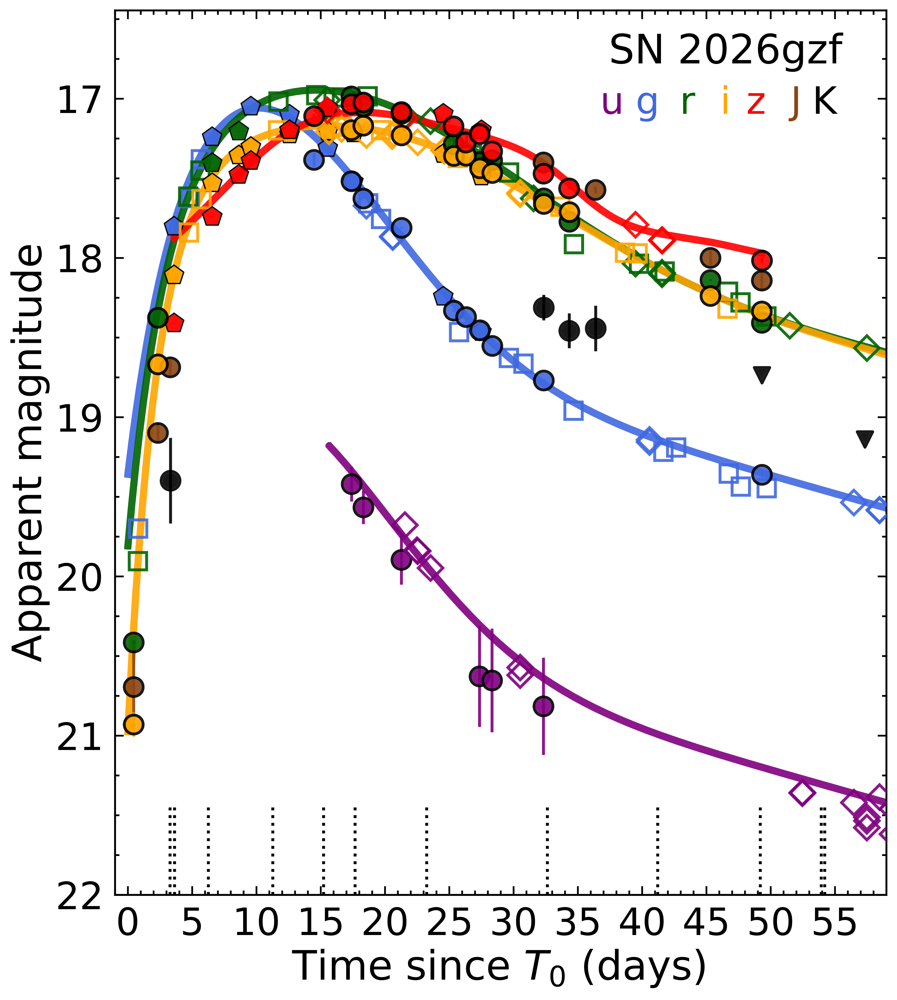<br />
图注：Multi-band lightcurve ($ugrizJK$) of SN 2026gzf from FTW (filled circles), DECam (filled pentagons), ZTF (empty squares), and Rubin (empty diamonds). Solid lines are empirical fits using Equation \ref{eqn:taddia} from \citet{Taddia2018}. The vertical dashed lines at the bottom mark the timing of our spectroscopic observations.<br />
对应解读：建议重点查看的图表第3项“光学多波段光变图”；关键图表逐图导读图3；模型拟合段落中的“超新星光变与光谱拟合”。<br />
入选理由：该图给出 SN 2026gzf 的 ugrizJK 多波段光变，并叠加经验拟合曲线，还标出光谱观测时刻。它是判断峰值亮度、上升/下降时间、颜色演化和是否符合 Ic-BL/GRB-SN 光变行为的基础图，比单一滤光片或派生参数图更完整。<br />
来源与置信度：arxiv_source；high；arxiv_source / main.tex:figure[2]</p>
<p><strong>Fig06</strong><br />
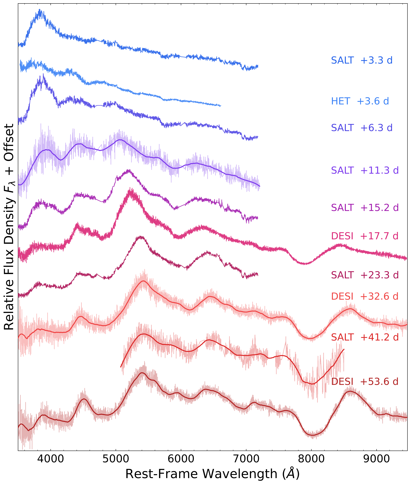<br />
图注：Spectral sequence of EP260321a/SN 2026gzf obtained with SALT, HET, and DESI between 3.3 and 53.6 d after the EP trigger. Emission lines have been clipped from the spectra for clarity. Some spectra are smoothed with a Savitzky-Golay filter (thick lines) for visualization purposes, and the unsmoothed spectra (thin lines) are also shown for completeness. The spectral shape of the SALT data obtained prior to 10 days is uncertain below 4200 \AA.<br />
对应解读：建议重点查看的图表第4项“光谱序列图”；关键图表逐图导读图4；模型拟合段落中的“光谱拟合或谱线测量给出光球速度和分类依据”。<br />
入选理由：该图展示 3.3 到 53.6 天的光谱序列，是确认宽线 Ic 型分类、观察宽吸收特征和谱演化的关键证据。日报特别强调不要只看连续谱形状，而要关注宽吸收线和相位演化，这张图正是最直接的依据。<br />
来源与置信度：arxiv_source；high；arxiv_source / main.tex:figure[6]</p>
<p><strong>Fig10</strong><br />
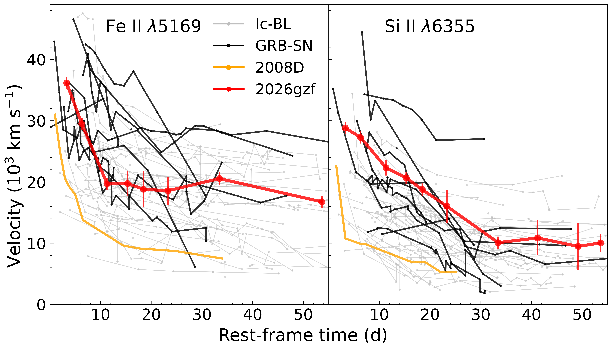<br />
图注：Velocity evolution of Ic-BL SNe (gray) and Ic-BL GRB-SNe (black) from \citet{Finneran2025} to SN 2026gzf (red). The left panel shows the evolution of Fe\,{\sc ii} $\lambda5169$ and the right panel shows Si\,{\sc ii} $\lambda6355$. Velocities for SN 2008D are reproduced from \citet{Mazzali2008,Malesani2009}.<br />
对应解读：建议重点查看的图表第4项“光谱序列图”中关于谱线速度下降趋势和与 SN 1998bw、SN 2006aj、SN 2008D 等模板比较的部分；模型拟合段落中的“谱线测量给出光球速度和分类依据”。<br />
入选理由：该图把 SN 2026gzf 的 Fe II λ5169 和 Si II λ6355 速度演化与 Ic-BL 和 GRB-SNe 样本比较，直接支撑“其膨胀速度类似高能剥离包层超新星/GRB-SN”的论断。相比 Fig08 只展示本源不同吸收线速度，Fig10 的比较样本更能支撑日报中的跨族群解读。<br />
来源与置信度：arxiv_source；high；arxiv_source / main.tex:figure[10]</p>
<p><strong>Fig03</strong><br />
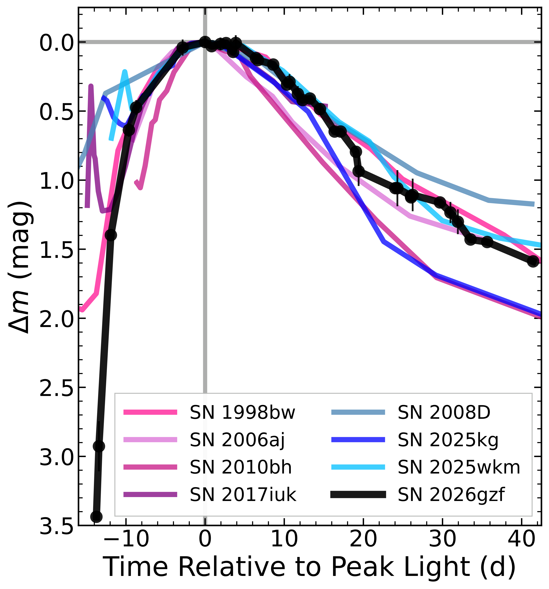<br />
图注：Lightcurve shape relative to peak brightness for SN 2026gzf (black) versus GRB-SNe (SNe 1998bw, 2006aj, 2010bh, and 2017iuk; \citealt{Galama1998,Campana2006,Sollerman2006,Starling2011,DElia2018,Izzo2019}) and FXT-SNe (SNe 2008D, 2025kg and 2025wkm; \citealt{Soderberg2008,Eyles-Ferris2025EP,Rastinejad2025EP,Srinivasaragavan2025EP0108a,Srinivasaragavan2026}). The data are presented in either the $r$ or $R$ filters and time has been converted to the rest-frame.<br />
对应解读：建议重点查看的图表第3项“光学多波段光变图”中与 Ic-BL 或 GRB-SN 模板相似性的检查；关键图表逐图导读图3。<br />
入选理由：该图将 SN 2026gzf 的峰值归一化光变与 GRB-SNe 和 FXT-SNe 直接比较，适合检验光变宽度和衰减形态是否落在相关族群范围内。它比 Fig02 更偏向样本比较，能补充说明 SN 2026gzf 不是普通孤立光变，而是与 GRB-SN/FXT-SN 族群相关。<br />
来源与置信度：arxiv_source；high；arxiv_source / main.tex:figure[3]</p>
<p><strong>Fig04</strong><br />
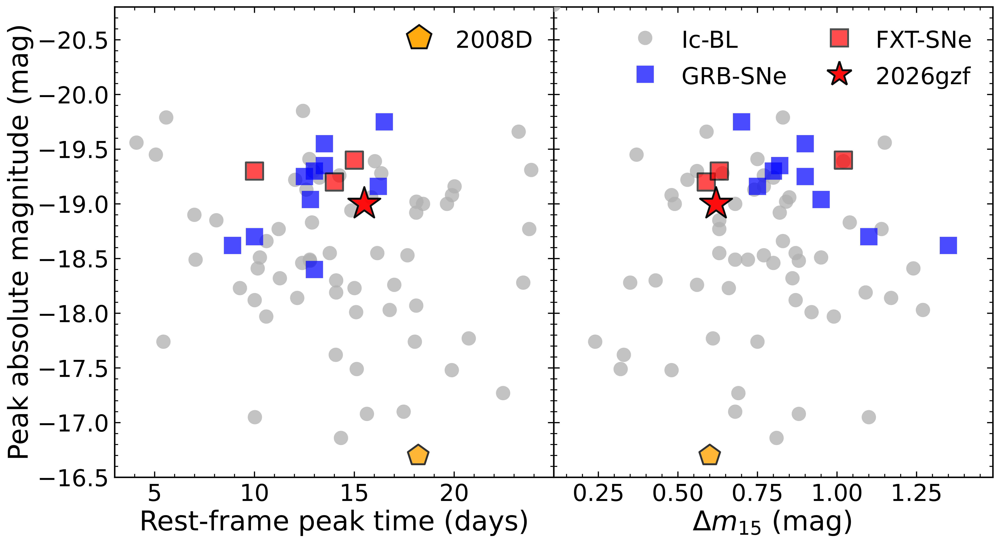<br />
图注：A comparison of EP260321a/SN 2026gzf to other Ic-BL SNe both associated with GRBs and identified independently through optical surveys. The left panel shows the peak absolute magnitude versus the rest-frame peak time, and the right panel shows the absolute magnitude versus $\Delta m_{15}$ which represents the fade rate over 15 days relative to the peak time. GRB-SNe are shown using $V$-band, while other Ic-BL, including SN 2026gzf, are shown using $r$-band. The data have been taken from \citep{Cano2013,Cano2014,Cano2017,Taddia2018,Srinivasaragavan2024,Rastinejad2025EP,Srinivasaragavan2026,Cotter2026}.<br />
对应解读：建议重点查看的图表第3项“光学多波段光变图”以及第7项“族群比较图”；详细解读中关于 SN 2026gzf 峰值亮度和光变宽度处于 Ic-BL/GRB-SN 范围的结论。<br />
入选理由：该图用峰值绝对星等、峰值时间和 Δm15 将 SN 2026gzf 放入 Ic-BL 与 GRB-SNe 参数空间，可支撑其光学超新星本身并不异常弱、而是接近高能剥离包层超新星的说法。虽然它不是 X 射线 L_X-持续时间图，但在候选图中是最接近族群比较和光变参数诊断的图之一。<br />
来源与置信度：arxiv_source；high；arxiv_source / main.tex:figure[4]</p>
<h4 id="_101">强相关工作</h4>
<p>这篇工作最直接的参照是 SN 2008D/XRF 080109，它同样是剥离包层超新星早期 X 射线闪光的经典案例；另一个参照系是低光度伽马暴及其超新星，如 GRB 980425/SN 1998bw、GRB 060218/SN 2006aj 和 GRB 100316D/SN 2010bh。这些事件共同构成从成功相对论喷流到弱 X 射线突破的连续谱。建议检索关键词包括 “shock breakout stripped-envelope supernova”, “SN 2008D X-ray transient”, “low-luminosity gamma-ray bursts supernovae”, “broad-lined Type Ic supernova GRB connection”。</p>
<p>理论上，它与闷死喷流、喷流茧辐射和温和相对论外流研究密切相关。相反或有张力的解释包括：离轴成功喷流、稠密星周物质相互作用产生的 X 射线闪光、以及非热快速 X 射线暂现源。区分这些模型需要晚期射电/X 射线监测、早期紫外覆盖、偏振观测和更好的星周密度约束。建议检索关键词包括 “choked jet shock breakout”, “cocoon emission supernova”, “off-axis GRB afterglow Ic-BL”, “Einstein Probe fast X-ray transient”。</p>
<p><strong>相似工作</strong>：<br />
- https://arxiv.org/abs/0802.1712<br />
- https://arxiv.org/abs/astro-ph/0603279<br />
- https://arxiv.org/abs/1004.2919</p>
<p><strong>基础理论 / 方法工作</strong>：<br />
- https://ui.adsabs.harvard.edu/abs/1976ApJ...207..213C/abstract<br />
- https://ui.adsabs.harvard.edu/abs/1978ApJ...220L.123K/abstract<br />
- https://ui.adsabs.harvard.edu/abs/1998Natur.395..672G/abstract</p>
<p><strong>相反观点 / 张力线索</strong>：<br />
- https://arxiv.org/abs/1806.10501<br />
- https://arxiv.org/abs/2006.10761</p>
</details>
<h2 id="_102">说明</h2>
<p>评分由 LLM 给出初评，再由本地阈值策略过滤；IACT、TeV 伽马射线和高能中微子天文学按重点方向处理。</p>
    </main>
  </div>
</body>
</html>
